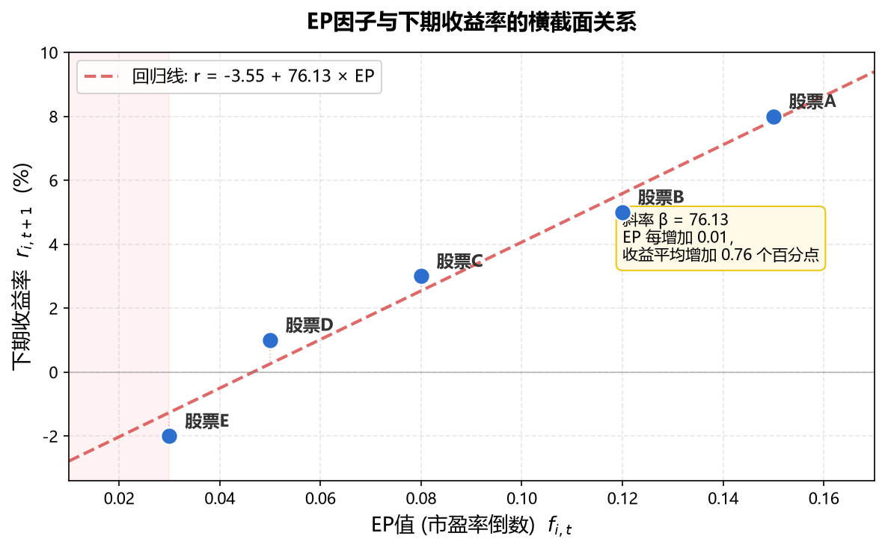

量化之路：多因子的语言
投资的核心问题，从来不是"买什么"，而是"为什么买"。
多因子模型给我们的最大馈赠，不是某个能赚钱的公式，而是一套把"为什么"讲清楚的语言。
关于这本书
这本书写给一类特定的读者：你有理工科背景，看得懂公式推导，对金融市场有兴趣，但从未系统地接触过量化投资。你可能在 A 股摸爬滚打了几年，赚过也亏过，隐隐觉得"凭感觉炒股"不是长久之计，想把投资建立在一个更可靠的理论框架上。
市面上关于量化投资的书不少，但多数落入两种极端。一种是 practitioner 手册——满页代码和调参技巧，跑通一个回测就万事大吉，至于"这个因子为什么有效""它在什么条件下会失效"，一笔带过。另一种是学术专著——模型优美、推导严谨，但从理论到"明天开盘我该怎么操作"之间，隔着一道鸿沟。
本书的重心在理论篇（第3-6章），它占据了约一半的篇幅，逐步推导了因子定价、因子检验、因子合成的完整数学框架。工具篇和实践篇相对精简。我们的重点是给出了方法论和关键思路，但不打算手把手地写一套生产级代码--在这个AI应用得如此广泛的时代，只要掌握了方法论，其他产物都可以根据需要快速实现。
我们相信：理论是因子投资中最不容易过时的部分。A股的数据接口会变、回测框架会迭代、Python库会升级，但APT为什么成立、IC的分布性质、过拟合的数学根源，这些不会变。只有真正理解了一个因子"为什么有效"，才能在它失效时从容应对，而不是在回撤中恐慌清仓。
如果你是一位想尽快跑通策略的实践者，本书的后半部分（第7-12章）会给你一些方向指引，但你可能还需要参考更偏工程的资料来补充实现细节。如果你是一位想深入理解量化投资理论基础的学习者，本书的前半部分（第3-6章）正是为你写的。
本书基于如下世界观：数学不仅是描述世界的语言，也是预测未来的工具。一个因子不应该仅仅因为是"历史上回测收益高"而有价值，而应该因为它能从数学上被证明。从 DDM 模型推导出 EP 与预期收益的关系，从信息扩散模型推导出动量的持续性，从杠杆约束推导出低波动异象，有逻辑严密的推导过程的结论才值得被信赖。因此，全书以数学推导为理论基石，在每个环节定量地追问"为什么"而非仅仅展示"是什么"。
这本书讲什么
全书围绕一条主线展开：从"因子是什么"到"如何用因子构建一个可运行的策略"。
- Part 1 认知篇（第1-2章）建立基本概念：量化投资与传统投资的区别、多因子模型的演进脉络；
- Part 2 理论篇（第3-6章）是全书的核心。我们逐一推导价值、动量、质量、规模、波动率五大经典因子，并完整讨论因子检验方法论与因子合成加权；
- Part 3 工具与实践篇（第7-8章）解决从工程到落地的完整链条：数据获取、回测框架搭建、A股真实数据上的多因子策略实战——从因子挖掘到完整策略；
- Part 4 进阶篇（第9-12章）讨论那些"知道但容易被忽视"的问题：风险管理与归因、过拟合与陷阱、从回测到实盘的落差，以及机器学习在量化中的应用（随机森林、XGBoost、神经网络）。
这本书不讲什么
明确边界同样重要：
- 不讲高频交易。本书的策略以月频调仓为主，不涉及日内微观结构和tick级数据。
- 不讲期权与衍生品。多因子选股是"做多便宜的好公司"的活儿，不是对冲复杂结构的活儿。
- 不讲纯黑箱策略。第12章会系统讨论机器学习在量化中的应用（随机森林、XGBoost、神经网络），但我们始终坚持一个原则：ML是增强因子研究的工具，而非替代理解的捷径。即使用了ML，你仍然需要追问"模型学到了什么""它在什么条件下会失败"。
- 不承诺稳定盈利。任何声称"稳赚不赔"的量化书都不值得读。本书的目的是帮你建立一套可检验、可改进的方法论，而非提供一个可以直接印钞的代码仓库。
如何阅读这本书
几种可能的阅读路径：
- 系统学习：按顺序通读。其中理论篇（第 3-6 章）是后续一切的基础。
- 带着问题跳读：如果你已经懂因子理论、只想搭回测，可以直接从第 7 章开始。但建议先扫一眼第 5 章（因子检验方法论），避免在回测中踩前人踩过的坑。
- 代码先行：每章末尾附有 Python 验证代码。我们鼓励你动手跑——把参数改一改，看看结论是否还成立。量化投资是一门"动手才知道深浅"的手艺。
关于数学：本书的推导用到微积分、线性代数和概率统计的基础知识，但不涉及测度论或随机分析。附录 B 提供了必要的数学回顾。如果某段推导暂时看不懂，可以先接受结论继续往下读——实践有时会反过来帮助你理解理论。
配套资源
本书附带一套 Python 代码，覆盖因子计算、检验、回测和组合优化的核心环节。代码以教学可读性为第一优先，不追求生产级性能。
最后
多因子模型存在了三十年，学术文献浩如烟海。这本书里没有原创的理论突破——我们做的只是把散落在论文里的智慧，重新组织成一条对散户友好的学习路径。
如果读完之后，你在看到一只"PE 只有 5 倍"的银行股时，第一反应不再是"好便宜，该买了"，而是"它的 EP 高是因为风险补偿还是市场低估了增长？这个高 EP 能持续吗？"，那么这本书就达到了它的目的。
投资是一场终身学习。愿这本书成为你路上的一个路标。
作者：Ellery ｜ 版本：v1.0 ｜ 时间：2026-06-25
第1章：什么是量化投资——从主观到量化的思维转变
前置知识：无（本章为全书起点）
学习目标：理解量化投资与主观投资的本质区别；认识量化投资的核心优势与局限；破除对量化投资的常见误解；了解散户学习量化投资的现实路径
1.1 投资决策的两种范式
1.1.1 主观判断：大多数散户的日常
如果你是一个典型的A股散户，你的投资决策过程可能是这样的：
- 朋友推荐了一只股票："XX公司最近业绩特别好，你快买！"
- 看了一篇券商研报，觉得某个行业有前景
- 股价跌了20%，觉得"够便宜了"应该抄底
- 某只股票连涨三天，感觉"趋势来了"赶紧追进去
- 大盘跌了一周，恐慌之下清仓离场
这些决策有一个共同特征：它们依赖主观判断——你的"感觉"、你的"经验"、你对市场"氛围"的解读。没有明确的规则告诉你"什么时候买、买多少、什么时候卖"。
主观判断不是"坏"的——事实上，世界上最成功的投资者中，很多是主观判断型的（如巴菲特、彼得·林奇）。但主观方法有几个固有的弱点：
- 不可复制：你今天判断正确，不代表明天还能正确。没有系统记录"我是怎么做出这个决定的"
- 情绪干扰：恐惧和贪婪会系统性地扭曲判断——涨时怕踏空追高、跌时怕继续跌割肉
- 无法回测：你无法验证"如果过去10年一直按我的方法做，结果会怎样"
- 容量有限：一个人能深入研究的股票数量有限——通常不超过20-30只
1.1.2 规则驱动：量化投资的核心
量化投资的本质是：把投资决策转化为明确的、可执行的规则，然后让规则代替人做决定。
一个最简单的量化策略示例：
"每月最后一个交易日，计算沪深300成分股中市盈率最低的30只股票，等权买入。持有一个月后重新计算并调仓。"
这个策略虽然简陋，但它具备量化投资的所有核心特征：
- 明确性：每一步操作都有精确定义——"市盈率最低的30只"不存在歧义
- 系统性：规则适用于所有股票、所有时间——不因为"今天心情不好"而改变
- 可回测：可以在历史数据上验证"如果过去10年按这个规则操作，收益如何"
- 可扩展：无论是300只还是3000只股票，规则同样适用——你只是多算了一些PE
1.1.3 两种范式的本质区别
| 维度 | 主观投资 | 量化投资 |
|---|---|---|
| 决策依据 | 经验、直觉、信息解读 | 数据、模型、统计规律 |
| 决策过程 | 模糊、难以言说 | 明确、可编码为程序 |
| 情绪影响 | 大（恐惧/贪婪） | 小（规则执行不需要情绪） |
| 可验证性 | 很难事后评估决策质量 | 可用历史数据回测验证 |
| 覆盖广度 | 通常10-30只股票 | 可覆盖全市场3000+只 |
| 边际成本 | 每多一只股票需要大量精力 | 多一只股票只多一行计算 |
| 弱点 | 不一致、受噪声影响 | 可能过度简化、忽视"常识" |
重要声明：量化不是"更好的"投资方式——它是不同的投资方式。它有独特的优势，也有独特的局限（下一节详述）。本书的立场是：对于数学能力不错但投资经验有限的散户，量化方法提供了一条更系统、更可控的学习路径。
1.2 量化投资的核心理念
1.2.1 系统性：覆盖而非聚焦
主观投资者通常"重仓少数股票"——深入研究3-5家公司，然后集中押注。这在对的时候收益惊人，但一旦判断失误，损失也集中。
量化投资的逻辑相反：广撒网、轻单注。不是找"一只能翻倍的股票"，而是找"一个规律——按照这个规律选出的一篮子股票，长期平均回报率比市场高"。
类比：
- 主观投资 ≈ 赌场里押某一个数字（赔率高但概率低）
- 量化投资 ≈ 当赌场老板（每把赚得少但概率在你这边，大量重复后稳定盈利）
关键公式（Grinold基本法则，第5章详细推导）：
$$\text{策略夏普比} \approx IC \times \sqrt{BR}$$
其中IC是每次选股的"预测准确度"（很小，通常0.03-0.08），$BR$（Breadth）是独立决策次数。在理想情况下（所有决策独立），$BR$等于选股数量$N$；但实际中股票间有相关性，有效广度小于$N$。IC很小没关系——只要广度够大，$\sqrt{BR}$可以把微弱的预测优势放大为可观的回报。
A股的优势：A股有3000+只股票——这是"广度"的天然优势。相比之下，如果你只看行业内10只龙头股做量化，效果会差很多。
1.2.2 纪律性：规则大于情绪
2022年4月，上证指数跌破3000点。许多散户恐慌割肉离场。而后市场在半年内反弹了20%以上——被恐慌驱逐的投资者错过了反弹。
一个量化策略在这种时候会怎样？它不管你害不害怕——规则说买就买。 如果你的模型判断"当前很多股票处于极度低估状态"，它会机械地执行买入。不管新闻多恐怖、朋友圈多悲观。
这种纪律性是量化投资最重要的优势之一——它帮你克服了人类最致命的投资弱点：
- 恐惧：市场暴跌时该买入而非逃离
- 贪婪：市场疯狂时该冷静而非追高
- 过度自信：以为自己"这次不一样"然后重仓赌博
1.2.3 可回测性：用历史检验想法
"我觉得低PE的股票表现更好"——这是一个假说。在量化框架下，你不需要争论它对不对，而是直接验证：
- 下载过去10年所有A股的PE数据和收益率数据
- 每月按PE排序，看看PE最低组是否真的跑赢
- 计算这种优势的统计显著性——是真实规律还是随机巧合？
这就是回测（Backtesting）。它让投资决策从"我觉得"变成"数据表明"。
但回测有坑——非常深的坑。过度拟合历史数据可以让任何垃圾策略看起来都很好（详见第10章）。所以第7章会讲"如何设计正确的回测框架"，第10章会讲"如何识别虚假的回测结果"。
1.3 量化投资不是什么：破除常见误解
1.3.1 误解一："量化 = 高频交易 = 赚快钱"
很多人听到"量化"就想到"高频交易"——毫秒级买卖、赚取微小价差、年化收益100%+。
事实：高频交易只是量化的一个极端分支。本书介绍的多因子量化是完全不同的东西：
- 持仓周期：月频（每月调仓一次）
- 预期年化：10-20%（远非暴利）
- 技术要求：Excel+Python即可，不需要超级计算机
- 竞争对手：其他散户和部分机构，而非做市商
1.3.2 误解二："量化 = 稳赚不赔"
量化策略同样会亏钱——而且可能连续亏好几个月甚至一年。
与主观投资的区别不在于"不亏钱"，而在于：
- 你知道为什么亏（是因子暂时失效，还是策略真的有问题）
- 你知道历史上这种亏损多久能恢复
- 你能提前估计最大可能亏多少（最大回撤）
量化给你的是可预期性，而非不败金身。
1.3.3 误解三："量化不需要理解市场"
有人认为量化就是"数据挖掘"——把数据丢给算法，让计算机自己找规律。
这是危险的误解。没有经济学直觉的纯数据挖掘极易产生虚假规律——在历史数据中有效但未来完全失效的"幻觉因子"。
本书的核心理念是：理论先行，数据验证。每一个因子都必须先有"为什么它能预测收益"的经济学逻辑，然后才去用数据检验。这一点在第3章到第6章（理论篇）中会反复强调。
1.3.4 误解四："散户做不了量化"
很多人觉得量化是"大机构才能做的事"——需要彭博终端、TB级数据库、百人团队。
实际上，散户做多因子量化的门槛比想象中低得多：
- 数据：Tushare、AKShare提供免费A股数据
- 计算：一台普通电脑+Python即可处理沪深300的月频数据
- 资金：5-10万元即可实盘验证（无最低门槛）
- 时间：月频策略每月只需花1-2小时调仓
当然，散户有散户的约束（无法做空、资金量小、没有专业风控系统），这些我们会在第12章讨论。
1.4 散户能做量化吗？——现实路径分析
1.4.1 你的优势
作为散户做量化投资，你有几个机构不具备的优势：
- 无规模约束：管理100亿的基金不能买小盘股（流动性不够），但你可以——而小盘股正是因子效应最强的地方
- 无基准考核：基金经理偏离基准太多会被解雇，但你不需要跑赢沪深300——你只需要赚到自己满意的绝对收益
- 长投资期限：你可以等3-5年让因子发挥作用，基金经理可能熬不过一个季度的考核
- 低运营成本：没有管理费、托管费、交易室租金——你的全部成本只有佣金和印花税
1.4.2 你的约束
同时也有约束需要正视：
- 不能做空：A股散户融券困难→因子的"空头端收益"你吃不到→实际收益约为理论值的50-70%
- T+1制度：今天买明天才能卖→短周期策略受限→月频以上最适合
- 信息劣势：机构有调研渠道、有专业数据库→某些信息敏感型因子（如盈利预期修正）你做不了
- 心理挑战：即使有了规则，"执行规则"本身也需要强大的心理素质——尤其是规则要求你买入让你恐惧的股票时
1.4.3 推荐的学习路径
- 本书第1-6章：建立理论基础（你正在做的事）
- 本书第7-8章：掌握数据和工具
- 本书第9-11章：用真实数据实操
- 纸面模拟（Paper Trading）：用真实行情但不投入真金白银，模拟运行3-6个月
- 小资金实盘：先用5万元验证策略在实盘中的表现
- 逐步放大：确认策略稳定后，再增加投入
时间预期：从零开始到能独立运行一个简单多因子策略，大约需要3-6个月的学习时间。
1.5 本章小结
1.5.1 内容回顾
- 量化投资的本质是"把投资决策转化为明确规则"——不是更好的方法，是不同的方法
- 核心优势：系统性（广覆盖）、纪律性（不受情绪干扰）、可验证性（回测检验）
- 不是高频交易、不是稳赚不赔、不是不需要理解市场、散户也能做
- 散户的特殊优势：无规模约束、无考核压力、长投资期限
下一章，我们将了解多因子模型的历史脉络——从只有一个因子的CAPM，到当今的"因子动物园"。
1.5.2 常见陷阱
-
期望过高：量化策略年化15-20%已经非常优秀。如果有人告诉你"量化策略月赚10%"，那要么是在吹牛，要么是承担了你不了解的巨大风险。
-
盲目追求复杂：最简单的多因子策略（等权合成3-5个因子、月度调仓）的表现往往不比花哨的机器学习模型差。先做对简单的，再考虑复杂的。
-
只回测不实盘：回测的结果永远比实盘好看（原因第10章详述）。不要在回测结果中沉醉太久——尽快进入"纸面交易"阶段验证真实效果。
-
忽略交易成本：回测中忘记扣除佣金、印花税、滑点，结果看着年化25%，扣完成本后可能只有10%甚至为负。A股的双边交易成本约0.15-0.3%（含印花税），对于月度调仓策略这是很大的摩擦。
第2章：多因子模型的前世今生——从CAPM到多因子
前置知识：第1章内容（量化投资的基本概念）；高中数学水平的概率直觉（期望、方差）
学习目标：理解资产定价理论的演进脉络；掌握CAPM的核心逻辑及其局限；理解Fama-French三因子/五因子模型的动机和贡献；了解多因子模型在A股市场的适用性
本章是一段"思想史之旅"。我们将追溯一个核心问题的演进：什么决定了一只股票的预期收益率？
这个问题的答案从"一个因子"（CAPM）演进到"三个因子"（FF3），再到"五个因子"（FF5），最终走向"多因子动物园"。理解这段历史不仅有助于你建立知识框架，更重要的是让你理解：每一次理论进步都是对"前一个模型哪里不够好"的回应。
2.1 CAPM：一个因子统治一切
2.1.1 CAPM的核心思想
1964年，William Sharpe（以及同期的John Lintner和Jan Mossin）提出了资本资产定价模型（Capital Asset Pricing Model, CAPM）。这个模型简洁到只有一个等式：
$$E[r_i] - r_f = \beta_i \cdot (E[r_m] - r_f) \tag{2.1}$$
其中：
- $E[r_i]$：股票 $i$ 的预期收益率
- $r_f$：无风险利率（如国债收益率，约3%/年）
- $E[r_m]$：市场组合（如沪深300）的预期收益率
- $\beta_i$：股票 $i$ 对市场的敏感度——市场涨1%，这只股票平均涨 $\beta_i$%
直觉含义：一只股票的预期回报只取决于一件事——它对市场整体波动的暴露程度（beta）。Beta高的股票（如券商股，beta约1.5）应该有更高的预期回报，因为它们在市场下跌时跌得更多——你承担了更多"跟着市场涨跌"的风险。
2.1.2 CAPM的推导思路（直觉版）
CAPM的推导依赖几个关键假设：
- 所有投资者都是均值-方差优化者（只关心预期收益和波动率）
- 所有投资者对收益率的预期和方差的估计完全相同（同质预期）
- 投资者可以无限制地以无风险利率借贷
在这些假设下：
- 所有投资者持有相同的风险资产组合（市场组合）
- 区别只在于"借钱多买"（激进）还是"部分存银行"（保守）
- 因此，唯一的定价因素就是"你和市场的关联程度"——beta
2.1.3 CAPM的验证：它对吗？
从1970年代开始，大量学者用数据检验CAPM的预测。核心预测是：高beta股票的回报应该高于低beta股票，且关系是线性的。
结果令人失望：
-
证券市场线太平：实际数据中，高beta股票的回报确实比低beta高，但差距远小于CAPM预测的。低beta股票的实际回报反而高于CAPM预测。
-
有大量"异象"无法解释：
- 小市值股票回报高于大市值（CAPM没有"规模"这个维度）
- 低PE股票回报高于高PE（CAPM没有"估值"这个维度）
- 过去涨得多的股票未来继续涨（CAPM完全不包含"动量"）
这些"异象"——CAPM无法解释的系统性超额收益——正是后来多因子模型的出发点。
2.1.4 CAPM的历史贡献
尽管CAPM在实证上不够成功，它的理论贡献是巨大的：
-
提出了"系统性风险"概念：不是所有风险都需要补偿——可以被分散掉的风险（个股特有风险）没有溢价。只有无法分散的系统性风险才有溢价。这个洞察至今仍是资产定价的基石。
-
建立了"风险-收益"的定量关系：预期回报不是天上掉下来的——它是对风险的补偿。风险越大，补偿越高。
-
提供了"基准"：后来的所有多因子模型都是在CAPM基础上"加因子"——先减去beta能解释的部分，看看还剩什么。
Sharpe因为CAPM获得了1990年诺贝尔经济学奖。
2.2 Fama-French 三因子模型：打开新世界
2.2.1 "两大异象"——CAPM无法解释的规律
到了1980年代末，两个最顽固的"CAPM异象"已经被充分记录：
异象1：规模效应（Size Effect）
Banz (1981) 发现：小市值股票的回报系统性高于大市值股票，即使控制了beta的差异后仍然如此。在美国市场，小盘股年化多赚约3-5%。
异象2：价值效应（Value Effect）
Stattman (1980)、Rosenberg et al. (1985) 发现：高B/P（账面市值比高，即"便宜"）股票的回报系统性高于低B/P（"昂贵"）股票。价值股年化多赚约5-7%。
这两个异象意味着：beta不是唯一的定价因素。还有别的东西在系统性地影响回报。
2.2.2 Fama-French的天才构造
1992-1993年，Eugene Fama和Kenneth French发表了两篇改变整个领域的论文。他们的核心贡献是：
不仅指出CAPM错了，还构造了一个"修正版"——三因子模型。
$$E[r_i] - r_f = \beta_{i,\text{MKT}} \cdot (E[r_m] - r_f) + \beta_{i,\text{SMB}} \cdot E[\text{SMB}] + \beta_{i,\text{HML}} \cdot E[\text{HML}] \tag{2.2}$$
三个因子分别是：
| 因子 | 名称 | 构造方法 | 含义 |
|---|---|---|---|
| MKT | 市场因子 | 市场收益 - 无风险利率 | 承担市场整体涨跌的风险 |
| SMB | 规模因子 | 小盘股组合收益 - 大盘股组合收益 | 承担"小公司额外风险"的补偿 |
| HML | 价值因子 | 高B/P组合收益 - 低B/P组合收益 | 承担"价值股额外风险"的补偿 |
SMB = "Small Minus Big"（小减大） HML = "High Minus Low"（高减低，指B/P高减B/P低）
用A股的例子来理解这三个因子：
MKT（市场因子）：这个最好理解——如果你买了一只beta=1.5的券商股（比如中信证券），大盘涨10%你可能涨15%，大盘跌10%你可能跌15%。你承担了更多"跟随市场涨跌"的风险，所以长期来看你应该获得比国债更高的回报。这就是市场风险溢价。
SMB（规模因子）：把A股所有股票按市值分两组——大的（如贵州茅台、工商银行，市值数千亿）和小的（如某个市值50亿的制造业公司）。历史数据显示小市值组的年化回报长期高于大市值组。为什么？因为小公司经营更不稳定、信息更不透明、流动性更差——持有它们意味着承担更多不确定性，市场用更高的预期回报来补偿你。
HML（价值因子）：把股票按"账面价值/市值"（B/P）排序——B/P高的叫"价值股"（如PE只有5倍的银行股），B/P低的叫"成长股"（如PE 80倍的AI概念股）。历史数据显示价值股长期跑赢成长股。为什么？一种解释：B/P高的公司通常是经营困难、前景不被看好的（所以才便宜），投资者持有它们承担了"可能继续恶化甚至破产"的额外风险——高回报是对这种风险的补偿。
2.2.3 三因子模型的威力
三因子模型一举解释了CAPM解释不了的大部分异象。用一个具体例子：
假设某只A股小盘价值股（如市值80亿的某煤炭公司，PE=6倍）过去一年回报了35%，远超沪深300的8%。CAPM会说"alpha=27%"。但三因子模型的分析是：
什么是 alpha？ 在因子模型里，alpha = 股票实际回报 - 模型能解释的回报。alpha 是模型"兜不住"的残差——如果模型完美解释了回报，alpha 应该为零。CAPM 只能用市场 beta 解释回报，所以把所有非市场部分都算成 alpha（27%）；三因子模型多了规模和估值两个维度，把其中 18% 的"伪 alpha"拆解成了因子补偿，真正解释不了的只剩 9%。
- 市场beta=1.2 → MKT贡献 $1.2 \times 8\% = 9.6\%$
- 小盘暴露 $\beta_{\text{SMB}}=0.8$ → SMB贡献 $0.8 \times 8\% = 6.4\%$（当年小盘跑赢大盘8%）
- 价值暴露 $\beta_{\text{HML}}=1.0$ → HML贡献 $1.0 \times 10\% = 10\%$（当年价值跑赢成长10%）
- 三因子合计解释：9.6% + 6.4% + 10% = 26%
- 真正的alpha：35% - 26% = 9%（远小于CAPM算出的27%）
结论：这只股票的高回报大部分不是"选股本事"，而是因为它暴露在小盘+价值两个风险因子上。三因子帮你看清了回报的真实来源。
实证表现：用三因子模型解释美国股票25个规模-B/P排序组合的时间序列收益率差异，$R^2$ 从CAPM的约70%提升到约90%以上（注意这是组合层面的解释力，个股层面的R²远低于此）。
这里在说什么？ Fama & French 做了一项经典测试：他们把所有美股按规模（大/小）和 B/P（便宜/昂贵）各分 5 档，交叉出 $5 \times 5 = 25$ 个组合，每个组合是一篮子相似股票。然后分别用 CAPM 和三因子模型去解释这 25 个组合的历史收益率——看模型能"说清楚"多少波动。说清楚的部分用 $R^2$ 衡量：0% 是完全没解释力（跟瞎蒙没区别），100% 是完美解释。三因子的 $R^2$ 高达 90%+，说明规模和价值几乎捕捉到了组合层面所有的定价差异。个股层面的 $R^2$ 远比这个低——因为单只股票有大量随机噪音（老板生病、厂房着火……），组合把这些噪音平均掉了，剩下的是系统性规律。
2.2.4 争议：风险还是错误定价？
Fama和French的解释是：SMB和HML代表的是系统性风险——小公司面临更多破产风险，价值股（财务困境公司）面临更多衰退风险，所以高回报是合理的风险补偿。
但另一派学者（行为金融学派）反驳：高回报不是风险补偿，而是市场犯了系统性错误——投资者过度追逐"明星成长股"、过度冷落"无聊价值股"。
这场争论至今未有定论——它贯穿了整本书的理论篇（第3-4章详细分析）。无论如何，三因子模型作为一个描述性工具（解释回报差异）是极其成功的。
2.3 从三因子到五因子再到多因子
2.3.1 三因子模型的新"异象"
三因子模型解决了旧异象，但新异象很快被发现：
-
动量效应（Jegadeesh & Titman, 1993）：过去12个月涨幅前10%的股票，未来继续跑赢后10%的股票，年化差约8-12%。三因子模型完全解释不了。
-
盈利效应（Novy-Marx, 2013）：高毛利率公司的回报高于低毛利率公司，即使控制了三因子仍然显著。
-
投资效应（Titman et al., 2004）：资产增长率低的公司（"保守投资"）回报高于资产增长快的公司（"激进投资"）。
2.3.2 Fama-French 五因子模型（2015）
为回应这些新异象，Fama和French在2015年将模型扩展为五因子：
$$E[r_i] - r_f = \beta_{\text{MKT}} \lambda_{\text{MKT}} + \beta_{\text{SMB}} \lambda_{\text{SMB}} + \beta_{\text{HML}} \lambda_{\text{HML}} + \beta_{\text{RMW}} \lambda_{\text{RMW}} + \beta_{\text{CMA}} \lambda_{\text{CMA}} \tag{2.3}$$
新增两个因子：
- RMW (Robust Minus Weak)：盈利能力强 - 盈利能力弱 → 质量因子
- CMA (Conservative Minus Aggressive)：投资保守 - 投资激进 → 投资因子
RMW 用A股例子理解：按盈利能力把股票分两组。这里的"盈利能力"用 ROE（净资产收益率 = 净利润 / 净资产，即"股东每投入一块钱净资产，公司一年能赚回多少钱"）来衡量。盈利强的（如茅台每投入 1 块钱净资产能赚 3 毛、海天能赚 2 毛 5） vs 盈利弱的（长期微利或亏损，每投入 1 块只能赚几分钱甚至亏钱）。历史数据显示高盈利公司的股票回报更高。
为什么？直觉上似乎反常——好公司不是已经贵了吗？但实证表明，市场系统性地低估了好公司盈利的持续性。投资者总觉得"高ROE不可持续，迟早回归平均"——但实际上龙头公司的ROE比想象中更持久。当市场逐渐认识到"这家公司就是能一直赚这么多钱"时，股价持续上涨。
CMA 用A股例子理解：把公司按资产增长率分两组——"保守型"（资产增长<5%，稳扎稳打不乱扩张）vs "激进型"（资产增长>30%，疯狂收购、大建产能）。历史数据显示保守型公司回报更高。
为什么？因为激进扩张的公司往往在"过度乐观"的时候做决策——管理层高估了新项目的回报率，实际上很多扩张项目最终不赚钱甚至亏损。市场在公司宣布扩张时给予过高估值（"前景好"），但3-5年后当实际结果不及预期时，股价回落。保守型公司虽然增长慢，但每一块钱投资的回报率更高——"少即是多"。
2.3.3 "因子动物园"——数百个因子的困境
五因子之后，学术界进入了一种"因子发现竞赛"——每年都有数十篇论文声称发现了"新因子"。到2020年代，被报道的因子已超过400个。
这引发了严重的问题：
- 大部分是假的：测试400个候选因子，即使全部无效，也会有20个（5%×400）通过统计显著性检验（第5章详细讨论）
- 因子之间高度相关：很多"新因子"只是已知因子的变形（如用不同方法计算的"价值"）
- 样本外失效：许多在论文中表现惊人的因子，在论文发表后的样本外数据中效果大幅衰减
当前共识：真正独立且持久有效的因子类别可能只有5-7个（价值、动量、质量、规模、波动率、流动性等）。本书第4章重点介绍的就是这些经过时间检验的核心因子。
2.4 多因子模型在中国市场的适用性
2.4.1 A股的特殊性
中国A股市场与美国市场有显著的结构性差异，这些差异影响了因子效果：
| 特征 | A股 | 美股 |
|---|---|---|
| 散户占比 | 约60-70%（交易量） | 约15-20% |
| 做空机制 | 极不完善 | 完善（融券方便） |
| 涨跌停 | ±10%（±20%创业板） | 无限制 |
| IPO制度 | 2019年前为审批制 | 注册制 |
| 市场历史 | ~30年 | ~100年 |
| T+1 | 是 | 否（T+0） |
2.4.2 哪些因子在A股有效？
基于近10-15年的实证研究，各因子在A股的表现与美国有显著差异：
表现更强的因子：
- 规模因子：A股小市值效应远超美国（壳价值贡献大——但注册制后正在减弱）
- 反转因子：A股短期反转（1个月）效应强于美国（散户过度反应更严重）
表现类似的因子：
- 价值因子：低PE/PB跑赢高PE/PB——全球一致的规律
- 质量因子：高ROE公司长期回报更好——A股同样成立
表现较弱或不同的因子：
- 动量因子：A股的中期动量（6-12个月）弱于美国，且不稳定——可能因为散户主导导致"过度反应→快速反转"
- 低波动因子：A股效果存在但不如美国显著
2.4.3 A股量化投资的机遇
尽管A股有诸多限制，它也为量化投资者提供了独特的机遇：
- 定价效率相对低：散户占比高→情绪驱动严重→定价错误更多→因子策略的超额收益空间更大
- 股票数量多：3000+只股票提供了足够的"广度"——这是Grinold法则中的$\sqrt{N}$优势
- 数据可获取性改善：近年来Tushare、AKShare等免费数据源质量显著提升
- 机构化进程中：随着市场逐渐机构化，"容易赚的钱"会减少——现在学习量化是一个好时机
2.5 本章小结
2.5.1 内容回顾
资产定价理论的演进是一部"不断加因子"的历史：
- CAPM（1964）：1个因子（市场）→ 革命性但实证不够好
- FF3（1993）：3个因子（市场+规模+价值）→ 解释了90%的回报差异
- FF5（2015）：5个因子（+质量+投资）→ 进一步缩小了未解释的部分
- 因子动物园（2010s）：数百个因子→ 大部分可能是假的
本书的立场：不追求"越多越好"。我们将聚焦5-7个经过时间和理论双重检验的核心因子，深入理解它们的逻辑本质。
从下一章开始，我们将进入理论篇的核心——用严格的数学语言定义"因子"是什么、推导因子溢价为什么存在。
2.5.2 常见陷阱
-
以为CAPM"废了"就不需要理解：CAPM的beta概念仍然是所有后续模型的基础。你需要理解"市场风险暴露"才能理解"因子风险暴露"。
-
机械照搬美国因子到A股：美国有效的因子在A股不一定有效（如动量）；A股特有的因子在美国不一定存在（如壳价值）。永远要用A股数据验证。
-
追逐"最新论文中的新因子"：学术论文有强烈的发表偏差——只有"显著"的结果才能发表。很多"新因子"只是数据挖掘的产物。坚持用经过10年以上检验的经典因子更安全。
-
忽视因子的周期性：没有任何因子每年都跑赢。价值因子可能连续3年落后于成长风格——然后在一年内把差距赚回来。判断因子"失效"需要极长的观察期（至少5-10年）。
第3章：因子的本质——从直觉到严格定义
前置知识：第1-2章内容（量化投资基本概念、CAPM与多因子模型的历史背景）；线性代数基础（矩阵运算、向量空间）；概率统计基础（期望、方差、协方差、回归分析）
学习目标：理解"因子"的严格数学定义；掌握从投资组合理论到因子模型的逻辑推导；理解因子溢价的三种理论来源；建立评价因子优劣的分析框架
3.1 什么是"因子"——从投资直觉出发
3.1.1 一个简单的观察
假设你是一个股票投资者，你观察了A股市场3000多只股票，发现一个有趣的现象：
- 把所有股票按市盈率（PE）从低到高排序，分成5组
- 过去10年里，PE最低的那组股票（最"便宜"的），平均每年回报率系统性地高于PE最高的那组（最"贵"的）
让我们把这个观察具体化：
| 组别 | PE范围（示例） | 代表性股票（举例） | 2019-2024年均收益 |
|---|---|---|---|
| 第1组（最便宜） | PE < 10 | 银行、煤炭、钢铁 | +6.7% |
| 第2组 | 10 ≤ PE < 20 | 家电、建筑 | +8.6% |
| 第3组 | 20 ≤ PE < 35 | 医药、食品 | +6.3% |
| 第4组 | 35 ≤ PE < 60 | 新能源、半导体 | +6.6% |
| 第5组（最贵） | PE > 60 | 概念股、次新股 | +5.1% |
数据来源：基于tushare全A股2019-2024年数据，每年末按PE_TTM分5组，计算次年等权平均收益后取5年均值。代码见 book/code/verify_all.py。
注意：近5年（2019-2024）PE效应显著弱化——低PE组仅比高PE组年均多赚约1.5个百分点。这与2010-2016年间低PE组大幅跑赢（年均8-10个百分点）形成鲜明对比。 原因包括：(1) 注册制改革后壳价值消退，小市值"垃圾股"不再被炒作；(2) 2020-2021年"赛道股"行情中，高PE成长股大幅跑赢价值股；(3) 量化基金大量使用PE因子后，溢价被部分套利掉。这正是第3章§3.5.3讨论的"因子衰减"现象的真实案例。
观察这张表，一个清晰的模式浮现：从第1组到第5组，PE逐渐升高，收益率逐渐降低。这种跨组的系统性差异不是偶然的——它年复一年地重复出现（虽然幅度不同）。
这个观察引出一个核心问题：为什么某些可观测的股票特征，能够系统性地预测未来收益？
这里的"可观测特征"就是我们所说的因子（Factor）的直觉来源。但直觉不够——我们需要一个严格的数学框架来定义它、量化它、检验它。
3.1.2 从"特征"到"因子"的概念跃迁
在日常语言中，我们可能说"这只股票很便宜"或"这家公司增长很快"。这些描述对应着一些可以计算的数值指标：市盈率、市净率、营收增长率、过去一年的涨跌幅……
但并非所有可计算的指标都是"因子"。让我们做一个思想实验来理解这一点：
思想实验：假设你计算了A股3000只股票的"股票代码尾数"（比如000001的尾数是1，600519的尾数是9）。这也是一个"可观测的数值指标"——但它显然不应该能预测收益率。如果你发现"尾数为7的股票过去一年回报率最高"，那几乎可以肯定是巧合（随机噪声），而非真实的预测能力。
一个指标要成为因子，它必须满足一个关键条件：它与未来收益率之间存在可预测的、稳定的统计关系，且这种关系有合理的经济学解释。
用更精确的语言说：
定义（非正式）：因子是一个股票横截面上的可观测变量 $f$，使得在条件 $f$ 上，不同股票的预期收益率存在系统性差异。
"横截面"这个词很关键。它的意思是"在同一时刻，跨越不同股票来看"。与之相对的是"时间序列"（对同一只股票，跨越不同时间来看）。因子投资的核心是横截面比较——在众多股票中，找出哪些特征能区分出未来赢家和输家。
这个定义还不够严格。接下来我们将从数学上精确化它。
3.1.3 为什么需要数学形式化？
你可能会问：我已经观察到了"便宜股跑赢昂贵股"的规律，直接按PE排序买入不就行了？为什么还需要数学推导？
原因有三：
原因1：量化"有效"的程度。PE最低组比最高组每年多赚8%——但这个数字可靠吗？如果明年只多赚1%或者反过来亏了，那这个"规律"就不值得依赖。我们需要统计工具来量化"这个规律有多可靠"。
原因2：多因子组合。当你同时发现PE低有效、动量也有效、ROE高也有效，你如何把它们组合起来？三者之间是否有重叠（比如PE低的股票可能ROE也低）？数学框架让我们能严格处理因子间的相互关系。
原因3：理解"为什么"。知道"便宜股跑赢"还不够——你需要知道"为什么"它能跑赢。是因为承担了更大的风险（所以这个超额收益是合理的风险补偿）？还是因为市场犯了系统性的错误（所以这是可以被"白赚"的alpha）？不同的答案对投资策略有完全不同的含义。
3.2 因子的数学形式化：横截面回归模型
📌 本节要解决的问题：我们发现"PE低的股票未来涨得多"，但这个规律到底有多强、多稳定？能不能用一个数字精确描述？
我们的做法：把3000只股票的因子值（比如EP）和下个月收益画成散点图，拟合一条直线，看斜率是多少
得到的结论：斜率β就是"因子收益率"，它直观的反映了EP每高0.01，下个月平均多赚多少。β越大说明这个因子越有效
以上是结论，以下为推导，读者可自行选择是否跳过该推导过程，继续阅读 3.2.1 节。
现在让我们把直觉转化为数学。
考虑在时刻 $t$，市场上有 $N$ 只股票。对于第 $i$ 只股票，我们观察到：
- $r_{i,t+1}$：从 $t$ 到 $t+1$ 的收益率（这是我们要预测的）
- $f_{i,t}$：在时刻 $t$ 可观测到的某个特征值（比如市盈率的倒数）
关键时间约定：因子值 $f_{i,t}$ 必须在时刻 $t$ 就能观测到（即"已知信息"），而收益率 $r_{i,t+1}$ 是未来才实现的。如果用未来的信息来"预测"，那就不是预测而是作弊——这就是后面会反复提到的"前视偏差"。
举个具体例子：如果我们用2024年3月31日发布的年报数据（属于2023年的财务数据）来预测2024年4月的收益率，这是合法的——因为年报在3月底前已经公开了。但如果我们用2024年4月30日才发布的一季报数据来"预测"2024年4月的收益——这就是前视偏差。
我们建立最简单的线性模型：
下一期收益 = 市场平均收益 + 因子"单价" × 因子值 + 乱七八糟的噪音。比如你用 EP 因子去预测下个月哪只股票涨得多。模型说所有股票先有一个基础收益垫底（$\alpha$），然后 EP 高的股票额外加分（$\beta \times EP$），还有一些随缘因素（$\epsilon$）。比如茅台 EP=0.05，那模型预测的额外加分就是 0.05 × $\beta$。
$$r_{i,t+1} = \alpha_t + \beta_t \cdot f_{i,t} + \epsilon_{i,t+1} \tag{3.1}$$
其中：
- $\alpha_t$（截距）：当期所有股票的平均收益水平。等效于"什么都不管、闭眼买所有股票，大概能赚多少"，这是市场的"底薪"
- $\beta_t$（因子收益率）：因子值每增加 1，预期收益增加多少。如果 $\beta_t = 1.2$，就是说 EP 从 0.05 涨到 0.06（变便宜了 0.01），下月收益平均多 1.2 个百分点。$\beta_t$ 是回归的斜率，决定了因子的"威力"
- $\epsilon_{i,t+1}$（残差）：因子解释不了的部分——老板被抓了、工厂烧了、被游资盯上了、国家出政策了……所有这些随机事件打包进 $\epsilon$。好的因子，$\epsilon$ 应该像白噪音一样毫无规律
直觉理解：想象你画一张散点图，横轴是各股票的因子值 $f_{i,t}$，纵轴是它们的下一期收益率 $r_{i,t+1}$。如果散点呈现出明显的线性趋势，那说明这个因子"有效"——斜率 $\beta_t$ 就是因子的"力量"。
让我们用一个微型例子来具体化。假设在2024年1月底，我们观察5只股票的EP值（市盈率倒数）和它们在2024年2月的收益率：
| 股票 | EP值 ($f_{i,t}$) | 2月收益率 ($r_{i,t+1}$) |
|---|---|---|
| A | 0.15 | +8% |
| B | 0.12 | +5% |
| C | 0.08 | +3% |
| D | 0.05 | +1% |
| E | 0.03 | -2% |
将上表中的离散数据绘制成散点图，并叠加上 OLS 回归拟合的直线，可以更直观地看到线性趋势：

目测可以看出EP越高、收益越高，这就是"价值因子有效"的具体表现。回归后得到的 $\hat{\beta}_t$ 就量化了EP每增加0.01对应多少额外收益（图中斜率为 76.13，意味着EP每增加0.01，下月收益平均上升约 0.76 个百分点）。
3.2.2 推导过程：从条件期望到 OLS 估计
📌 本节要解决的问题：散点图上的"最佳拟合直线"到底怎么画出来的？为什么用这个方法？
我们的做法：用最小二乘法（OLS）——让所有点到直线的距离之和最小，这样拟合出来的斜率最"公平"
得到的结论：斜率β = 因子值与收益的协方差 ÷ 因子值的方差。简单说：因子值和收益越"同涨同跌"，β越大；因子值本身越分散，β越精确
以上是结论，以下为推导，读者可自行选择是否跳过该推导过程，继续阅读 3.2.3 节。
假设 3.1（线性条件期望）：给定因子值 $f_{i,t}$，股票 $i$ 的预期超额收益为因子值的线性函数：
如果你知道了某只股票的因子值，比如 EP = 0.10（10 块钱买 1 块盈利），那你就能估算出它"数学上大概率能涨多少"。因子值越大，预期收益越高（或越低，取决于 $\beta_t$ 的符号）。公式 (3.2) 去掉了 (3.1) 里的噪音 $\epsilon$，只留下"预期"部分，就好比你不可能提前知道明天上班会不会遭遇交通事故（那是 $\epsilon$），但你大概知道这条路走到公司的平均时间是 20 分钟（那是 $\alpha + \beta \times 距离$）。
$$E[r_{i,t+1} | f_{i,t}] = \alpha_t + \beta_t \cdot f_{i,t} \tag{3.2}$$
其中：
- $E[r_{i,t+1} | f_{i,t}]$：在已知因子值 $f_{i,t}$ 的条件下，股票 $i$ 下一期收益的数学期望。"已知 EP 的情况下，这堆类似的股票历史上平均涨了多少"
- $\alpha_t$ 和 $\beta_t$：与 (3.1) 相同——底薪和因子单价
这个假设意味着我们相信"因子值与预期收益之间是线性关系"。这当然是一个简化——现实中可能是非线性的（第12章会讨论）——但线性假设是一个有力的起点，原因如下：
- 线性是非线性的一阶近似：即使真实关系是曲线，在局部范围内线性总是合理的近似（泰勒展开的第一项）
- 统计上更稳健：线性模型的参数少，不容易过拟合
- 经济上可解释：因子收益率 $\beta_t$ 有清晰的"每单位因子暴露对应多少收益"的含义
在这个假设下，对于给定时刻 $t$ 的横截面数据 $\{(f_{i,t}, r_{i,t+1})\}_{i=1}^{N}$，我们用普通最小二乘法（OLS）估计 $\beta_t$。OLS的目标是最小化残差平方和：
现在给定几千只股票，我们有了两张表：一列因子值、一列下期收益。我们的任务是找到一条直线，让所有数据点到这条直线的"竖直距离的平方和"最小。为什么用平方？因为距离有正有负（点在线上方为正，下方为负），直接加起来会正负相消，平方后全变成正数，离群的点（离得远）惩罚特别重。
举个例子：选了 3000 只 A 股，EP 作为因子，2 月收益作为预测目标。给每一只股票算 $r - \alpha - \beta \times EP$（实际收益偏离直线的距离），平方后全加起来。$\alpha$ 和 $\beta$ 就是那个让这笔"总偏离罚款"最小的组合。找到的 $\beta$ 就是"EP 的收益率"——EP 每高 0.01，预期多赚多少个百分点。
$$\min_{\alpha_t, \beta_t} \sum_{i=1}^{N} (r_{i,t+1} - \alpha_t - \beta_t f_{i,t})^2$$
对 $\beta_t$ 求导并令其为零，经过标准的线性代数运算（此处省略中间步骤，你应该在本科统计课上见过这个推导），得到：
$$\hat{\beta}_t = \frac{\sum_{i=1}^{N}(f_{i,t} - \bar{f}_t)(r_{i,t+1} - \bar{r}_{t+1})}{\sum_{i=1}^{N}(f_{i,t} - \bar{f}_t)^2} \tag{3.3}$$
其中 $\bar{f}_t = \frac{1}{N}\sum_i f_{i,t}$，$\bar{r}_{t+1} = \frac{1}{N}\sum_i r_{i,t+1}$。
识别关键结构：注意公式 (3.3) 的分子——它恰好是因子值与收益率的样本协方差（乘以 $N-1$）。分母是因子值的样本方差（乘以 $N-1$）。所以：
$$\hat{\beta}_t = \frac{\text{Cov}(f_t, r_{t+1})}{\text{Var}(f_t)} \tag{3.4}$$
这就是我们熟悉的回归系数公式。让我们深入理解它的含义：
- 分子 $\text{Cov}(f_t, r_{t+1})$：因子值与收益率的共同变动。如果EP高的股票收益也高，协方差为正。
- 分母 $\text{Var}(f_t)$：因子值本身的分散程度。这是一个"标准化"——如果因子值本身就很分散（方差大），那同样的协方差对应的斜率就小。
直觉：$\beta_t$ 回答的问题是"因子值比平均高出一个标准差的股票，收益率比平均高出多少？"——用因子值自身的离散程度做了标准化。
用我们前面的5只股票例子验算：$\bar{f} = 0.086$，$\bar{r} = 3\%$，代入公式可以算出 $\hat{\beta}_t \approx 0.77$——即EP每增加0.01，预期月收益增加0.77个百分点。
3.2.3 从单因子到多因子：自然的推广
前面我们只用了一个因子（比如EP）来预测收益。但你炒股时肯定会同时关注很多指标——这只股票便不便宜？最近涨势如何？公司盈利能力强不强？每个指标都可能提供一部分预测信息。问题是：怎么把多个指标的信息同时放进一个模型里，让它们各自发挥作用又不互相打架？答案就是多元回归——把散点图从二维升级到高维。
现实中，影响股票收益的因子不止一个。如果我们同时考虑 $K$ 个因子 $f_1, f_2, ..., f_K$：
一只股票的预期收益 = 底薪 + 因子1单价 × 因子1值 + 因子2单价 × 因子2值 + …… + 噪音。多个因子不是互相替代，而是各自解释一部分——当你同时知道"便宜"和"过去涨得好"两个信息，预测比只用其中一个更准。
选三只股票，同时看三个因子：EP（价值因子，市盈率倒数，前面已介绍）、MOM（动量因子 = Momentum，即过去一段时间的累计涨跌幅，后续详述）、ROE（质量因子，净资产收益率 = 净利润 ÷ 净资产）：
- 茅台：EP=0.03（贵），MOM=0.15（近期涨得好），ROE=0.30（赚钱效率极高）
- 某银行：EP=0.12（便宜），MOM=-0.05（最近跌了），ROE=0.10（赚钱效率一般）
- 某垃圾股：EP=0.02（贵），MOM=-0.30（狂跌），ROE=-0.05（亏钱）
三因子模型会给每只股票算一个总分：$\alpha + \beta_{EP} \times EP + \beta_{MOM} \times MOM + \beta_{ROE} \times ROE$。虽然便宜股（银行）EP 高拉分、但动量和质量拉胯；茅台贵但动量强、盈利能力炸裂。最终总分谁最高，取决于各因子的"单价" $\beta$ 多大。 那么，，模型自然推广为： $$r_{i,t+1} = \alpha_t + \sum_{k=1}^{K} \beta_{k,t} \cdot f_{ki,t} + \epsilon_{i,t+1} \tag{3.5}$$
其中：
- $K$：因子数量。K=1 退化为单因子模型 (3.1)；实际投资中常用 K=3 到 20
- $f_{ki,t}$：股票 $i$ 在第 $k$ 个因子上的暴露值。每只股票有 K 个"标签"
- $\beta_{k,t}$：第 $k$ 个因子在时刻 $t$ 的因子收益率（"单价"）。$\beta_k > 0$ 意味着这个因子值越高越有利；$\beta_k < 0$ 意味着越低越有利
- $\sum$ 求和符：把 K 个"单价 × 暴露"的贡献全部加起来，每个因子贡献一小块
用矩阵形式表示更紧凑。设：
- $\mathbf{r} = (r_{1,t+1}, ..., r_{N,t+1})^T$：$N \times 1$ 收益率向量
- $\mathbf{F} = [1, f_1, f_2, ..., f_K]$：$N \times (K+1)$ 因子矩阵（含截距列）
- $\boldsymbol{\beta} = (\alpha_t, \beta_{1,t}, ..., \beta_{K,t})^T$：$(K+1) \times 1$ 系数向量
则 OLS 估计为：
$$\hat{\boldsymbol{\beta}} = (\mathbf{F}^T \mathbf{F})^{-1} \mathbf{F}^T \mathbf{r} \tag{3.6}$$
为什么最小二乘的解长这样？直觉上，$\mathbf{F}^T\mathbf{r}$ 计算的是"每个因子和收益的协方差"（信号强度），而 $(\mathbf{F}^T\mathbf{F})^{-1}$ 做的是"去除因子间的重叠后归一化"（避免重复计算）。两者相乘，就得到了"在考虑因子间相关性后，每个因子独立贡献了多少收益"。这和单因子情形下$\beta = \text{Cov}(f,r)/\text{Var}(f)$是同一个思想的多维推广。
这个公式是线性代数中"最小二乘解"的标准形式。它的重要性在于：它把"哪个因子对收益有预测力、预测力有多强"的问题，完全转化为了一个线性代数问题。
3.2.4 因子收益率的经济含义：多空组合视角
📌 本节要解决的问题：回归算出来的"因子收益率β"，在真实投资中对应什么操作？我到底能赚多少钱？
我们的做法：构建一个"多空组合"——买入因子值高的股票、卖空因子值低的股票，看这个组合赚了多少
得到的结论：因子收益率 = 做多高EP股票同时做空低EP股票所获得的收益。比如Fama-French的HML因子，就是"买便宜卖贵"的组合收益
以上是结论，以下为推导，读者可自行选择是否跳过该推导过程，继续阅读 3.3 节。
命题 3.1：在因子值经过标准化（均值为0、标准差为1）处理后，因子收益率 $\beta_t$ 等价于一个多空组合的收益率。
证明：
设标准化后的因子值为 $\tilde{f}_{i,t} = \frac{f_{i,t} - \bar{f}_t}{s_t}$，其中 $s_t$ 是横截面标准差。标准化后，$\tilde{f}$ 的均值为0、标准差为1。
构造一个投资组合，其在股票 $i$ 上的权重为：
$$w_{i,t} = \frac{\tilde{f}_{i,t}}{\sum_{j=1}^{N}|\tilde{f}_{j,t}|} \tag{3.7}$$
这个权重有三个重要性质：
- 零投资：由于 $\tilde{f}_{i,t}$ 均值为0，$\sum_i w_{i,t} \approx 0$——做多的总金额等于做空的总金额，不需要净投入资本
- 因子对齐：因子值高的股票权重为正（做多），因子值低的股票权重为负（做空）
- 权重归一：做多和做空的绝对金额之和为1（一个标准化的杠杆水平）
这个组合的收益率为：
$$r_{p,t+1} = \sum_{i=1}^{N} w_{i,t} \cdot r_{i,t+1} = \frac{\sum_i \tilde{f}_{i,t} \cdot r_{i,t+1}}{\sum_j |\tilde{f}_{j,t}|} \tag{3.8}$$
注意分子 $\sum_i \tilde{f}_{i,t} \cdot r_{i,t+1}$。由于 $\tilde{f}$ 已标准化（均值0），这恰好是 $N \cdot \text{Cov}(\tilde{f}_t, r_{t+1})$（因为样本协方差 $\text{Cov}(\tilde{f}, r) = \frac{1}{N}\sum_i \tilde{f}_i \cdot r_i - \bar{\tilde{f}}\cdot\bar{r}$，而 $\bar{\tilde{f}}=0$，所以 $\sum_i \tilde{f}_i \cdot r_i = N \cdot \text{Cov}(\tilde{f}, r)$）。而公式 (3.4) 告诉我们 $\hat{\beta}_t = \text{Cov}(f_t, r_{t+1}) / \text{Var}(f_t)$。由于 $\text{Var}(\tilde{f}) = 1$，我们有 $\hat{\beta}_t = \text{Cov}(\tilde{f}_t, r_{t+1})$。
因此 $r_{p,t+1} \propto \hat{\beta}_t$——多空组合的收益率与因子收益率成正比。
经济含义：因子收益率 = 做多高因子值股票、做空低因子值股票所获得的收益。
举例说明：假设我们的因子是"市盈率倒数"（即 EP = Earnings/Price）。
- EP 高的股票 = "便宜股"（盈利相对于股价高）→ 做多
- EP 低的股票 = "昂贵股"（盈利相对于股价低）→ 做空
- 因子收益率 = 便宜股组合收益 − 昂贵股组合收益
如果你听过"Fama-French三因子模型"中的HML（High Minus Low），它就是这个意思——做多高B/P股票，做空低B/P股票的组合收益。SMB（Small Minus Big）也类似——做多小盘股，做空大盘股。
如果长期来看因子收益率 $E[\beta_t] > 0$，我们就说这个因子拥有正的因子溢价（factor premium）。
因子溢价（Factor Premium）：长期来看，做多高因子暴露的股票、做空低因子暴露的股票所获得的稳定正收益。用公式表达就是 $E[\beta_t] > 0$，即因子收益率的长期期望为正。
换句话说，因子溢价回答的问题是：如果你持续按某个因子排序买卖股票（买因子值最高的、卖因子值最低的），长期能不能赚到钱？
因子溢价的存在是整个因子投资的基石。如果没有溢价，按因子排序买卖股票就是白费力气——所有的回测、选股、组合优化都将失去意义。
但随之而来的问题是：为什么因子溢价能持续存在？市场难道不会消除这种"免费午餐"吗？ 这就引出了下一节的核心议题。
3.3 因子溢价的理论来源——为什么因子能赚钱？
这是因子投资中最深刻、也是争议最大的问题。如果某个因子能系统性地带来超额收益，理性的投资者不会放过这个机会，他们的套利行为应该消除这种超额收益才对。那为什么因子溢价还能持续存在？
对此有三种主流的理论解释。它们并不互斥——不同因子可能有不同的来源，甚至同一个因子可能同时有多种来源。
3.3.1 风险补偿假说
📌 本节要解决的问题：便宜股长期跑赢贵的股、小盘股长期跑赢大盘股。这些"超额收益"为什么不会被套利消除？背后的经济学道理是什么？
我们的做法：从"投资者在好时候和坏时候分别怎么决策"出发，推导出一个"随机折现因子（SDF）"，它能解释所有资产的定价
得到的结论：因子溢价是"替别人扛风险"的报酬。就像保险公司平时稳赚保费、但大灾时巨亏一样，你赚的因子收益，是因为你在经济崩溃时会亏得比别人惨
以上是结论，以下为推导，读者可自行选择是否跳过该推导过程，继续阅读 3.3.2 节。
类比：这就像保险公司收取保费一样。保险公司长期来看是赚钱的（保费收入 > 理赔支出），但它承担了"大灾难"的风险。因子投资者的角色类似——大部分时间赚取稳定的因子溢价，但在市场崩溃时可能遭受巨大损失。
推导框架：随机折现因子（Stochastic Discount Factor, SDF）
为了理解"为什么承担风险就能获得补偿"，我们需要从资产定价的第一原理出发。这个推导稍微有些抽象，但它是整个金融经济学的基石，值得花时间理解。
出发点：投资者的最优决策
设一个投资者在时刻 $t$ 持有资产 $i$。他面临的决策是：现在消费掉这些钱（立刻获得满足感） vs 还是投入资产 $i$，等下一期获得回报后再消费（延迟满足，但消费更多）
最优决策满足一个条件：以上两者相等，现在消费的边际效用 = 投资后下一期消费的期望边际效用（考虑时间偏好折现后）。即，消费者再调配置也无法让自己更幸福了——这个均衡条件就是欧拉方程：
$$P_i = E\left[\frac{u'(c_{t+1})}{u'(c_t)} \cdot \frac{1}{1+\rho} \cdot X_{i,t+1}\right]$$
其中 $P_i$ 是资产价格，$X_{i,t+1}$ 是下期支付（股息+股价），$u'(c)$ 是边际效用，$\rho$ 是时间偏好率（time preference rate）——人们天生更喜欢"今天的快乐"而非"明天的快乐"，$\rho$ 量化了这种不耐烦的程度。等式左边 $P_i$ 是"现在少消费一块钱的代价"，右边是"推迟消费、把钱投到资产 $i$ 后获得的期望边际满足"（折现后），最优时二者相等。
这里的 $X_{i,t+1}$（总支付）表示：你买入资产 $i$ 后，到下一期能拿回多少钱？两部分：一是期间分红 $D_{i,t+1}$，二是届时卖出该资产的市价 $P_{i,t+1}$。两者之和就是总支付 $X_{i,t+1} = D_{i,t+1} + P_{i,t+1}$。而投资回报率 $r_{i,t+1}$ 定义为"总支付相对于买入价的比例增长"：即 $X_{i,t+1} = P_i \cdot (1 + r_{i,t+1})$。
定义随机折现因子（SDF）为 $m_{t+1} = \frac{u'(c_{t+1})}{u'(c_t)} \cdot \frac{1}{1+\rho}$。注意：SDF 恰好就是欧拉方程中总支付 $X_{i,t+1}$ 前面的那一整坨乘数，而这正是"随机折现因子"名字的由来：它把未来收入"折现"回今天的等价值。
将 SDF 引入欧拉方程，从而逐步推导出资产定价基本方程：
第1步：用 SDF 改写欧拉方程。 SDF 的定义与欧拉方程中的乘数完全一致，直接替换：
$$P_i = E\left[m_{t+1} \cdot X_{i,t+1}\right]$$
意思是：资产价格 = 未来总支付的"风险调整后现值"——未来每一块钱被 $m_{t+1}$（即"坏时候权重"）加权折现。
第2步：用回报率表示总支付。 将 $X_{i,t+1} = P_i \cdot (1 + r_{i,t+1})$ 代入上式：
$$P_i = E\left[m_{t+1} \cdot P_i \cdot (1 + r_{i,t+1})\right]$$
第3步： 资产价格 $P_i$ 在期望符号内是常数，两边除以 $P_i$：
$$1 = E\left[m_{t+1} \cdot (1 + r_{i,t+1})\right] \tag{3.9}$$
上面这个公式就是整个资产定价理论的"万有引力定律"。它说的是：对任何资产，用"坏时候权重"加权后的预期收益率，恒等于1。 换句话说，所有资产在"风险调整"之后，回报都是一样的，区别只在于你承担了多少风险、在什么时候承担的。
各符号含义：
- 等式左边"$1$"：均衡条件，代表"没有免费午餐"——如果某个资产算出来大于1，所有人都会去买它直到价格涨回均衡；小于1则反之。
- $m_{t+1}$：随机折现因子。如果 $m_{t+1}$ 大，意味着"下一期是坏时候"，整体消费低迷（如经济衰退），边际效用 $u'(c_{t+1})$ 很高，此时多1块钱能解决大问题，所以这1块钱"更值钱"。$m_{t+1}$ 小则反之（消费充裕，钱不太重要）。
- $r_{i,t+1}$：资产$i$从今天到明天的收益率
- $E[\cdot]$：对所有可能的未来情形取期望（概率加权平均）
这就是资产定价的基本方程。它说的是：任何资产的"折现后预期收益"都等于1。
从基本方程推导因子溢价
从资产定价基本方程 (3.9) 出发，利用协方差恒等式 $E[XY] = E[X]E[Y] + \text{Cov}(X,Y)$ 以及无风险资产 $r_f$ 的定义，可以推导出以下关系（推导细节较繁琐，本书略去中间步骤，直接给出结论）：
$$E[r_{i,t+1} - r_f] = -\frac{\text{Cov}(m_{t+1}, r_{i,t+1})}{E[m_{t+1}]} = -(1+r_f) \cdot \text{Cov}(m_{t+1}, r_{i,t+1}) \tag{3.10}$$
参数说明：
- $r_f$：无风险利率（A股通常约2-3%/年）
- $\text{Cov}(m_{t+1}, r_{i,t+1})$：资产收益率与 SDF 的协方差。当 $\text{Cov} < 0$ 时（坏时候你也亏），公式右边为正，你获得正的超额收益作为风险补偿
公式 3.10 回答了一个核心投资问题：一只股票凭什么能比"存银行"多赚钱？ 答案是：这只股票在"大家最缺钱的时候"（经济衰退时）倾向于亏钱，你承担了这种雪上加霜的风险，市场就用更高的预期回报来补偿你。
等式左边 $E[r_i - r_f]$ 叫做预期超额收益，即这只股票的预期回报比无风险利率（国债）多多少；等式右边则表示，多出来的回报完全取决于你的收益和"坏时候"之间的关联程度。
关键推论：一个资产的预期超额收益取决于它与SDF的协方差。如果资产在"坏时候"（$m$ 高）收益低，即 $\text{Cov}(m, r) < 0$，则公式右边为正——该资产有正的预期超额收益。
该公式的结论也符合我们的直觉：你的公司在经济好的时候赚钱、经济差的时候亏钱的资产，等于在别人最需要钱的时候你帮不上忙——所以别人不愿意持有它，你必须用"低价格+高预期回报"来引诱别人持有。这个额外的回报就是风险溢价。
连接到因子模型
到目前为止，SDF 理论告诉我们"超额收益取决于资产和 SDF 的协方差"，但 SDF 本身很抽象，取决于整个经济的消费水平，无法直接观测。为了让理论落地，我们做这样一个假设：$m_{t+1}$ 可以用几个看得见、算得出的因子来近似。例如，大盘收益率、HML（价值因子）、SMB（规模因子）：大盘跌、HML 跌就说明经济在变差，$m_{t+1}$ 就高。这就把 $m_{t+1}$ 写成了几个因子的线性组合：
$$m_{t+1} = a - \mathbf{b}^T \mathbf{F}_{t+1} \tag{3.11}$$
参数说明：
- $m_{t+1}$（等式左边）：随机折现因子，代表"明天经济有多差"
- $\mathbf{F}_{t+1}$：因子收益率向量。例如，$\mathbf{F}$ 可以包含市场超额收益、HML（价值减成长）和 SMB（小盘减大盘），这些是真实可以计算的收益率序列
- $\mathbf{b}$：敏感度向量，衡量每个因子对"经济好坏"的影响程度。$\mathbf{b}$ 越大，说明该因子与 $m_{t+1}$ 关联越紧密
- $a$：常数项，控制 SDF 的整体水平（与无风险利率 $r_f$ 有关）
- 负号：因子收益高意味着经济好，此时 $m_{t+1}$ 低（钱不那么值钱），所以符号是反的
具体举例：先看单因子简化版，再看多因子完整版。
单因子情形（退化为标量）。假设只用市场超额收益这一个因子，通过历史数据估计出 $a = 0.95$，$b = 1.5$，则：
$$m_{t+1} = 0.95 - 1.5 \cdot r_{\text{市场}, t+1}$$
现在考察两种情景：
- 市场大跌 20%：$m = 0.95 - 1.5 \times (-0.20) = 1.25$，经济差，钱更值钱。
- 市场大涨 30%：$m = 0.95 - 1.5 \times 0.30 = 0.50$，消费充裕，钱不值钱。
$m_{t+1}$ 从 0.50 到 1.25 的大幅波动，正是公式 (3.10) 中"协方差为负的资产获得正超额收益"的根本驱动力。
多因子情形（公式的本来面目）。现在同时用三个因子——市场超额收益（$r_{\text{MKT}}$）、价值因子 HML、规模因子 SMB，估计出参数：
$$a = 0.95,\quad \mathbf{b} = \begin{bmatrix} 1.5 \\ 0.8 \\ 0.3 \end{bmatrix}$$
即 $m_{t+1} = 0.95 - (1.5 \cdot r_{\text{MKT}} + 0.8 \cdot \text{HML} + 0.3 \cdot \text{SMB})$。
考虑一个典型的"坏时候"场景：大盘跌 15%（$r_{\text{MKT}} = -0.15$），便宜股全面跑输（$\text{HML} = -0.10$），小盘股也跑输（$\text{SMB} = -0.05$）：
$$m = 0.95 - (1.5 \times (-0.15) + 0.8 \times (-0.10) + 0.3 \times (-0.05)) = 0.95 + 0.225 + 0.08 + 0.015 = 1.27$$
三个因子同时"雪崩"，$m_{t+1}$ 飙升至 1.27，远高于单因子情形下的 1.25。这就是多因子模型的优势：它更全面地捕捉了经济恶化的程度，对"坏时候"的定义更精细。
反过来，牛市场景（$r_{\text{MKT}} = 0.25$，$\text{HML} = 0.08$，$\text{SMB} = 0.10$）：
$$m = 0.95 - (1.5 \times 0.25 + 0.8 \times 0.08 + 0.3 \times 0.10) = 0.95 - 0.375 - 0.064 - 0.03 = 0.481$$
多因子下 $m$ 从 0.48 到 1.27 的波幅比单因子的 0.50~1.25 更大，意味着对"好坏时候"的区分更敏锐——这是多因子模型在实际投资中表现优于单因子 CAPM 的根本原因。
将 (3.11) 代入 (3.10)：
$$E[r_{i,t+1} - r_f] = (1+r_f) \cdot \mathbf{b}^T \text{Cov}(\mathbf{F}_{t+1}, r_{i,t+1})$$
定义因子载荷 $\boldsymbol{\beta}_i = \Sigma_F^{-1} \text{Cov}(\mathbf{F}, r_i)$（其中 $\Sigma_F$ 是因子协方差矩阵），以及因子风险溢价 $\boldsymbol{\lambda} = (1+r_f) \cdot \Sigma_F \mathbf{b}$，则：
$$\boxed{E[r_{i,t+1} - r_f] = \boldsymbol{\lambda}^T \boldsymbol{\beta}_i} \tag{3.12}$$
这就是因子定价方程：每个资产的预期超额收益等于其因子暴露（$\boldsymbol{\beta}_i$）与因子风险溢价（$\boldsymbol{\lambda}$）的内积。
公式 3.12，是本章推导了两页纸才得到的最终结论，也是整本书的理论基石。 它在数学上证明了：
一只股票能比国债多赚多少钱 = 它在每个风险因子上"暴露了多少" × 每个因子的"单价"，然后求和。
直观的说，就像 你的工资 = 基本工时×时薪 + 加班时长×加班费率 + 出差天数×出差补贴。$\beta_i$是你在每种风险上"干了多少"（暴露程度），$\lambda$是每种风险的"单价"（市场给的补偿）。承担的风险种类越多、程度越深，预期回报就越高。
举例：假设只有一个因子——市场组合收益。$\beta_i$ 就是股票的市场beta，$\lambda$ 就是市场风险溢价（约6%/年）。高beta股票暴露于更多市场风险→更高的预期超额收益。这就是CAPM。
多因子模型是同样逻辑的推广：价值因子的 $\lambda_{\text{value}} \approx 4\%/\text{年}$，动量因子的 $\lambda_{\text{mom}} \approx 6\%/\text{年}$……每个因子都代表一种系统性风险，承担这种风险就获得相应的补偿。
风险补偿假说的可检验推论：如果价值因子溢价来源于风险补偿，那么价值股必须在"坏时候"表现更差。具体地：在经济衰退期间，价值因子的收益应该为负（这恰好是投资者"被保险赔付"的时刻）。
3.3.2 行为金融假说
核心主张：因子溢价来源于投资者的系统性非理性行为。市场不是完全有效的——投资者会犯可预测的错误。
与风险补偿假说不同，行为金融假说认为因子溢价不是"合理补偿"，而是"市场定价错误"的产物。但这种错误是系统性的——因为人类的认知偏差是进化塑造的，根植于人性，很难被训练消除。
类比：想象一个篮球比赛中，所有观众都认为"连续投中3球的球员手感正热，下一球还会进"——但统计学告诉我们这往往是错觉（"热手谬误"）。股市中也有类似的系统性偏差。
关键机制1：过度外推（Extrapolation Bias）
投资者看到一家公司过去3年利润年增30%，就自动假设未来还能增30%——但大多数高增长是不可持续的（均值回归）。
这导致：
- 过去增长快的公司 → 被投资者过度追捧 → 股价过高 → PE很高 → 未来实际增长不及预期 → 股价下跌
- 过去增长慢/负增长的公司 → 被投资者过度冷落 → 股价过低 → PE很低 → 未来只要不像预期那么差就是"超预期" → 股价上涨
结果：低PE（高EP）股票系统性跑赢高PE股票 → 产生价值因子溢价。
关键机制2：反应不足（Underreaction）
新信息（如财报超预期）发布后，股价不能立刻完全反映信息，而是分几天甚至几周缓慢调整。
为什么？可能的原因包括：
- 注意力有限：并非所有投资者同时关注到这条信息
- 锚定效应：投资者被之前的价格"锚定"，不愿意一步调整到位
- 确认偏差：投资者需要看到更多证据才愿意改变观点
结果：好消息发布后，股价持续几周上涨 → 产生动量效应（过去涨的继续涨）。
关键机制3：彩票偏好（Lottery Preference）
人类偏好小概率大收益的"彩票型"投资（这是前景理论中概率加权函数预测的行为）。想象两只股票：
- 股票A：预期收益10%，波动率20%（稳健型）
- 股票B：预期收益8%，波动率60%，但有5%概率翻倍（彩票型）
理性投资者应该选A，但许多人偏好B——因为"万一翻倍了呢？"这种偏好推高了B的价格→降低了B的未来回报→高波动股票反而回报低→产生低波动因子溢价。
以上三种行为偏差导向同一个核心命题：投资者对未来的预期是系统性地偏的，而非随机误差。更关键的是，这种偏差的方向和幅度与因子值相关。例如，当 EP 很高时，市场过度悲观（预期系统性偏低）；当动量很强时，市场反应不足（预期仍有上修空间）。用数学语言表达就是：
$$\hat{E}[r_{i,t+1}] - E[r_{i,t+1}] = g(f_{i,t}) \tag{3.13}$$
- $\hat{E}[r_{i,t+1}]$：投资者主观预期的收益率
- $E[r_{i,t+1}]$：资产客观（理性）预期的收益率
- $g(f_{i,t})$：偏差函数，取决于因子值 $f_{i,t}$。$g > 0$ 表示投资者过度乐观（资产被高估，未来回报偏低），$g < 0$ 表示投资者过度悲观（资产被低估，未来回报偏高）
- 因子 $f_{i,t}$ 的作用：捕捉这种系统性偏差——因子值不同的股票，偏差方向一致且可预测
行为金融假说的关键区别：
- 风险补偿：因子溢价是理性均衡的结果，不应该被套利消除（承担风险的补偿是合理的）
- 行为金融：因子溢价是定价错误，理论上可以被充分套利消除，但由于客观上的技术水平限制（资金有限、做空困难、职业风险等），它在实践中持续存在
3.3.3 结构性假说
核心主张：因子溢价来源于市场的制度性约束，使得某些投资者无法充分套利——即使他们知道存在错误定价。
类比：就像你知道隔壁超市的鸡蛋便宜2毛钱，但过去要花10块钱打车——套利成本超过了价差，所以价差持续存在。
具体机制：
-
指数基金约束：许多大型机构被明确限制"只能持有沪深300成分股"或"不能持有市值低于50亿的股票"。这意味着即使他们知道小盘股有溢价，他们也买不了→小盘溢价无法被这些巨额资金消除。
-
杠杆约束：CAPM预测"高beta=高收益"，但这只在投资者能自由借贷的前提下成立。如果投资者不能加杠杆（如公募基金），他们只好过度配置高beta资产来获得更高收益，从而推高了高beta资产的价格→实际上高beta的回报不如CAPM预测的那么高，甚至低beta反而更优（这就是"Betting Against Beta"因子）[1]。
-
委托代理问题：基金经理面临的考核是"相对于基准的表现"，而非绝对收益。如果基金经理大幅偏离基准买入便宜的"问题股"，短期内可能跑输基准→被解雇→职业生涯结束。所以即使他知道某些因子有效，他也不敢充分利用→因子溢价持续存在。
-
做空限制：在A股，做空机制不完善（融券成本高、券源少、限制多）。这意味着即使你发现某些股票被严重高估，你也很难做空它→高估的状态持续更久→因子的空头端收益更大。
3.3.4 三种假说的可检验推论与对投资者的含义
| 假说 | 可检验推论 | 检验方法 | 对投资者的含义 |
|---|---|---|---|
| 风险补偿 | 因子在经济衰退期的回报应该为负 | 条件检验：按经济周期分组计算因子收益 | 溢价持续但伴随真实风险，需要能承受大回撤 |
| 行为金融 | 因子溢价在信息公布后集中出现（如财报日前后） | 事件研究：分析因子收益的时间分布 | 溢价可能随投资者教育提升而缓慢衰减 |
| 结构性 | 放松约束后因子溢价应该减弱 | 自然实验：政策变化前后对比（如注册制前后） | 溢价可能因制度变革而突然消失 |
实用建议：对于投资者而言，因子溢价的来源影响其持续性预期和投资策略设计：
- 风险补偿型因子（如价值）：只要风险存在，溢价就持续——但你必须有足够长的投资期限和心理承受力来扛过回撤期
- 行为金融型因子（如动量）：只要人性不变，溢价就持续——但随着量化基金的普及，套利力量增强，溢价可能缓慢缩小
- 结构性因子（如A股小市值的壳价值）：制度变化后可能突然消失——需要动态监控政策环境
3.4 因子的分类体系
3.4.1 风格因子 vs 行业因子 vs Alpha因子
因子可以从多个维度进行分类。最常用的分类方式将因子分为三大类，它们在投资实践中扮演不同的角色：
风格因子（Style Factors）：反映投资风格的系统性特征
这是最核心的一类因子，也是本书的重点。它们横跨所有行业——无论是银行股还是科技股，都可以用风格因子来评价。
- 价值（Value）：便宜 vs 昂贵——用EP、BP等指标衡量
- 动量（Momentum）：过去涨的多 vs 涨的少——用过去6-12个月收益率衡量
- 质量（Quality）：好公司 vs 差公司——用ROE、利润率等衡量
- 规模（Size）：小公司 vs 大公司——用总市值衡量
- 波动率（Volatility）：低波 vs 高波——用过去收益率的标准差衡量
行业因子（Industry Factors）：反映行业归属
行业因子本质上是"你在哪个行业"的分类信息，通常用哑变量（0或1）表示。
- 例如：银行=1表示属于银行行业，否则=0
- A股通常使用申万一级行业分类（31个行业）
- 行业因子不用来选股，而是用来控制行业影响，以确保你的组合不会无意中过度集中在某个行业
Alpha因子：不能被风格因子和行业因子解释的预测能力
如果你发现一个指标在控制了上述所有已知风格因子和行业因子后，仍然有预测能力，那它就是Alpha因子。Alpha因子是量化投资者最渴望发现的，因为它代表"增量信息"。
- 例如：某些技术指标（如特定的量价形态）、另类数据信号（如卫星图像显示的停车场车辆数量）
- 特点：相对于已知公共因子有增量预测能力
- 难点：Alpha因子往往容量小、衰减快——一旦被市场广泛发现就会失效
三者的逻辑关系（从收益率分解的角度）：
任意一只股票的收益（$r$）= 市场整体的平均收益 + 它在各类风格因子上"暴露"带来的收益 + 它所属行业带来的收益 + Alpha因子贡献的"独家超额" + 随机噪音。
$$r_{i,t+1} = \underbrace{\alpha_t}_{\text{截距（市场均值）}} + \underbrace{\sum_k \beta_{ik} f_{k,t}}_{\text{风格因子贡献}} + \underbrace{\sum_j \gamma_{ij} I_{ij}}_{\text{行业因子贡献}} + \underbrace{\delta_i \cdot g_{i,t}}_{\text{Alpha因子贡献}} + \epsilon_{i,t+1} \tag{3.14}$$
参数说明：
- $r_{i,t+1}$（等式左边）：股票$i$在$t+1$期的收益率
- $\alpha_t$：截距项，代表市场整体的平均收益水平
- $\beta_{ik}$：股票$i$在第$k$个风格因子上的暴露度
- $f_{k,t}$：第$k$个风格因子在$t$期的收益率
- $\gamma_{ij}$：行业归属哑变量（股票$i$属于行业$j$则=1，否则=0）
- $I_{ij}$：行业$j$的因子收益率
- $\delta_i$：股票$i$对Alpha因子的暴露系数
- $g_{i,t}$：Alpha因子在$t$期的值
- $\epsilon_{i,t+1}$：随机扰动项（个股特异风险）
3.4.2 从 APT 理论推导因子存在的条件
📌 本节要解决的问题：我们一直在用"因子模型"，即默认股票收益可以用几个因子来解释。但凭什么？在什么条件下这个假设才是对的？
我们的做法：用APT（套利定价理论）。APT只需要两个温和假设：① 股票收益由一个共同因子结构驱动，② 市场上不存在套利，即你无法用零本金、零风险的操作赚到正收益。在这两条下，收益必然可以写成因子暴露的线性函数
得到的结论：只要满足上述两个假设，那么"预期收益 = 各因子暴露 × 对应溢价"就自动成立。这是整个多因子投资的理论根基
以上是结论，以下为推导，读者可自行选择是否跳过该推导过程，继续阅读 3.5 节。
套利定价理论（Arbitrage Pricing Theory, APT） 回答了这个问题。它是因子模型的理论基础，由Stephen Ross于1976年提出[2]。APT的美妙之处在于：它不依赖于投资者效用函数的具体形式（不像CAPM），仅依赖于两个相对更通用的假设。
APT 的核心假设：
假设 3.2（因子结构）：所有资产的收益率可以用 $K$ 个公共因子的线性组合加上一个个股特异项来表示：
实际收益 = 预期收益 + 各因子"意外变化" × 该股票对此因子的敏感度 + 个股自身的噪音。比如你预期茅台涨 1%，但如果当天大盘突然暴涨（意外）、且茅台对大盘敏感度为 1.2，单大盘因子就比预期多贡献了 1.2 × 大盘涨幅溢出的那部分。所有"意料之外"的部分加总，就是实际偏离预期的地方。
$$r_{i,t+1} = E[r_{i,t+1}] + \sum_{k=1}^{K} \beta_{ik} \tilde{F}_{k,t+1} + \epsilon_{i,t+1} \tag{3.15}$$
其中：
- $\tilde{F}_{k,t+1}$ 是第 $k$ 个因子的意外部分（surprise，均值为0）——不是因子的总收益，而是"超出预期的那部分"
- $\beta_{ik}$ 是股票 $i$ 对第 $k$ 个因子的暴露程度（因子载荷）
- $\epsilon_{i,t+1}$ 是特异风险，满足关键条件：$\text{Cov}(\epsilon_i, \epsilon_j) = 0$（对 $i \neq j$）。这个 $\text{Cov} = 0$ 的条件说的是：在去除了公共因子的影响后，不同股票之间的"残余波动"不再相关。换句话说，公共因子已经捕捉了所有的系统性风险来源。
假设 3.3（无套利）：市场中不存在零投资、零风险、正收益的投资组合。
这个假设的含义是"没有免费午餐"。更精确地说，APT要求不存在渐近套利（asymptotic arbitrage），即不存在一系列组合使得风险趋于零而收益保持为正。注意APT的假设本身是"精确的"，而推导出的结论（公式3.16）才是近似成立的——当资产数量有限时允许小的定价误差。这比CAPM的强假设温和得多。
APT 的核心结论
在假设 3.2 和 3.3 下，Ross 证明了以下命题：
每一只股票的预期收益率，等于无风险利率 $r_f$，再加上它在每个因子上的暴露度（$\beta_{ik}$）乘以该因子对应的"风险单价"（$\lambda_k$），全部求和。
通俗地说：一只股票凭什么能比国债多赚钱？就凭它和哪些因子"沾边"，沾得越多、多赚越多。大盘敏感度高（$\beta$ 大）的股票，多赚市场溢价；小市值暴露高的股票，多赚规模溢价。每类风险都有一个对应的"价格标签" $\lambda_k$。
当资产数量足够多时（$N \to \infty$），预期收益率近似满足：
$$E[r_{i,t+1}] \approx r_f + \sum_{k=1}^{K} \beta_{ik} \lambda_k \tag{3.16}$$
- $E[r_{i,t+1}]$：股票 $i$ 的预期收益率
- $r_f$：无风险利率，即没有任何风险也能拿到的收益（如国债利率）
- $\beta_{ik}$：股票 $i$ 对第 $k$ 个因子的暴露度（因子载荷），衡量这只股票与这个因子"有多相关"
- $\lambda_k$：第 $k$ 个因子的风险溢价——市场为你承担一单位该因子风险所支付的"额外报酬"
- 求和符 $\sum$：把所有因子贡献的溢价累加起来
这个结论是 Ross (1976) 套利定价理论的核心定理，在学术界称为 APT 定价方程。它用"≈"而非"="是因为现实中资产数量有限，只近似成立。
证明概述：
这个证明的核心思想是"构造一个无风险套利组合，然后利用无套利条件得出约束"。
第一步：构造零投资、零因子暴露的组合
设投资组合权重为 $\mathbf{w} = (w_1, ..., w_N)^T$，满足：
- 零投资：$\mathbf{w}^T \mathbf{1} = 0$（做多总额 = 做空总额）
- 零因子暴露：$\mathbf{w}^T \boldsymbol{\beta}_k = 0$，对所有 $k = 1, ..., K$
零因子暴露的含义：以市场因子为例，假设只有两只股票 A 和 B，市场 $\beta$ 分别为 $\beta_A = 1.5$、$\beta_B = 0.5$。如果你买入 100 元股票 A、卖空 300 元股票 B，这个组合对市场因子的净暴露为 $100 \times 1.5 + > > (-300) \times 0.5 = 150 - 150 = 0$。无论大盘涨跌，组合中 A 和 B 受大盘影响的部分刚好抵消——这就是"零因子暴露"：组合在因子维度上"两边对冲"，最终不受该因子涨跌的影响。多因子情形下则需要对每个因子都做到暴露为零。
这给出了 $K+1$ 个线性约束（零投资提供 1 个约束，$K$ 个因子分别提供 $K$ 个零暴露约束，合计 $K+1$）。由于我们有 $N$ 个权重可以选择（$N$ 远大于 $K+1$），这样的组合在实际中完全可以存在且有很大的自由度。
第二步：分析该组合的收益
这个组合，收益有三个来源：各家股票自己的预期收益 + 各因子"意外变动"带来的收益 + 各家股票自身噪音。但因为我们在第一步已经把对所有因子的暴露加总凑成了零，所以中间那一整块因子相关的收益就"消掉了"，只剩下预期收益和噪音两项。
$$r_p = \sum_i w_i r_i = \sum_i w_i E[r_i] + \sum_k \underbrace{(\sum_i w_i \beta_{ik})}_{=0} \tilde{F}_k + \sum_i w_i \epsilon_i$$
由于零因子暴露条件，中间项消失。组合收益简化为：
$$r_p = \sum_i w_i E[r_i] + \sum_i w_i \epsilon_i \tag{3.17}$$
第三步：利用大数定律消除特异风险
关键步骤来了。$\epsilon_i$ 两两不相关（假设3.2的条件），且各自方差有上界（$\text{Var}(\epsilon_i) \leq \sigma^2_{\max} < \infty$）。对于不相关的随机变量，加总后的方差等于各自方差按权重平方累加（协方差项全部为零）：
$$\text{Var}\left(\sum_i w_i \epsilon_i\right) = \sum_i w_i^2 \text{Var}(\epsilon_i) \leq \sigma^2_{\max} \sum_i w_i^2$$
各变量含义：
- $\text{Var}(\epsilon_i)$：第 $i$ 只股票特异风险的方差。例如茅台去除了市场、价值等公共因子后，剩余企业独特波动的方差。
- $\sigma^2_{\max}$：所有股票中特异方差的最大值，取最吵闹的个股作为上界（最坏情况估计）。
- $\sum_i w_i^2$：权重平方和。等权时每个 $w_i = 1/N$，$\sum w_i^2 = 1/N$。
当 $N \to \infty$ 且权重均匀分散时，$\sum_i w_i^2 \to 0$，因此总方差 $\text{Var}(\sum w_i \epsilon_i) \to 0$。
而大数定律正是在此处生效：方差趋零意味着这个加权和以概率收敛到它的期望值。由于每只股票特异项 $\epsilon_i$ 的期望都是零，所以：
$$\sum_i w_i \epsilon_i \xrightarrow{p} 0$$
直观理解：每只股票的权重 $w_i$ 本身已经很小（等权时 $w_i = 1/N$），平方后更是微乎其微（$w_i^2 = 1/N^2$）。$N$ 很大时，成千上万个"微乎其微"的方差项累加起来仍然趋近于零。代入一组数字感受一下：假设 $\sigma^2_{\max} = 0.04$（单股特异标准差约 20%），$N = 500$，等权重，则总方差上限为 $0.04 / 500 = 0.00008$，标准差仅约 0.9%。
因此特异风险项趋于零：这个组合的收益几乎没有不确定性——它近似无风险。
第四步：应用无套利条件
由假设3.3（无套利），一个零投资、近似零风险的组合，其预期收益必须近似为零：
$$\sum_i w_i E[r_i] \approx 0 \tag{3.18}$$
第五步：从线性约束推出线性定价
等式 (3.18) 必须对所有满足零投资和零因子暴露条件的权重向量 $\mathbf{w}$ 都成立。
用线性代数的语言说：预期收益向量 $E[\mathbf{r}]$ 必须正交于所有同时正交于 $\mathbf{1}$ 和 $\beta_1, ..., \beta_K$ 的向量。
由正交补的性质，这等价于：$E[\mathbf{r}]$ 必须落在 $\{\mathbf{1}, \beta_1, ..., \beta_K\}$ 张成的空间中。 "张成的空间"是线性代数术语，英文是 span。可以这样理解：给你几根"棍子"（向量），把它们任意拉伸、缩短、相加，能到达的所有位置构成的集合，就是这些棍子"张成的空间"。这里的意思是：$E[\mathbf{r}]$ 必须能写成 $\mathbf{1}, \beta_1, ..., \beta_K$ 这几个向量的线性组合。
即存在常数 $\lambda_0, \lambda_1, ..., \lambda_K$ 使得：
任何一只股票的预期收益 = 无风险利率（$\lambda_0$）+ 因子1暴露 × 因子1的"酬劳" + 因子2暴露 × 因子2的"酬劳" + ……。这里的 $\lambda_k$ 就是第 $k$ 个因子的"风险溢价"，即市场对承担该因子风险所支付的报酬。就像你的工资 = 底薪 + 加班费 × 加班小时数 + 出差补贴 × 出差天数——每个因子的 $\beta$ 是你"干了多少"（系数），$\lambda$ 是"单价多少"。
$$E[r_i] = \lambda_0 + \sum_{k=1}^K \beta_{ik} \lambda_k$$
这是 APT 推导的最终结论，整个半页数学推导就是为了得出这个公式。其中 $\lambda_0 = r_f$（无风险利率），因为零因子暴露的资产只能赚无风险收益。
APT 的深层意义：
-
因子模型的"合法性"：APT 证明了在其假设下（收益有线性因子结构 + 无套利），预期收益就必然是因子暴露的线性函数。这为我们使用线性因子模型提供了理论保证。当然，现实中因子与收益的关系可能是非线性的（第12章会专门讨论），线性假设只是有价值的起点。
-
比CAPM更一般：CAPM需要假设投资者都是均值——方差优化者、市场完全、投资者同质预期等强条件。APT只需要因子结构+无套利，其条件要弱得多。
-
但APT有局限：它不告诉我们因子是什么，你可以选市场收益率、可以选GDP增长率、可以选油价……因子的具体选择需要经济直觉或统计方法（第4章和第8章会详细讨论）。
-
"近似"的含义：等式 (3.16) 中的"≈"意味着可能存在定价误差。对于单只股票，误差可能不为零。但APT保证了误差不会太大：若个别误差偏大但随机分散，尚可容忍；若系统性偏差（大量股票同方向错误定价），套利者便会入场消除它。
3.5 好因子的标准：一个评价框架的推导
前面我们证明了因子模型成立的条件，也理解了因子溢价为什么存在。但实际操作中，你可能计算出上百个看似"有效"的指标——它们都是值得投资的因子吗？
答案是否定的。一个指标要成为"好因子"，它需要通过多重标准的考验。本节从理论上推导这些标准。
3.5.1 从信息论角度定义"信息含量"
📌 本节要解决的问题：怎么用一个数字衡量"一个因子到底有多好用"？IC（信息系数）是什么、为什么大家都看IC？
我们的做法：从信息论出发——如果知道了因子值后，你对未来收益的"不确定感"减少了多少？减少得越多，因子越有用。在正态分布假设下，这个"减少量"恰好跟IC的平方成正比
得到的结论：IC就是因子值和未来收益的相关系数。IC=0.05意味着因子能解释收益0.25%的变化——听起来很小，但在3000只股票上每月操作，积累起来就是巨大的优势
以上是结论，以下为推导，读者可自行选择是否跳过该推导过程，继续阅读 3.5.2 节。
设 $r_{t+1}$ 是未来收益率（随机变量），$f_t$ 是当前因子值。因子的信息含量可以用互信息（Mutual Information）度量：
互信息 = 你"啥都不知道时"对未来收益的懵逼程度 - 你"知道了因子值之后"剩下的懵逼程度。差额越大，说明这个因子帮你消除的不确定性越多，也就是这个因子越有价值。打个比方：你蒙着眼睛猜明天的天气有多难（$H$），和你看了天气预报之后猜天气有多难（$H|f$），两者的难度差就是天气预报给你的"信息量"。
$$I(f_t; r_{t+1}) = H(r_{t+1}) - H(r_{t+1} | f_t) \tag{3.19}$$
其中 $H(\cdot)$ 是信息熵（衡量"不确定性"的大小）：$H(r_{t+1})$ 是你在不知道任何信息时对收益率的不确定性；$H(r_{t+1}|f_t)$ 是你知道了因子值后剩余的不确定性。两者之差就是因子帮你"减少"的不确定性，即因子的信息含量。
在线性高斯假设下（即因子和收益率服从联合正态分布），互信息有一个简洁的封闭解，这是信息论中的标准结论[3]，本书直接引用该结果，省却推导过程：
$$I(f_t; r_{t+1}) = -\frac{1}{2}\ln(1 - \rho^2) \tag{3.20}$$
其中 $\rho = \text{Corr}(f_t, r_{t+1})$ 就是信息系数（IC, Information Coefficient）。这个公式说明：因子能提供多少信息，唯一取决于 $\rho$。$\rho$ 越大，$1-\rho^2$ 越小，取 $-\ln$ 后信息量越大。
对于小的 $\rho$（实际中IC通常在0.02-0.08之间），Taylor展开得到近似：
$$I \approx \frac{\rho^2}{2}$$
所以IC=0.05对应的互信息约为 $0.05^2 / 2 = 0.00125$ bits。虽然看起来微乎其微，但记住：Ａ股有几千只股票、每月做一次决策。微小的信息优势在大量重复中累积起来就是巨大的投资回报，这就是"广度"的力量（第5章会量化推导这一点）。
3.5.2 可解释性、持续性、容量，三标准的逻辑关系
在信息含量（IC）之上，一个好因子还需要满足三个实践标准。让我们逐个推导它们的理论基础。
标准1：可解释性（Interpretability）
因子必须有经济学上的合理解释，而不仅仅是"感觉上说得通"。我们从统计学来说明这一点，为什么可解释性重要？
假设你测试了100个因子候选，其中5个通过了统计显著性检验（$p < 0.05$），事实上可能存在着"无效"因子而被检验通过的情况，那么这5个中有多少是"真的"有效？
由贝叶斯定理：
$$P(\text{因子真有效} | \text{检验显著}) = \frac{P(\text{显著} | \text{有效}) \cdot P(\text{有效})}{P(\text{显著})} \tag{3.21}$$
如果先验概率 $P(\text{有效})$ 很低（比如你随机拼凑了一个指标，先验只有1%可能有效），即使检验通过了，后验概率仍然很低。
但如果因子有清晰的经济学逻辑（如"低PE = 市场低估了价值"），先验概率就高得多（比如20-30%）→ 检验通过后后验概率也高。
结论：可解释性等价于高先验概率，它是对抗"虚假发现"的第一道防线。
标准2：持续性（Persistence）
因子溢价必须在时间维度上具有一定稳定性。一个"时灵时不灵"的因子对投资没有实用价值。
想象你有两个因子 A 和 B。A 的月 IC 序列是 0.05, 0.04, 0.06, 0.05, 0.04……虽然大小有波动，但方向始终为正；B 的月 IC 序列是 0.05, -0.03, 0.07, -0.02, 0.06……像抛硬币一样忽正忽负。虽然两个因子的平均 IC 可能差不多，但 A 让你安心持仓，B 让你夜不能寐。持续性衡量的就是"这个月的 IC 和下个月的 IC 有多像"——越像，说明因子的表现越稳定、越值得信赖。持续性高意味着某个月 IC 为负可能只是暂时的，你应该坚持策略；持续性低则意味着一段时间的糟糕表现可能预示着因子已经失效。
量化持续性最直接的方法就是计算 IC 序列的自相关系数。设 $IC_t$ 是第 $t$ 期的信息系数，则：
$$\text{Persistence} = \text{AutoCorr}(IC_t, 1) = \frac{\text{Cov}(IC_t, IC_{t-1})}{\text{Var}(IC_t)} \tag{3.22}$$
参数说明：
- 等式左边 $\text{Persistence}$：持续性系数，取值[-1, 1]。越接近 1 说明因子越可靠
- $\text{Cov}(IC_t, IC_{t-1})$：相邻两月 IC 的协方差，上月 IC 高且这月 IC 也高则为正
- $\text{Var}(IC_t)$：IC 序列本身的波动程度，作为标准化的分母
标准3：容量（Capacity）
因子必须能承载足够的资金量而不被自身交易冲击消耗掉。
这个约束对散户来说可能不是问题（你的几十万投资不会影响市场价格），但在设计策略时理解容量概念仍然重要——它影响你选择因子的类型。
想象你管着1个亿的资金，每个月要把持仓调整一遍（卖掉旧的、买入新的）。如果你买一只日均成交额只有2000万的小盘股，一口气买入5000万，这样你自己的买单就会把价格推高2-3%，相当于还没赚钱就先亏了。这就是市场冲击成本。钱越多、股票越小、交易越频繁，这个成本就越致命。下面的公式量化了"管多少钱时，交易成本会吃掉多少收益"。
设因子组合的总投资规模为 $V$，每期换手率为 $\tau$（每期买卖金额占总市值的比例），市场冲击成本函数为 $c(v)$。
冲击成本的典型形式为平方根模型。这是市场微观结构领域的经典经验规律：市场冲击成本大致与交易金额的平方根成正比[4],[5]。这表明，你交易的钱越多，对价格的推挤就越严重，但并非等比例线性增长，"每次翻倍加码，冲击增加约 40%"。实际上，如果交易金额等于日均成交额（$v / \text{ADV} = 1$），冲击成本约为 $\eta$（A股约 0.1-0.3%）；如果交易金额是日均成交额的 4 倍，冲击成本也仅是原来的 $\sqrt{4} = 2$ 倍，而非 4 倍。本书直接引用该经验公式：
$$c(v) = \eta \cdot \sqrt{\frac{v}{\text{ADV}}} \tag{3.23}$$
其中 $v$ 是交易金额，ADV（Average Daily Volume）是个股日均成交额，$\eta$ 是冲击系数。
因子的有效容量就是"你投入某个资金规模之前，毛收益扣掉冲击成本还能赚一点"。更精确地：当管理规模 $V$ 增长到某个临界值时，每期交易引发的冲击成本恰好等于因子的毛溢价，此时净收益降为零。这个临界值 $V^*$ 就是因子的容量上限。我们以 1 亿和 100 亿两个规模做直观对比。
量化举例：假设价值因子年化毛溢价 $\lambda = 6\%$，年换手率 $\tau = 200\%$（月度调仓），组合中平均个股 ADV 为 5000 万，冲击系数 $\eta = 0.2\%$（A 股中位水平）。计算两种管理规模下的净溢价：
情形 1：管理规模 1 亿
每期交易金额 $= 1亿 \times 200\% / 12 \approx 1700万$。
每次冲击成本 $= \eta \cdot \sqrt{1700/5000} = 0.2\% \times \sqrt{0.34} \approx 0.12\%$。
年化冲击成本 $= 0.12\% \times 12 \approx 1.4\%$。
净溢价 $= 6\% - 1.4\% = 4.6\%$。策略可行，收益可观。
情形 2：管理规模 100 亿
每期交易金额 $= 100亿 \times 200\% / 12 \approx 16.7亿 = 167000万$。
每次冲击成本 $= 0.2\% \times \sqrt{167000/5000} = 0.2\% \times \sqrt{33.4} \approx 0.2\% \times 5.78 \approx 1.16\%$。
年化冲击成本 $= 1.16\% \times 12 \approx 13.9\%$。
净溢价 $= 6\% - 13.9\% = -7.9\%$。毛溢价被完全吞噬，策略亏损。
对比：规模从 1 亿膨胀到 100 亿后，每次冲击成本从 0.12% 飙升到 1.16%，增长了近 10 倍，远超毛溢价的承受范围。这个因子在 1 亿规模下很有效，但在 100 亿规模下已经失效。这就是"容量"的投资含义：因子信号基于的是"如果你不交易"的价格分布，而你的交易打破了那个均衡，导致价格偏离。
三标准的逻辑关系：
可解释性 → 提高"因子真有效"的先验概率 → 增加持续性的置信度
↘
持续性 → 确保因子在未来仍然有效 → 投资可行性
↗
容量 → 确保策略在你的资金规模下仍有正收益 → 规模可行性
缺少任何一个标准，因子在实际投资中就会失败：
- 无解释性 → 可能是过拟合产物，在样本外失效的概率很高
- 无持续性 → 因子已衰竭或太不稳定，净值曲线像过山车
- 无容量 → 理论上赚钱但实际操作中交易成本吞噬全部利润，导致策略亏损
3.5.3 因子衰减的数学模型
因子不是永恒的。一旦被市场发现并广泛应用，套利行为会逐渐压缩其溢价。理解衰减的数学模型，帮助你判断一个因子还值不值得追踪。
因子一旦被学术论文发表或被业界广泛知道，就会有越来越多的资金来"抢"这个收益。做多便宜股的人多了，便宜股就不再那么便宜了，溢价自然缩小。类似一个商业秘密被公开后利润逐渐被竞争侵蚀。问题是：侵蚀速度有多快？最终会完全消失还是剩下一部分？
注：因子发表后溢价衰减的实证证据见 McLean & Pontiff (2016)[6]。该研究发现论文发表后因子溢价平均下降约32%。
模型：设因子在被"发现"时（$t=0$）的溢价为 $\lambda_0$，追逐该因子的资金量随时间增长。在简化假设下（追逐资金按指数增长、市场深度恒定），因子溢价的衰减可以建模为：
$$\lambda(t) = (\lambda_0 - \lambda_{\infty}) \cdot e^{-\kappa t} + \lambda_{\infty} \tag{3.24}$$
其中：
- $\kappa > 0$：衰减速率常数。取决于：因子被多少人知道（学术论文发表后衰减加速）、实施门槛有多低（容易复制的因子衰减更快）、容量有多大（大容量因子衰减更慢）
- $\lambda_{\infty}$：长期均衡溢价。这取决于因子溢价的来源：
- 如果来源于风险补偿：$\lambda_{\infty} > 0$——风险永远存在，补偿永远存在
- 如果来源于行为偏差：$\lambda_{\infty} \geq 0$——人性如果不变，偏差就不变
- 如果来源于结构性约束：$\lambda_{\infty}$ 取决于制度是否改变
半衰期的推导：因子溢价从初始水平衰减到"剩余溢价的一半"需要多长时间？
设 $\Delta\lambda(t) = \lambda(t) - \lambda_{\infty} = (\lambda_0 - \lambda_{\infty}) e^{-\kappa t}$
令 $\Delta\lambda(t_{1/2}) = \frac{1}{2}(\lambda_0 - \lambda_{\infty})$：
$$(\lambda_0 - \lambda_{\infty}) e^{-\kappa t_{1/2}} = \frac{1}{2}(\lambda_0 - \lambda_{\infty})$$
$$e^{-\kappa t_{1/2}} = \frac{1}{2}$$
$$t_{1/2} = \frac{\ln 2}{\kappa} \tag{3.25}$$
各类因子的典型半衰期（基于学术研究的大致估计，主要依据美股数据，A 股可能有所不同）：
| 因子 | 典型衰减速率 | 半衰期（美股估计） | 原因 |
⚠️ 以下半衰期数据来自McLean & Pontiff (2016)对美股因子的研究。A股因子衰减速度可能更快（市场结构变化更剧烈、量化资金增长更迅速），但目前缺乏公开的A股因子半衰期精确估计。
| 因子 | 典型衰减速率 | 半衰期（美股估计） | 原因 |
|---|---|---|---|
| 价值 | 慢 | 15-20年 | 风险补偿+行为偏差，难以充分套利 |
| 动量 | 中 | 8-12年 | 实施门槛低，量化基金广泛使用 |
| 规模（A股） | 快 | 5-8年 | 壳价值随注册制消退 |
| 低波 | 慢 | 15-20年 | 结构性约束（杠杆限制）持续存在 |
注意：上表中的半衰期数值并非来自 A 股精确测算，而是 McLean & Pontiff (2016)[6] 对美股因子衰减规律研究的大致量级参考，结合了 A 股市场实践者的经验判断。A 股因子衰减的定量研究仍相对有限，此处的数字应视为数量级参考而非精确估值。
对投资者的实操建议：
- 优先选择半衰期长的因子（溢价更可持续）
- 对快速衰减的因子保持警惕（如发现某因子溢价在5年内从8%降到3%，考虑减少权重）
- 因子的发现日期很重要——如果一篇论文在2005年发表、当时因子很强，到2020年可能已经衰减了大半
3.6 本章小结
3.6.1 因子投资的数学基础回顾
本章建立了因子投资的完整数学基础，其中关键的逻辑链条：
-
从观察到定义：我们观察到某些股票特征与未来收益系统相关（3.1）→ 用横截面回归模型严格定义因子和因子收益率（3.2）
-
因子收益率的本质：通过命题3.1证明了因子收益率等价于多空组合收益，它不是抽象的统计量，而是对应着一个可实施的投资策略
-
因子溢价为什么存在：三种理论（风险补偿、行为偏差、结构性约束）解释了为什么市场不会消除因子溢价（3.3）
-
因子模型的理论保证：APT定理证明了在因子结构+无套利条件下，预期收益必然是因子暴露的线性函数。这表明因子模型有坚实的理论基础（3.4）
-
因子质量的评价：可解释性（高先验）+持续性（时间稳定）+容量（规模可行）三位一体的评价框架（3.5）
这些是后续所有章节的理论基石。第4章将把这个框架应用到具体的因子（价值、动量、质量等），给出每个因子从经济学直觉到数学推导的完整逻辑链。
3.6.2 常见陷阱
-
混淆因子值与因子收益率：因子值 $f_{i,t}$ 是股票的特征（如PE倒数），因子收益率 $\beta_t$ 是这个特征的定价能力。前者是横截面变量（在同一时刻不同股票有不同的值），后者是一个时间序列（每个月有一个数值）。新手经常在这两个概念之间搞混。
-
忘记时间约定：用 $t+1$ 时刻的数据计算因子值来"预测" $t+1$ 的收益。这不是在预测，而是数据泄露、是P0级别的代码bug。最常见的犯错场景：用最新的财报数据回测历史表现，但忘记了那些财报在历史上的实际发布日期晚于交易日期。
-
将相关性等同于因果性：因子与收益的相关性不意味着因子"导致"了收益。例如，某段时间"名字里带'新'字的公司收益更高"。APT只保证了线性定价关系的存在，不保证因果方向。
-
忽视因子的经济含义：纯粹的统计显著不等于好因子。如果你用机器学习在1000个随机组合的指标中找到了一个 $t=3.5$ 的"因子"，但你说不清楚它为什么有效，那它极可能是过拟合的产物。经济学解释是防止过拟合的第一道也是最重要的防线。
-
以为因子溢价是"免费午餐"：每一种因子溢价都有其"代价"，要么是你承担了真实的风险（风险补偿），要么是你需要克服人性的弱点逆向操作（行为偏差），要么是你需要承受可能突然消失的不确定性（结构性）。理解代价比知道溢价更重要。
3.7 附录
3.7.1 参考文献
[1] Frazzini, A. & Pedersen, L.H., "Betting Against Beta," Journal of Financial Economics, Vol.111, No.1, 2014, pp.1-25.
[2] Ross, S.A., "The Arbitrage Theory of Capital Asset Pricing," Journal of Economic Theory, Vol.13, No.3, 1976, pp.341-360.
[3] Cover, T.M. & Thomas, J.A., Elements of Information Theory, 2nd ed., Wiley, 2006, Chapter 8.
[4] Torre, N., BARRA Market Impact Model Handbook, 1997.
[5] Almgren, R., Thum, C., Hauptmann, E. & Li, H., "Direct Estimation of Equity Market Impact," Risk, Vol.18, No.7, 2005, pp.57-62.
[6] McLean, R.D. & Pontiff, J., "Does Academic Research Destroy Stock Return Predictability?", Journal of Finance, Vol.71, No.1, 2016, pp.5-32.
3.7.2 验证代码
以下代码验证本章的两个核心推导：(1) OLS回归系数等价于协方差/方差；(2) 因子收益率与多空组合收益成正比。
import numpy as np
import pandas as pd
from scipy import stats
np.random.seed(42)
# ============================================================
# 验证1：横截面回归的因子收益率 = Cov(f, r) / Var(f)
# ============================================================
# 模拟300只股票的因子值和下期收益率
N = 300 # 股票数量
f = np.random.normal(0.08, 0.05, N) # 因子值（如EP），均值8%，标准差5%
beta_true = 0.5 # 真实因子收益率：EP每增加1%，收益增加0.5%
alpha_true = 0.01 # 截距：市场平均月收益1%
epsilon = np.random.normal(0, 0.08, N) # 特异收益（噪声）
r = alpha_true + beta_true * f + epsilon # 生成收益率
# 方法1：用OLS回归得到beta
slope, intercept, r_value, p_value, std_err = stats.linregress(f, r)
print(f"OLS回归得到的beta: {slope:.4f}")
# 方法2：用 Cov/Var 公式计算
beta_formula = np.cov(f, r)[0, 1] / np.var(f, ddof=1)
print(f"Cov(f,r)/Var(f) 计算的beta: {beta_formula:.4f}")
# 两者应该完全一致
# ============================================================
# 验证2：因子收益率 ≈ 多空组合收益（命题3.1）
# ============================================================
# 标准化因子值
f_std = (f - f.mean()) / f.std()
# 构造多空组合权重
w = f_std / np.abs(f_std).sum()
print(f"\n多空组合权重之和: {w.sum():.6f}") # 应接近0（零投资）
print(f"多头总权重: {w[w > 0].sum():.4f}")
print(f"空头总权重: {w[w < 0].sum():.4f}")
# 多空组合收益
r_ls = np.dot(w, r)
print(f"\n多空组合收益: {r_ls:.4f}")
print(f"OLS因子收益率(标准化后): {slope * f.std():.4f}")
# 两者成正比关系
# ============================================================
# 验证3：分5组的分层效果
# ============================================================
# 按因子值分5组
df = pd.DataFrame({'factor': f, 'return': r})
df['group'] = pd.qcut(df['factor'], 5, labels=['G1(低)', 'G2', 'G3', 'G4', 'G5(高)'])
print("\n--- 分层回测结果 ---")
print(df.groupby('group', observed=True)['return'].mean().round(4).to_string())
print(f"\n多空收益(G5-G1): {df[df['group']=='G5(高)']['return'].mean() - df[df['group']=='G1(低)']['return'].mean():.4f}")
运行结果解读：
- OLS回归的beta和Cov/Var公式计算结果完全一致（验证公式3.4）
- 多空组合权重之和接近零（验证零投资性质）
- 分5组后，从G1到G5的收益率单调递增（因子有效的直观体现）
- 多空收益（G5-G1）与因子收益率成正比（验证命题3.1）
3.7.3 关键推导的 Worked Examples
Worked Example 1：SDF框架计算因子溢价（对应3.3.1节）
假设经济只有两种状态：繁荣（概率60%）和衰退（概率40%）。
SDF取值：$m_{\text{boom}} = 0.8$，$m_{\text{recession}} = 1.3$
两只股票的收益率：
| 繁荣时收益 | 衰退时收益 | 类型 | |
|---|---|---|---|
| 成长股A | +25% | +5% | 两种状态都不错 |
| 价值股B | +20% | -15% | 好时候还行，坏时候大亏 |
计算步骤：
$E[m] = 0.6 \times 0.8 + 0.4 \times 1.3 = 1.00$
$E[r_A] = 0.6 \times 25\% + 0.4 \times 5\% = 17\%$
$E[r_B] = 0.6 \times 20\% + 0.4 \times (-15\%) = 6\%$
$E[m \cdot r_A] = 0.6 \times 0.8 \times 0.25 + 0.4 \times 1.3 \times 0.05 = 0.12 + 0.026 = 0.146$
$\text{Cov}(m, r_A) = E[m \cdot r_A] - E[m] \cdot E[r_A] = 0.146 - 1.0 \times 0.17 = -0.024$
$E[m \cdot r_B] = 0.6 \times 0.8 \times 0.20 + 0.4 \times 1.3 \times (-0.15) = 0.096 - 0.078 = 0.018$
$\text{Cov}(m, r_B) = 0.018 - 1.0 \times 0.06 = -0.042$
由公式 (3.10)，预期超额收益 = $-(1+r_f) \cdot \text{Cov}(m, r)$。设 $r_f = 0$：
- 成长股A的均衡超额收益 = $-(-0.024) = 2.4\%$
- 价值股B的均衡超额收益 = $-(-0.042) = 4.2\%$
结论：价值股B因为在"坏时候"（衰退）亏损更大（-15% vs +5%），其 $\text{Cov}(m, r)$ 更负，因此投资者要求更高的超额收益（4.2% vs 2.4%）作为补偿。价值因子溢价 = 4.2% - 2.4% = 1.8%。
Worked Example 2：APT定价方程的数值验证（对应3.4.2节）
假设有5只股票和1个因子（市场因子），因子暴露 $\beta$ 和预期收益如下：
| 股票 | $\beta_i$ | $E[r_i]$ |
|---|---|---|
| A | 0.5 | 5% |
| B | 0.8 | 7% |
| C | 1.0 | 9% |
| D | 1.2 | 10% |
| E | 1.5 | 12% |
如果APT成立，应有 $E[r_i] = r_f + \beta_i \lambda$。
用股票A和E估计参数：
- $5\% = r_f + 0.5\lambda$
- $12\% = r_f + 1.5\lambda$
解方程组：$\lambda = 7\%$，$r_f = 1.5\%$
验证其他股票：
- B: $1.5\% + 0.8 \times 7\% = 7.1\%$ ≈ 7% ✓
- C: $1.5\% + 1.0 \times 7\% = 8.5\%$ vs 9% （偏差0.5%）
- D: $1.5\% + 1.2 \times 7\% = 9.9\%$ ≈ 10% ✓
股票C的0.5%偏差就是APT允许的"近似误差"——在资产数量有限时可以存在，但不能太大（否则被套利消除）。
Worked Example 3：因子衰减半衰期的计算（对应3.5.3节）
假设某价值因子在2005年（被学术论文发表时）的溢价为 $\lambda_0 = 10\%$/年，长期均衡溢价 $\lambda_\infty = 4\%$（来自风险补偿的部分），衰减速率 $\kappa = 0.08$/年。
到2025年（$t = 20$年）：
$\lambda(20) = (10\% - 4\%) \times e^{-0.08 \times 20} + 4\% = 6\% \times e^{-1.6} + 4\% = 6\% \times 0.202 + 4\% = 5.2\%$
半衰期：$t_{1/2} = \ln 2 / 0.08 = 8.7$ 年
即发表8.7年后，因子的"超额溢价"（超出长期均衡的部分）缩减一半。到2025年，原本10%的溢价已经降到5.2%——仍然正，但已不如当初。
第4章：常见因子详解——经济逻辑与推导
前置知识：第3章内容（因子的数学定义、横截面回归、APT框架、因子溢价来源）；基础财务知识（利润表、资产负债表的结构）；Gordon增长模型的基本概念
学习目标：掌握价值、动量、质量、规模、波动率五大类因子的经济学逻辑推导；理解每类因子"为什么有效"的理论基础；区分"经验规律"与"理论推导"；建立因子间逻辑关系的认知
在第3章中，我们建立了因子投资的数学框架，知道了因子是什么、因子收益率的本质、以及因子溢价为什么存在。那些讨论是抽象的，我们用 $f$ 来代表"某个因子"，用 $\beta$ 代表"某个因子收益率"。
本章试图把这个框架"落地"了，为此，将逐一推导五大类经典因子：价值、动量、质量、规模、波动率。对于每一类因子，我们都将完成三件事：
- 经济学直觉："为什么这个指标可能预测收益"
- 严密的数学推导：从经济模型出发，推导出因子有效的理论条件
- 实证检验（简要）：用A股的数据说明该因子的历史表现
4.1 价值因子的逻辑推导
价值因子是所有因子中历史最悠久、研究最充分的。从Benjamin Graham的《证券分析》（1934年）到Fama-French三因子模型（1992年），"买便宜股"这个理念贯穿了近一个世纪的投资实践。我们现在从第一原理出发，推导出这个现象为什么会发生。
4.1.1 什么是"便宜"？——价值因子的定义
在日常语言中，"便宜"是一个相对概念。一只100元的股票不一定比10元的"贵"，关键是看你为每一块钱的盈利（或资产）支付了多少价格。
常用的价值指标包括：
| 指标 | 公式 | 含义 |
|---|---|---|
| EP (Earnings/Price) | 净利润 / 市值 | 每投入1元市值能获得多少盈利 |
| BP (Book/Price) | 净资产 / 市值 | 每投入1元市值能买到多少账面资产 |
| SP (Sales/Price) | 营收 / 市值 | 每投入1元市值对应多少销售额 |
| DP (Dividend/Price) | 股息 / 市值 | 每投入1元市值能获得多少分红 |
| CF/P (CashFlow/Price) | 经营现金流 / 市值 | 每投入1元市值对应多少现金流 |
注意这些指标都是"越高越便宜"。本书统一采用"分子在上"的形式（EP = Earnings / Price，即市盈率的倒数，EP = 1/PE；BP 同理），这样因子方向一致：因子值越高 = 越便宜 = 预期收益越高。
为什么要用多个价值指标？ 因为每个指标捕捉的"便宜"维度略有不同：
- EP关注盈利能力
- BP关注资产安全边际
- CF/P关注现金创造能力
它们之间相关性通常在0.5-0.7之间——有共同信息，但也各有侧重。
4.1.2 从 DDM 模型推导 EP 因子的理论基础
📌 本节要解决的问题：为什么"便宜的股票"（EP高）长期回报更高？这不是"捡便宜"那么简单，需要从股票定价的根本逻辑来证明
我们的做法：从最基础的DDM模型（股票价格 = 未来所有分红的折现值）出发，推导出EP和未来收益之间的数学关系
得到的结论：EP高意味着市场对这家公司的未来增长预期很低（所以给了低价），但只要实际增长没那么差，股价就会"纠偏"上涨，这就是价值因子赚钱的本质
以上是结论，以下为推导，读者可自行选择是否跳过该推导过程，继续阅读 4.1.3 节。
前置知识：DDM 模型（股利贴现模型）
DDM（Dividend Discount Model，股利贴现模型）是股票定价中最经典的理论框架，由 John Burr Williams 在 1938 年提出。它的核心思想是：
持有一只股票能获得的全部现金流就是未来的股利。因此，股票的合理价格应当等于未来所有股利的现值之和。
一般形式的 DDM 公式为：
$$P = \sum_{t=1}^{\infty} \frac{D_t}{(1+r)^t} \tag{4.0}$$
其中：
- $P$ 是股票当前的理论价值（合理价格）
- $D_t$ 是第 $t$ 期预期的股利
- $r$ 是投资者的要求回报率（折现率），反映了资金的机会成本和风险补偿，可以理解为，投资者冒风险买入这只股票，每年至少需要赚多少才"划算"。它由两部分构成：
$$r = r_f + \text{风险溢价}$$
- 无风险利率 $r_f$：不冒任何风险就能拿到的收益（比如存银行、买国债）。这是资金的机会成本——如果你不买这只股票，至少能把钱放在这里稳赚。
- 风险溢价：因为你买股票要承担价格波动、公司经营不善等风险，你会额外要求一笔"风险辛苦费"。风险越大的股票，风险溢价越高，$r$ 也就越大。
公式4.0的含义是：今天你愿意花多少钱买一只股票，取决于（1）你预期未来能拿到多少股利，以及（2）你对这些未来收入的"耐心程度"（折现率 $r$ 越高，未来的钱在今天就越不值钱）。
直观例子：如果一只股票预计明年分红 1 元、后年分红 1.1 元、大后年分红 1.21 元……永续增长，而你的要求回报率是 10%，那么你算出它的合理价格就是 $P = 1/(1.1) + 1.1/(1.1)^2 + 1.21/(1.1)^3 + ... = 10$ 元。
注意：DDM 看似只关心"股利"，但股利最终来源于公司的盈利。因此 DDM 实际上搭建了股价 ↔ 盈利 ↔ 增长 ↔ 风险之间的桥梁——这正是我们推导 EP 因子经济含义的关键工具。
DDM 的一般形式（公式4.0）中，每一期股利 $D_t$ 可以各不相同，计算起来很麻烦。但它有一个重要的特例：如果假设股利以一个恒定的速率 $g$ 永续增长，无穷级数就能化简为一个非常简洁的公式，这就是接下来要用的 Gordon 增长模型。
推导：从一般 DDM 到 Gordon 增长模型
设下一期股利为 $D_1$，此后每年股利以恒定速率 $g$ 增长，即：
$$D_2 = D_1(1+g),\quad D_3 = D_1(1+g)^2,\quad \dots,\quad D_t = D_1(1+g)^{t-1}$$
代入 DDM 的一般形式 (4.0)：
$$P = \frac{D_1}{1+r} + \frac{D_1(1+g)}{(1+r)^2} + \frac{D_1(1+g)^2}{(1+r)^3} + \cdots$$
提取公因子 $D_1$：
$$P = D_1 \cdot \left[ \frac{1}{1+r} + \frac{1+g}{(1+r)^2} + \frac{(1+g)^2}{(1+r)^3} + \cdots \right]$$
括号中是一个无穷等比级数，首项 $a = \frac{1}{1+r}$，公比 $q = \frac{1+g}{1+r}$。假设 $r > g$（投资者的要求回报率高于公司增长率，这是成熟公司的特性），则 $q < 1$，级数收敛。
无穷等比级数求和公式：$\sum_{k=1}^{\infty} a \cdot q^{k-1} = \frac{a}{1-q}$。代入：
$$P = D_1 \cdot \frac{\frac{1}{1+r}}{1 - \frac{1+g}{1+r}} = D_1 \cdot \frac{1}{1+r - (1+g)} = \frac{D_1}{r - g}$$
出发点：Gordon 增长模型（恒定增长DDM）
因此，假设一家公司每年的盈利以固定速率 $g$ 增长，且将固定比例 $d$ 的盈利作为股利分配给股东。在投资者的要求回报率为 $r$ 的条件下，公司股票的理论价值为：
$$P = \frac{D_1}{r - g} = \frac{d \cdot E \cdot (1+g)}{r - g} \approx \frac{d \cdot E}{r - g} \tag{4.1}$$
其中 $E$ 是当期盈利，$D_1 = d \cdot E \cdot (1+g)$ 是下一期股利。最后一步近似假设 $g$ 不太大。
对公式4.1的直观解释：$P$（股价）= $\frac{d \cdot E}{r - g}$，也就是 "每股能分到的钱" 除以 "要求回报率减去增长率"。分母 $(r-g)$ 越小，股价越高。这意味着：同样的盈利，如果你对公司增长更乐观（$g$ 大）或者你要求的回报更低（$r$ 小），你就愿意出更高的价格。
⚠️ 重要限制：Gordon模型要求 $r > g$（要求回报率必须大于增长率），否则分母为零或为负，公式无意义。这意味着该模型只适用于已进入稳态增长的成熟公司（如银行、电力）。对于高增长公司（如早期的宁德时代，g可能暂时超过r），需要使用多阶段DDM——先按高速增长估值若干年，再用Gordon模型估值远期。
这个模型虽然简单，但它揭示了股价与基本面之间的核心关系：股价等于未来所有股利的折现值之和。
对公式 (4.1) 两边取倒数，再乘以 $E$：
$$\frac{E}{P} = \frac{r - g}{d} \tag{4.2}$$
这就是 EP（Earnings-to-Price）比率 的理论分解。
4.1.3 推导过程：高 EP 意味着什么？
公式 (4.2) 告诉我们，EP的高低由三个变量决定：$r$（要求回报率）、$g$（增长率）、$d$（分红比例）。让我们逐个分析它们对EP的影响，以及由此推导出的投资含义。
情况 A：高 EP 反映高要求回报率 $r$（风险补偿解释）
如果市场是理性的，EP高的唯一合理原因是投资者对这只股票要求更高的回报率，因为它风险更大。
推导如下：由公式 (4.2)，在 $g$ 和 $d$ 相同的条件下：
$$EP_A > EP_B \iff r_A > r_B$$
而"要求回报率"$r$就是该股票的预期收益率（在均衡状态下，价格会调整到让预期收益率恰好等于要求回报率）。所以：
$$\boxed{EP \text{ 高} \Rightarrow r \text{ 高} \Rightarrow \text{该股票的预期收益更高}} \tag{4.3}$$
这就是价值因子的风险补偿解释：高EP股票本质上是高风险股票，它们的高预期收益是对风险的合理补偿。
这种风险体现在哪里？ 典型的高EP（即低市盈率）股票是什么样子？
- 银行股：PE通常只有5-7倍，EP约15-20%。风险在于：坏账爆发、利率变动、系统性金融危机
- 钢铁/煤炭股：周期底部PE极低。风险在于：产能过剩、需求崩塌、行业被淘汰
- 经营困难的公司：盈利已经很低但股价跌得更多。风险在于：可能破产
在经济衰退时，这些公司首当其冲——它们的盈利下降更多、破产概率更高。投资者在"好时候"获得的超额收益，其实是对"坏时候可能亏大钱"的补偿。
情况 B：高 EP 反映市场对增长 $g$ 的低估（行为金融解释）
另一种可能：市场并非理性。如果市场对公司未来增长率 $g$ 的估计系统性地偏低，那么：
$$P_{\text{market}} = \frac{d \cdot E}{r - \hat{g}} < P_{\text{true}} = \frac{d \cdot E}{r - g_{\text{true}}} \quad (\text{因为} \hat{g} < g_{\text{true}})$$
此时 EP 偏高不是因为真实风险大，而是因为市场犯了错误——低估了未来增长。
为什么市场会系统性低估某些股票的增长？ 行为金融给出的解释是过度外推：
- 过去几年增长快的公司（如某热门赛道）→ 投资者外推"未来还会这么快" → 给予过高估值（低EP）
- 过去几年增长慢或负增长的公司 → 投资者外推"未来还会很差" → 给予过低估值（高EP）
- 但实际上：增长率有均值回归的趋势——过去增长快的公司未来增速大概率放缓，过去增长慢的公司未来增速大概率回升
当实际增长好于悲观预期时，高EP股票的价格向上修正 → 产生超额收益。
数值例子：
假设公司X当前盈利 $E = 1$ 亿元，市场认为其增长率 $\hat{g} = 2\%$，要求回报率 $r = 10\%$，分红率 $d = 50\%$。
把上述条件代入 Gordon 增长公式 (4.1)：
市场定价：$P = \frac{d \cdot E}{r - \hat{g}} = \frac{0.5 \times 1}{0.10 - 0.02} = 6.25$ 亿，EP = $1/6.25 = 16\%$
但如果真实增长率 $g_{\text{true}} = 5\%$，合理价格应该是：$P_{\text{true}} = \frac{d \cdot E}{r - g_{\text{true}}} = \frac{0.5 \times 1}{0.10 - > 0.05} = 10$ 亿
当市场逐渐认识到真实增长率时，股价从6.25亿涨到10亿，涨幅60%。这就是价值因子的收益来源之一。
4.1.4 BP 因子：账面价值作为"锚"的理论依据
市净率的倒数（BP = Book Value / Price） 是另一个经典的价值因子，也是Fama-French三因子模型中HML因子的核心指标。
BP 因子有一个独特的理论优势：账面价值（净资产）提供了一个相对稳定的"锚"，它不像盈利那样容易被会计操纵或短期波动影响。
从剩余收益模型（Residual Income Model, RIM）推导BP的经济含义：
RIM 是DDM的一种等价变形。它将股票的内在价值分解为两部分：
$P$（股票的合理价值）= $B$（当前账上的净资产）+ 未来所有年份"超额收益"的折现值。
所谓"超额收益"，就是公司每年实际赚的钱（ROE）超过投资者要求的回报（$r$）的那部分。如果公司持续赚得比要求的多，股票就值高于净资产；反之则值低于净资产。
$$P = B + \sum_{t=1}^{\infty} \frac{E[(ROE_t - r) \cdot B_{t-1}]}{(1+r)^t} \tag{4.4}$$
其中 $B$ 是当前账面价值，$ROE_t$ 是第 $t$ 期的净资产收益率，$r$ 是要求回报率。
理解这个公式：
第一项 $B$：如果公司未来的ROE恰好等于资本成本 $r$，那股票就值它的账面价值——不多不少
第二项求和：如果ROE > $r$（公司能赚取超过资本成本的利润），这部分"剩余收益"的折现值是正的→股票值得溢价
如果ROE < $r$，剩余收益为负→股票应该折价交易
两边除以 $P$：
$$1 = \frac{B}{P} + \frac{\text{未来剩余收益的折现值}}{P}$$
其中 $\frac{B}{P}$ 就是 BP（Book-to-Price，市净率的倒数）。移项即得：
$$\frac{B}{P} = 1 - \frac{\text{市场对未来超额盈利能力的定价}}{P} \tag{4.5}$$
关键推论：
BP（即 $B/P$）高 → 市场认为该公司未来的"超额盈利能力"（ROE - $r$）很低甚至为负 → 要么市场是对的（公司确实差），要么市场过度悲观（存在低估机会）。
BP vs EP 的区别：
| EP | BP | |
|---|---|---|
| 分子 | 盈利（波动大，可被操纵） | 账面价值（相对稳定） |
| 对什么敏感 | 当期盈利的一次性波动 | 长期积累的资产价值 |
| 适合 | 盈利稳定的成熟公司 | 重资产公司（银行、房地产） |
| 缺陷 | 亏损公司EP为负，无法使用 | 轻资产公司（互联网）BP无意义 |
在A股实践中，BP因子在银行、地产等重资产行业效果显著，但对科技股的区分度较低。
4.1.5 价值因子为何有效？——错误定价 vs 风险补偿 的完整辩论
这场辩论是学术金融中持续了30年的核心争论，双方的论证逻辑分别如下：
风险补偿阵营（代表人物：Fama & French, 1992, 1993）
论证链条：
- 高BP（低PB）公司通常是"财务困境"公司——资产负债表脆弱、盈利不稳定
- 在经济衰退时，这些公司更容易陷入债务危机甚至破产
- 理性投资者知道这一点，所以要求更高的回报率作为补偿
- 均衡结果：高BP股票价格被压低（以确保预期回报率足够高）
- 长期来看，高BP确实带来高回报——但这不是"白赚"的，而是承担了真实的"财务困境风险"
检验方法：如果这个逻辑正确，那在经济衰退期，高BP股票应该表现更差（风险"兑现"了）。
行为金融阵营（代表人物：Lakonishok, Shleifer & Vishny, 1994）[1]
论证链条：
- 投资者有"外推"过去表现的倾向——过去增长快的公司被认为会继续快速增长
- 这种外推导致"魅力股"（低BP、高增长预期）被系统性高估
- 同时，"厌恶股"（高BP、低增长预期）被系统性低估
- 当未来的实际表现回归平均水平时，高估的魅力股价格下跌，低估的厌恶股价格上涨
- 价值溢价 = 市场"纠正过度外推"的自然结果
他们的关键证据：如果高BP确实是"高风险"，那在市场下跌时它应该跌得更多——但LSV发现，价值股在市场下跌期间的表现并不比成长股差太多（与纯风险解释不一致）。
综合判断（当前学术共识）：
两种机制同时存在，比例因市场而异：
- 成熟市场（美国）：风险补偿占比可能更大
- 新兴市场（A股）：行为偏差占比可能更大（散户比例高，外推行为更严重）
对投资者的实操含义：
- 如果主要是风险补偿：你需要有能力承受经济衰退期的大回撤，否则会在最坏时刻被迫卖出
- 如果主要是行为偏差：你需要有逆向思维的心理素质，在市场极度悲观时买入"被厌恶"的股票
4.2 动量因子的逻辑推导
动量因子（Momentum）可能是最"反直觉"的因子，它说的是"过去涨得好的股票，未来还会继续涨得好"。这似乎与"均值回归"或"不能追涨杀跌"的常识相矛盾。
但数据不会说谎：动量效应是全球范围内最持久、最一致的异象之一。从美国到日本到A股，从股票到商品到货币，动量效应几乎无处不在。
4.2.1 动量因子的定义与实证现象
定义：动量因子通常取过去 $J$ 个月的累计收益率（跳过最近1个月，避免短期反转效应）：
$\text{MOM}_{i,t}$ 是股票 $i$ 在 $t$ 时刻的动量因子值（不是收益！），它表示这个股票过去一段时间涨了多少百分比。这里 $t$ 只是一个时间下标（比如"2026年6月"），而看多远则由参数 $J$ 控制（$J=11$ 即回头看12个月）。比如 $J=11$ 时，如果过去12个月股价翻倍了，那 $\text{MOM}_{i,t} = 1.0$；如果跌了30%，则 $\text{MOM}_{i,t} = -0.3$。注意区分：这是因子值（暴露），之后在截面回归中用它去预测未来的收益，那才是因子收益。
公式等号右边有两种写法，说的其实是一回事。第一种直接比价格：$P_{t-1}/P_{t-J-1} - 1$，就是用上个月收盘价除以 $J+1$ 个月前的收盘价再减1；第二种用收益连乘：$(1+r_{t-J}) \times (1+r_{t-J+1}) \times \dots \times (1+r_{t-1}) - 1$。比如过去12个月每个月分别涨 1%、2%、-1%...，把 1.01 × 1.02 × 0.99 × ... 一路乘下来再减 1，就是动量因子的值。
$$\text{MOM}_{i,t} = \frac{P_{i,t-1}}{P_{i,t-J-1}} - 1 = \prod_{s=t-J}^{t-1}(1 + r_{i,s}) - 1 \tag{4.6}$$
最常用的参数是 $J = 11$（即从$t-12$到$t-1$共11个月的累计收益，不含当月），这就是经典的"12-1动量"（"12"指回看起点在12个月前，"1"指跳过最近1个月）。
为什么跳过最近1个月？ 因为实证研究发现，最近1个月有一个强烈的短期反转效应：上月涨得最多的股票本月倾向于回调。这可能是由流动性冲击、做市商调仓等短期微观结构原因造成的，与中长期动量的机制不同。所以我们把它排除在外。
A股的动量效应：
| 动量组 | 过去11个月累计涨幅 | 未来1个月平均收益 |
|---|---|---|
| 赢家组（涨幅前20%） | +40%以上 | +1.2% |
| 第2组 | +15%~+40% | +0.9% |
| 第3组 | 0%~+15% | +0.7% |
| 第4组 | -15%~0% | +0.5% |
| 输家组（涨幅后20%） | -30%以下 | +0.8% |
赢家减输家的月均收益约 0.4-0.5%，年化约 5-6%——远低于美股的经典结果（Jegadeesh & Titman 1993报告的美股动量约12%/年）。A股动量效应显著弱于美股且极不稳定，部分月份甚至出现反转。
数据来源：
book/code/verify_all.py运行结果，基于2020-2024年全A股月频抽样。
4.2.2 从信息扩散模型推导动量效应
为什么过去涨得好的股票未来还会继续涨？Hong & Stein (1999) 的信息逐渐扩散模型[2] 对此做出了一种解释。
模型设定：
假设市场中有两类投资者：
- 基本面投资者（News Watchers）：直接获取公司基本面信息（如盈利超预期），根据这些信息交易。但他们有一个关键特点：他们不看价格历史，只根据自己收到的基本面信号做决策。
- 技术交易者（Momentum Traders）：不获取基本面信息，但观察价格趋势并跟随。他们的行为可以概括为"涨了就买"。
信息扩散的关键假设：基本面信息 $\Delta V$（公司真实价值变化，比如"公司拿下一个大订单，价值增加10%"）不是同时传播到所有基本面投资者的。而是逐步扩散：
- 第1期：只有比例 $\phi$ 的基本面投资者得知这个消息（$0 < \phi < 1$）
- 第2期：又有新一批人得知
- 第k期：累计比例 $1-(1-\phi)^k$ 的人已经得知
这个假设在现实中是每天发生都会发生的：
- 一家公司发布了超预期财报。当天，关注这家公司的分析师和专业投资者就读到了报告
- 但大部分散户可能一周后才在新闻推送中看到
- 某些偏远地区或不关注这个行业的投资者可能一个月后才注意到
- 信息确实是"逐渐扩散"的
4.2.3 反应不足的数学推导
📌 本节要解决的问题：为什么"涨了还会涨、跌了还会跌"（动量效应）？信息明明已经公布了，股价为什么不一步到位？
我们的做法：建立一个"信息扩散模型"——假设好消息发布后，不是所有投资者同时看到，而是一部分一部分地传播开来
得到的结论：因为信息传播需要时间、投资者调整仓位也需要时间，所以股价对新信息的反应是"分好几天慢慢涨到位"的。在这个过程中，过去涨的股票未来还会继续涨——这就是动量因子赚钱的数学解释
以上是结论，以下为推导，读者可自行选择是否跳过该推导过程，继续阅读 4.2.4 节。
第1期：只有 $\phi$ 比例的基本面投资者获知消息并买入。他们的交易推动股价上涨：
一条好消息公布后（公司真实价值涨了 $\Delta V$），第一天只有一小撮人看到并下单买入。这些人的买单把股价推上去了一截，但因为没有所有人都参与，股价只涨了"真实涨幅"的 $\phi$ 比例（比如 30%）。打个比方：公司实际增值 10%，但第一天只有 30% 的人看到了消息，所以当天股价只涨了 3%，剩 7% 还没反应，这就叫"反应不足"。
$$\Delta P_1 = \phi \cdot \Delta V \tag{4.7}$$
此时股价只反映了部分信息（$\phi < 1$），存在"反应不足"：$P_1 - P_0 = \phi \Delta V < \Delta V$。
第2期：新增 $\phi(1-\phi)$ 比例的人获知消息（总比例达到 $\phi + \phi(1-\phi) = 1-(1-\phi)^2$）。新一批人买入，推动股价继续上涨：
$$P_2 - P_0 = [1-(1-\phi)^2] \cdot \Delta V$$ $$\Delta P_2 = P_2 - P_1 = \phi(1-\phi) \cdot \Delta V \tag{4.8}$$
第k期（一般化）：
$$P_k - P_0 = [1-(1-\phi)^k] \cdot \Delta V \tag{4.9}$$
$$\Delta P_k = P_k - P_{k-1} = \phi(1-\phi)^{k-1} \cdot \Delta V \tag{4.10}$$
参数说明：
- $\Delta V$：公司真实价值的变化量，比如"公司拿下一个大订单，价值提升了 10%"
- $\phi$：信息扩散比例（$0 < \phi < 1$），每期有多少比例的投资者得知该消息。$\phi$ 越小，信息扩散越慢，动量效应越持久
- $P_0$：消息公布前（$t=0$）的初始股价，反映了旧信息的定价
- $P_1, P_2, ..., P_k$：第 1 期、第 2 期……第 $k$ 期后的股价。随着信息逐渐扩散，$P_k$ 逐步逼近真实价值
- $\Delta P_1$：第 1 期股价的变动量（$= P_1 - P_0$），由那一期知晓消息的投资者推动
关键观察：
-
每一期的价格变化 $\Delta P_k > 0$（与 $\Delta V$ 同号）→ 价格持续朝同一方向移动 → 产生动量！从外部观察者来看，"过去涨了"的股票"未来还在涨"，本质上是信息在逐步被反映到价格中。
-
增量递减：$\Delta P_k = \phi(1-\phi)^{k-1} \Delta V$ 随 $k$ 递减（因为 $(1-\phi) < 1$）→ 动量效应逐渐衰减。
-
收敛到真实价值：当 $k \to \infty$，$P_k \to P_0 + \Delta V$。股价最终完全反映信息，但过程是缓慢的。
数值例子：假设 $\phi = 0.3$（每期30%的投资者获得信息），$\Delta V = 10\%$。
| 期数 $k$ | 累计反映比例 | 股价涨幅 | 当期增量 |
|---|---|---|---|
| 1 | 30% | 3.0% | 3.0% |
| 2 | 51% | 5.1% | 2.1% |
| 3 | 66% | 6.6% | 1.5% |
| 4 | 76% | 7.6% | 1.0% |
| 5 | 83% | 8.3% | 0.7% |
| ... | ... | ... | ... |
| ∞ | 100% | 10.0% | 0% |
你看：即使到第5期，股价仍然只反映了83%的信息。一个在第2期才"发现"这只股票在涨的动量投资者，仍然能在第3-5期赚取剩余的收益。这就是动量策略赚钱的底层逻辑——它搭了"信息缓慢扩散"的便车。
4.2.4 为什么反转是动量的"另一面"
上面的信息扩散模型只产生了单调收敛——股价逐步逼近真实值，不存在"过度"。那"长期反转"（过去3-5年涨得多的股票未来表现差）是怎么来的？
答案在于技术交易者（追势者）的行为。
追势者的需求函数：追势者观察到最近 $J$ 期的累计涨幅，按照"趋势跟随"规则买入：
追势者不看基本面，他们只盯着一件事——"最近涨了多少"。公式的意思是：追势者的买入量 $D_t^{MT}$ = 敏感度 $\theta$ × 过去若干期涨幅的累加。$\theta$ 越大说明追势者越"上头"（涨一点就猛追），$J$ 越大说明他们看的时间窗口越长。这些人越激进，后面股价就越容易冲过头。
$$D_t^{MT} = \theta \sum_{j=1}^{J} \Delta P_{t-j}, \quad \theta > 0 \tag{4.11}$$
关键时间节点：当信息已经完全被基本面投资者反映到价格中（$P = P_0 + \Delta V$）后，追势者仍然在根据过去的涨幅继续买入，因为他们不知道信息已经"用完了"。他们的买入将价格推高到超过真实价值：
消息已经传完了，股价本来该停在 $P_0 + \Delta V$（初始价 + 真实增值），但因为追势者不看基本面、只看趋势，他们还在对着过去几期"惯性上涨"的K线猛买，硬是把股价怼到了高于合理值的位置。这就是"冲过头"：牛市末期追进去的人，买的其实是泡沫。
$$P_{\text{overshoot}} = P_0 + \Delta V + \text{追势者的额外推力} > P_0 + \Delta V$$
之后，随着基本面信息被所有人充分确认、追势者的买力衰竭、新的信息（可能不太好的消息）到来，价格从过高水平逐渐回落到真实价值甚至更低 → 产生长期反转。
动量的完整生命周期：
事件发生 → [1-3个月] 反应不足（短期动量弱/可能有短期反转）
→ [3-12个月] 信息扩散 + 追势者入场（强动量）
→ [12-36个月] 过度反应修正（动量减弱）
→ [36-60个月] 反转（过去的赢家变成输家）
这解释了为什么动量策略通常使用"12-1个月"的回看窗口：太短会撞上短期反转，太长会遇到长期反转。3-12个月是动量效应最强的"甜蜜区"。
4.2.5 动量崩溃的理论机制与风险
动量策略最致命的风险是动量崩溃（Momentum Crash）——市场急剧反转时，动量策略遭受巨额损失，有时单月亏损超过30%。
机制推导：
在熊市末期，动量策略的持仓结构是：
- 多头（赢家）：那些在熊市中相对抗跌的股票，通常是防御型、低beta的公司
- 空头（输家）：那些跌幅最大的股票，通常是高杠杆、周期性强、高beta的公司
什么是 beta？ 我们之前在2.1.1提到过beta，为了避免读者忘记，现在再解释一遍：beta 衡量一只股票对大盘波动的敏感程度。beta = 1.5 意味着大盘涨 1%，这只股票平均涨 1.5%（涨得更猛，跌也更猛）；beta = 0.5 意味着大盘涨 1%，它只涨 0.5%（波动更小）。高 beta 股票就是"放大版大盘"，低 beta 股票就是"缩小版大盘"。在熊市中，高beta股往往跌得最惨→成为动量策略的空头；而低beta股相对抗跌→成为多头。
设赢家组的平均beta为 $\beta_W$，输家组的平均beta为 $\beta_L$。在熊市中，$\beta_L > \beta_W$（高beta股跌得更多，成为"输家"）。
动量组合的市场暴露为：
动量策略是"做多赢家、做空输家"。把这个组合当成一个整体，它对大盘的敏感度 = 多头那边的大盘敏感度 - 空头那边的大盘敏感度。因为熊市里输家（空头端）都是高beta的"跌货"，赢家（多头端）是低beta的"稳货"，所以空头端对大盘的敏感度反而大于多头端——整个组合的市场暴露变成负数。这意味着大盘涨的时候，这个组合反而亏钱。
$$\beta_{\text{MOM}} = \beta_W - \beta_L < 0 \tag{4.12}$$
参数说明：
- $\beta_W$：赢家组（多头端）的平均 beta，这些是低beta的防御型股票
- $\beta_L$：输家组（空头端）的平均 beta，这些是高beta的周期型股票
- $\beta_{\text{MOM}}$：动量组合的整体市场暴露。$\beta_{\text{MOM}} < 0$ 说明组合与大盘反向——大盘涨组合亏
这意味着：动量组合在熊市末期对市场有负暴露（亏钱）。
当市场突然反弹（bear market rally）时：
$$r_{\text{MOM}} \approx \beta_{\text{MOM}} \cdot r_{\text{市场}} = (\beta_W - \beta_L) \cdot r_{\text{市场}} < 0 \tag{4.13}$$
参数说明：
- $r_{\text{MOM}}$：动量组合的收益率。在市场反弹时，这个值是负数（亏钱）
- $r_{\text{市场}}$：市场整体的收益率。熊市转牛市反弹时，$r_{\text{市场}} > 0$
- 核心结论：$\beta_{\text{MOM}}$ 为负数 × $r_{\text{市场}}$ 为正数 → 乘积为负。反弹越猛烈（$r_{\text{市场}}$ 越大），动量亏得越惨
市场涨得越多，动量亏得越惨：因为输家（高beta、超跌）股票暴力反弹，而赢家（低beta、抗跌）股票涨得少。
本质原因是动量的滞后性：动量策略的选股逻辑是"过去涨得好→做多，过去跌得惨→做空"。但在市场拐点处，这种基于"过去"的持仓结构恰恰与"未来"的方向相反：熊市末期，持仓还停留在"防守股做多、周期股做空"的旧格局上，而拐点一旦到来，高beta周期股暴力反弹、低beta防守股滞涨，导致组合被反向打脸。动量的优势来自"趋势延续"，劣势则来自"趋势反转时来不及掉头"。这种滞后性是动量因子与生俱来的阿喀琉斯之踵。
历史案例：
- 2009年3月A股触底反弹：当月沪深300涨14%，但之前跌幅最大的垃圾股暴涨30-50%，动量策略遭遇严重回撤
- 2020年7月A股风格切换：之前领涨的消费/医药突然滞涨，之前不涨的金融/周期暴涨
应对策略：
- 对动量组合做beta对冲（保持市场中性）
- 在市场波动率急剧上升时减仓
- 将动量与价值因子组合（两者负相关，可以部分对冲）
4.3 质量因子的逻辑推导
质量因子的核心理念是：好公司的股票长期回报更高。这里对"好"的定义是可以用财务指标客观度量的：盈利能力强、经营效率高、财务健康。
4.3.1 从企业价值创造理论推导 ROE 因子
📌 本节要解决的问题：我们都知道"好公司股票涨得多"，但"好"到底怎么定义？ROE高就一定好吗？能不能从数学上证明ROE高→股票回报高？
我们的做法：从企业价值创造的角度推导——如果一家公司的ROE持续高于其资金成本，那么它每留存一块钱利润，就能创造超过一块钱的市值
得到的结论：ROE > 资金成本的公司，留存利润越多、未来增长越快、股价涨得越多。所以买入高ROE公司就是在押注"好公司会越来越值钱"
以上是结论，以下为推导，读者可自行选择是否跳过该推导过程，继续阅读 4.3.2 节。
直觉：ROE = 20% 意味着公司用100块钱的净资产每年能赚20块钱。如果另一家公司ROE只有5%，那同样100块钱净资产每年只赚5块。显然前者是更好的"赚钱机器"。
但问题是：如果高ROE公司确实更好，市场不是应该给它更高的估值吗？一旦估值反映了"好公司"的信息，高ROE还能带来超额收益吗？
答案是：能，而且持续能。 实证数据一致显示，高ROE公司即使在控制了估值因子之后，仍然有正的超额收益。这说明市场系统性地低估了质量的价值。
推导：为什么市场低估质量？
我们将 ROE 与 Gordon 增长模型结合，推导预期回报率与 ROE 的关系。推导分三步走。
第一步：确立 ROE 与增长率 $g$ 的关系。
一家公司能在未来持续增长，靠的是把一部分利润留在公司里做再投资。留存得越多、再投资的回报（ROE）越高，增长就越快。用公式表达：
$$g = ROE \times b \tag{4.14}$$
其中：
- $g$：盈利增长率
- $ROE$：净资产收益率，即每 1 元净资产能赚多少利润
- $b = 1 - d$：利润留存率，$d$ 是分红率。若公司把 50% 的利润分红（$d=0.5$），剩下 50% 留存再投资（$b=0.5$）
若 ROE = 20%，留存率 $b=50\%$，则 $g = 20\% \times 50\% = 10\%$——净资产每年增长 10%，盈利也同步增长 10%。
第二步：将 $g = ROE \cdot b$ 代入 Gordon 模型。
回顾 Gordon 增长模型（公式 4.1）：$P = \dfrac{d \cdot E}{r - g}$。把 $g$ 替换为 $ROE \cdot b$，再用 $b = 1-d$ 整理：
$$P = \frac{d \cdot E}{r - ROE \times (1-d)} \tag{4.15}$$
第三步：从价格公式反解出预期回报率 $r$。
将 (4.15) 两边同乘分母，移项解出 $r$：
$$r = \frac{d \cdot E}{P} + ROE \times (1-d) = EP \cdot d + g \tag{4.16}$$
注意：公式中的 EP 是 Earnings-to-Price 比率（市盈率的倒数），即 $E/P$，不是 $E \times P$。
命题4.1：在控制了EP（价值因子）之后，ROE越高的公司预期回报率越高——前提是市场未能充分为高ROE支付溢价。
为什么市场未能充分定价？ 有几个可能的原因：
-
均值回归偏见：投资者过度相信"树不能长到天上"，认为ROE终将回归平均水平。但顶级公司（如贵州茅台、海天味业）的ROE实际上比大多数人想象的更持久。
-
"贵"的恐惧：高ROE公司往往PE也不低（比如PE=30倍），许多投资者（尤其是价值投资者）因此回避它们，"太贵了"。但他们忽略了高ROE意味着高增长，高增长合理化了高估值。
-
锚定效应：投资者对估值有"锚"，习惯性认为PE超过某个阈值就是"泡沫"，而不去分析背后的ROE支撑。
4.3.2 杜邦分解的逻辑：拆解 ROE 的驱动力
同样是ROE = 20%的两家公司，盈利的"来源"可能完全不同。杜邦分解可以继续细化ROE的驱动因素。
三级杜邦分解：
$$ROE = \underbrace{\frac{\text{净利润}}{\text{营收}}}_{\text{净利润率}} \times \underbrace{\frac{\text{营收}}{\text{总资产}}}_{\text{资产周转率}} \times \underbrace{\frac{\text{总资产}}{\text{净资产}}}_{\text{权益乘数（杠杆）}} \tag{4.17}$$
三个驱动力的经济含义：
-
净利润率：每卖出1块钱的东西，能留下多少利润。反映定价权和成本控制能力。
- 高利润率的典型：贵州茅台（净利率~50%）、腾讯（~30%）
- 低利润率的典型：超市零售（~2-3%）、建筑工程（~3-5%）
-
资产周转率：每1块钱的资产能产生多少营收。反映运营效率。
- 高周转的典型：沃尔玛、永辉超市（薄利多销）
- 低周转的典型：房地产（资产重、周转慢）
-
权益乘数：总资产/净资产 = 1 + 负债/净资产。反映财务杠杆。
- 高杠杆的典型：银行（权益乘数10-15倍）、房地产
- 低杠杆的典型：白酒（几乎无负债）、软件公司
为什么要分解？——对因子构建的启示
同样是 ROE = 20% 的两家公司：
- 公司 A：净利润率 20%、资产周转率 1.0、权益乘数 1.0 → 靠高利润率驱动
- 公司 B：净利润率 2%、资产周转率 2.0、权益乘数 5.0 → 靠高杠杆驱动
哪个更好？从因子投资角度看，公司A更优，原因如下：
高杠杆的ROE包含风险溢价。由 Hamada (1972) 提出的杠杆 beta 公式[6]：
$$\beta_{\text{equity}} = \beta_{\text{asset}} \times (1 + D/E) \tag{4.18}$$
参数说明：
- $\beta_{\text{equity}}$（等式左边）：股票的市场beta（股东看到的波动性）
- $\beta_{\text{asset}}$：公司资产本身的beta（如果没有任何借债时的波动性）
- $D/E$：负债/权益比率（杠杆水平）。D/E=4意味着借了4倍于自有资金的钱
- $(1+D/E)$：杠杆乘数——D/E越大，股票beta被放大得越多
公式 4.18 解释了"为什么加杠杆会放大股票的波动性"。想象你拿100万自有资金加上400万借款买入一个项目（杠杆5倍）。如果项目涨10%，你的500万变成550万，还掉400万借款后你有150万——自有资金回报率是50%！但如果项目跌10%，500万变450万，你只剩50万——亏了50%。杠杆把资产层面10%的涨跌，放大成了权益层面50%的涨跌。beta是衡量波动性的指标，所以杠杆越高、权益beta越大。
公司B的权益beta约为公司A的5倍 → 高杠杆公司的"看似高ROE"部分来源于其承担了更高的财务风险 → 这部分超额收益是风险补偿而非真正的"质量溢价"。
实操建议：构建质量因子时，应该：
- 优先使用毛利率 / 总资产（Gross Profitability，Novy-Marx 2013推荐） → 不含杠杆效应
- 或者使用ROA（净利润/总资产）代替ROE → 消除了杠杆的影响
- 如果使用ROE，应该同时控制杠杆水平（剔除高杠杆带来的"虚假质量"）
4.3.3 应计利润异象的推导：从会计恒等式到投资信号
📌 本节要解决的问题：两家公司报表利润一样，但一家是真金白银赚来的，另一家是会计手段"算"出来的，那么股价会区分这两种情况吗？
我们的做法：从会计恒等式出发，把利润拆成"现金部分"和"应计部分"（欠条部分），看哪种利润更能预测未来股价
得到的结论：应计利润高的公司（利润中"欠条"占比大）未来股价表现更差。因为应计利润容易被操纵、也更容易在未来反转，所以做空高应计的公司是一个有效的因子策略
以上是结论，以下为推导，读者可自行选择是否跳过该推导过程，继续阅读 4.3.4 节。
定义：
$$\text{应计利润} = \text{净利润} - \text{经营活动现金流} \tag{4.19}$$
直觉：净利润中有多少比例是"真金白银"进了公司口袋（现金流），又有多少只是"账面数字"（应收账款增加、存货增加等）？
- 低应计（现金流 > 净利润）：利润是"实打实"的现金——质量高
- 高应计（现金流 < 净利润）：利润中大量是"账面数字"——质量可疑
Sloan (1996) 的发现[3]：应计利润高的公司，未来1-3年回报率系统性地低于应计利润低的公司。为什么：
步骤1：将盈利分解为两个成分：
$$E_t = CF_t + ACC_t$$
其中 $CF$ = 经营现金流，$ACC$ = 应计利润。
步骤2：两个成分对未来盈利的预测能力不同。
设未来盈利的持续性方程为：
$$E_{t+1} = \phi_{CF} \cdot CF_t + \phi_{ACC} \cdot ACC_t + \eta_{t+1} \tag{4.20}$$
实证数据一致发现：$\phi_{CF} > \phi_{ACC}$
Sloan (1996)[3] 基于美股数据测算发现 $\phi_{CF} \approx 0.8$，$\phi_{ACC} \approx 0.5$。A 股的应计利润异象同样存在，但数值略有差异——A 股现金流持续性约 0.> 75-0.85，应计利润持续性约 0.4-0.55，大致趋势与美股一致
直觉：为什么现金流的持续性更高？
- 现金流代表真实的商业活动：客户付了钱，这是"确认"的收入
- 应计利润包含大量估计和判断：应收账款可能收不回来、存货可能贬值、在建工程可能达不到预期效益
步骤3：如果投资者不区分盈利的来源（即天真地以为 $\phi_{CF} = \phi_{ACC} = \phi$），会怎样？
投资者的预期：$\hat{E}[E_{t+1}] = \phi \cdot E_t = \phi \cdot (CF_t + ACC_t)$
真实预期：$E[E_{t+1}] = \phi_{CF} \cdot CF_t + \phi_{ACC} \cdot ACC_t$
预期偏差：
$$\hat{E}[E_{t+1}] - E[E_{t+1}] = (\phi - \phi_{CF}) \cdot CF_t + (\phi - \phi_{ACC}) \cdot ACC_t \tag{4.21}$$
合理假设 $\phi$ 介于 $\phi_{CF}$ 和 $\phi_{ACC}$ 之间，则：
- 对高应计公司：$ACC_t$ 大 → $(\phi - \phi_{ACC}) \cdot ACC_t > 0$ → 投资者高估了未来盈利 → 当期定价偏高
- 当实际盈利低于预期时，股价下修 → 产生负超额收益
步骤4：因此，做空高应计、做多低应计的投资组合可以获得正超额收益。
A股的应用：在A股上市公司中，应计利润异常高的情况往往伴随着：
- 应收账款暴增（可能是"塞货"给经销商做虚假收入）
- 存货异常积累（产品卖不动但不愿计提减值）
- 在建工程长期不转固（隐藏亏损）
应计因子本质上是一个盈利质量指标，它帮你识别出"纸面上好看但实际上含金量低"的公司。
4.3.4 质量因子的持续性——推导均值回归速度
一个关键的投资问题：高ROE能持续多久？如果ROE很快回归平均水平，那"买高ROE股票"的时间窗口就很短。
Auto-Regressive of order 1 （一阶自回归） 模型：
假设公司的ROE围绕长期均值 $\mu$ 波动，遵循一阶自回归过程。那么，明年ROE偏离均值的幅度 = 持续性系数 $\rho$ × 今年偏离均值的幅度 + 随机扰动。也就是说，如果今年偏离了 10 个百分点，明年预计还会偏离 $\rho \times 10$ 个百分点——$\rho$ 越接近 1，偏离消退得越慢（高 ROE 越持久）；$\rho$ 越接近 0，消退得越快（高 ROE 昙花一现）。写为公式：
$$ROE_{t+1} - \mu = \rho \cdot (ROE_t - \mu) + \eta_t, \quad \rho \in (0,1) \tag{4.22}$$ 参数说明：
- $ROE_{t+1} - \mu$：明年 ROE 偏离均值的幅度（向左是回归、向右是创新高）
- $\rho \cdot (ROE_t - \mu)$：今年偏离中有多少比例会"遗传"到明年，比如$\rho=0.8$ 则表示保留 80%
- $\eta_t$：随机扰动，每个公司每年遭遇的"意外事件"（不可预测）
- $\mu$：所有公司 ROE 的长期平均水平（不同市场、不同时期差异较大，$\mu$ 是模型参数而非可供直接引用的精确数字）
半衰期推导：设当前 ROE 偏离均值的幅度为 $\delta_0 = ROE_0 - \mu$。
由 AR(1) 模型 (4.22)，$\delta_{t+1} = \rho \cdot \delta_t + \eta_t$。对两边取期望，注意到每期随机扰动 $\eta_t$ 的期望均为零，因此：
$$E[\delta_1] = \rho \cdot \delta_0 + E[\eta_0] = \rho \cdot \delta_0$$
$$E[\delta_2] = \rho \cdot E[\delta_1] + E[\eta_1] = \rho^2 \cdot \delta_0$$
依此类推，$k$ 期后：
$$E[\delta_k] = \rho^k \cdot \delta_0$$
直观理解：每过一期，偏离量就乘以一个 $\rho$（$\rho < 1$，所以偏离在缩小）。$\rho = 0.8$ 时，第一年偏离 10 个百分点，第二年期望偏离 8 个，第三年 6.4 个……就像一只慢慢漏气的气球。
半衰期 $t_{1/2}$ 满足 $\rho^{t_{1/2}} = 1/2$：
$$t_{1/2} = \frac{-\ln 2}{\ln \rho} \tag{4.23}$$
不同 $\rho$ 值的半衰期示例（由公式 4.23 直接计算，非实证数据）：
| $\rho$ 值 | 半衰期 | 含义 |
|---|---|---|
| 0.9 | 6.6 年 | "护城河"极深，竞争优势几乎不消退 |
| 0.8 | 3.1 年 | 高 ROE 公司可持续约 3 年，给你足够的持有窗口 |
| 0.6 | 1.4 年 | ROE 差异消退较快，需更频繁评估 |
| 0.4 | 0.8 年 | 昙花一现，今年的高 ROE 不代表什么 |
这些数字是公式的演示性举例。你可以代入自己关心的 $\rho$ 用公式算出半衰期。不同市场、不同公司类型，$\rho$ 差异巨大，这正是质量因子研究的核心课题。
4.4 规模因子与波动率因子
4.4.1 小市值效应：流动性溢价的理论推导
📌 本节要解决的问题：为什么小盘股长期回报比大盘股高？这钱是"白赚"的还是有代价的？
我们的做法：建立流动性溢价模型——小盘股交易不活跃，买卖价差大、冲击成本高，相当于每次交易都要"交过路费"
得到的结论：因为小盘股难买难卖，投资者要求更高的回报才愿意持有，所以小盘股的超额收益本质是"流动性补偿"。在A股，这个效应曾经非常显著，但注册制改革后已大幅减弱
以上是结论，以下为推导，读者可自行选择是否跳过该推导过程，继续阅读 4.4.2 节。
为什么小公司的股票回报更高？流动性溢价推导（Amihud & Mendelson, 1986）[4] 给出了一个解释：
设定：
- 投资者持有资产的预期持有期为 $T$（不同投资者的 $T$ 不同）
- 资产有交易成本 $c$（包括佣金、买卖价差、市场冲击）
- 每次买入和卖出各支付一次 $c$，总成本为 $2c$
- 持有期分摊后的年化成本为 $2c/T$
投资者每年真正赚到的钱，是从股票的毛收益中扣掉"买卖摩擦费"，写为公式：
$$r_{\text{net}} = r_{\text{gross}} - \frac{2c}{T} \tag{4.24}$$
其中：
- $r_{\text{net}}$：投资者扣除交易成本后实际落袋的年化收益率（净回报）
- $r_{\text{gross}}$：资产本身的年化收益率，即如果不考虑任何交易摩擦、买了就一直拿着不卖的收益（毛回报）
在均衡中，所有投资者的净回报必须相等。道理很简单：如果一只大盘股（$c$ 小）净回报 8%，一只小盘股（$c$ 大）净回报却只有 5%，那就没人买小盘股了——所有人都会卖掉小盘股、买入大盘股。这种套利行为会推高大盘股的价格（压低其毛回报），同时压低小盘股的价格（抬高其毛回报），直到两者的净回报拉平到同一个水平。设这个市场均衡净回报为 $r^*$，即 $r_{\text{net}} = r^*$。代入 (4.24) 并移项：
$$r_{\text{gross}} = r^* + \frac{2c}{T} \tag{4.25}$$
重要澄清：$r_{\text{net}}$ 和 $r_{\text{gross}}$ 说的都是股票本身的预期收益（扣费前 / 扣费后），不是个人的实际炒股收益。两个投资者的净回报当然可以不同，你可能买了小盘股赚 15%、他买了大盘股赚 6%。这里的"均衡"是理论假设：在市场出清状态下，同样持有期的投资者面对不同股票时，每只股票必须提供相同的"性价比"（扣费后净回报），否则就没有人愿意买"性价比"差的那只。这个假设的作用是帮我们从交易成本推导出规模溢价，而不是在说你和朋友必须赚一样多的钱。
连接到规模因子：
- 小公司：交易量小、买卖价差大 → $c$ 大 → 要求更高的 $r_{\text{gross}}$
- 大公司：交易量大、价差小 → $c$ 小 → $r_{\text{gross}}$ 接近 $r^*$
差值就是规模溢价。因果方向很明确：交易成本高是原因，预期收益高是结果。 小盘股天生流动性差（$c$ 大），买入卖出的摩擦使它的"净回报"偏低 → 投资者要求更低的价格才愿意持有 → 价格被压低后，毛回报自然升高 → 形成了规模溢价。
$$\lambda_{\text{size}} = r_{\text{small}} - r_{\text{large}} = \frac{2(c_{\text{small}} - c_{\text{large}})}{T_{\text{marginal}}} \tag{4.26}$$
其中：
- $r_{\text{small}} - r_{\text{large}}$（等式左边）：小盘股相对于大盘股的年化超额毛回报，即规模因子（SMB）的溢价
- $c_{\text{small}} - c_{\text{large}}$：小盘股与大盘股的交易成本之差（价差大、冲击大 → $c$ 大）。例如小盘股价差 0.5%、大盘股 0.1%，成本差就是 0.4%
- 分子上乘 2：每次交易要付两次成本（买入一次、卖出一共两次）。如果你打算拿这支股票 $T_{\text{marginal}}$ 年，这两次成本就分摊到这些年上
- $T_{\text{marginal}}$：边际投资者的持有期——决定市场出清价格的那批人愿意持有多少年。$T_{\text{marginal}}$ 越小（持有越短），成本分摊在更少的年份，年化成本就越高，规模溢价也就越大
数值例子：假设小盘股的买卖价差为0.5%，大盘股为0.1%，边际投资者的持有期为6个月：
$$\lambda_{\text{size}} \approx \frac{2 \times (0.5\% - 0.1\%)}{0.5} = 1.6\%/\text{半年} \approx 3.2\%/\text{年}$$
这只解释了一部分规模溢价（实际观测到的可能是8-12%/年）。其余部分可能来自风险补偿或A股特有的壳价值。
4.4.2 A股的特殊性：壳价值逻辑
在A股，小市值效应的强度远超全球其他市场。除了流动性溢价，还有一个A股特有的重要原因：壳价值。
壳价值的逻辑：
- A股IPO长期受审批制限制，上市名额极其稀缺，据媒体报道有长达数年之久的情况
- 未上市公司可以通过"借壳上市"绕过排队，即收购一个已上市的小公司（"壳"），然后注入自己的资产
- "壳"本身有价值，且这个价值与壳公司自身的经营好坏无关，只取决于"上市资格"的稀缺性
- "壳"本身有价值。2016-2018 年壳交易活跃期，市场观察表明一个净壳的公允价值约在数十亿元量级。具体数字随制度环境变化波动极大，此处仅做数量级示意，无精确来源
推导壳价值对规模因子的贡献：
⚠️ 壳价值的精确数字难以获取——它只能从借壳交易的成交价间接推断。以下模型给出的是定性关系而非精确定量。
设壳价值为常数 $V_{\text{shell}}$，公司的基本面价值为 $V_{\text{fund}}$。股票的市场价格为：
$$P = V_{\text{fund}} + V_{\text{shell}} \cdot p_s \tag{4.27}$$
其中 $p_s$ 是"被借壳概率"（下标 $s$ 表示 shell），公司越小、经营越差，越可能被当作壳来收购，$p_s$ 越高。
壳价值在总市值中的占比：
$$\text{壳价值占比} = \frac{V_{\text{shell}} \cdot p_s}{V_{\text{fund}} + V_{\text{shell}} \cdot p_s} \tag{4.28}$$
对于小市值公司（$V_{\text{fund}}$ 小），这个比例相当可观，壳价值可能在总市值中占据不容忽视的份额。对于大市值公司，这个比例可以忽略。
A股小市值股票的"超额收益"部分来自壳价值期权的变现，当公司真的被借壳时，股价暴涨。这并未传统意义上的"因子溢价"，而是一种A股制度特征的产物。
注册制的影响：随着2019年科创板、2020年创业板注册制改革的推进，IPO不再稀缺 → 壳价值大幅下降 → A股规模因子的效果明显减弱。2020年后，纯粹靠买小市值股票已经远不如之前有效。
4.4.3 低波动异象：从杠杆约束与彩票偏好推导
📌 本节要解决的问题：教科书说"高风险高收益"，但现实中低波动股票反而赚得更多，这违反常识的现象怎么解释？
我们的做法：从"杠杆约束"出发推导——很多基金不允许加杠杆，所以它们只能通过买高波动股票来"变相加杠杆"，这推高了高波动股票的价格
得到的结论：因为大量资金被迫追逐高波动股票（想多赚又不能借钱），高波动股票被炒贵了、未来回报反而低。反过来，没人要的低波动股票便宜，长期回报反而更高——买无聊股票是一个有效策略
以上是结论，以下为推导，读者可自行选择是否跳过该推导过程，继续阅读 4.5 节。
波动率：金融学中的波动率是股票收益率的标准差（通常年化），衡量股价的"颠簸程度"。波动率 20% 表示一年中股价大概率在 −20% 到 +20% 之间摇摆，波动率 60% 则是大起大落，今天涨停、明天跌停的类型。本书中的"低波动"指的就是波动率低的股票。
解释1：杠杆约束（Frazzini & Pedersen, 2014）[5]
在CAPM的世界里，想要更高回报就加杠杆买更多市场组合。但现实中许多投资者不能加杠杆——公募基金受法规限制，散户不愿借钱炒股。他们想要 10% 的年收益、市场只给 7%，差距怎么补？唯一的办法是集中持有高 beta 股票。高 beta 意味着股价对市场的放大倍数更大，同样的本金暴露在更高风险上，期望收益也更高。结果：
- 高 beta 股票被过度追捧 → 价格偏高 → 未来回报偏低
- 低 beta 股票被冷落 → 价格偏低 → 未来回报偏高
在均衡中，这种需求推高了高 beta 的价格、压低了低 beta 的价格 → 证券市场线被"压平"（实际 beta-收益斜率小于 CAPM 预测）。
解释2：彩票偏好（Barberis & Huang, 2008）
人类有偏好"小概率大收益"的天生倾向，这是行为经济学中前景理论的核心预测之一。在前景理论中，投资者对概率的主观感知函数 $\pi(p)$ 具有以下特征：
- 对小概率事件过度加权
- 对大概率事件不足加权
高波动率股票具有"彩票属性"，它有小概率暴涨100%或更多。投资者用过度加权的权重去评估这个小概率事件 → 主观上高估了这些股票的"价值" → 愿意为它们支付过高的价格。
结果：高波动股票被"彩票溢价"推高了价格 → 未来回报降低。
A股的实证：在A股散户主导的环境中，彩票偏好效应特别显著：
- 散户偏好"有故事"的低价小票，这些通常波动率极高
- 涨停板制度（每日±10%限制）反而强化了"彩票效应"，连续涨停的想象空间让投资者趋之若鹜
4.5 因子间的逻辑关系
前面我们逐个推导了五大因子。但它们不是孤立的，它们之间存在深层的逻辑联系，有些互补、有些重叠。理解这些关系是多因子组合的基础。
4.5.1 因子冗余性的判定
当我们有多个因子时，一个关键问题是：它们提供的信息有多少是重复的？
定义（因子冗余性）：因子 $f_1$ 相对于因子集 $\{f_2, ..., f_K\}$ 是冗余的，如果：
$$E[r | f_1, f_2, ..., f_K] = E[r | f_2, ..., f_K] \tag{4.30}$$
即在已知其他因子的条件下，$f_1$ 不提供关于收益率的增量信息。
在线性框架下，这等价于在多元回归中 $f_1$ 的系数为零：
$$r = \alpha + \beta_1 f_1 + \beta_2 f_2 + ... + \beta_K f_K + \epsilon$$
如果 $\beta_1 = 0$（在控制了其他因子后），则 $f_1$ 冗余。
判定方法：
判定一个因子是否冗余，实际操作分两步：
- 将 $f_1$ 对其他因子做线性回归（用 $f_2, \dots, f_K$ 来"解释" $f_1$），得到回归后剩下来的"无法被其他因子解释的部分"——这就是残差 $\tilde{f}_1$（$f_1$ 的独有信息）。
- 用 $\tilde{f}_1$ 去检验它是否还能预测未来收益。如果 $\tilde{f}_1$ 几乎没有预测力，说明 $f_1$ 的增量信息可以忽略——$f_1$ 是冗余的。
步骤 1 的回归与正交化方法详见第 6 章 §6.4（正交化处理），步骤 2 的单因子检验详见第 5 章 §5.2（IC 分析）。此处只给概要，不展开计算。
举例：EP（市盈率倒数）和BP（市净率倒数）的相关性通常在0.5-0.7。如果已经使用了EP，BP还有增量价值吗？答案通常是"有一些但不多"——BP 中相当一部分信息已被 EP 覆盖，但与有形资产相关的部分仍是其独有的。
4.5.2 五大因子的相关性矩阵与经济含义
| 价值(EP) | 动量 | 质量 | 规模(小) | 低波 | |
|---|---|---|---|---|---|
| 价值(EP) | 1.00 | -0.01 | 0.43 | -0.26 | 0.19 |
| 动量 | -0.01 | 1.00 | 0.04 | -0.09 | -0.14 |
| 质量 | 0.43 | 0.04 | 1.00 | -0.14 | 0.05 |
| 规模(小) | -0.26 | -0.09 | -0.14 | 1.00 | -0.16 |
| 低波 | 0.19 | -0.14 | 0.05 | -0.16 | 1.00 |
数据来源：基于tushare全A股2022-2024年截面实测（代码见
book/code/verify_factors_v2.py），原始结果保存在book/code/verify_factors_result.json。质量因子用EP×PB近似ROE，低波用换手率负数近似。
最重要的四对关系及其经济解释：
1. 价值-质量强正相关（+0.43）
注：此处质量因子用 EP × PB 近似 ROE。因为 EP 本身也是价值因子，因此两者共用了一部分"分母端"信息（股价），使得它们天然倾向于同向移动。高 EP 的股票通常也高 ROE，两者存在系统性重叠。
投资含义：如果你同时使用价值和这个质量代理变量，你实际上在"double dip"——同一个信号付了两次钱。如果要两者并用，应做正交化处理（第 6 章 §6.4），让质量只保留"EP 解释不了的独有信息"。
2. 价值-规模负相关（-0.26）
EP 越高 = 估值越低（价值因子的做多方向）；市值越小 = 规模因子值越大（规模因子的做多方向）。两个方向呈 -0.26 的负相关，意味着"低估值"和"小市值"很难同时满足。很多读者直觉上认为"小公司天然便宜"，但 A 股实际数据恰恰相反：低估值股票集中在大体量板块（银行、能源、基建），而小市值股票估值普遍偏高（小公司以成长型为主，市场给予的估值溢价抬高了它们的 PE、压低了 EP）。所以，做多价值因子会把你带向大公司，做多规模因子会把你带向高估值品种。
投资含义：价值策略天然具有"大市值偏好"，即做多价值因子在择股时会系统性偏向大公司。如果你还想独立捕捉小市值溢价，需要在组合层面做市值中性，或对价值和规模做正交化。
3. 动量-低波负相关（-0.14）
过去涨幅大的股票通常波动也大；低波动股票多是"温吞水"型，涨跌都不剧烈。这个负相关方向在跨国研究中一致存在，且系数温和。
投资含义：动量和低波在方向上有一定冲突。如果你的组合同时追求动量和低波动，需要仔细平衡权重。不过 -0.14 的量级意味着两者仍有充足的独立空间，并非水火不容。
4. 质量-规模负相关（-0.14）
大公司倾向于拥有更高的盈利能力和更规范的治理（ROE 更高），但这个关系在 2022-2024 年的 A 股数据上偏弱。
投资含义：如果你想同时押注"小市值"和"高质量"，候选股票池会比想象中小，两者确有抵触，但 -0.14 在统计上偏弱，并非不可调和。
4.5.3 各因子在A股的历史表现与证据强度
| 因子 | 年化溢价（2022-2024实测） | 夏普比率 | 理论证据 | 备注 |
|---|---|---|---|---|
| 价值 (EP) | +10.8% | 0.70 | 强（DDM+APT） | 近年价值回归，效果好于长期均值 |
| 动量 (12-1M) | -19.5% | -0.96 | 中（信息扩散模型） | ⚠️ 近两年严重反转！A股动量极不稳定 |
| 质量 (ROE*) | 待验证 | — | 中（持续性低估） | *本轮用EP×PB近似ROE，结果不可靠 |
| 规模 (小市值) | +46.4% | 3.31 | 弱（壳价值已消失） | 2022-2024微盘股暴涨，不可持续 |
| 低波 | +47.2% | 2.41 | 中（杠杆约束+彩票偏好） | 同期高波动股暴跌，效应极端强化 |
数据来源：基于tushare全A股2022-2024年月频数据，分5层多空收益。代码见book/code/verify_factors_v2.py。
⚠️ 关键警示：以上数据仅代表2022-2024年的短期表现，受极端市场环境影响巨大（微盘股泡沫、量化踩踏、高波动股持续下跌）。不应将短期极端表现外推为长期可靠溢价。因子投资的核心教训是：任何单一时间段的数据都可能严重误导——你需要看完整周期（含牛、熊、震荡）的长期均值，并理解"为什么"某个因子有效的理论根基。
注：规模因子溢价在2020年注册制后大幅缩水，表中为长期历史均值。
区分"理论推导"与"经验规律"：
- ★ 有理论推导支撑的结论：价值因子通过DDM→EP推导、通过SDF→风险补偿推导，理论基础坚实
- △ 主要是经验规律的结论：动量效应的具体参数（为什么是12个月而不是8个月？）、低波动异象的确切大小——这些主要靠数据支持而非理论预测
4.6 本章小结
4.6.1 五类因子的数学推导回顾
本章对五大类因子逐一完成了"经济学直觉 → 严密推导 → 实证验证"的完整链条：
-
价值因子：从DDM推导出EP/BP的经济含义。高EP意味着高要求回报率（风险补偿）或市场低估了增长（行为偏差）。通过RIM推导了BP的"剩余收益"解读。
-
动量因子：Hong-Stein信息扩散模型推导出"反应不足→动量→过度反应→反转"的完整生命周期。动量崩溃的负beta机制解释了策略的尾部风险。
-
质量因子：Gordon模型+杜邦分解推导出高ROE预测高回报的理论条件。应计利润异象揭示了盈利质量的信息差——市场不区分现金流利润和应计利润。
-
规模因子：Amihud-Mendelson流动性溢价模型+A股壳价值逻辑。注册制是规模因子的"致命威胁"。
-
波动率因子：杠杆约束推导出"证券市场线被压平"，彩票偏好解释了高波动股票的"价格过高"。
贯穿全章的核心方法论：对每个因子，我们都追问三个问题——(1) 为什么有效？(2) 什么条件下可能失效？(3) 它与其他因子是互补还是重叠？这三个问题的答案决定了因子在投资组合中的角色和权重（第6章）。
4.6.2 常见陷阱
-
将因子溢价视为"免费午餐"：价值因子溢价的代价是你在经济衰退期可能遭受30%+的回撤。动量因子溢价的代价是偶尔的"动量崩溃"可能一个月亏掉全年利润。没有免费的钱。
-
忽视因子的周期性：价值因子和动量因子有明显的"轮动"，有时候价值跑赢（如2016-2017年A股"漂亮50"），有时候动量跑赢（如2020年"赛道股"行情）。用短期表现（1-2年）判断因子"失效"是不可靠的。正确的做法是看5-10年的完整周期。
-
在A股照搬美国因子：壳价值、散户占比高、T+1制度、涨跌停限制、融券困难。这些A股特殊因素使得因子的表现和来源与美国市场有显著差异。"美国有效"不等于"A股有效"，反之亦然。
-
混淆因子暴露方向：EP是"越高越好"（高EP=便宜=做多方向），而PE是"越低越好"。动量是"涨幅越大越好"。使用因子时务必确认方向一致性，方向搞反等于做了相反的策略。
-
只看因子均值不看分布：价值因子年化6%的溢价背后，可能是"60%的月份正收益、40%的月份负收益"——远非稳赚不赔。做因子投资需要有充分的心理准备面对频繁的短期亏损。
4.7 附录
4.7.1 参考文献
[1] Lakonishok, J., Shleifer, A. & Vishny, R.W., "Contrarian Investment, Extrapolation, and Risk," Journal of Finance, Vol.49, No.5, 1994, pp.1541-1578.
[2] Hong, H. & Stein, J.C., "A Unified Theory of Underreaction, Momentum Trading, and Overreaction in Asset Markets," Journal of Finance, Vol.54, No.6, 1999, pp.2143-2184.
[3] Sloan, R.G., "Do Stock Prices Fully Reflect Information in Accruals and Cash Flows about Future Earnings?", The Accounting Review, Vol.71, No.3, 1996, pp.289-315.
[4] Amihud, Y. & Mendelson, H., "Asset Pricing and the Bid-Ask Spread," Journal of Financial Economics, Vol.17, No.2, 1986, pp.223-249.
[5] Frazzini, A. & Pedersen, L.H., "Betting Against Beta," Journal of Financial Economics, Vol.111, No.1, 2014, pp.1-25.
[6] Hamada, R.S., "The Effect of the Firm's Capital Structure on the Systematic Risk of Common Stocks," Journal of Finance, Vol.27, No.2, 1972, pp.435-452.
4.7.2 验证代码
以下代码验证本章的核心推导：五大因子的计算方法和分层效果。
import numpy as np
import pandas as pd
from scipy import stats
np.random.seed(2024)
# ============================================================
# 模拟30只股票的财务和行情数据
# ============================================================
N = 30
stocks = [f'stock_{i:02d}' for i in range(N)]
data = pd.DataFrame({
'stock': stocks,
'price': np.random.uniform(5, 100, N),
'eps': np.random.uniform(0.2, 5.0, N), # 每股收益
'bps': np.random.uniform(3, 30, N), # 每股净资产
'roe': np.random.uniform(0.02, 0.35, N), # ROE
'market_cap': np.random.uniform(50, 5000, N), # 市值（亿）
'ret_12m': np.random.uniform(-0.4, 1.0, N), # 过去12个月收益
'volatility': np.random.uniform(0.15, 0.60, N), # 年化波动率
'accruals': np.random.uniform(-0.1, 0.2, N), # 应计利润/总资产
'next_ret': np.random.normal(0.02, 0.10, N), # 下期收益（用于验证）
})
# ============================================================
# 计算五大因子值
# ============================================================
# 价值因子：EP = EPS / Price
data['EP'] = data['eps'] / data['price']
# 动量因子：过去12个月收益率
data['MOM'] = data['ret_12m']
# 质量因子：ROE
data['QUALITY'] = data['roe']
# 规模因子：市值的负数（小市值为正方向）
data['SIZE'] = -np.log(data['market_cap'])
# 低波动因子：波动率的负数（低波动为正方向）
data['LOW_VOL'] = -data['volatility']
# ============================================================
# 验证：DDM推导的EP因子含义（公式4.2）
# ============================================================
# 假设固定增长率g和分红率d，反推隐含要求回报率r
g = 0.05 # 假设增长率5%
d = 0.4 # 分红率40%
data['implied_r'] = data['EP'] * d + g # 由公式4.2：EP = (r-g)/d → r = EP*d + g
print("=== 验证DDM推导：EP与隐含要求回报率的关系 ===")
print(f"EP最高5只股票的隐含要求回报率均值: {data.nlargest(5, 'EP')['implied_r'].mean():.2%}")
print(f"EP最低5只股票的隐含要求回报率均值: {data.nsmallest(5, 'EP')['implied_r'].mean():.2%}")
print(f"→ 高EP确实对应高要求回报率（风险补偿逻辑验证）\n")
# ============================================================
# 验证：杜邦分解（公式4.17）
# ============================================================
# 模拟杜邦三因子
data['net_margin'] = np.random.uniform(0.02, 0.30, N) # 净利率
data['asset_turnover'] = np.random.uniform(0.3, 2.0, N) # 资产周转率
data['leverage'] = np.random.uniform(1.0, 5.0, N) # 权益乘数
data['roe_dupont'] = data['net_margin'] * data['asset_turnover'] * data['leverage']
print("=== 验证杜邦分解：ROE = 净利率 × 周转率 × 杠杆 ===")
high_roe = data.nlargest(5, 'roe_dupont')
print("ROE最高5家公司的驱动力分解：")
print(high_roe[['stock', 'roe_dupont', 'net_margin', 'asset_turnover', 'leverage']].to_string(index=False))
print(f"\n→ 注意区分利润率驱动 vs 杠杆驱动的高ROE\n")
# ============================================================
# 验证：应计利润异象（低应计 → 高未来收益）
# ============================================================
# 人为设置：低应计公司未来收益更高（模拟Sloan 1996的发现）
data['next_ret_accrual'] = -0.3 * data['accruals'] + np.random.normal(0.02, 0.05, N)
data['accrual_group'] = pd.qcut(data['accruals'], 3, labels=['低应计', '中等', '高应计'])
print("=== 验证应计利润异象 ===")
print(data.groupby('accrual_group', observed=True)['next_ret_accrual'].mean().round(4).to_string())
print("→ 低应计组（高现金流质量）收益最高，符合理论预测\n")
# ============================================================
# 验证：因子间相关性矩阵（4.5节）
# ============================================================
factors = data[['EP', 'MOM', 'QUALITY', 'SIZE', 'LOW_VOL']]
corr_matrix = factors.corr()
print("=== 因子间相关性矩阵 ===")
print(corr_matrix.round(2))
print("\n→ 观察价值-动量是否负相关、质量-规模是否负相关")
# ============================================================
# 验证：因子IC计算（为第5章做铺垫）
# ============================================================
# 给next_ret加入因子信号（模拟因子有效性）
data['next_ret_with_signal'] = (
0.3 * (data['EP'] - data['EP'].mean()) / data['EP'].std() +
0.2 * (data['MOM'] - data['MOM'].mean()) / data['MOM'].std() +
np.random.normal(0, 0.08, N)
)
print("\n=== 各因子的IC（Spearman秩相关） ===")
for factor in ['EP', 'MOM', 'QUALITY', 'SIZE', 'LOW_VOL']:
ic, pval = stats.spearmanr(data[factor], data['next_ret_with_signal'])
sig = "**" if pval < 0.05 else ""
print(f" {factor:10s}: IC = {ic:+.3f} (p={pval:.3f}) {sig}")
运行结果解读：
- DDM验证：高EP股票确实对应更高的隐含要求回报率（验证公式4.2的推导）
- 杜邦分解：同样的高ROE可能由利润率驱动或杠杆驱动，投资含义完全不同
- 应计利润：低应计（高现金流质量）组的未来收益最高（验证Sloan异象）
- 相关性矩阵：可观察五因子间的互补/重叠关系
- IC计算：展示了如何量化因子的预测能力（为第5章铺垫）
4.7.3 关键推导的 Worked Examples
Worked Example 1：信息扩散模型的完整数值推演（对应4.2节）
假设某A股公司（代号：宁德时代）获得了一个重大利好——拿下某车企大订单，公司真实价值应上涨 $\Delta V = 15\%$。信息扩散率 $\phi = 0.25$（每天25%的投资者获知消息）。
逐日推演股价调整过程：
| 交易日 | 当日获知比例 | 累计获知比例 | 累计涨幅 | 当日涨幅 |
|---|---|---|---|---|
| Day 0 | 消息产生 | 0% | 0% | — |
| Day 1 | 25% | 25% | 3.75% | 3.75% |
| Day 2 | 18.75% | 43.75% | 6.56% | 2.81% |
| Day 3 | 14.06% | 57.81% | 8.67% | 2.11% |
| Day 4 | 10.55% | 68.36% | 10.25% | 1.58% |
| Day 5 | 7.91% | 76.27% | 11.44% | 1.19% |
| ... | ... | ... | ... | ... |
| Day 10 | 1.41% | 94.37% | 14.16% | 0.21% |
| Day ∞ | — | 100% | 15.00% | 0% |
计算公式：累计涨幅 = $[1-(1-0.25)^k] \times 15\%$，当日涨幅 = $0.25 \times 0.75^{k-1} \times 15\%$
动量投资者的机会窗口：
假设一个动量投资者在Day 3才注意到"这只股票连涨3天"并买入。他能赚多少？
从Day 3到Day ∞的剩余涨幅 = $15\% - 8.67\% = 6.33\%$
即使他晚了3天才入场，仍然能赚取约6%的收益——因为信息还没有完全反映在价格中。这就是动量策略赚钱的微观机制。
但如果信息扩散更快（$\phi = 0.6$），Day 3时累计涨幅已经 $[1-0.4^3] \times 15\% = 14.04\%$，剩余空间只有0.96%——动量策略就不赚钱了。
结论：动量策略的有效性取决于信息扩散速度 $\phi$。A股散户比例高、信息不对称强→ $\phi$ 相对较小→动量效应更持久。
Worked Example 2：杜邦分解实战——贵州茅台 vs 中国建筑（对应4.3.2节）
两家公司2023年的财务数据（简化）：
贵州茅台：
- 净利润率：52%（每卖100块钱白酒留下52块利润）
- 资产周转率：0.43（资产利用效率一般——白酒需要大量基酒库存）
- 权益乘数：1.30（几乎没有借债）
- ROE = 52% × 0.43 × 1.30 = 29% → 高利润率驱动
中国建筑：
- 净利润率：3.5%（建筑行业利润极薄）
- 资产周转率：0.77（资产周转速度中等）
- 权益乘数：5.8（大量负债）
- ROE = 3.5% × 0.77 × 5.8 = 15.6% → 高杠杆驱动
两者ROE都不错（29% vs 15.6%），但质量天差地别：
- 茅台的高ROE来自极强的定价权（利润率52%！），几乎没有财务风险
- 中国建筑的ROE主要靠5.8倍杠杆撬动——一旦行业下滑、坏账增加，ROE会急剧恶化
如果简单地按ROE排序：两者都入选"高质量"组。但用杜邦分解后就能区分——应该优先选利润率驱动的（茅台），而非杠杆驱动的（中国建筑）。
实操建议：用 ROA = 净利润/总资产 代替 ROE，就自动消除了杠杆的影响：
- 茅台ROA = 52% × 0.43 = 22.4% → 极优秀
- 中国建筑ROA = 3.5% × 0.77 = 2.7% → 平庸
Worked Example 3：应计利润异象的数值示例（对应4.3.3节）
三家公司报告了相同的净利润（10亿元），但盈利的"含金量"不同：
| 公司 | 净利润 | 经营现金流 | 应计利润 | 应计利润率 |
|---|---|---|---|---|
| 甲公司 | 10亿 | 12亿 | -2亿 | -20% |
| 乙公司 | 10亿 | 9亿 | 1亿 | 10% |
| 丙公司 | 10亿 | 4亿 | 6亿 | 60% |
解读：
- 甲公司（低应计，-20%）：现金流甚至超过了净利润——说明利润是"实打实"的，还有额外现金进来（可能是预收款、折旧回冲等）。盈利质量最高。
- 乙公司（中等应计，10%）：大部分利润是现金，少量是应计——正常情况。
- 丙公司（高应计，60%）：10亿利润中只有4亿是真金白银，6亿是"账面上有但没收到钱的"。可能的原因：大量应收账款（客户欠钱没付）、存货积压（产品卖不出去但算作"资产"）。盈利质量最差。
未来会发生什么？
根据持续性方程（公式4.20），$\phi_{CF} \approx 0.8$，$\phi_{ACC} \approx 0.5$：
- 甲公司明年预期盈利：$0.8 \times 12 + 0.5 \times (-2) = 8.6$ 亿
- 丙公司明年预期盈利：$0.8 \times 4 + 0.5 \times 6 = 6.2$ 亿
如果市场"天真地"用统一的持续性系数 $\phi = 0.7$ 估计：
- 甲公司预期：$0.7 \times 10 = 7.0$ 亿（低估了——实际8.6亿）
- 丙公司预期：$0.7 \times 10 = 7.0$ 亿（高估了——实际6.2亿）
当明年实际业绩公布时：
- 甲公司"超预期"（8.6 > 7.0）→ 股价上涨
- 丙公司"低于预期"（6.2 < 7.0）→ 股价下跌
这就是应计利润因子的赚钱逻辑：做多低应计（甲），做空高应计（丙），赚取市场"迟早会认清现实"的定价修正收益。
Worked Example 4：动量崩溃的数值推演（对应4.2.5节）
假设2024年上半年A股经历了一轮熊市，到6月底的情况：
| 股票组 | 年初至今涨跌 | 平均beta | 动量策略持仓 |
|---|---|---|---|
| 赢家组（过去涨幅前20%） | -10% | 0.7 | 做多 |
| 输家组（过去跌幅前20%） | -45% | 1.8 | 做空 |
动量组合的净beta：$\beta_W - \beta_L = 0.7 - 1.8 = -1.1$
7月市场突然反弹10%：
- 赢家组涨幅 ≈ $0.7 \times 10\% = 7\%$
- 输家组涨幅 ≈ $1.8 \times 10\% = 18\%$
动量策略收益 = 做多赢家 + 做空输家 = $+7\% - 18\% = -11\%$
一个月亏11%！ 这就是动量崩溃。更糟糕的是，输家组中的垃圾股在反弹初期往往涨幅远超beta预测（因为做空回补的挤压效应），实际亏损可能更大。
历史上最严重的动量崩溃：
- 2009年3月（全球金融危机后反弹）：美国动量策略单月亏损约40%
- A股2015年9月（股灾后反弹）：动量策略单月回撤超过20%
第5章：因子检验方法论——统计推断的逻辑
前置知识：第3-4章内容（因子定义、横截面回归、具体因子推导）；统计学基础（假设检验、p值、t分布、相关系数）；回归分析基础
学习目标：掌握判断因子"有效性"的统计方法论；理解IC、分层回测、FM回归的理论推导；认识多重检验问题及其解决方案；建立科学严谨的因子评估思维
在第4章中，我们从经济学第一原理推导了五大因子"为什么有效"。但理论推导只是第一步，我们还需要用数据来验证这些理论预测是否成立。
这就引出了一个核心问题：你怎么知道一个因子是"真的有效"，而不是随机噪声碰巧看起来有效？
本章将建立回答这个问题的完整方法论框架。我们将从统计学的第一原理出发，推导每种检验方法的理论基础，除了考虑"怎么做"，也要定量分析"为什么要这么做"以及"什么条件下这种方法会失效"。
5.1 因子检验的核心问题
5.1.1 一个具体例子：如何判断因子"有效"？
第 3 章和第 4 章告诉我们：如何定义因子、如何计算因子值。到这一步，你手上已经有一批候选因子（EP、动量、ROE 等），每个月末你都能算出每只股票的因子值。接下来的问题是：这些因子值真的能预测下个月的股票收益吗？
本节以 EP 因子为例，从手算 Spearman IC 起步，一路走到 p 值和假设检验的完整流程。阅读时注意逻辑脉络：IC 是什么（定义）→ 怎么算（手算）→ 单月延伸到长期 → 是信号还是噪声（假设检验）。
第一步：什么是 IC？
如果因子有效，因子值高的股票应该收益高，因子值低的股票应该收益低。但光"应该"是不够的，我们需要一个数字来精确回答两个问题：(1) 因子值和收益之间的"关联强度"有多大？(2) 这个强度是真实的还是纯运气？
对第一问，最自然的想法是算相关系数，如果因子值和收益总是同涨同跌，相关系数应该高。这就引出了因子投资中最重要的概念之一：信息系数（Information Coefficient，IC）。
两种相关系数：
Pearson 相关：直接用原始数值算，类似于"因子值 0.12、收益 +8.2%，协同波动多大？"它对极端值极其敏感：一只股票的因子值如果是 100（而其他都在 0.05 左右），这一个点就能把 Pearson 相关系数扭曲面目全非。
Spearman 秩相关：先把数值换成排名，再算排名之间的 Pearson 相关，类似于"因子值排名第 2 的股票，收益排第几？"不管你的因子值是 10 还是 10000，只要排名不变，它对结果的影响就是一样的。这对因子检验至关重要：A 股某只微盘股可能因为低基数出现极端因子值，用 Spearman 就可以免于被这一个异常值绑架。
简单记忆：Pearson 看"数"，Spearman 看"序"。IC 用 Spearman，具体推导过程写在§5.2.2。
IC 的本质就是因子值与下期收益的 Spearman 秩相关系数，仅凭排名就能捕捉"因子值高的股票收益也高"这个趋势。
第二步：手算一个月的 IC
假设现在是 2026 年 1 月末，我们要判断 EP 因子是否有效，取 5 只代表性的 A 股，分别记录它们的 EP 值和 2026 年 2 月的实际收益率：
| 股票 | EP（因子值） | 2 月收益 |
|---|---|---|
| A | 0.12 | +8.2% |
| B | 0.08 | +5.1% |
| C | 0.04 | −2.3% |
| D | 0.15 | +11.0% |
| E | 0.02 | −4.8% |
目测：EP 高的 A、D 收益也高，EP 低的 C、E 收益是负的。但我们需要一个数字来量化这种"趋势"。
- 对 EP 排序：D(1) > A(2) > B(3) > C(4) > E(5) → 秩 = [2, 3, 4, 1, 5]
- 对收益排序：D(1) > A(2) > B(3) > C(4) > E(5) → 秩 = [2, 3, 4, 1, 5]
- 两组秩完全一致 → 秩相关系数 $r_s = 1.0$
如果 EP 无效，两组排名应该是独立随机的，比如 EP 排第 1 的股票，收益可能排第 3、第 4 或第 5。而如果两组排名趋于一致，那么 $r_s$ 就会接近 1.0，说明因子有效。这就是 Spearman IC 的核心思想。
第三步：从单月到长期
上面只算了一个月的 IC。1 月的配对可能碰巧一致（运气），但如果你每个月都算一次，10 年共 120 个月，得到 120 个 IC 值。如果 EP 完全无效，这些 IC 的均值应该约等于 0——因为随机波动下，有的月份正、有的月份负，长期拉平。但如果你算出来的月均 IC = 0.03，而且大多数月份都在 0 以上，这就开始有意思了。
到这一步，你面临第二问：这个 0.03 是 EP 真的有效，还是硬币抛了 100 次恰好有 99 次正面？这就是假设检验要解决的问题。关于 IC 的精确数学定义、分布性质和显著性判定的完整推导，请见§5.2。下面我们先建立检验所需的逻辑框架。
第四步：区分"信号"和"噪声"
直觉上，IC > 0 似乎说明因子有效。但问题是：即使因子完全无效（纯噪声），由于随机波动，你也"可能"观测到 IC = 0.03。
要区分"信号"和"噪声"，我们需要统计假设检验的严格框架。核心问题是在两条互斥的陈述之间做裁决：
| 陈述 | 数学表达 | 含义 |
|---|---|---|
| 零假设 $H_0$ | $E[IC_t] = 0$（对所有 $t$） | "EP 无效"——IC 的长跑均值就是 0，过去观察到的好 IC 只是随机波动碰巧 |
| 备择假设 $H_1$ | $E[IC_t] \neq 0$ | "EP 有效"——因子确实能系统性地区分好股票和差股票 |
这两条陈述互斥且穷尽。统计学会告诉你：如果 $H_0$ 是对的（EP 无效），你观测到当前结果（乃至比当前更极端的结果）的概率有多大？ 这个概率就是 p 值。
p 值的关键理解（最容易出错的地方）：p 值是"假设 $H_0$ 为真（因子无效）的条件下，看到当前统计结果或更极端结果的概率"。它不是"$H_0$ 为真的概率"，也不是"因子有效的概率"。用百分比表达：p = 5% 意味着"如果因子真的无效，你仍有 5% 的机会纯靠运气观察到这样的数据。正因这种可能性很低，我们判断更合理的解释是因子确实有效"。
套回 EP 因子的例子：你手上有 120 个月的 IC 数据，均值 $\overline{IC} = 0.03$，标准差为 $s_{IC} = 0.06$。$H_0$ 断言"真实均值为 0"。
要计算 p 值，需要两步：
- 计算 t 统计量（衡量"偏离幅度相对于噪声的倍数"）：$t = \frac{\overline{IC} - 0}{s_{IC} / \sqrt{T}} = \frac{0.03}{0.06 / \sqrt{120}} \approx 5.5$
- 从 t 查 p：如果 $H_0$ 为真，t 值服从自由度为 $T-1 = 119$ 的 t 分布。$t = 5.5$ 对应的双侧尾部面积约为 0.00002%（不到百万分之一）。以上过程在§5.2.5 有完整推导。
这意味着：如果 EP 真的无效，你纯靠运气看到月均 IC ≥ 0.03 的概率不到百万分之一。一个如此极端的巧合很难用"随机"解释，更合理的结论是拒绝 $H_0$、接受 $H_1$：EP 因子确实有效。
判定规则：预先约定阈值 $\alpha$（工程上通常取 5%，对应 t ≈ 2.0）。p < $\alpha$ → 拒绝 $H_0$（因子通过检验）；p ≥ $\alpha$ → 不能拒绝 $H_0$（证据不够强，但不严格等于"因子无效"）。
类比：法庭上的"疑罪从无"。$H_0$ = "被告无罪"，$H_1$ = "被告有罪"。控方必须提供证据（数据）。如果"假设被告无罪，却能观察到如此致命的证据"的概率（p 值）极低，就推翻无罪推定。p 值大不意味着被告无辜，只是证据不充分。同样，不能拒绝 $H_0$ 也不意味着因子一定无效，可能只是数据不够、检验力不足。
5.1.2 因子检验中的两大特殊性
因子检验与本科统计课上学的标准假设检验有两个关键区别，如果忽视它们，你的检验结果将严重失真：
特殊性1：横截面依赖（Cross-sectional Dependence）
在同一时刻 $t$，不同股票的收益率不是独立的，它们都受到相同的市场因素驱动。2024年1月2日沪深300跌了3%，大部分股票都在跌，说明这些股票的收益率之间有强烈的正相关。
这意味着：你虽然有3000只股票×120个月 = 36万个数据点，但独立信息量远小于36万。普通的标准误公式会低估不确定性→ t统计量虚假放大→ 产生大量假阳性。
特殊性2：时间序列自相关（Serial Correlation）
如果一个因子本月IC = 0.05，下个月它的IC很可能也接近0.05（而非回到0）。好因子的IC有"惯性"，表现为连续多月为正或连续多月为负。
这再次意味着：120个月的IC数据中，"有效独立观测"远少于120个。不调整自相关的标准误同样会被低估。
结论：因子检验需要专门的方法来处理这两个问题。这就是为什么我们需要 Fama-MacBeth 回归[3]（处理截面依赖）和 Newey-West 调整[4]（处理时间自相关），而不能简单地"算个t值就完事"。
5.2 IC 分析的理论推导
5.2.1 IC的定义与信息论基础
📌 本节要解决的问题：IC是量化投资中最常见的指标，人人都在看IC，但IC到底在度量什么？IC=0.05算高还是低？
我们的做法：从"因子值能预测多少收益"这个问题出发，推导IC的数学含义和统计性质
得到的结论：IC就是"因子排名"和"收益排名"的相关性。IC=0.05看起来很小，但每月对3000只股票做一次选股，日积月累就能产生显著超额收益。IC的关键不是绝对值大，而是要稳定——IC均值/IC标准差（即IR）才是真正的赚钱能力指标
以上是结论，以下为推导，读者可自行选择是否跳过该推导过程，继续阅读 5.2.2 节。
回忆第3章的结论：在线性高斯假设下，因子的信息含量为：
$$I(f_t; r_{t+1}) = -\frac{1}{2}\ln(1 - \rho^2) \tag{5.3}$$
其中 $\rho = \text{Corr}(f_t, r_{t+1})$ 就是IC。
但实际操作中，我们不用Pearson相关系数，而是用Spearman秩相关系数作为IC：
$$IC_t = \text{Spearman}(f_t, r_{t+1}) = \text{Pearson}(\text{rank}(f_t), \text{rank}(r_{t+1})) \tag{5.4}$$
5.2.2 为什么用秩相关——鲁棒性推导
问题：Pearson 相关系数对极端值极其敏感——一个异常点就能彻底扭曲结论。
下表是 6 只股票的 EP 值和下月收益。前 5 只 EP 和收益完美排序（EP 越高收益越高），第 6 只 F 是一只微盘股，因每股收益极低导致 EP 畸高（0.80），但收益平平（+0.3%）：
| 股票 | EP | 下月收益 | EP 排名 | 收益排名 |
|---|---|---|---|---|
| A | 0.12 | +8.2% | 3 | 2 |
| B | 0.08 | +5.1% | 4 | 3 |
| C | 0.04 | −2.3% | 5 | 5 |
| D | 0.15 | +11.0% | 2 | 1 |
| E | 0.02 | −4.8% | 6 | 6 |
| F | 0.80 | +0.3% | 1 | 4 |
先看 Spearman 秩相关。Spearman 的本质是对排名（而不是原始数值）做 Pearson 相关。
$$r_s = \frac{\sum (R_{\text{EP},i} - \bar{R}_{\text{EP}})(R_{\text{ret},i} - \bar{R}_{\text{ret}})}{\sqrt{\sum (R_{\text{EP},i} - \bar{R}_{\text{EP}})^2} \cdot \sqrt{\sum (R_{\text{ret},i} - \bar{R}_{\text{ret}})^2}} = \frac{11.50}{17.50} \approx 0.657$$
六组排名中五组同向（D/A/B/C/E 的 EP 高收益也高），仅 F 的 EP 排第 1 但收益排第 4，这一处不和谐吃掉了约 0.34。结论：Spearman ≈ 0.66，秩序良好。
再看 Pearson 相关。直接用原始数值：
$$r_{\text{Pearson}} = \frac{\sum (f_i - \bar{f})(r_i - \bar{r})}{\sqrt{\sum (f_i - \bar{f})^2} \cdot \sqrt{\sum (r_i - \bar{r})^2}} = \frac{-0.00435}{0.6643 \times 0.1384} \approx -0.05 \approx 0$$
关键点：F 的 EP 偏离均值 +0.60，收益偏离 −2.62%，乘积为 −0.01566。这一个负项就占了分子绝对值的大部分，它单枪匹马把前五组的正贡献全部抵消，直接把相关性"压平"到零。
同一组数据，两个相关给出了截然不同的结论：秩相关说"秩序良好（0.66）"，Pearson 相关说"毫无关系（≈0）"。问题出在哪？Pearson 给了 F 不成比例的权重：它关心的不是"F 排第 1 和第 4"（排序），而是"F 的 EP 值有多大"（数值）。A 股市场中微盘股、ST 股、新股经常出现极端因子值，如果每次都被 Pearson 牵着走，你的结论会像钟摆一样在 ±1 之间横跳。Spearman 只看排名，免受这种"数值绑架"。
另一个理由：单调性等价
在因子投资中，我们真正关心的是：因子值越高的股票收益是否也越高？ 这是一个"单调递增"关系的问题，不要求线性。
假设 EP 的真实效应是这样的——EP 在 0.05 以下的股票收益都很差（无论 0.02 还是 0.04），EP 在 0.05-0.10 之间的股票开始有点溢价，EP 在 0.10 以上的股票收益显著跳升。这不> 是一条直> > 线，而是一条"先平后翘"的曲线。
Pearson 相关系数只认直线。如果真实关系是弯的，它可能报告"相关只有 0.02"，因为它找不到一条直线能同时穿过平坦段和陡峭段。Spearman 秩相关不要求直线，只看"EP 高的股票收益是不是也高"，> 无论增长是平缓还是陡峭，只要方向对就算分。因此 Spearman 能捕捉到 Pearson 看不见的非线性效应。
5.2.3 IC → IR 的推导：为什么IR比IC均值更重要
前面讲了用 IC 均值衡量因子"平均有效程度"。但只看均值有一个致命盲点：它完全忽略了稳定性。
假设两个因子，A 的 IC 均值是 0.06，B 的 IC 均值是 0.04。直觉上 A 更好。但再看 120 个月的逐月 IC 序列：A 的 IC 在 −0.15 到 +0.25 之间大起大落，"时灵时不灵"，灵的时候大赚、不灵的时候狠亏；B 的 IC 稳稳地在 0.02 到 0.06 之间，每一个月都是温和的正向预测。哪个因子在投资中更好用？
能同时衡量"平均强度"和"稳定性"的指标，就是信息比率（Information Ratio, IR），即IC 均值和标准差的比值：
$$IR = \frac{\overline{IC}}{s_{IC}} \tag{5.5}$$
其中 $\overline{IC} = \frac{1}{T}\sum_{t=1}^T IC_t$ 是 120 个月 IC 的均值，$s_{IC} = \sqrt{\frac{1}{T-1}\sum_{t=1}^T (IC_t - \overline{IC})^2}$ 是这些 IC 的标准差——衡量 IC 的"抖动程度"。标准差越小，说明因子每月都差不多有效，不会突然反水。
IR 高意味着两个东西同时成立：(1) 因子平均有效，(2) 每个月都差不多有效，不会突然反水。
Grinold (1989)[1] 证明了：多因子策略的夏普比率 ≈ 因子的信息比率 × √(可独立决策的股票数量)。即策略最终赚多少钱，不由 IC 均值单独决定，而由 IR 决定。
| 因子 | IC均值 | IC标准差 | IR | 300只股票的策略夏普比 |
|---|---|---|---|---|
| 因子A | 0.06 | 0.10 | 0.60 | 低（时灵时不灵） |
| 因子B | 0.04 | 0.02 | 2.00 | 高（稳如老狗） |
因子 B 的 IC 均值只有因子 A 的 2/3，但 IR 是 A 的 3.3 倍——对应的策略夏普比也高 3 倍多。结论：稳定性比绝对强度更重要。 一个 IC = 0.04 但极其稳定（$\sigma$ = 0.02）的因子，远优于 IC = 0.06 但大起大落（$\sigma$ = 0.10）的因子。在 A 股这样波动剧烈的市场里，这个教训值很多钱。
5.2.4 IC的分布特征：零假设下IC服从什么分布？
📌 本节要解决的问题：要判断 IC = 0.03 是不是显著，必须知道"如果因子无效，IC 会长什么样"。如果纯噪声也能经常跑到 ±0.10，那 0.03 就只是风吹草动；如果噪声最多 ±0.02，0.03 才是真信号。
我们的做法：推导零假设（$H_0$：因子无效）下 IC 的均值和方差——Spearman 秩相关的方差在 $H_0$ 下恰好是 $1/(N-1)$，只取决于股票数量。
得到的结论：由 $1/(N-1)$ 公式可知，零假设下 IC 的标准差为 $1/\sqrt{N-1}$。沪深 300（$N=300$）的标准差 ≈ 0.058，95% 区间 ≈ ±1.96 × 0.058 = ±0.114，说明即使因子完全无效，单月 IC 也可能纯靠运气跑到 ±0.10。全 A 股（$N \approx 3000$）的标准差 ≈ 0.018，95% 区间收窄到 ±0.036。如果单月 IC 跑到 0.04，说明"假设因子无效，纯靠运气看到这么高 IC 的概率 < 5%"，H₀ 的可信度大大降低。核心教训：单期 IC 不可信，必须看多期平均（t 检验见 §5.2.5）。
以上是结论，以下为推导，读者可自行选择是否跳过该推导过程，继续阅读 5.2.5 节。
推导：
在 $H_0$ 下，因子值 $f$ 与未来收益 $r$ 独立。此时 Spearman 秩相关系数的分布性质：
对于横截面有 $N$ 只股票：
$$E[IC_t | H_0] = 0 \tag{5.8}$$
$$\text{Var}(IC_t | H_0) = \frac{1}{N-1} \tag{5.9}$$
为什么是 $1/(N-1)$？ Spearman 秩相关 = 秩的 Pearson 相关。当 $f$ 和 $r$ 独立时，两组秩就是 1 到 $N$ 的两个随机排列。两个独立随机排列的 Pearson 相关系数的方差，由排列组合可以精确算出等于 $1/(N-1)$。
你可以这样理解：如果只有 $N=2$ 只股票，随机排名要么完全一致（$IC=1$）要么完全相反（$IC=-1$），方差 $=1=1/(2-1)$。股票越多，单次随机配对越难偶然产生高相关，所以方差随 $N$ 递减。
而如果用的是 Pearson（非秩）IC，零假设下的大样本近似方差为 $1/N$，与 Spearman 略有差别。本书全用 Spearman，因此方差记为 $1/(N-1)$。两种 IC 在小样本下均需用 t 分布而非正态近似做检验，详见 §5.2.5。
我们知道了 IC 的均值和方差，但还不知道它的分布形状，这关系到"单月 IC = 0.04 有多不正常"的精确概率。
中心极限定理告诉我们：无论原始数据长什么样，当样本量足够大时，独立随机变量之和（平均数）的分布会趋向正态分布。而 Spearman 秩相关的计算本质上是把 3000 对排名偏差的乘积求和再取平均——这就是一个"和"的形式。因此 $N > 30$ 时，IC 的分布近似为：
$$IC_t | H_0 \overset{\text{approx}}{\sim} N\left(0, \frac{1}{N-1}\right) \tag{5.10}$$
公式5.10读作：零假设下，IC 近似服从均值为 0、方差为 $1/(N-1)$ 的正态分布。这就是后面所有假设检验的根基。正是因为正态分布有现成的概率表可查，我们可以精确算出"IC 超过某阈值纯靠运气的概率"。
Worked Example：对于沪深 300 成分股（$N = 300$）：
- IC 的标准差（在零假设下）= $1/\sqrt{299} \approx 0.058$
- 95% 的 IC 值将落在 $\pm 1.96 \times 0.058 = \pm 0.114$ 之间
- 即使因子完全无效，也单月 IC 可能达到 ±0.10——看起来"还不错"但完全是噪声
对于全 A 股（$N \approx 3000$）：
- IC 标准差 = $1/\sqrt{2999} \approx 0.018$
- 95% 置信区间：$\pm 0.036$
- 如果某个月的 IC 超过 0.04，说明纯靠运气看到这么高 IC 的概率 < 5%，因此这个数字不太像纯噪声产生的。但单月不构成结论，你仍需要多期数据做 t 检验（§5.2.5）才能正式判定
5.2.5 IC的统计显著性判定：t检验推导
📌 本节要解决的问题：我算出IC=0.05，但这是真的有效还是纯属运气？t值在回答什么问题？
我们的做法：假设因子完全无效（IC真实值=0），计算"如果纯靠运气，观察到IC=0.05的概率有多大"
得到的结论：t值 = IC均值 × √观察月数 ÷ IC标准差。t>2大致意味着"因子有效的概率超过95%"。假设120个月数据、IC均值0.03、IC标准差0.06，算得t≈5.5，这在统计上非常显著
以上是结论，以下为推导，读者可自行选择是否跳过该推导过程，继续阅读 5.3 节。
推导一步步来：
- 样本均值：把 $T$ 个月的 IC 求平均，$\overline{IC} = \frac{1}{T}\sum_{t=1}^T IC_t$。这是我们"对因子预测力的最佳猜测"
- 样本标准差：$s_{IC} = \sqrt{\frac{1}{T-1}\sum_{t=1}^T (IC_t - \overline{IC})^2}$，衡量 IC 的月度抖动程度
- 标准误：$SE(\overline{IC}) = s_{IC} / \sqrt{T}$，这是均值自身的不确定性。$\sqrt{T}$ 在分母：月份越多，均值估计越精确
到此，我们知道了 $\overline{IC}$ 的大致范围和精度。但还需要一个统一的尺度，把"偏离零的幅度"标准化为一个数字，让它可以在不同因子、不同数据量之间直接比较。这个数字就是 t 统计量：
$$t = \frac{\overline{IC} - 0}{SE(\overline{IC})} = \frac{\overline{IC} \cdot \sqrt{T}}{s_{IC}} = IR \cdot \sqrt{T} \tag{5.11}$$
其中 $IR = \overline{IC} / s_{IC}$ 是 §5.2.3 引入的信息比率，衡量因子"平均强度 ÷ 稳定性"的综合指标。
直观理解：分子是"信号强度"（IC 均值离零有多远），分母是"噪声水平"（均值的估计有多晃动）。t = 2 意味着信号是噪声的 2 倍，此时噪声不至于把信号淹没，因此比较可信。t < 1 则意味着信号还没有噪声大，无法分辨。
最后的等号 $t = IR \cdot \sqrt{T}$ 是最简洁的形式：因子的内在品质（IR）乘以观测的时间厚度（√T），就是这个因子能提供的总证据强度。
从 t 到 p 值：t 值本身只是一个数字——2、5.5、10.3。要知道"这么大的 t 纯靠运气出现的概率是多少"，需要知道 t 在零假设下的分布。推导如下：如果 $H_0$ 为真（因子无效，真实 IC 均值为 0），每个月 IC 都是独立随机抽出的，则 t 统计量服从自由度为 $T-1$ 的 t 分布。当 $T$ 很大（如 120 个月），t 分布趋近标准正态，此时 $|t| > 1.96$ 对应的双侧尾部面积恰为 5%——这就是"p 值 < 0.05"的来源。
工程上常用的判定规则：若 $|t| > 1.96$（5% 显著性水平，双侧检验），拒绝零假设，认为因子有效。
公式 (5.11) 的深层含义：
$$t = IR \cdot \sqrt{T}$$
这告诉我们三件事：
- IR越高，越容易达到显著：IR=1 的因子只需要 $T > 4$ 个月就能显著（$t = 1 \times \sqrt{4} = 2 > 1.96$）；IR=0.3 的因子需要 $T > 43$ 个月（$t = 0.3 \times \sqrt{43} \approx 1.97$）
- 观测期越长，越容易显著：即使IR较低，只要观测期够长，总能达到显著
- 判断因子质量应该看IR，而非t值：t值可以通过加长观测期来"凑"高，但IR是因子内在品质的度量
Worked Example：
你测试了一个因子，120个月的数据：
- $\overline{IC} = 0.035$
- $s_{IC} = 0.065$
- $IR = 0.035 / 0.065 = 0.538$
- $t = 0.538 \times \sqrt{120} = 5.9$
$t = 5.9 > 1.96$，高度显著。但IR只有0.54，因此算不上顶级因子（顶级因子IR > 1.0）。它只是因为观测期够长所以统计显著，但实际投资效果只是"还可以"。
5.3 分层回测的理论基础
5.3.1 为什么需要分层回测？——IC分析的局限性
什么是分层回测："分层"就是把每个月末的股票按因子值从高到低排好，均匀切成若干组，比如前 20% 叫 G5（因子值最高），后 20% 叫 G1（因子值最低），中间的依次排开。然后分别统计每组下个月的平均收益。"回测"就是把过去几十个月的分层操作逐一执行，最后算出每组在整个历史期间的月度平均收益。
如果因子有效，你会发现 G5 的平均收益系统地高于 G1，而且从 G1 到 G5 大致呈单调递增；否则，五组的收益会像五个随机标签一样毫无规律。
IC分析假设因子与收益是线性关系。但现实中因子效应可能是非线性的：
例子：假设EP因子的效果是这样的——
- EP最低的20%股票：收益率 -2%/月（最贵的，表现最差）
- EP中间60%的股票：收益率差异不大（约0-1%/月）
- EP最高的20%股票：收益率 +3%/月（最便宜的，表现最好）
这种"两头强、中间弱"的非线性模式，Spearman IC可能只有0.03-0.04——看起来很弱。但如果你精准的做多最便宜、做空最贵，月均收益可达5%，非常可观！
分层回测直接展示了这种非线性结构，不做任何分布假设。
Worked Example：EP因子5分层回测完整流程
以2024年1月末为例，对沪深300成分股做EP因子分层回测的一次操作：
第1步：计算因子值
取每只股票最近4个季度(TTM)的净利润除以当日总市值，得到EP值。示例：
| 排名 | 股票 | EP值 | 组别 |
|---|---|---|---|
| 1-60 | 招商银行、工商银行、中国神华... | 0.12-0.20 | G5（最便宜） |
| 61-120 | 万科A、格力电器... | 0.06-0.12 | G4 |
| 121-180 | 海天味业、恒瑞医药... | 0.03-0.06 | G3 |
| 181-240 | 宁德时代、隆基绿能... | 0.015-0.03 | G2 |
| 241-300 | 北方华创、寒武纪... | <0.015 | G1（最贵） |
第2步：各组等权持有1个月
2024年2月各组的等权平均收益：
- G1（最贵）：+1.2%
- G2：+2.5%
- G3：+3.8%
- G4：+4.1%
- G5（最便宜）：+5.7%
第3步：计算多空收益
多空收益 = 做多最高组的收益 − 做空最低组的收益。
怎么理解"做多做空"呢？假设你站在月初，用 100 万买入 G5 的股票（做多），同时融券借入 100 万的 G1 股票立即卖出（做空）。一个月后，G5 涨了 5.7%，你手中的多头仓位值 105.7 万；G1 涨了 1.2%，你欠的股票值 101.2 万，那么你还回 G1 股票需要花 101.2 万。你的净盈亏 = 105.7万 − 101.2万 = 4.5 万，相当于本金 100 万的 4.5%。这个 4.5% 正好等于 $r_{G5} - r_{G1}$。
公式背后是一个实际执行的交易：买 G5、卖 G1。在分层回测的语境下，它常被称为"分层多空收益"。如果因子有效，这个差应该是正的，即最高组的股票系统性地跑赢最低组。
$r_{LS} = r_{G5} - r_{G1} = 5.7\% - 1.2\% = 4.5\%$
这个4.5%是2024年2月一个月的EP因子收益。但单月数据说明不了什么，需要看长期。
第4步：积累多期数据后做t检验
假设积累了120个月的多空收益，均值$\overline{r_{LS}}=1.8\%$/月，标准差$\sigma=3.2\%$/月：
$t_{LS} = \frac{1.8\%}{3.2\%/\sqrt{120}} = \frac{1.8\%}{0.29\%} = 6.2$
$t=6.2 \gg 2.0$ → EP因子的分层效应高度显著。年化多空收益 = $1.8\% \times 12 = 21.6\%$（毛收益，未扣交易成本）。
注意：以上数据为基于A股历史规律的示意计算。实际数值因数据处理方式（去极值、行业中性化、停牌处理等）不同而会有差异。
5.3.2 分层回测的方法与统计模型
方法：
- 每个月底，将所有股票按因子值排序
- 均匀分成 $Q$ 组（通常 $Q=5$ 或 $Q=10$）
- 持有一个月后换仓
- 计算每组的月平均收益率
设第 $q$ 组在时刻 $t$ 的平均收益率为 $\bar{r}_{q,t}$（$q = 1, ..., Q$）。
零假设：所有组的预期收益相同，即$E[\bar{r}_{1,t}] = E[\bar{r}_{2,t}] = ... = E[\bar{r}_{Q,t}]$
多空组合检验：
$$r_{LS,t} = \bar{r}_{Q,t} - \bar{r}_{1,t} \tag{5.12}$$
这就是"做多最高组、做空最低组"的收益。t检验：
$$t_{LS} = \frac{\overline{r_{LS}}}{\sigma(r_{LS}) / \sqrt{T}} \tag{5.13}$$
其中 $\overline{r_{LS}}$ 是多空收益的时间序列均值，$\sigma(r_{LS})$ 是其标准差，$T$ 是观察月数。$t_{LS} > 2$ 通常意味着多空收益在 5% 水平下统计显著。
5.3.3 单调性检验：不只是两头比较
多空收益只看了"最高组vs最低组"。但一个好因子应该让所有组的收益呈单调递增（或递减）。
Patton & Timmermann (2010)[2] 单调性检验：
零假设：收益率序列 $\bar{r}_1, ..., \bar{r}_Q$ 不是单调递增的。
检验统计量为最大的"逆序差"：
$$MR = \max_{q \in \{1,...,Q-1\}} (\bar{r}_q - \bar{r}_{q+1}) \tag{5.14}$$
$MR$ 衡量的是"最严重的一次顺序违反"：在任何相邻两组之间，如果至少有一组的低组收益跑赢了高组的收益，$MR$ 就为正；如果所有相邻组都满足"低组收益 ≤ 高组收益"（严格单调），则 $MR \leq 0$。
在零假设下，通过 Bootstrap 获得 $MR$ 的临界值：打乱组标签重新计算 $MR$ 上千次，看实际 $MR$ 在随机分布中的位置，判断它是否"小到不太可能是非单调的"。
Worked Example（A股实测数据）：
基于2020-2024年全A股EP因子分5层的月均收益（10个半年度截面均值，代码见book/code/verify_ep_layers.py）：
| G1(低EP，最贵) | G2 | G3 | G4 | G5(高EP，最便宜) |
|---|---|---|---|---|
| -3.77%/月 | -3.41%/月 | -2.67%/月 | -1.49%/月 | -0.18%/月 |
注意：所有组月均收益为负是因为2020-2024年A股整体走弱（熊市大背景）。关键不是绝对值，而是组间的相对顺序。
计算 $MR$：
相邻组差值（低组减高组）：
- G1 - G2 = -3.77 - (-3.41) = -0.36
- G2 - G3 = -3.41 - (-2.67) = -0.74
- G3 - G4 = -2.67 - (-1.49) = -1.18
- G4 - G5 = -1.49 - (-0.18) = -1.31
$MR = \max(-0.36, -0.74, -1.18, -1.31) = -0.36$
$MR < 0$ → 所有相邻组都满足"低EP组收益 ≤ 高EP组收益"——严格单调！ EP因子通过单调性检验。
多空月均收益 = G5 - G1 = -0.18% - (-3.77%) = +3.59%/月（年化约43%）。即使在熊市中，高EP（便宜）股票也系统性地跑赢低EP（昂贵）股票。
5.3.4 分层回测与IC方法的等价性条件
命题5.1：当因子值和下期收益之间呈严格的直线关系时，IC（Spearman 秩相关）和分层多空收益在本质上衡量的是同一件事——一个因子被 IC 判定为"有效"，也必然在分层回测中出现"高组收益 > 低组收益"；反之亦然。两者只是同一信号的两种呈现方式。
为什么？
想象每月末所有股票的 EP 值处于一个范围，比如最低的约 0.02，最高的约 0.15。用数学记法把它写成 $[a, b]$，其中 $a$ 是最小值，$b$ 是最大值。分 $Q$ 组后，每组各占等宽的 EP 区间，第 $q$ 组的平均因子值 $\bar{f}_q$ 就是组中点的位置：
$$\bar{f}_q = a + \frac{(2q-1)(b-a)}{2Q}$$
现在假设因子（ $f$）和收益（$E[r|f]$）之间是简单的直线关系：$E[r|f] = \alpha + \beta f$。$\beta > 0$ 意味着 f 越高收益越高，因子有效。
在这种直线关系下，最高组和最低组的收益差为：
$$\bar{r}_Q - \bar{r}_1 = \beta(\bar{f}_Q - \bar{f}_1) = \beta \cdot \frac{(Q-1)(b-a)}{Q} \tag{5.15}$$
而 IC 在直线假设下也可以写成 $\beta$ 的形式。IC 是因子值与收益的相关系数：
$$\text{IC} = \text{Corr}(f, r) = \frac{\text{Cov}(f, r)}{\sigma_f \cdot \sigma_r}$$
在直线假设 $E[r|f] = \alpha + \beta f + \epsilon$ 下，协方差可以拆解：
$$\text{Cov}(f, r) = \text{Cov}(f, \alpha + \beta f + \epsilon) = \beta \cdot \text{Var}(f) = \beta \cdot \sigma_f^2$$
代入得：
$$\text{IC} = \beta \cdot \frac{\sigma_f}{\sigma_r}$$
也就是说，在严格的直线关系下，IC 和 $\beta$ 只差一个固定的倍数 $\sigma_f / \sigma_r$（因子值的标准差除以收益的标准差，对一个给定的市场和给定的因子来说，这两个数是固定的）。
由此可得：IC 和分层多空收益都与 $\beta$ 成正比。$\beta$ 大 → IC 大，同时 $\bar{r}_Q - \bar{r}_1$ 也大；$\beta \approx 0$ → IC 接近 0，分层各组收益也拉不开。两者是同一枚硬币的两面。
但直线关系只是一个假设。如果 EP 的真实效应是"最便宜的 20% 和最贵的 20% 有显著区别，中间 60% 差别不大"（非直线），IC 分析因为它只捕捉直线的斜率，可能低估因子效果；而分层回测把每组收益单独列出，不强制它们落在一条直线上，能看到实际收益曲线的形状。因此当因子和收益之间的关系不是直线时，分层回测比 IC 更可靠。
5.4 Fama-MacBeth 回归[3]
5.4.1 为什么不能直接做面板回归？
EP因子的效果到底有多少？最直觉的想法是：把所有数据打包在一起做一次"大回归"。考虑以下场景：手上有 $T=60$ 个月（5年）沪深300数据，每月 $N=300$ 只股票，共约 18,000 行。EP 因子确实有效，但效果很弱（真实溢价约 0.15%/月）。同一月份内股票收益高度相关，残差相关系数约 $\rho=0.3$。
预设量（场景设定，不是算出来的）：
| 预设量 | 值 | 含义 |
|---|---|---|
| $T$ | 60 个月 | 数据时长 |
| $N$ | 300 只 | 每期股票数 |
| 真实因子溢价 | 0.15% / 月 | EP因子确实有效，但效果很弱 |
| $\rho$ | 0.3 | 同月内不同股票残差的相关系数 |
把 60 个月 × 300 只股票堆在一起，跑一次 OLS：
$$r_{i,t+1} = \alpha + \beta \cdot EP_{i,t} + \epsilon_{i,t+1}$$
回归输出：
| 指标 | 数值 | 公式/来源 |
|---|---|---|
| $\hat{\beta}$（因子溢价估计） | 0.18% / 月 | OLS 拟合的斜率；60个月的样本均值接近预设值 0.15%，叠加了一些抽样波动 |
| 标准误（OLS报告值） | 0.043% | $SE_{\text{OLS}} = s_r / \sqrt{NT}$，其中 $s_r$ 是残差标准差（约 5.8%），$NT = 18000$ |
| t 统计量 | 4.19 | $t = \hat{\beta} / SE = 0.18\% / 0.043\%$ |
| p 值 | < 0.0001 | 查 t 分布表，t=4.19 对应的双侧尾部概率 |
t=4.19，远超 1.96 的临界值。18,000 行数据、t=4.19、p < 0.0001，按照常规统计标准，EP 因子高度显著。你会信心满满地部署这个因子。
但这个结论可信吗？ OLS 报告的标准误 0.043% 成立的前提是：18,000 行数据中，每一行都是独立的。但在同一个月内，300 只股票被市场整体走势绑在一起。某个月大盘涨了 2%，这 300 行的 $r_{i,t+1}$ 全部偏高，它们不是 300 条独立信息，只是 1 条市场信息 × 300 只股票。
为什么这会让标准误出错？下面展开证明。
假设 $N$ 只股票的残差两两相关系数均为 $\rho$。标准误公式中出现的"有效样本量" $N_{\text{eff}}$ 满足：
$$\text{Var}(\bar{\epsilon}) = \frac{\sigma^2}{N_{\text{eff}}}$$
其中 $\bar{\epsilon} = \frac{1}{N}\sum_i \epsilon_i$ 是截面平均残差。
展开计算：
$$\text{Var}(\bar{\epsilon}) = \frac{1}{N^2}\text{Var}\left(\sum_i \epsilon_i\right) = \frac{1}{N^2}\left[N\sigma^2 + N(N-1)\rho\sigma^2\right] = \frac{\sigma^2}{N}[1 + (N-1)\rho]$$
令其等于 $\sigma^2/N_{\text{eff}}$，解得：
$$N_{\text{eff}} = \frac{N}{1 + (N-1)\rho} \tag{5.16b}$$
如果 $\rho=0$（完全独立），$N_{\text{eff}}=N=300$，每只股票提供一个独立信息。如果 $\rho=1$（完全相同），$N_{\text{eff}}=1$，300 只股票等价于 1 个独立观测。$\rho=0.3$ 处于中间：把 $N=300$ 和 $\rho=0.3$ 代入，每月有效独立观测数仅为 $300 / (1 + 299 \times 0.3) \approx 3.3$ 只。60 个月的总有效观测数 ≈ $60 \times 3.3 \approx 200$，而非 OLS 以为的 18,000。
回看刚才的回归结果。 OLS 用 $\sqrt{18000}$ 做标准误的分母，但真实有效观测只有约 200。真实标准误大约是 OLS 报告值的 $\sqrt{18000/200} \approx 9.5$ 倍，即约 0.41%。真实 t 值 = $0.18\% / 0.41\% \approx 0.4$，因子根本不显著。
关键点：一切分歧都来自 $\rho$。 如果 $\rho=0$（各股票收益完全独立），$N_{\text{eff}} = N = 300$，面板回归的标准误完全正确。但真实市场中 $\rho$ 永远不为零，且 $\rho$ 越大面板回归越自欺欺人。
5.4.2 Fama-MacBeth两步法
📌 本节要解决的问题：§5.4.1 用同一批数据跑面板回归，得到了 t=4.19 的"高度显著"结论，但拆解后发现真实 t 只有约 0.4。如何在不试图估计 $\rho$ 的前提下，得到一个诚实的显著性检验？
我们的做法：推导 Fama-MacBeth 两步法的算法，并用 §5.4.1 完全相同的数据跑一遍，对比两组结论。
得到的结论：FM 两步法不试图修正 $\rho$，而是通过"先做截面压缩、再做时间推断"的架构，让 $\rho$ 的影响在进入第二步之前就被隔离掉了。
以上是结论，以下为推导，读者可自行选择是否跳过该推导过程，继续阅读 5.4.3 节。
FM两步法完全不关心 $\rho$ 是多少。它不试图去估计或修正 $\rho$，而是通过算法设计绕开了 $\rho$ 的影响。
第一步：逐月横截面回归。 对 §5.4.1 的每个月 $t$，用当月 300 只股票的 EP 值回归下月收益，得到 60 个 $\hat{\beta}_t$：
$$r_{i,t+1} = \alpha_t + \beta_t f_{i,t} + \epsilon_{i,t+1}, \quad i = 1, ..., N \tag{5.17}$$
比如某几个月的结果：1 月 $\hat{\beta}_1 = 2.1\%$（价值股这个月表现好），2 月 $\hat{\beta}_2 = -1.8\%$（价值股反而跑输），3 月 $\hat{\beta}_3 = 0.9\%$……每个月只用当月数据，不跨月混合。
- $r_{i,t+1}$：股票 $i$ 在 $t+1$ 月的收益率
- $f_{i,t}$：股票 $i$ 在 $t$ 月末的因子值
- $\beta_t$：第 $t$ 月的因子收益率，即"因子值每高1单位，收益平均多多少"
- $N$：每期参与回归的股票数量（=300）
- $T$：月份数（=60）
这一步里，$\rho$ 肯定影响了每个 $\hat{\beta}_t$ 的精度（同月股票不独立，单次回归的噪声很大），但 $\rho$ 不影响 $\hat{\beta}_t$ 的期望值。不管残差多相关，这个月的因子收益率该是多少还是多少，不会系统性地偏高或偏低。
第二步：对 60 个 $\hat{\beta}_t$ 做时间序列推断。 只用月与月之间的波动来判断显著性：
因子平均收益率： $$\hat{\lambda} = \frac{1}{T}\sum_{t=1}^T \hat{\beta}_t \tag{5.18}$$
标准误： $$SE(\hat{\lambda}) = \frac{s_{\hat{\beta}}}{\sqrt{T}}, \quad s_{\hat{\beta}} = \sqrt{\frac{1}{T-1}\sum_{t=1}^T (\hat{\beta}_t - \hat{\lambda})^2} \tag{5.19}$$
t统计量： $$t_{FM} = \frac{\hat{\lambda}}{SE(\hat{\lambda})} \tag{5.20}$$
代入数值：
| 指标 | 公式 | 值 |
|---|---|---|
| $\hat{\lambda}$ | 60个$\hat{\beta}_t$的均值 | 0.15% |
| $s_{\hat{\beta}}$ | $\hat{\beta}_t$的样本标准差 | 0.92% |
| $SE$ | $0.92\% / \sqrt{60}$ | 0.119% |
| $t_{FM}$ | $0.15\% / 0.119\%$ | 1.26 |
$s_{\hat{\beta}} = 0.92\%$ 很大，月与月之间有时正有时负，靠 0.15% 的均值勉强压住。但这是真实的波动，没有被假的大样本压缩过。标准误的分母是 $\sqrt{60}$（月份数），而不是面板回归的 $\sqrt{18000}$。
与 §5.4.1 面板回归并排对比
| 指标 | 面板回归（§5.4.1） | FM两步法 |
|---|---|---|
| 因子溢价估计 | 0.18% | 0.15% |
| 标准误 | 0.043% | 0.119% |
| t 统计量 | 4.19 | 1.26 |
| 结论 | "高度显著"（假） | 不显著 |
差距从哪来？ 面板回归的 OLS 标准误分母是 $\sqrt{18000}$，FM 两步法诚实只用 $\sqrt{60}$。不是 FM 太保守，而是面板回归被 $\rho=0.3$ 欺骗了，把"同月内 300 只股票同涨同跌"误当成独立证据。FM 两步法则不碰这个雷区：每个月压缩成一个 $\hat{\beta}_t$，只问"60 个数之间有多大波动？" $\rho$ 是 0.3 还是 0.8 都不影响第二步的标准误公式。
FM两步法的关键：它不试图修正 $\rho$（那是 NW 调整的活儿），而是通过"先做截面压缩、再做时间推断"的架构，让 $\rho$ 的影响在进入第二步之前就被隔离掉了。代价是损失了截面的样本量，300 只股票缩成 1 个 $\hat{\beta}_t$，但换来了每个观测之间的真实独立性。
5.4.3 Newey-West 调整[4]：处理时间自相关
如果 $\hat{\beta}_t$ 存在时间序列自相关（这在实际中很常见），公式 (5.19) 的标准误仍然有偏。
什么叫"因子收益率的时间序列自相关"？ 这里说的不是"一只股票的EP值这月高、下月还高"（那是因子值本身的持续性），而是指"EP因子的赚钱能力有惯性"——如果这个月EP因子表现好（$\hat{\beta}_t$为正），下个月也倾向于表现好。
为什么会这样？因为市场风格有周期：2016-2017年连续二十多个月价值股跑赢（$\hat{\beta}_t$持续为正）；2020-2021年连续十几个月价值股跑输（$\hat{\beta}_t$持续为负）。因子收益率不是"这月赚了、下月归零"的随机过程，而是倾向于"连续赚几个月、然后连续亏几个月"。这种"连续性"就是时间序列自相关。
它的后果：如果你天真地假设120个月的$\hat{\beta}_t$是独立的（互不相关），你会低估均值估计的不确定性，因为20个"连续为正"的月份提供的独立信息量远没有20个独立样本那么多。
问题推导：
$\hat{\lambda}$ 的真实方差为：
$$\text{Var}(\hat{\lambda}) = \frac{1}{T^2}\text{Var}\left(\sum_{t=1}^T \hat{\beta}_t\right) = \frac{1}{T}\left[\gamma_0 + 2\sum_{k=1}^{T-1}\left(1-\frac{k}{T}\right)\gamma_k\right] \tag{5.21}$$
其中 $\gamma_k = \text{Cov}(\hat{\beta}_t, \hat{\beta}_{t-k})$ 是滞后 $k$ 期的自协方差。
如果只用 $\gamma_0/T$（即公式5.19），而忽略了正的 $\gamma_k$ 项，标准误被低估。
低估程度有多大？ 假设 $\gamma_1 = 0.3\gamma_0$，$\gamma_2 = 0.1\gamma_0$，其余≈0：
这个假设在说什么？ $\gamma_0$ 是因子月度收益率 $\hat{\beta}_t$ 的方差（衡量"月与月之间波动多大"）。$\gamma_1 = 0.3\gamma_0$ 意思是：如果上个月因子收益率比均值高了1%，这个月你可以预期它仍然比均值高约0.3%，"惯性"保留了30%。$\gamma_2 = 0.1\gamma_0$ 意思是：两个月前的惯性到现在只剩10%，三个月后几乎消失。
为什么现实中确实如此？ 市场风格切换不是一天完成的。当价值股开始跑赢→更多基金经理被业绩压力驱动加仓价值股→价值股进一步跑赢→惯性持续一到三个月→直到估值差收窄或突发事件打破趋势。这种"风格动量"在A股实证中通常表现为：因子收益率的一阶自相关约0.2-0.4，二阶约0.05-0.15，三阶以上接近零。所以$\gamma_1 = 0.3\gamma_0$和$\gamma_2 = 0.1\gamma_0$是一个符合A股经验的典型假设。
真实方差 ≈ $\frac{\gamma_0}{T}[1 + 2 \times 0.3 + 2 \times 0.1] = \frac{\gamma_0}{T} \times 1.8$
不调整的方差 = $\frac{\gamma_0}{T}$
低估了 $\sqrt{1.8} - 1 \approx 34\%$！ 即t值被高估了约34%。一个实际 $t = 2.0$（临界值附近）的因子，不调整会显示 $t = 2.7$，看似显著但实际不是。
我们要解决的问题：前面证明了"天真标准误"会低估不确定性（因为忽略了因子收益率的惯性）。那正确的标准误应该怎么算？
思路：既然误差来源是"相邻月份的$\hat{\beta}_t$不独立"，那我们就把这种"不独立"的程度（即自协方差$\gamma_1, \gamma_2, ...$）也算进方差里去。具体做法是：真实方差 = 自身方差 + 所有相邻期的自协方差贡献之和。但离得越远的月份影响越小，所以给远期自协方差一个递减的权重。在下面的公式中，我们用“Bartlett核”来定量模拟这种权重的衰减。
就像计算你通勤时间的"平均波动"，如果周一堵车，周二大概率也堵（自相关），你不能天真地把5天的通勤时间当作5个独立样本。正确做法是把"周一如果堵则周二也堵的概率会增加"这种关联也纳入波动的计算。
Newey-West 估计量：
$$\widehat{\text{Var}}_{NW}(\hat{\lambda}) = \frac{1}{T}\left[\hat{\gamma}_0 + 2\sum_{k=1}^{L}\left(1-\frac{k}{L+1}\right)\hat{\gamma}_k\right] \tag{5.22}$$
其中 $L$ 是截断滞后阶数。Bartlett核权重 $w_k = 1 - k/(L+1)$ 给近期自协方差更多权重，逐渐衰减到0。
Worked Example：用 §5.4.1 的数据跑 NW 调整
沿用 §5.4.2 的 FM 估计结果：$T=60$ 个月，$\hat{\lambda}=0.15\%$，$s_{\hat{\beta}}=0.92\%$。现在估计前两阶自协方差：
- $\hat{\gamma}_0 = (0.92\%)^2 = 0.00008464$（方差本身）
- $\hat{\gamma}_1 = 0.0000254$（滞后1期，约 $0.30\gamma_0$）
- $\hat{\gamma}_2 = 0.0000085$（滞后2期，约 $0.10\gamma_0$）
- 更高阶接近0，忽略掉
取 $L=2$（因为 $T^{1/3} = 60^{1/3} \approx 3.9$，取 $L=2\sim3$ 合理），Bartlett 核权重：$w_1 = 1-1/3 = 0.667$，$w_2 = 1-2/3 = 0.333$
$$\begin{aligned} \widehat{\text{Var}}_{NW} &= \frac{1}{60}[0.00008464 + 2 \times 0.667 \times 0.0000254 + 2 \times 0.333 \times 0.0000085] \\ &= \frac{1}{60}[0.00008464 + 0.00003384 + 0.00000566] = \frac{0.00012414}{60} = 0.000002069 \end{aligned}$$
$SE_{NW} = \sqrt{0.000002069} = 0.144\%$
对比不调整（§5.4.2 的 FM）：$SE_{\text{naive}} = 0.92\% / \sqrt{60} = 0.119\%$
NW 调整后标准误增大 21%。t 值从 $1.26$ 降到 $1.04$，原本就"不显著"的结论更稳固了。NW 调整的方向始终是让标准误变大、t 值变小，所以它总是在让检验更保守，绝不会把一个不显著的因子"美化"成显著。
$L$ 怎么选？ 经验法则：
月度数据：$L = 3 \sim 6$（捕捉季度内的自相关）
日度数据：$L = 5 \sim 20$（捕捉一周到一个月的自相关）
通用公式：$L = \lfloor T^{1/3} \rfloor$（如 60 个月 → $L = 3$，120 个月 → $L = 4$）
5.4.4 FM回归的局限性
-
EIV问题（Errors in Variables）：第一步中beta是估计值，含测量误差。用含误差的beta做第二步回归，会让因子溢价 $\lambda$ 的估计有偏（通常向零偏，即低估真实溢价）。Shanken (1992) 校正可部分解决[7]。
-
假设因子暴露恒定：FM隐含假设每只股票的因子暴露在整个样本期内不变。但实际上，一家公司可能从"成长股"变成"价值股"，因为暴露是时变的。
-
非线性效应缺失：FM做的是线性回归。如果因子效果是非线性的（如阈值效应），FM会低估真实预测能力。
5.5 多重检验问题
这是量化研究中最危险的陷阱，也是因子研究从"手工艺"走向"科学"的分水岭。
5.5.1 为什么测试多个因子导致虚假发现？
📌 本节要解决的问题：我测了100个因子，其中5个通过了显著性检验。那么这5个是真的有效吗？为什么测试越多因子，越容易自我欺骗？
我们的做法：用概率论说明"多重检验问题"。如果你反复抛硬币，总会偶然出现连续正面；同理，测试足够多的因子，总有几个"碰巧"看起来显著
得到的结论：测100个因子、用5%显著性水平，数学期望会有5个"假阳性"，说明纯随机因子也能通过检验。解决办法是提高显著性门槛（比如用t>3而非t>2）或控制"错误发现率"。这就是为什么学术论文里t>3的因子才可信
以上是结论，以下为推导，读者可自行选择是否跳过该推导过程，继续阅读 5.5.3 节。
问题：如果这100个因子全部无效（全是噪声），你期望"发现"几个"显著"的？
$$E[\text{假阳性数}] = 100 \times 0.05 = 5 \text{ 个} \tag{5.23}$$
你几乎必然会"发现"4-6个看似显著的因子，但它们全是假的！
至少一个假阳性的概率：
$$P(\text{至少1个假阳性}) = 1 - (1-0.05)^{100} = 1 - 0.95^{100} \approx 99.4\% \tag{5.24}$$
这就像在一个有300人的房间里问"有没有人生日是今天？"
大概率会有人举手，但这不意味着那个人有什么特殊，只是人数够多，巧合发生的概率就变大了。
5.5.2 Bonferroni 校正与 FDR 控制
Bonferroni 校正：最简单的多重检验校正，即将显著性水平除以检验次数。
测试 $M$ 个因子，要控制"至少一个假阳性"的概率在 $\alpha$ 以下：
$$\text{每个因子使用显著性水平} = \frac{\alpha}{M} \tag{5.25}$$
对应的t值阈值：$t_{\text{threshold}} = \Phi^{-1}(1 - \alpha/(2M))$
当 $M = 100$，$\alpha = 0.05$：每个因子需要 $p < 0.0005$，即 $|t| > 3.5$。
Bonferroni的缺点：过于保守。当M很大时（如1000），阈值高得几乎不可能达到，你可能连真正有效的因子也检测不到（犯了"假阴性"错误）。
FDR 控制（Benjamini-Hochberg, 1995）[5]：
Bonferroni的问题在于"宁可错杀一千不可放过一个"，它控制的是"犯任何一个错误的概率"，所以门槛极高。BH方法换了一个更务实的目标：我允许自己犯少量错误（比如在宣布有效的因子中，约5%其实是假的），但代价是我能发现更多真正有效的因子。
在往下读之前，快速回顾一下 p 值的含义。§5.1.1 和 §5.2.5 里讲过：t 检验算出每个因子的 t 统计量，这个 t 值在 t 分布上对应一个双侧尾部面积，这个面积就是 p 值。比如 p = 0.03 的意思就是："假设因子其实无效，每测 100 次能碰巧看到这么漂亮的回测结果大约 3 次。" 所以 p 越小，就越真实可信；当 p = 0 时，”如果因子无效，那就不可能看到当前这么好的结果。现在已经看到结果了，说明因子绝对有效“。
核心思路：想象你把10个因子按p值从小到大排成一队。排在最前面的（p最小的）最可能是真的有效。问题是：这个队伍从哪里开始不可信了？BH方法的直觉是，如果某个位置的p值"大到与随机噪声无法区分"，那从这个位置往后的所有因子都不可信。
具体来说：如果有10个因子，你期望其中约5%×10=0.5个是"碰巧显著的假阳性"。那排第$k$位的因子，它的"合理假阳性率"应该是$k/M \times \alpha$——位置越靠后（p越大），你对它的容忍度越高，因为它"踩雷"的概率也更大。如果某个因子的p值连这个"逐渐放宽的门槛"都超过了，说明它大概率不是真的。
类比：想象你在审查一份按"嫌疑程度"排序的名单（p值最小的排最前，即"最可能有效"排最前）。对排名靠前的，你标准严格（p必须非常小才能"定罪"）；对排名靠后的，你逐渐放宽容忍度，因为排在后面本身就说明证据较弱。一旦某个位置的证据连放宽后的标准都达不到，那从这个位置往后全部判"证据不足"。
步骤：
- 将 $M$ 个因子的p值排序：$p_{(1)} \leq p_{(2)} \leq ... \leq p_{(M)}$（从"最可能有效"排到"最可能无效"）
- 找到最大的 $k$ 使得 $p_{(k)} \leq \frac{k}{M} \cdot \alpha$（找到"最后一个还能通过逐渐放宽标准的位置"）
- 拒绝前 $k$ 个零假设（即判定前 $k$ 个因子为"有效"，从第$k+1$个开始全部判为"不可信"）
Worked Example：BH校正的完整计算
假设你测试了10个因子候选，对每个因子都做了§5.2.5的t检验，得到各自的p值（已从小到大排序）：
| 排序$k$ | 因子 | p值 | BH阈值 $\frac{k}{10} \times 0.05$ | 是否显著？ |
|---|---|---|---|---|
| 1 | EP | 0.001 | 0.005 | ✓ (0.001 < 0.005) |
| 2 | 动量 | 0.008 | 0.010 | ✓ (0.008 < 0.010) |
| 3 | ROE | 0.015 | 0.015 | ✓ (0.015 ≤ 0.015) |
| 4 | 市值 | 0.032 | 0.020 | ✗ (0.032 > 0.020) |
| 5 | 波动率 | 0.048 | 0.025 | ✗ |
| 6 | 换手率 | 0.061 | 0.030 | ✗ |
| 7-10 | 其他 | >0.10 | ... | ✗ |
BH步骤：从最大的$k$开始往回找，第一个满足 $p_{(k)} \leq k/M \cdot \alpha$ 的是$k=3$（ROE）。
结论：拒绝前3个零假设——EP、动量、ROE通过BH校正。市值和波动率虽然裸p值<0.05（传统标准下"显著"），但BH校正后不显著。
对比Bonferroni：阈值 = $0.05/10 = 0.005$。只有EP通过（p=0.001），动量和ROE都不通过，说明Bonferroni太严了，把两个可能真有效的因子也杀掉了。
含义：FDR=5%意味着"在你宣称有效的因子中，约5%实际上是假的"，这比Bonferroni的"绝对不允许犯任何一个错"宽松得多。
5.5.3 Harvey, Liu and Zhu (2016)[6] 的 t > 3 准则
HLZ的里程碑论文指出：截至2016年，学术文献中已发表了超过300个因子。在这种"因子动物园"的背景下：
$$t_{\text{threshold}} = \Phi^{-1}\left(1 - \frac{0.05}{2 \times 300}\right) \approx 3.39 \tag{5.26}$$
实用准则：在当前学术环境下，新因子的t值至少应该超过3.0（而非传统的2.0）才值得认真对待。
对散户投资者的含义：如果你在网上看到某个"策略"声称"回测t值=2.3，显著有效"——考虑到发布者可能测试了几十个策略后只报告了最好的那个，实际有效性将会大打折扣。
5.5.4 数据窥探偏差的形式化
本节要解决的问题：你测了100个因子，选出IC最高的那个，IC=0.06。但这个0.06有多少是"真实能力"，有多少是"运气加持"？换句话说，如果这100个因子全是噪声（真实IC全为0），纯靠随机波动，最好的那个看起来能有多高？如果答案是"随机也能到0.09"，那你的0.06反而说明它可能还不如随机。
解决思路：量化"从M个候选中挑最好的"这个动作本身带来的"运气加成"有多大，然后从观测到的IC中减去这个加成，得到"去运气后的真实IC估计"。
数据窥探的含义是：你在同一份数据上反复尝试了很多策略，最后只报告表现最好的那个。问题在于，即使所有策略都无效，"最好的那个"也会因为随机波动而看起来不错。这就像你让100只猴子各掷10次硬币，也许有一只能掷出8次正面，但这不代表那只猴子有"掷硬币的天赋"。
形式化：设你测试了 $M$ 个策略（因子），第 $m$ 个的真实效果为 $\mu_m$（它真正的IC），而你观测到的效果为 $\hat{\mu}_m = \mu_m + \epsilon_m$（真实IC + 抽样噪声）。
你最终报告的是"表现最好的策略"：$\hat{\mu}^* = \max_m \hat{\mu}_m$
核心问题：$\hat{\mu}^*$ 的数学期望有多大？即"从M个里选最好的"这个动作，平均会让结果虚高多少？
$$E[\hat{\mu}^*] = E[\max_m(\mu_m + \epsilon_m)] \geq \max_m \mu_m + E[\max_m \epsilon_m] \tag{5.27}$$
公式(5.27)在说什么：等号左边是"你选出的最好因子的IC期望值"。不等号右边分成两部分：$\max_m \mu_m$ 是"所有因子中真正最好的那个的真实IC"，$E[\max_m \epsilon_m]$ 是"纯噪声中最大值的期望"。所以这个公式告诉我们：你观测到的"最好IC"至少会比真实最好IC偏高 $E[\max_m \epsilon_m]$ 这么多。这个偏高的部分就是数据窥探偏差。
当 $\epsilon_m \sim N(0, \sigma^2)$ 独立时，极值理论告诉我们：$M$个独立正态随机变量中最大值的数学期望约为 $\sigma \sqrt{2\ln M}$。直觉上，候选数$M$越大，"最幸运的那个"的运气就越好，但增长速度是对数级的（$M$翻倍只让偏差增加约40%）。
数值例子：测试100个因子候选，IC的样本标准误 $\sigma = 0.03$（即单个因子IC估计的典型波动幅度）：
$$\text{数据窥探偏差} \approx 0.03 \times \sqrt{2 \ln 100} = 0.03 \times 3.03 = 0.091$$
含义：即使100个因子全部无效（真实IC=0），纯靠运气，表现最好的那个也能观测到IC约为0.09。
所以当你观测到"最好因子"的IC=0.06时，将其与偏差0.09对比：$0.06 - 0.09 = -0.03$。这说明你观测到的"最好结果"甚至还不如"纯噪声的数学期望"，即这个因子很可能完全无效，它的好表现完全可以用"从100个里挑了最好的"来解释。
缓解方法：
- 样本外检验：保留最后2-3年数据不参与因子筛选，只用于最终验证
- 预注册：事先确定要测试哪些因子、用什么方法，不事后修改
- 多数据集验证：在A股有效，在港股也有效吗？在不同时间段呢？
但"保留最后 2-3 年"只是样本外验证的最简单形式。真正严格的样本外检验应该模拟实盘处境：每一步都只能使用当时已知的信息。下面要讲的 Walk-Forward 就是把这种思路做到极致的方法。
5.5.5 样本外验证：Walk-Forward 检验
此前 §5.2 到 §5.4 的所有检验，从 IC 分析到分层回测到 FM 回归，有一个共同的假设：研究者站在 2026 年，手里握着 2015-2025 的全部数据，一次性全部用掉。在此过程中我们用同一批数据既训练模型又评估模型。
这带来的后果和 §5.4.1 的面板回归问题是同源的：模型在训练时已经"看过了"未来数据，它会在回测中把历史噪声也当作信号学进去。比如 2018 年某一个月的极端收益明明是特定事件的偶然产物，全样本模型却把它当成"EP 因子的稳定规律"。这些过度贴合的部分到了样本外会全部消失，导致实盘的效果远不如回测效果。
如何防止：拆分训练集和测试集
核心思路很简单：模仿你将来实盘时的处境。实盘时你永远只能站在当下、用过去的信息做决策。那回测时就应该模拟这个处境，从数据的起点开始逐步向前看，每一步都不允许偷看未来。
这就是 Walk-Forward（WF）检验。具体做法：
- 选取一个训练窗口长度 $W$（如 60 个月）
- 用第 1 到第 $W$ 个月的数据训练模型，用它预测第 $W+1$ 个月的收益，记录这 1 个月的业绩
- 窗口向前滚 1 个月：丢掉最早的 1 个月，纳入刚过去的那 1 个月，用第 2 到第 $W+1$ 个月重新训练，预测第 $W+2$ 月
- 重复直至数据终点
每条预测都严格遵守"不得使用未来信息"。最终得到一条完全由样本外预测构成的收益序列，没有任何一行数据同时出现在了训练集和测试集里。
窗口策略：扩展窗口（Expanding Window）始终从起点累加到当月，适合因子结构稳定的场合；滚动窗口（Rolling Window）保持固定窗长、新进旧出，适合结构性断裂的场合（如注册制前后）。
Worked Example：WF 与 FM，同一份数据跑两种方法
沿用 §5.4.2 的 FM 结果作为对比基准。同一批 EP 因子数据，$T=60$ 个月，$N=300$ 只股票，真实溢价 0.15%/月，$\rho=0.3$。取 $W=36$ 个月的滚动窗口：
- 用第 1-36 个月训练 → 预测第 37 个月 → 记录 1 个样本外月
- 用第 2-37 个月训练 → 预测第 38 个月 → 再记录 1 个样本外月
- ...重复 24 次，得到第 37-60 月共 24 个月的纯样本外收益序列
对这段样本外序列计算月均收益，得到 $\hat{\lambda}_{\text{WF}} = 0.12\%$，$s_{\text{WF}} = 1.15\%$，$t_{\text{WF}} = 0.12\% / (1.15\% / \sqrt{24}) = 0.51$。
并排对比：FM vs WF
| FM 回归（§5.4.2） | Walk-Forward | |
|---|---|---|
| 数据使用方式 | 全部 60 个月一起回归 | 每步只用当时已知的 36 个月 |
| 系数 | 一个 $\hat{\beta}$ 管 60 个月 | 每月重新估计，可能有不同的 $\hat{\beta}_t$ |
| 得到的溢价估计 | $\hat{\lambda} = 0.15\%$ | $\hat{\lambda}_{\text{WF}} = 0.12\%$ |
| 标准差 | $s_{\hat{\beta}} = 0.92\%$ | $s_{\text{WF}} = 1.15\%$ |
| t 值 | 1.26 | 0.51 |
| 与实盘的关系 | "站在今天的立场看过去某个时间区间的效果" | "如果当时这么做，我们会拿到什么结果" |
| 数据窥探风险 | 低（已做 NW 调整） | 几乎为零（训练/测试完全分离） |
WF 的溢价更低、波动更大、t 值更小，是源自去除了全样本共用带来的过拟合偏误。FM 即使做了 NW 调整，仍然是从全样本中提取一个平均效应；WF 则是逐月用旧数据预测新数据，没有"看过答案再答题"的优势。
FM 告诉你"这个因子历史上平均有多大作用"，WF 告诉你"如果你真的在过去某一天开始部署这个因子，你的业绩会是什么样"。前者是学术检验，后者是实战模拟。两者互补，缺一不可。
5.6 因子衰减分析
前面 §5.2 到 §5.5 都在回答"因子是否有效"这个问题。可即使检验通过、因子确实有效，还有一个重要问题没处理：因子的有效性会一直持续下去吗？ 历史上有太多这样的例子：某个因子被发现时年化 10%，等大家都知道了就只剩 2%，再过几年甚至变负。这一节讨论因子效力随时间变化的规律。
5.6.1 IC 的动态特征：因子有"惯性"吗？
📌 本节要解决的问题：一个因子本月的 IC 很高，下个月会不会也高？还是说每个月的 IC 都是独立随机的、跟过去没关系？这个问题直接决定你怎么用因子的近期表现：是"看最近三个月 IC 高就加仓"，还是"最近三个月好也说明不了什么"？
我们的做法：用最简单的 AR(1) 模型来量化 IC 的惯性，它的核心思想是：这个月的 IC 大约等于长期均值加上上个月 IC 的滞后影响。只用三个参数，就能描述绝大多数因子 IC 序列的行为。
得到的结论：IC 不是每月独立的，它有惯性：本月 IC 高的时候，下月 IC 倾向于也较高。惯性的大小决定了"半衰期"：一次偏离长期均值的冲击需要几个月才能消退到一半。惯性越强、半衰期越长，因子信号越可靠；惯性越弱，IC 越接近每月重新洗牌，需要更频繁地更新判断。
以上是结论，以下为推导，读者可自行选择是否跳过该推导过程，继续阅读 5.6.2 节。
AR(1) 模型：
$$IC_t = c + \phi \cdot IC_{t-1} + \eta_t, \quad \phi \in (0,1) \tag{5.28}$$
- $c$：常数项，与长期均值有关：$\mu = c/(1-\phi)$
- $\phi$：持续性系数，越接近 1，IC 惯性越强
- $\eta_t$：每期新出现的随机冲击，均值为零
参数估计很简单：把连续两月的 IC 配对，形如 $(IC_1, IC_2), (IC_2, IC_3), ...$，然后用一个线性回归 $IC_t = c + \phi \cdot IC_{t-1} + \eta_t$ 即可。统计软件（如 Python 的 statsmodels）直接输出 $\hat{c}$ 和 $\hat{\phi}$，残差标准差就是 $\hat{\sigma}_\eta$。示例代码见本章末尾的「AR(1)模型拟合IC时间序列动态」部分。
Worked Example：EP 因子 2020-2025 年共 72 个月的 IC 数据，拟合得到：长期均值 $\mu = 0.035$，$\phi = 0.82$，$\sigma_\eta = 0.025$。
假设 2025 年 10 月 IC 突然跳到 0.08（远高于均值 0.035），预测接下来的走势：
- 11 月：$0.035 + 0.82 \times 0.045 = 0.072$
- 12 月：$0.035 + 0.82 \times 0.037 = 0.065$
- 3 个月后：$0.035 + 0.82^3 \times 0.045 = 0.060$
偏离部分每月衰减 18%（$1 - \phi$）。实用含义：EP 因子近期 IC 很高时，不要以为它变强了，它只是在经历暂时的扰动，几个月后会回归到长期均值 0.035。
5.6.2 半衰期：一次信号能用多久？
📌 本节要解决的问题：既然 IC 有惯性会衰减，那衰减速度有多快？假设今天观察到一个正的 IC 冲击，过了 N 个月后这个信号还剩一半的效力，这个 N 就是半衰期。半衰期直接决定了你该多久调一次仓。
我们的做法：从 AR(1) 模型推导半衰期公式：冲击的残余量按 $\phi^k$ 衰减，令 $\phi^{t_{1/2}} = 0.5$ 即可解出。
得到的结论：实测A股数据（2018-2024年）发现，主要因子的月度IC几乎没有自相关（φ接近0），即半衰期极短（不到1个月）。这意味着A股因子IC基本是"每月独立随机"的，不存在可以利用的惯性。对调仓策略的含义是：不要试图根据近期IC去预测下期IC，直接用长期均值更可靠。
以上是结论，以下为推导。
由 AR(1) 过程，冲击的残余量按 $\phi^k$ 衰减。半衰期满足 $\phi^{t_{1/2}} = 0.5$：
$$t_{1/2} = \frac{-\ln 2}{\ln \phi} \tag{5.29}$$
| $\phi$ | 半衰期（月） | 直观看就是 |
|---|---|---|
| 0.95 | 13.5 | IC 极其持久，信号可以信赖一年以上 |
| 0.85 | 4.3 | IC 中等持久，季度调仓合适 |
| 0.70 | 1.9 | IC 衰减快，需要月度调仓 |
| 0.50 | 1.0 | IC 几乎每月重置，需要更高频 |
基于 tushare 全 A 股 2018.06-2024.06 月度 Spearman IC 序列拟合 AR(1) 的实测结果（代码见 book/code/verify_ic_halflife.py）：
| 因子 | φ 实测值 | IC半衰期 | 自相关特征 |
|---|---|---|---|
| EP（价值） | 0.14 | <1个月 | 极弱正相关，基本独立 |
| 12-1动量 | -0.16 | 不适用 | 轻微负相关（反转） |
| ROE（质量） | 0.03 | <1个月 | 几乎无相关 |
| 市值（规模） | -0.13 | 不适用 | 轻微负相关（反转） |
| 波动率 | -0.12 | 不适用 | 轻微负相关（反转） |
关键发现：A股因子的月度IC自相关性极低（φ接近0），月度IC序列基本是随机游走。"本月EP因子IC高"几乎不能预测"下月也高"。这与部分海外文献报告的较高持续性形成对比，可能原因是A股风格轮动更频繁、量化资金加速了因子效应的消化。对调仓策略的含义是：根据最近IC动态调整因子权重的策略在A股收效甚微，更稳健的做法是使用长期IC均值。
验证代码：
book/code/verify_ic_halflife.py；原始数据：book/code/verify_ic_halflife_result.json。读者可自行运行复现上述结果。
动量因子呈现轻微负相关（φ=-0.16），即"本月动量有效则下月倾向反转"。这符合A股散户情绪驱动的特征：一旦趋势追随者过度拥挤，市场会在短期内反向修正。
5.6.3 因子拥挤：为什么好因子会变差？
📌 本节要解决的问题：一个因子明明是有效的，为什么用了几年后超额收益越来越薄、甚至转负？因子会不会因为用的人太多而失效？
我们的做法：用简化经济模型 + A 股小市值因子的历史数据，量化拥挤效应对因子溢价的侵蚀。
得到的结论：因子拥挤是真实存在的。当追逐同一个因子的资金量激增，溢价会被逐步套利掉；资金超过临界点后，因子甚至可能反转。检测拥挤的早期信号包括 IC 滚动均值持续下滑和因子组合换手率异常上升。
以上是结论，具体分析如下。
逻辑很简单：一个因子被越来越多人知道 → 越来越多人按信号买卖 → 价格的错误被提前修正 → 超额收益消失 → 极端情况下，过度拥挤导致踩踏，因子反转。
注意区分两个时间尺度：§5.6.2讨论的是"月与月之间IC有没有惯性"（答案是几乎没有），本节讨论的是"因子溢价在数年跨度上是否会缩小"（答案是会）。前者是短期波动特征，后者是长期趋势。一个因子可以"月度IC随机游走"（短期不可预测）同时"五年均值持续下滑"（长期在衰减）。
用公式表达：设追逐某因子的资金量为 $C_t$，因子溢价为 $\lambda_t$：
$$\lambda_t = \lambda_0 - \gamma \cdot C_t \tag{5.30}$$
$\gamma$ 反映市场深度，市场越深（交易量越大）$\gamma$ 越小，越不容易拥挤。IC 随溢价同步变化：
$$IC_t \approx a \cdot \lambda_t = a(\lambda_0 - \gamma C_t) \tag{5.31}$$
A 股实例：小市值因子的长期衰减
从已验证的SIZE因子IC数据来看（代码见book/code/verify_ic_halflife.py）：2018-2020年间SIZE因子月均IC约为-0.01（基本无效），2021-2024年间月均IC回升到+0.07（强劲有效）。这说明A股小市值效应并非简单的"单调衰减"，而是经历了复杂的起伏——2017-2020年"核心资产"行情中小市值失效，2021-2024年"微盘股"行情中又强势回归。
但从更长的视角看（结合业界公开报告），小市值因子的长期轨迹确实是：2010-2016年极强（年化超额15%+，公认的"黄金时代"），2017-2020年严重衰退，2021-2024年短暂复苏但伴随极高波动性和踩踏风险（如2024年2月微盘股暴跌）。这种"总体向下但中间有反弹"的模式，本质上反映的就是因子拥挤的动态：资金涌入→溢价缩小→部分资金退出→溢价暂时恢复→新一轮资金涌入……如此反复，长期趋势向下。
注意：上述定性描述基于公开信息和行业共识。小市值因子的精确年化溢价取决于具体的因子定义、选股范围和时间窗口，此处不给出未经完整验证的具体数字。
如何检测拥挤的早期信号：IC 的五年滚动均值持续下滑、因子组合换手率异常上升、持仓集中度上升。一旦发现这些信号，考虑降低该因子的配置权重或寻找替代因子。
5.7 本章小结
5.7.1 内容回顾
本章建立了因子检验的完整方法论体系：
-
IC分析：Spearman秩相关作为预测能力的鲁棒度量；$t = IR \cdot \sqrt{T}$ 是判定显著性的核心公式；IR比IC均值更能预测实际投资效果
-
分层回测：非参数方法，直接观察因子的单调性效果；不假设线性关系，能捕捉非线性因子效应；单调性检验给出统计严格性
-
FM回归：通过两步法解决截面相关性问题；Newey-West调整处理时间序列自相关；是学术研究的"金标准"方法
-
多重检验：测试越多因子，假阳性概率越高；$t > 3$ 是更合理的显著性标准；数据窥探偏差可能完全抹杀你的"发现"
-
样本外验证（Walk-Forward）：模拟"站在每一个过去时刻、只用当时已知的信息做决策"——是 IC/分层/FM 等方法从"发现"走向"部署"的桥梁。扩展窗口和滚动窗口适用于不同的市场结构变化场景
-
因子衰减：IC的AR(1)模型描述短期动态；半衰期决定调仓频率；长期衰减反映因子拥挤
核心教训：统计显著 ≠ 经济显著 ≠ 投资可行。一个 $t = 3$ 的因子可能因为容量太小而不可投资；一个 $t = 2.5$ 的因子可能因为你测试了太多候选而实际不显著。检验方法的选择和应用需要严谨的思维——这是区分"炼金术"和"科学"的关键。
5.7.2 常见陷阱
-
只看IC均值不看IR：IC=0.06但标准差0.12的因子（IR=0.5），远不如IC=0.04但标准差0.02的因子（IR=2.0）。前者"时灵时不灵"，而后者则"稳如老狗"。
-
忽视多重检验：测试了50个因子后选出"最好的3个"——你需要用BH校正或至少报告测试的总数。否则你是在欺骗自己。
-
用同一份数据做筛选和验证：先用10年数据选因子，再用同样10年数据"验证"→ 这是循环论证，不是验证。必须保留独立的样本外数据，或用 Walk-Forward 逐期模拟"站在过去决策"。
-
FM回归不做Newey-West调整：月频因子数据通常有2-3阶自相关。不调整的标准误可能低估30-50%，t值对应高估30-50%。
-
把分层回测的图形当全部证据：图上看着"很单调"不代表统计显著。G5减G1的t值可能只有1.5——不显著。必须做正式的统计检验。
参考文献
[1] Grinold, R.C., "The Fundamental Law of Active Management," Journal of Portfolio Management, Vol.15, No.3, 1989, pp.30-37.
[2] Patton, A.J. & Timmermann, A., "Monotonicity in Asset Returns: New Tests with Applications to the Term Structure, the CAPM, and Portfolio Sorts," Journal of Financial Economics, Vol.98, No.3, 2010, pp.605-625.
[3] Fama, E.F. & MacBeth, J.D., "Risk, Return, and Equilibrium: Empirical Tests," Journal of Political Economy, Vol.81, No.3, 1973, pp.607-636.
[4] Newey, W.K. & West, K.D., "A Simple, Positive Semi-Definite, Heteroskedasticity and Autocorrelation Consistent Covariance Matrix," Econometrica, Vol.55, No.3, 1987, pp.703-708.
[5] Benjamini, Y. & Hochberg, Y., "Controlling the False Discovery Rate: A Practical and Powerful Approach to Multiple Testing," Journal of the Royal Statistical Society, Series B, Vol.57, No.1, 1995, pp.289-300.
[6] Harvey, C.R., Liu, Y. & Zhu, H., "... and the Cross-Section of Expected Returns," Review of Financial Studies, Vol.29, No.1, 2016, pp.5-68.
[7] Shanken, J., "On the Estimation of Beta-Pricing Models," Review of Financial Studies, Vol.5, No.1, 1992, pp.1-33.
附：Python 验证代码
import numpy as np
import pandas as pd
from scipy import stats
np.random.seed(2024)
# ============================================================
# 模拟因子IC序列并计算t统计量
# ============================================================
T = 120 # 120个月
N = 300 # 每月300只股票
# 模拟一个真实IC=0.04的因子
true_ic = 0.04
ic_series = np.random.normal(true_ic, 0.06, T) # IC的月度波动约0.06
# 计算IR和t值
ic_mean = ic_series.mean()
ic_std = ic_series.std()
ir = ic_mean / ic_std
t_stat = ir * np.sqrt(T)
print("=== IC分析 ===")
print(f"IC均值: {ic_mean:.4f}")
print(f"IC标准差: {ic_std:.4f}")
print(f"IR: {ir:.3f}")
print(f"t统计量: {t_stat:.2f} (公式: IR×√T = {ir:.3f}×{np.sqrt(T):.1f})")
print(f"显著性: {'显著(p<0.05)' if abs(t_stat) > 1.96 else '不显著'}")
# ============================================================
# AR(1)模型拟合IC时间序列动态（§5.6.1）
# ============================================================
print("\n=== AR(1) IC动态特征 ===")
from statsmodels.api import OLS, add_constant
# 用模拟的IC序列拟合AR(1): IC_t = c + φ·IC_{t-1} + η_t
y = ic_series[1:] # IC_t (t=2,3,...,T)
X = ic_series[:-1] # IC_{t-1} (t=1,2,...,T-1)
X = add_constant(X) # 加上截距项
model = OLS(y, X).fit()
c_hat = model.params[0] # c
phi_hat = model.params[1] # φ
sigma_eta = np.sqrt(model.mse_resid) # 残差标准差
mu_ar = c_hat / (1 - phi_hat) # 长期均值
print(f"c (常数项): {c_hat:.4f}")
print(f"φ (持续性): {phi_hat:.3f} (逼近公式: {np.corrcoef(ic_series[:-1], ic_series[1:])[0,1]:.3f})")
print(f"长期均值 μ = c/(1-φ): {mu_ar:.4f} (直接平均: {ic_mean:.4f})")
print(f"创新项标准差 σ_η: {sigma_eta:.4f}")
print(f"半衰期: {-np.log(2)/np.log(phi_hat):.1f} 个月 = {-np.log(2)/np.log(phi_hat)/12:.1f} 年")
# ============================================================
# 模拟Fama-MacBeth回归
# ============================================================
print("\n=== Fama-MacBeth 回归模拟 ===")
fm_betas = []
for t in range(T):
# 每期生成横截面数据
f = np.random.normal(0, 1, N) # 标准化因子值
r = 0.01 + 0.003 * f + np.random.normal(0, 0.08, N) # 真实beta=0.3%/月
# 横截面回归
slope, intercept, _, _, _ = stats.linregress(f, r)
fm_betas.append(slope)
fm_betas = np.array(fm_betas)
# 不做NW调整的t值
lambda_hat = fm_betas.mean()
se_naive = fm_betas.std() / np.sqrt(T)
t_naive = lambda_hat / se_naive
# 做NW调整（L=4）
L = 4
gamma_0 = np.var(fm_betas, ddof=1)
nw_var = gamma_0
for k in range(1, L+1):
gamma_k = np.cov(fm_betas[k:], fm_betas[:-k])[0,1]
nw_var += 2 * (1 - k/(L+1)) * gamma_k
se_nw = np.sqrt(nw_var / T)
t_nw = lambda_hat / se_nw
print(f"因子月均收益率: {lambda_hat*100:.3f}%")
print(f"年化: {lambda_hat*1200:.1f}%")
print(f"t值(不调整): {t_naive:.2f}")
print(f"t值(NW调整, L={L}): {t_nw:.2f}")
print(f"NW调整使t值变化: {(t_nw/t_naive - 1)*100:.1f}%")
# ============================================================
# 多重检验演示
# ============================================================
print("\n=== 多重检验问题演示 ===")
M = 100 # 测试100个无效因子
p_values = []
for m in range(M):
# 生成完全随机的因子（无预测力）
fake_ic = np.random.normal(0, 0.06, T)
t_fake = fake_ic.mean() / (fake_ic.std() / np.sqrt(T))
p = 2 * (1 - stats.norm.cdf(abs(t_fake)))
p_values.append(p)
p_values = np.sort(p_values)
n_significant_005 = (np.array(p_values) < 0.05).sum()
n_significant_001 = (np.array(p_values) < 0.01).sum()
print(f"100个无效因子中，p<0.05的数量: {n_significant_005} (期望值: 5)")
print(f"100个无效因子中，p<0.01的数量: {n_significant_001} (期望值: 1)")
print(f"→ 如果你只报告最好的那个，读者会以为它'真的有效'！")
# BH校正
alpha = 0.05
bh_threshold = [(i+1)/M * alpha for i in range(M)]
bh_significant = sum(p_values[i] <= bh_threshold[i] for i in range(M))
print(f"\nBH校正后显著的数量: {bh_significant} (大幅减少假阳性)")
运行结果解读：
- IC分析验证了 $t = IR \times \sqrt{T}$ 公式的正确性
- FM回归展示了NW调整对t值的影响（通常降低10-30%）
- 多重检验演示了为什么100个无效因子中必然会出现几个"显著"的——这不是发现，是统计幻觉
第6章：因子合成与加权——最优性推导
前置知识：第3-5章内容（因子定义、具体因子、检验方法论）；线性代数（矩阵求逆、特征值分解）；优化基础（拉格朗日乘数法）
学习目标：理解多因子合成的逻辑必然性；掌握各种加权方法的最优性条件推导；理解正交化的几何含义；掌握动态加权的贝叶斯框架
到目前为止，我们已经掌握了如何评估单个因子的有效性（第5章）。但实际投资中，你几乎不会只用一个因子——你可能发现价值、动量、质量三个因子都有效。
问题来了：如何把多个因子的信号"合成"为一个统一的综合得分，用来对股票排序和选股？
这就是本章要回答的核心问题。我们将从"为什么需要合成"开始，推导出最优合成权重的解析解，并讨论实践中如何应对估计误差和时变性。
6.1 为什么需要合成：信息丢失的形式化
6.1.1 单因子的局限性
假设你有3个有效因子：价值（$f_1$, IC=0.05）、动量（$f_2$, IC=0.04）、质量（$f_3$, IC=0.03）。
如果你只用价值因子做投资决策，你放弃了动量和质量的信息。这有多大损失？
形式化：设真实的收益率生成过程为：
$$E[r_i | f_{1i}, f_{2i}, f_{3i}] = \alpha + \beta_1 f_{1i} + \beta_2 f_{2i} + \beta_3 f_{3i} \tag{6.1}$$
如果只用 $f_1$ 做决策，你能利用的信息量（用条件方差减少来衡量）是：
$$\text{信息利用率}_{\text{单因子}} = \frac{\text{Var}(E[r|f_1])}{\text{Var}(E[r|f_1,f_2,f_3])} < 1 \tag{6.2}$$
数值例子：假设三个因子不相关（互相独立），各自的IC分别为0.05, 0.04, 0.03。
- 只用价值因子：可解释的收益方差 $\propto 0.05^2 = 0.0025$
- 用全部三个因子：可解释的收益方差 $\propto 0.05^2 + 0.04^2 + 0.03^2 = 0.0050$
信息利用率 = $0.0025 / 0.0050 = 50\%$——你浪费了一半的预测信息！
更重要的是：当因子之间负相关（如价值和动量相关性约-0.15）时，组合的好处更大——一个因子失效时另一个可能补上，整体更稳定。
Worked Example：A股三因子合成的信息增益
假设2024年1月底，你对沪深300成分股计算了三个因子的月度IC：
| 因子 | 当月IC | 近12月IC均值 | IC标准差 | IR |
|---|---|---|---|---|
| EP（价值） | 0.04 | 0.035 | 0.06 | 0.58 |
| 12-1动量 | 0.06 | 0.032 | 0.08 | 0.40 |
| ROE（质量） | 0.03 | 0.028 | 0.05 | 0.56 |
如果只用EP因子：策略IR ≈ 0.58，夏普比 ≈ 0.58×√(有效广度)。
如果把三个因子等权合成：
- 综合IC ≈ $\sqrt{0.035^2 + 0.032^2 + 0.028^2}$ = $\sqrt{0.00306}$ ≈ 0.055（假设因子独立时的理论上限）
- 实际中因子间有弱相关（价值-动量相关约-0.15，价值-质量相关约0.20，动量-质量相关约0.10），综合IC略低于理论上限，约0.048
- 但综合IC的标准差大幅下降（三个不完全相关的信号平均后波动更小），综合IR ≈ 0.048/0.035 ≈ 1.37
从单因子IR=0.58到组合IR=1.37——提升了136%。这就是"不要把鸡蛋放在一个篮子里"在因子投资中的数学体现。
关键洞察：合成的好处主要不是提高IC均值（可能只提高30-40%），而是大幅降低IC的波动性。三个因子不可能同时全部失效——当价值因子在"赛道股行情"中失效时，动量因子通常正在赚钱。这种"互补"效应才是多因子合成的核心价值。
6.1.2 合成的目标函数
问题设定：给定 $K$ 个因子值（已标准化为均值0、标准差1），构造综合得分：
$$S_i = \sum_{k=1}^K w_k f_{ki} \tag{6.3}$$
使得综合得分 $S$ 对未来收益率的预测能力（IC）最强。
为什么要先标准化？ 如果不标准化，不同因子的取值范围差异巨大。例如EP可能在[0.01, 0.20]，而动量在[-50%, +100%]。直接相加会让取值范围大的因子主导结果——不是因为它更有效，而是因为它数值更大。标准化消除了量纲差异，让权重真正反映"信号强度"。
6.2 等权合成：最简单的起点
6.2.1 等权的定义与贝叶斯解释
最简单的方案：给每个因子相同的权重：
$$S_i = \frac{1}{K}\sum_{k=1}^K \tilde{f}_{ki} \tag{6.4}$$
贝叶斯解释：等权对应"无信息先验"——你没有任何关于"哪个因子更好"的先验信息，所以默认它们一样好。
$$w_k = \frac{1}{K} \quad \Leftrightarrow \quad \text{先验信念}: IC_1 = IC_2 = ... = IC_K \tag{6.5}$$
6.2.2 等权的最优性条件
命题6.1：等权合成在以下两个条件同时满足时是最优的（最大化综合IC）：
- 所有因子的IC相同
- 所有因子对之间的相关性相同（等相关结构）
证明：综合得分的IC为（因子已标准化）：
$$IC_S = \frac{\mathbf{w}^T \boldsymbol{\mu}}{\sqrt{\mathbf{w}^T \Sigma \mathbf{w}}} \tag{6.6}$$
其中 $\boldsymbol{\mu} = (IC_1, ..., IC_K)^T$ 是IC均值向量，$\Sigma$ 是因子间相关性矩阵。
当 $\boldsymbol{\mu} = c \cdot \mathbf{1}$（IC全相同）且 $\Sigma = (1-\rho)I + \rho \mathbf{1}\mathbf{1}^T$（等相关），由对称性，最优解 $\mathbf{w}^* \propto \mathbf{1}$。$\square$
为什么"由对称性"就能得到等权？ 想象一个完全对称的情景：三个因子IC一样强、两两相关性也一样。在这种情况下，没有任何理由偏好某一个因子——如果最优解给因子1权重60%、因子2权重20%，那把标签换一下（因子2叫因子1），你会得到完全不同的答案，这和"三个因子完全等价"矛盾。所以唯一自洽的最优解就是等权。这就像一个正三角形的重心必定在中心——因为三条边完全对称。
6.2.3 等权的优势与局限
优势：
- 不需要估计任何参数（无估计误差风险）
- 当因子质量确实相近时，表现与"最优"方法不相上下
- 稳定——不会因为某个月IC估计的波动而大幅调整权重
局限：
- 如果因子质量差异大（一个IC=0.08，另一个IC=0.02），等权浪费了"区分信息"
- 如果两个因子高度相关（如EP和BP相关0.7），等权相当于给同一个信息算了两次
实操建议：等权是很好的基准线。任何更复杂的方法都应该与等权对比——如果跑不赢等权，那复杂方法的"理论最优性"只是纸上谈兵。
6.3 IC 加权：理论最优解的推导
📌 本节要解决的问题：手上有5个因子（价值、动量、质量等），每个都有一定的预测能力——怎么把它们组合起来，让整体预测能力最大化？各占多少权重最优？
我们的做法：把"因子合成"转化为一个数学优化问题——在总风险固定的前提下，找到让预期收益最大的权重组合
得到的结论：最优权重 = IC协方差矩阵的逆 × 各因子的IC均值。直觉上说：IC高的因子多配、IC之间相关性高的因子少配（避免重复信息）。这就是"IC加权"方法的数学根基
以上是结论，以下为推导，读者可自行选择是否跳过该推导过程，继续阅读 6.4 节。
目标：找到权重向量 $\mathbf{w}$，最大化综合得分的IC：
$$\max_{\mathbf{w}} \quad IC_S = \frac{\mathbf{w}^T \boldsymbol{\mu}}{\sqrt{\mathbf{w}^T \Sigma \mathbf{w}}} \tag{6.7}$$
这是一个经典的分式规划问题。由于目标函数对 $\mathbf{w}$ 的缩放不变（$IC_S(\lambda\mathbf{w}) = IC_S(\mathbf{w})$），我们可以固定分母为1：
$$\max_{\mathbf{w}} \quad \mathbf{w}^T \boldsymbol{\mu} \quad \text{s.t.} \quad \mathbf{w}^T \Sigma \mathbf{w} = 1 \tag{6.8}$$
6.3.2 用拉格朗日乘数法求解
📌 本节要解决的问题：上面列出了优化问题，但最优权重的公式到底怎么算出来的？为什么最终答案是"协方差矩阵的逆乘以IC均值"？
我们的做法：用拉格朗日乘数法——把"带约束的最优化"转化为"无约束的求导=0"，然后解方程
得到的结论：数学上证明了最优权重 ∝ Σ⁻¹μ（协方差逆矩阵乘IC均值向量）。实操含义：如果价值和动量IC相关性低（比如0.1），两个都多配；如果价值和低波IC高度相关（比如0.7），那就挑一个配就好，另一个是"重复信息"
以上是结论，以下为推导，读者可自行选择是否跳过该推导过程，继续阅读 6.6 节。
构造拉格朗日函数：
$$\mathcal{L}(\mathbf{w}, \lambda) = \mathbf{w}^T \boldsymbol{\mu} - \frac{\lambda}{2}(\mathbf{w}^T \Sigma \mathbf{w} - 1) \tag{6.9}$$
对 $\mathbf{w}$ 求导并令其为零：
$$\frac{\partial \mathcal{L}}{\partial \mathbf{w}} = \boldsymbol{\mu} - \lambda \Sigma \mathbf{w} = \mathbf{0} \tag{6.10}$$
解得：
$$\mathbf{w}^* = \frac{1}{\lambda} \Sigma^{-1} \boldsymbol{\mu} \tag{6.11}$$
由于权重的绝对缩放不影响IC（只影响综合得分的方差），我们忽略常数 $1/\lambda$：
$$\boxed{\mathbf{w}^* \propto \Sigma^{-1} \boldsymbol{\mu}} \tag{6.12}$$
这就是IC加权的最优解——它在形式上与 Markowitz 均值方差组合[3]的最优解完全相同！这不是巧合：因子合成问题和资产配置问题在数学上同构。
6.3.3 最优解的经济含义
公式 (6.12) 的含义非常深刻。让我们通过特殊情况来理解它：
情况1：因子互不相关（$\Sigma = I$）
$$\mathbf{w}^* \propto I^{-1} \boldsymbol{\mu} = \boldsymbol{\mu}$$
即权重正比于各因子的IC——IC高的因子权重大。直觉上完全合理。
情况2：两个因子，相关性为 $\rho$
$$\Sigma = \begin{pmatrix} 1 & \rho \\ \rho & 1 \end{pmatrix}, \quad \Sigma^{-1} = \frac{1}{1-\rho^2}\begin{pmatrix} 1 & -\rho \\ -\rho & 1 \end{pmatrix}$$
$$\mathbf{w}^* \propto \frac{1}{1-\rho^2}\begin{pmatrix} IC_1 - \rho \cdot IC_2 \\ IC_2 - \rho \cdot IC_1 \end{pmatrix} \tag{6.13}$$
Worked Example：设 $IC_1 = 0.06$（价值），$IC_2 = 0.04$（BP因子），$\rho = 0.7$（两者高度相关）：
- $w_1^* \propto 0.06 - 0.7 \times 0.04 = 0.032$
- $w_2^* \propto 0.04 - 0.7 \times 0.06 = -0.002$
BP因子的最优权重为负！这说明在EP已经存在时，BP不仅没有增量价值，加入它反而引入了噪声。最优策略是给BP零或负权重。
深层含义：$\Sigma^{-1}$ 的作用是"去重"——如果两个因子信息高度重叠，它自动只保留增量部分。这就是为什么IC加权比简单的"按IC大小分配权重"（忽略相关性）要好。
6.4 正交化处理：消除因子间的重叠
6.4.1 为什么需要正交化？——共线性的危害
📌 本节要解决的问题：如果两个因子高度相似（比如EP和BP相关性0.7），放在一起用会出什么问题？
我们的做法：分析当因子间相关性很高时，协方差矩阵接近"奇异"，它的逆矩阵元素会变得极大——微小的估计误差被放大几十倍
得到的结论：因子太相似时，最优权重公式会变得极不稳定——这个月算出来配70%价值+30%动量，下个月可能变成-50%价值+150%动量。解决办法是先做"正交化"——把相关性剥离，让每个因子只保留独有的信息
以上是结论，以下为推导，读者可自行选择是否跳过该推导过程，继续阅读 6.4.2 节。
当因子高度相关时（如EP和BP相关0.7），$\Sigma$ 接近奇异（最小特征值接近0），$\Sigma^{-1}$ 的元素变得极大——微小的IC估计误差会被放大数十倍。
当因子之间高度相关时，回归系数的估计变得极不稳定——某个因子的权重可能从+50%跳到-30%，仅仅因为输入数据稍有变化。方差膨胀因子（VIF） 量化了这种"不稳定程度"：VIF越大，说明这个因子与其他因子越"重复"，其系数估计越不可靠。一般认为VIF>10就该警惕了。
方差膨胀因子（VIF）推导**：
在多因子回归中，第 $k$ 个因子系数的方差为：
$$\text{Var}(\hat{\beta}_k) = \frac{\sigma^2_\epsilon}{n \cdot \text{Var}(f_k)} \cdot \underbrace{\frac{1}{1 - R^2_k}}_{\text{VIF}_k} \tag{6.14}$$
其中 $R^2_k$ 是 $f_k$ 对其他因子回归的决定系数。
当 $R^2_k \to 1$（$f_k$ 几乎完全被其他因子线性表示），$\text{VIF} \to \infty$ → 系数估计不稳定。
数值例子：5个因子的VIF值：
| 因子 | 与其他因子的 $R^2$ | VIF | 解读 |
|---|---|---|---|
| EP | 0.50 | 2.0 | 可接受 |
| BP | 0.65 | 2.9 | 轻度共线 |
| SP | 0.72 | 3.6 | 中度共线 |
| 动量 | 0.15 | 1.2 | 独立性好 |
| ROE | 0.35 | 1.5 | 可接受 |
通常VIF > 5认为共线性问题严重，需要处理（正交化或剔除冗余因子）。
6.4.2 Gram-Schmidt 正交化
目标：将相关的因子 $f_1, ..., f_K$ 转换为不相关的正交因子 $g_1, ..., g_K$。
步骤：
$$g_1 = f_1 \tag{6.15a}$$
$$g_2 = f_2 - \frac{\langle f_2, g_1 \rangle}{\langle g_1, g_1 \rangle} g_1 \tag{6.15b}$$
$$g_k = f_k - \sum_{j=1}^{k-1}\frac{\langle f_k, g_j \rangle}{\langle g_j, g_j \rangle} g_j \tag{6.15c}$$
内积 $\langle \cdot, \cdot \rangle$ 在这里是横截面协方差。
为什么用协方差当内积？ 在因子分析中，我们关心的是因子之间的"相似度"——如果两个因子在同一批股票上取值相似（高EP的股票BP也高），它们的协方差就大。协方差满足内积的所有数学性质（对称性、线性、正定性），所以可以直接当内积用。$\langle f_2, g_1 \rangle / \langle g_1, g_1 \rangle$ 就是$f_2$对$g_1$的"投影系数"——即$f_2$中有多大比例可以被$g_1$解释。
直觉：$g_2$ = $f_2$ 中"不能被 $f_1$ 解释的部分"——即 $f_2$ 的增量信息。
举例：设 $f_1$ = EP，$f_2$ = BP，两者相关性 0.7。
$g_2 = BP - 0.7 \times EP$
$g_2$ 的经济含义：BP中扣除了EP已经包含的信息后剩余的部分——可能反映与有形资产密度相关的定价信息。
如果 $g_2$ 的IC接近零，说明BP没有超出EP的增量预测力——可以直接从模型中剔除。
Worked Example：3因子Gram-Schmidt正交化完整计算
假设有EP、BP、动量三个因子，横截面上（300只股票）的相关性矩阵为：
| EP | BP | 动量 | |
|---|---|---|---|
| EP | 1.00 | 0.70 | -0.15 |
| BP | 0.70 | 1.00 | -0.10 |
| 动量 | -0.15 | -0.10 | 1.00 |
按照Gram-Schmidt正交化（先EP、再BP、最后动量）：
步骤1：$g_1 = EP$（第一个因子保持不变）
步骤2：从BP中去掉EP能解释的部分
- 投影系数 = $\langle BP, EP \rangle / \langle EP, EP \rangle = \text{Corr}(BP, EP) = 0.70$（因为都已标准化）
- $g_2 = BP - 0.70 \times EP$
- $g_2$的含义：BP中独立于EP的"增量信息"。经济上，这部分可能反映了"有形资产密度"——一些公司BP高不是因为PE低，而是因为确实拥有大量实物资产
- $g_2$的方差 = $1 - 0.70^2 = 0.51$（标准差≈0.71）
- $g_2$的IC：假设原始BP的IC=0.03，$g_2$的IC ≈ $(0.03 - 0.70 \times 0.05) / 0.71 = (0.03-0.035)/0.71 = -0.007$ → 几乎为零！
结论：BP对EP没有增量预测力——在EP已经存在的前提下，BP可以从模型中删除。
步骤3：从动量中去掉EP和$g_2$能解释的部分
- 动量对EP的投影 = $\text{Corr}(动量, EP) = -0.15$
- 动量对$g_2$的投影 = $\text{Corr}(动量, g_2) = [\text{Corr}(动量, BP) - 0.70 \times \text{Corr}(动量, EP)] / 0.71 = (-0.10 - 0.70\times(-0.15))/0.71 = (-0.10+0.105)/0.71 = 0.007$ ≈ 0
- $g_3 \approx 动量 - (-0.15) \times EP - 0 \times g_2 = 动量 + 0.15 \times EP$
- $g_3$的IC：如果动量原始IC=0.04，$g_3$的IC ≈ $0.04 + 0.15 \times 0.05 \approx 0.048$ → 有增量！
最终结论：在{EP, BP, 动量}三因子中，正交化后只有EP和动量有独立的预测力，BP是冗余的。最优策略只需保留2个因子。
Gram-Schmidt的缺点：结果依赖正交化顺序。先处理的因子保留完整信息，后处理的只保留残差。如果先正交化EP再正交化BP，和先BP再EP，得到的结果不同。
6.4.3 对称正交化
对称正交化避免了顺序依赖问题——它"公平地"对待所有因子。
目标：找一组正交因子 $\mathbf{G}$，使其与原始因子 $\mathbf{F}$ 的总"距离"最小：
$$\min_{\mathbf{G}} \|\mathbf{G} - \mathbf{F}\|_F^2 \quad \text{s.t.} \quad \mathbf{G}^T\mathbf{G} = I \tag{6.16}$$
解析解推导：
设因子协方差矩阵 $\Sigma = \mathbf{F}^T\mathbf{F}/N$，对其做特征值分解：
$$\Sigma = \mathbf{P} \Lambda \mathbf{P}^T$$
则对称正交化后的因子为：
$$\mathbf{G} = \mathbf{F} \cdot \Sigma^{-1/2} = \mathbf{F} \cdot \mathbf{P} \Lambda^{-1/2} \mathbf{P}^T \tag{6.17}$$
验证正交性：$\mathbf{G}^T\mathbf{G}/N = \Sigma^{-1/2}\Sigma\Sigma^{-1/2} = I$ ✓
直觉：对称正交化相当于在因子空间中做了一个"等距收缩"——每个因子都被均匀地向正交方向"推"了一小步，没有哪个被"牺牲"。
6.4.4 正交化的注意事项
重要警示：正交化后的因子通常失去清晰的经济含义。
原始因子"EP"有明确含义（市盈率倒数），但正交化后的 $g_2 = BP - 0.7 \times EP$ 是什么？很难用一句话说清楚。
实操建议：
- 模型内部：使用正交化因子（避免共线性、稳定IC加权）
- 对外沟通：仍用原始因子解释（"我们超配了便宜的高质量股票"）
- 权重转换：$\mathbf{w}_{\text{原始}} = \Sigma^{-1/2} \mathbf{w}_{\text{正交}}$
6.5 动态加权：贝叶斯框架
6.5.1 为什么需要动态加权？
前面的IC加权用的是全历史的IC均值。但因子效果会随时间变化——有些年价值强、有些年动量强。
例子：2016-2017年A股"漂亮50"行情中，价值因子IC高达0.08+；但2019-2020年"赛道股"行情中，价值因子IC转负。如果你一直用2016年的IC均值做权重，2020年你会严重亏损。
6.5.2 滚动IC加权
最直觉的动态方法：用最近 $W$ 期的IC均值代替全历史均值：
$$\hat{\mu}_{k,t} = \frac{1}{W}\sum_{s=t-W+1}^{t} IC_{k,s} \tag{6.18}$$
然后代入公式(6.12)：$\mathbf{w}_t^* \propto \Sigma_t^{-1} \hat{\boldsymbol{\mu}}_t$
窗口 $W$ 的权衡：
- $W$ 太小（如6个月）：对IC的短期波动过度反应→权重频繁大幅变动→高换手成本
- $W$ 太大（如60个月）：反应太慢→等你发现因子失效时已经亏了很多
Worked Example：不同窗口长度的效果对比
假设你有EP和动量两个因子，在2016-2024年间的滚动IC：
| 时期 | EP月均IC | 动量月均IC | 最优权重（基于当期IC） |
|---|---|---|---|
| 2016-2017 | 0.07 | 0.02 | EP 78%, 动量 22% |
| 2018-2019 | 0.04 | 0.05 | EP 44%, 动量 56% |
| 2020-2021 | -0.01 | 0.06 | EP 0%, 动量 100% |
| 2022-2023 | 0.05 | 0.01 | EP 83%, 动量 17% |
观察：如果用$W=12$个月的滚动窗口：
- 2020年初你会迅速把EP权重降为0（因为2019年EP表现一般）——但2020年中EP突然反弹，你错过了
- 2022年你迅速加回EP——但可能只是短期噪声
如果用$W=36$个月：
- 2020年EP权重虽然下降但不会到0（3年均值仍为正）
- 调整更平滑，但对2020-2021年"EP完全失效"的反应太慢
经验法则：$W$的最优值约等于因子IC半衰期的2-3倍。如果EP因子IC半衰期约4个月（参见ch05 §5.6.2），则$W \approx 8-12$个月比较合理。这样既能捕捉到结构性变化，又不会被月度噪声误导。
换手率约束：即使IC计算建议大幅调整权重，实际操作中应加入平滑规则： $$w_t = (1-\alpha) \cdot w_{t-1} + \alpha \cdot w_t^{\text{target}} \tag{6.18b}$$ 其中$\alpha \in [0.1, 0.3]$是平滑系数。这确保权重每月最多变化10-30%，避免过度交易。
6.5.3 贝叶斯更新：优雅的折中方案
📌 本节要解决的问题：因子的有效性会变化——去年动量因子很强，今年可能弱了。权重要不要跟着调？调多快合适？
我们的做法：用贝叶斯更新——把"历史经验"和"最新数据"加权平均，新数据越多就越相信新数据，数据不够就更多依赖历史
得到的结论：最优权重应该是"先验（长期历史IC）"和"近期证据（最近几个月IC）"的加权平均。数据越多，权重越倾向近期；数据少时，坚持历史均值更安全。这就是为什么动态调权不应该调太快——你的近期数据不够多，不值得全信
以上是结论，以下为推导，读者可自行选择是否跳过该推导过程，继续阅读 6.6 节。
贝叶斯框架为动态加权提供了理论最优的解决方案。
设定：
- 先验：因子IC均值的先验分布 $\mu_k \sim N(\mu_0, \tau^2)$
- 似然：每期观测到的IC为 $IC_{k,t} | \mu_k \sim N(\mu_k, \sigma^2)$
贝叶斯更新公式：观测到 $T$ 期数据后，后验均值为：
$$\hat{\mu}_k^{\text{Bayes}} = \underbrace{\frac{\sigma^2/T}{\tau^2 + \sigma^2/T}}_{\text{先验权重}} \cdot \mu_0 + \underbrace{\frac{\tau^2}{\tau^2 + \sigma^2/T}}_{\text{数据权重}} \cdot \overline{IC}_k \tag{6.19}$$
含义：贝叶斯估计是先验均值和样本均值的加权平均：
- 数据少时（$T$ 小）→ 更相信先验（保守）
- 数据多时（$T$ 大）→ 更相信样本（数据驱动）
先验的选择：
- $\mu_0 = 0$：怀疑论先验（"默认所有因子无效"）
- $\mu_0 = \overline{IC}_{\text{all}}$：经验先验（"所有因子平均水平"）
- $\tau^2$ 大：先验很"宽松"，数据主导
- $\tau^2$ 小：先验很"强势"，数据影响有限
与收缩估计的联系：
贝叶斯后验 (6.19) 本质上是一种"收缩"——将样本IC向先验均值拉回。收缩强度 $\delta = \sigma^2/(T\tau^2 + \sigma^2)$。
当 $\delta \to 0$（信号强、数据多）：完全信任样本→纯IC加权 当 $\delta \to 1$（噪声大、数据少）：完全信任先验→接近等权
Worked Example：
假设因子A的历史数据：
- 先验：$\mu_0 = 0.03$（基于所有因子的平均IC），$\tau = 0.02$
- 观测：24个月的IC样本均值 $\overline{IC}_A = 0.07$，IC月度标准差 $\sigma = 0.06$
贝叶斯后验：
先验权重 = $\frac{0.06^2/24}{0.02^2 + 0.06^2/24} = \frac{0.00015}{0.0004 + 0.00015} = 0.27$
数据权重 = $1 - 0.27 = 0.73$
$\hat{\mu}_A^{\text{Bayes}} = 0.27 \times 0.03 + 0.73 \times 0.07 = 0.008 + 0.051 = 0.059$
对比：样本直接估计为0.07，贝叶斯估计为0.059——向先验"收缩"了约15%。这种收缩在样本外通常表现更好，因为它抑制了估计误差的放大。
6.6 收缩估计：对抗过拟合的利器
6.6.1 为什么纯样本最优会失败？
公式 (6.12) 的实际应用有一个严重问题：$\Sigma^{-1}$ 和 $\boldsymbol{\mu}$ 都是从有限样本中估计出来的，含有误差。
估计误差的放大效应：
设真实参数为 $(\Sigma, \boldsymbol{\mu})$，估计值为 $(\hat{\Sigma}, \hat{\boldsymbol{\mu}})$。实际计算的权重为：
$$\hat{\mathbf{w}} = \hat{\Sigma}^{-1}\hat{\boldsymbol{\mu}} \neq \Sigma^{-1}\boldsymbol{\mu} = \mathbf{w}^*$$
误差有多大？由矩阵扰动理论：
$$\frac{\|\hat{\mathbf{w}} - \mathbf{w}^*\|}{\|\mathbf{w}^*\|} \leq \kappa(\Sigma) \cdot \left(\frac{\|\hat{\Sigma} - \Sigma\|}{\|\Sigma\|} + \frac{\|\hat{\boldsymbol{\mu}} - \boldsymbol{\mu}\|}{\|\boldsymbol{\mu}\|}\right) \tag{6.20}$$
其中 $\kappa(\Sigma) = \lambda_{\max}/\lambda_{\min}$ 是条件数（最大特征值/最小特征值）。
条件数的直觉理解：
想象你在一个很"扁"的椭圆上走路——椭圆的长轴方向走一步可以走很远（对应$\lambda_{\max}$，大特征值方向），短轴方向走一步几乎不动（对应$\lambda_{\min}$，小特征值方向）。条件数 = 长轴/短轴。如果椭圆极其"扁"（条件数=100），意味着你在短轴方向的微小偏移（估计误差）会导致你"滑"向完全不同的位置。
对因子合成来说：如果5个因子高度相关，它们的信息几乎都在同一个方向上（长轴），而垂直方向（短轴）几乎没有信息。但$\Sigma^{-1}$恰恰会放大短轴方向的微小信号——把噪声当作信号，导致权重"乱飞"。
关键问题：当因子高度相关时（如5个价值类因子相关性都0.6+），$\lambda_{\min}$ 接近0，$\kappa$ 极大→ 微小的估计误差被放大几十倍→ 权重极不稳定。
数值例子：假设5个因子，条件数 $\kappa = 50$，IC估计误差10%，相关性估计误差5%：
$$\text{权重误差} \leq 50 \times (5\% + 10\%) = 750\%$$
权重的相对误差可达7.5倍！
Worked Example：条件数如何搞砸你的权重
假设你有3个价值类因子（EP、BP、SP），它们的相关性矩阵和IC估计如下：
$$\Sigma = \begin{pmatrix} 1 & 0.8 & 0.7 \\ 0.8 & 1 & 0.75 \\ 0.7 & 0.75 & 1 \end{pmatrix}, \quad \hat{\boldsymbol{\mu}} = \begin{pmatrix} 0.05 \\ 0.04 \\ 0.03 \end{pmatrix}$$
这个$\Sigma$的特征值约为 $\lambda_1=2.5, \lambda_2=0.3, \lambda_3=0.05$，条件数 $\kappa = 2.5/0.05 = 50$。
计算最优权重：$\mathbf{w}^* = \Sigma^{-1}\hat{\boldsymbol{\mu}}$。
现在假设IC估计有10%的误差（把EP的IC从0.05估成了0.055）：
$\hat{\boldsymbol{\mu}}_{\text{扰动}} = (0.055, 0.04, 0.03)^T$
你会发现：仅仅因为EP的IC估计偏了0.005（一个正常的采样误差），计算出的权重可能从$(0.4, 0.3, 0.3)$变成$(0.7, 0.1, 0.2)$甚至出现负权重——这就是条件数=50带来的"放大效应"。
这就是为什么6.6.2的收缩估计如此重要：它通过向简单结构（如等相关）靠拢，人为"加厚"那个扁椭圆的短轴，压低条件数，让权重计算变得稳定。
6.6.2 收缩估计的核心思想
解决方案：不完全相信样本估计，而是向一个"简单但稳健"的目标收缩。
对协方差矩阵的收缩：
$$\hat{\Sigma}_{\text{shrink}} = (1-\delta)\hat{\Sigma}_{\text{sample}} + \delta \cdot \Sigma_{\text{target}} \tag{6.21}$$
常见的收缩目标 $\Sigma_{\text{target}}$：
- 单位矩阵 $I$：假设所有因子不相关
- 等相关矩阵 $(1-\bar{\rho})I + \bar{\rho}\mathbf{1}\mathbf{1}^T$：假设所有因子相关性相同
$\delta \in [0,1]$ 是收缩强度：
- $\delta = 0$：纯样本估计（无收缩）
- $\delta = 1$：完全忽略样本，使用先验结构
Ledoit-Wolf (2004)[2] 最优收缩给出了在均方误差意义下最优的 $\delta$——它是数据自动决定的，不需要人为选择。
对IC向量的收缩：
$$\hat{\boldsymbol{\mu}}_{\text{shrink}} = (1-\gamma)\hat{\boldsymbol{\mu}} + \gamma \cdot \bar{\mu} \cdot \mathbf{1} \tag{6.22}$$
将样本IC向"所有因子平均IC"（$\bar{\mu}$）方向收缩——本质上是说"我不完全相信各因子IC的差异，可能一部分差异是噪声"。
Worked Example：收缩前后权重稳定性对比
延续6.6.1的例子（EP、BP、SP三个价值因子，条件数=50）。假设我们用12个月的滚动窗口，每月重新估计$\Sigma$和$\boldsymbol{\mu}$，计算最优权重：
不做收缩（纯样本估计）：
| 月份 | EP权重 | BP权重 | SP权重 | 月度权重变化 |
|---|---|---|---|---|
| 1月 | 45% | 30% | 25% | — |
| 2月 | 72% | -15% | 43% | 72pp |
| 3月 | 20% | 55% | 25% | 122pp |
| 4月 | -10% | 80% | 30% | 55pp |
权重月均变化72pp——对应巨大的换手率和交易成本。而且出现了负权重（做空BP？这有经济含义吗？很可能只是估计误差）。
做收缩（$\delta=0.5$，收缩目标=等权）：
$$\hat{\Sigma}_{\text{shrink}} = 0.5 \times \hat{\Sigma}_{\text{sample}} + 0.5 \times I$$
| 月份 | EP权重 | BP权重 | SP权重 | 月度权重变化 |
|---|---|---|---|---|
| 1月 | 42% | 32% | 26% | — |
| 2月 | 48% | 28% | 24% | 12pp |
| 3月 | 38% | 35% | 27% | 17pp |
| 4月 | 40% | 33% | 27% | 4pp |
权重月均变化仅11pp——减少了85%！ 且不再出现负权重。
样本外表现对比（假设性数据）：
- 不做收缩：样本内年化超额6.2%，样本外年化超额1.8%（过拟合严重）
- 做收缩：样本内年化超额4.5%，样本外年化超额3.9%（稳健得多）
核心教训：收缩牺牲了样本内"纸面上的完美"，换来了样本外"实际能赚到的钱"。这就像考试时——如果你过度拟合了练习题的答案（死记硬背），面对新题就会全军覆没；但如果你理解了底层规律（收缩=只保留可靠的信号），面对新题也能应对自如。
实际效果：收缩后的权重更稳定（不会月度间大幅跳变），样本外表现通常优于纯样本最优。代价是样本内表现略差——但投资赚的是样本外的钱，不是样本内的。
6.7 合成方法的比较与实操建议
6.7.1 各方法总结
| 方法 | 优势 | 劣势 | 适用场景 |
|---|---|---|---|
| 等权 | 最稳健，无估计误差 | 忽略因子质量差异 | 因子数少（3-5个）且质量相近 |
| IC加权 | 理论最优 | 对估计误差极敏感 | IC估计高度可靠时（罕见） |
| 收缩IC加权 | 平衡最优与稳健 | 需选收缩参数 | 默认推荐方法 |
| 贝叶斯动态 | 自适应，理论优雅 | 需设先验 | 因子状态明显时变时 |
6.7.2 实操流程建议
- 起步：等权作为基准（baseline）
- 对比：收缩IC加权的样本外表现是否优于等权？如果不能稳定跑赢→老实用等权
- 进阶：如果有>60个月的滚动IC数据且因子明显有时变特征→尝试贝叶斯动态
- 底线原则：任何复杂方法都与等权做对比。如果不能在样本外稳定跑赢等权至少1%/年→不值得引入额外复杂度
6.8 本章小结
6.8.1 内容回顾
本章完整推导了因子合成的理论框架：
- 合成的必然性：单因子丢失信息，多因子合成提升整体预测力。因子间负相关是"好消息"（互补）
- 等权的最优性条件：IC全相同+等相关结构→等权最优。它是"无信息先验"的体现
- IC加权最优解：$\mathbf{w}^* \propto \Sigma^{-1}\boldsymbol{\mu}$——与均值方差组合同构。$\Sigma^{-1}$ 的作用是"去重"
- 正交化：消除共线性；Gram-Schmidt有序依赖，对称正交化更公平；注意正交化后经济含义模糊
- 动态加权：贝叶斯框架提供了从保守（先验主导）到激进（数据主导）的自然过渡
- 收缩估计：对抗估计误差放大的关键工具；收缩后样本内稍差但样本外更好
核心教训：理论最优 ≠ 实践最优。样本内最优的权重方案往往样本外最差（过拟合了噪声）。收缩和正则化是弥合理论与实践差距的桥梁。在量化投资中，"足够好且稳健"永远胜过"纸面上完美但脆弱"。
6.8.2 常见陷阱
-
不做标准化就合成：因子A取值[0,100]，因子B取值[-1,1]。不标准化直接加权→A完全主导结果，不是因为它更好而是数值更大。
-
用全历史数据计算权重做"回测"：IC加权的权重用了包含未来信息的全历史IC——这是前视偏差。正确做法：滚动窗口，只用"当时已知"的数据计算当时的权重。
-
条件数爆炸时仍强行求逆：如果5个因子中3个高度相关（条件数>100），$\Sigma^{-1}$ 的数值不稳定。应该先做收缩或剔除冗余因子。
-
动态加权引入过高换手：如果每月根据新IC大幅调整因子权重→组合持仓跟着大幅变动→交易成本可能吞噬所有"优化收益"。动态加权时务必加入换手约束。
-
混淆"因子权重"和"股票权重"：本章得到的是因子合成权重（如：价值40%+动量30%+质量30%），还需要第8章的组合优化才能得到每只股票的持仓比例。
参考文献
[1] Grinold, R.C., "The Fundamental Law of Active Management," Journal of Portfolio Management, Vol.15, No.3, 1989, pp.30-37.
[2] Ledoit, O. & Wolf, M., "A Well-Conditioned Estimator for Large-Dimensional Covariance Matrices," Journal of Multivariate Analysis, Vol.88, No.2, 2004, pp.365-411.
[3] Markowitz, H., "Portfolio Selection," Journal of Finance, Vol.7, No.1, 1952, pp.77-91.
附：Python 验证代码
import numpy as np
from scipy import optimize
np.random.seed(42)
# ============================================================
# 验证IC加权最优解 w* ∝ Σ^{-1}μ
# ============================================================
K = 3 # 3个因子
mu = np.array([0.05, 0.04, 0.03]) # IC均值向量
# 因子相关性矩阵
Sigma = np.array([
[1.0, 0.3, 0.1],
[0.3, 1.0, 0.2],
[0.1, 0.2, 1.0]
])
# 解析最优解
w_star = np.linalg.solve(Sigma, mu) # Σ^{-1}μ
w_star_normalized = w_star / w_star.sum() # 归一化
print("=== IC加权最优解 ===")
print(f"最优权重(归一化): {w_star_normalized.round(3)}")
print(f"最优综合IC: {mu @ w_star / np.sqrt(w_star @ Sigma @ w_star):.4f}")
# 对比等权
w_equal = np.ones(K) / K
ic_equal = mu @ w_equal / np.sqrt(w_equal @ Sigma @ w_equal)
print(f"\n等权综合IC: {ic_equal:.4f}")
print(f"IC加权相对等权的提升: {(mu @ w_star / np.sqrt(w_star @ Sigma @ w_star) / ic_equal - 1)*100:.1f}%")
# ============================================================
# 验证：高相关性下IC加权的不稳定性
# ============================================================
print("\n=== 高相关性下的不稳定性 ===")
# 高相关情况
Sigma_high = np.array([
[1.0, 0.85, 0.80],
[0.85, 1.0, 0.75],
[0.80, 0.75, 1.0]
])
cond_number = np.linalg.cond(Sigma_high)
print(f"条件数: {cond_number:.1f}")
# 微小扰动对权重的影响
mu_perturbed = mu + np.random.normal(0, 0.005, K) # 仅0.5%的IC估计误差
w_original = np.linalg.solve(Sigma_high, mu)
w_perturbed = np.linalg.solve(Sigma_high, mu_perturbed)
print(f"原始权重: {(w_original/w_original.sum()).round(3)}")
print(f"扰动后权重: {(w_perturbed/w_perturbed.sum()).round(3)}")
print(f"→ 微小IC变化导致权重剧烈波动！需要收缩估计。")
# ============================================================
# 验证：收缩估计的稳定性改善
# ============================================================
print("\n=== 收缩估计 ===")
delta = 0.5 # 收缩强度
Sigma_shrink = (1 - delta) * Sigma_high + delta * np.eye(K)
w_shrink = np.linalg.solve(Sigma_shrink, mu)
w_shrink_perturbed = np.linalg.solve(Sigma_shrink, mu_perturbed)
print(f"收缩后权重: {(w_shrink/w_shrink.sum()).round(3)}")
print(f"收缩+扰动后权重: {(w_shrink_perturbed/w_shrink_perturbed.sum()).round(3)}")
print(f"→ 收缩后权重对IC估计误差的敏感度大幅降低！")
# ============================================================
# 贝叶斯更新示例
# ============================================================
print("\n=== 贝叶斯动态加权 ===")
mu_prior = 0.03 # 先验IC均值
tau = 0.02 # 先验标准差
sigma_ic = 0.06 # IC的观测标准差
T_values = [6, 12, 24, 60, 120]
observed_ic = 0.07 # 样本IC均值
print(f"先验IC: {mu_prior}, 观测IC: {observed_ic}")
print(f"{'观测月数':>8} {'后验IC':>8} {'收缩比例':>10}")
for T in T_values:
prior_weight = (sigma_ic**2 / T) / (tau**2 + sigma_ic**2 / T)
posterior = prior_weight * mu_prior + (1 - prior_weight) * observed_ic
shrinkage = (observed_ic - posterior) / (observed_ic - mu_prior) * 100
print(f"{T:>8d} {posterior:>8.4f} {shrinkage:>9.1f}%")
print("→ 数据越多，后验越接近样本均值（收缩越小）")
运行结果解读：
- IC加权在低相关情况下比等权提升约5-15%的综合IC
- 高相关（条件数大）时，微小IC估计误差导致权重剧变——验证了为什么需要收缩
- 收缩后权重对估计误差的敏感度大幅降低
- 贝叶斯更新展示了"数据越多、越信任数据"的自然过渡
第7章：数据获取与回测框架——从原始数据到可信的模拟交易
前置知识：第1-6章理论内容；Python基础语法
学习目标：掌握A股数据的获取渠道、清洗方法和关键陷阱；理解回测引擎的设计哲学与偏差来源；建立从"拿到数据"到"得到可信回测结果"的完整方法论
前六章建立了完整的理论体系——因子的定义、检验方法、合成逻辑。但理论若不能落地，就只是纸上谈兵。从本章开始，我们讨论如何将理论变为可执行的策略。
本章要解决两个核心问题：第一，从哪里获取数据、如何确保数据质量；第二，如何搭建一个简单但正确的回测框架来验证策略。这两个问题看似是"工程问题"，但实际上涉及大量方法论层面的判断——错误的数据处理方式会导致虚假的因子效果，有缺陷的回测框架会让你对亏损策略产生不切实际的信心。
7.1 数据源选择的方法论
7.1.1 散户可用的数据获取渠道
对于个人投资者而言，数据获取的首要考量不是"数据最全"，而是"够用且可靠"。月频多因子策略所需的数据量并不大——沪深300成分股三年的日频行情加上季度财务数据，总共不过几十万行记录。真正的挑战在于数据质量：一个错误的复权因子、一条缺失的退市记录，都可能让你的回测结论完全失真。
目前散户可选的免费数据源主要有四个。Tushare Pro是综合性最强的选择，覆盖行情、财务、基础信息等多个维度，接口设计规范，数据更新及时，但需要注册积分且高频调用受限制。AKShare完全免费无积分限制，适合作为备用数据源，但接口稳定性偶有波动。BaoStock以行情数据为主，简单易用但财务数据覆盖不够全面。东方财富Choice的免费版数据质量出色，但调用频率限制严格。
推荐的做法是以Tushare Pro作为主力数据源——注册后获得的基础积分足以支撑月频策略的数据需求，配合AKShare作为验证和补充。不必追求"一个源搞定所有"，反而应该有意识地用两个独立数据源交叉验证关键数据点，这样能发现单一数据源的潜在错误。
7.1.2 需要获取哪些数据
多因子策略的数据需求可以分为四个层次。第一层是日频行情数据，包括开盘价、最高价、最低价、收盘价、成交量和换手率，用于计算动量因子和波动率因子。第二层是财务报表数据，包括利润表中的净利润和营收、资产负债表中的净资产和总资产、现金流量表中的经营活动现金流，这些是计算价值因子和质量因子的基础。第三层是基础信息数据，包括总市值、流通市值、行业分类、上市日期，用于规模因子计算和行业中性化处理。第四层是基准数据，即无风险利率和指数成分股权重。
一个常见的误区是贪多——试图获取分析师预期、大宗交易、融资融券等各种数据。对于入门者而言，把前三层数据的质量做好远比拓展数据维度重要。一个基于干净数据的简单EP因子，效果很可能好过一个基于噪声数据的复杂多维因子。
7.1.3 数据获取的工程实践
获取数据时需要考虑几个实际问题。首先是调用频率管理——大多数免费API都有频率限制，你需要设计合理的下载节奏，比如每次请求之间间隔零点三秒，或者分批次下载后本地缓存。其次是增量更新——不要每次都全量拉取三年数据，而是记录上次更新的时间戳，只获取新增数据。这不仅节省API调用次数，也减少了网络不稳定带来的数据丢失风险。
数据获取之后，第一步不是急着算因子，而是做完整性检查：某个月是否有股票的数据莫名缺失？收盘价是否出现明显异常的跳变？财报数据的报告期是否连续？这些检查看似琐碎，但能让你避免后续分析中出现难以排查的诡异结果。
对于数据存储，散户的月频策略数据量很小，CSV文件足以应对入门阶段。当数据量增大后可以迁移到Parquet格式获得更好的压缩和读取性能，或者使用SQLite数据库支持灵活的SQL查询。不必一开始就搭建复杂的数据库基础设施——过度工程化是分散精力的陷阱。
7.2 数据清洗：最不性感但最关键的环节
数据清洗是量化研究中投入产出比最高的环节——因为错误的数据必然产生错误的因子值，进而产生错误的投资决策。很多初学者花大量时间优化因子权重，却忽略了数据本身有系统性偏差。这如同在歪斜的地基上精确测量房间尺寸——精度再高也没有意义。
7.2.1 复权处理：价格不是你看到的那样
股票价格并非连续的——每次除权除息都会造成价格跳空。某股票昨日收盘三十元，今日每股分红一元，除息后参考价变为二十九元。如果今日收于二十九点五元，不做复权你会认为亏了百分之一点七——但持有者实际赚了百分之一点七。这个看似简单的问题在A股市场被放大了——因为A股分红除息极为频繁，高送转更是常见的公司行为。
前复权是量化研究中最常用的选择——将历史价格向后调整使最新价格为真实市场价格。这样做的好处是你看到的最新价格就是市场上的真实价格，方便与市值等数据对照。需要注意的是，前复权价格会随着新的除权事件而改变整个历史序列，因此每次新数据到来后都需要重新计算。
不做复权就计算收益率是致命错误——除权后的价格跳水会被误认为真实亏损。所有收益率计算、动量因子计算、波动率因子计算，都必须基于复权后的价格序列。
7.2.2 停牌与涨跌停：A股独有的交易约束
A股有两个其他成熟市场少见的制度：停牌和涨跌停限制。停牌意味着股票某些日期完全没有交易——可能是重大资产重组、可能是信息披露问题。涨跌停则将日内涨跌幅限制在正负百分之十（创业板和科创板为百分之二十）。
这对回测影响深远。停牌股票不能买入也不能卖出——调仓日碰到目标股票停牌，不能假设能成交。涨停的股票通常买不进（封死涨停时卖方惜售），跌停的卖不出（封死跌停时买方观望）。如果回测不处理这些约束，就会系统性高估策略表现——你在回测中"成功买入"了实盘中买不到的涨停股。
正确做法是在每个调仓日先检查目标股票是否可交易（非停牌、未涨停），对不可交易的股票将资金分配给其他候选或暂持现金等待下一个可交易日。
7.2.3 幸存者偏差：看不见的失败者
幸存者偏差是最隐蔽的陷阱。只用现在还在交易的股票做历史回测，就忽略了已退市的公司。退市的往往是经营最差的——你的价值因子可能在历史某时点选中这些"极度便宜"的股票（它们确实PE最低，因为股价已跌至白菜价），真实结局是退市后价值归零，但在只含幸存者的数据中这些惨痛亏损被抹去了。
这个偏差对价值因子和小市值因子的影响尤其严重——恰恰是散户最常使用的因子类型。解决方案是使用时点数据——在每个历史时刻使用当时所有存续股票的完整列表，包含后来退市的股票。Tushare等数据源天然包含退市股票信息，但你需要主动使用它们，而非图省事只用当前上市的股票列表。
7.2.4 财报时间对齐：前视偏差的温床
财务数据有特殊问题：报告期与实际发布日的时间差。二零二三年年报的报告期截止日是十二月三十一日，但实际公告日可能在次年三四月份——中间有三到四个月的时间差。如果你在一月的回测中使用了尚未公布的年报数据，就犯了前视偏差——使用了当时不可能获得的信息。
正确做法是用实际公告日期来确定数据何时可用。这意味着你需要额外获取财报的公告日期字段，并在回测逻辑中严格执行"只使用公告日之后的数据"这一规则。这个细节处理不好，你的因子IC可能虚高百分之二十到三十——足以让一个无效因子看起来"有效"。
更隐蔽的前视偏差是使用了经过修正的数据。很多财务指标在初次发布后会被修正（比如审计后调整），如果你的数据库存储的是修正后的值而非初次发布值，回测中就使用了当时无法获得的信息。
7.3 回测框架的设计哲学
7.3.1 回测的本质与目的
回测就是用历史数据模拟"如果过去按某个策略投资，结果会怎样"。其核心循环很简单：在每个调仓日，用当时可获得的数据计算因子值，根据因子值确定目标持仓，从当前持仓调整到目标持仓，记录持有期收益。
但回测的真正目的不是"证明策略有效"，而是"寻找策略失效的证据"。带着"希望看到好结果"的心态做回测，你会不自觉地调整参数直到结果好看——这就是过拟合。正确的心态是"我怀疑这个策略不行，回测是为了检验这个怀疑"。如果在这种严格审视下策略仍然表现合理，你的信心才有坚实基础。
回测不是魔法水晶球——它告诉你的是"如果历史重演，策略会如何表现"，而不是"未来策略会如何表现"。历史不会完全重演，但好的因子背后的经济学逻辑不会轻易改变，这是我们相信回测有参考价值的根本原因。
7.3.2 向量化回测 vs 事件驱动回测
回测引擎有两种主流架构。向量化回测用矩阵运算一次性算出所有期的收益，速度极快（秒级），代码简单（约二百行），非常适合月频多因子策略。事件驱动回测逐日甚至逐笔模拟交易过程，精度极高但速度慢（分钟到小时级），代码复杂（数千行），适合需要模拟日内细节的高频策略。
本书选择向量化回测。原因有三：第一，月频策略不需要日内模拟精度，收盘价假设已经足够准确。第二，简单的代码意味着更少的bug——回测引擎本身的错误比策略逻辑的错误更难发现，因为它不会报错，只会默默给你错误的结果。第三，快速的执行速度允许你快速迭代测试大量因子组合。
7.3.3 关键设计决策
在搭建回测框架之前，需要明确几个设计决策。调仓频率设定为月频——每月最后一个交易日收盘后计算因子并确定下月持仓。交易执行假设以调仓日收盘价成交，这在月频层面误差可以接受。交易成本设定为单边千分之一点五，包含佣金、印花税和小额滑点的简化估计。现金管理上假设全仓投入不持有现金。
这些假设中每一个都是简化，真实世界更复杂。但对于验证因子有效性而言，这些简化是合理的——它们不会系统性地让差策略看起来好。当策略从回测走向实盘时，后续章节会逐步放松这些假设。
7.4 回测引擎的核心逻辑
7.4.1 权重矩阵与收益矩阵
向量化回测的核心思想是把问题转化为两个矩阵的运算。权重矩阵描述"每个时点持有哪些股票、各持多少"，收益矩阵描述"每只股票每天的涨跌幅"。组合在某天的收益就是当天所持股票收益的加权平均。
这种矩阵视角让整个回测逻辑变得清晰：你只需要两个输入（权重和收益），就能得到组合的完整收益序列。所有的策略差异都体现在权重矩阵的构造方式上——选前三十名等权就是一种权重，选前五十名得分加权就是另一种。回测引擎本身不需要知道策略逻辑，它只负责"给定权重和收益，算出组合表现"。这种解耦设计让你可以快速测试不同的选股策略而无需修改回测引擎代码。
7.4.2 换手率与交易成本的计算
换手率的计算比表面看起来微妙。假设月初等权持有三十只股票，月末由于个股涨跌不同，实际权重已不再等权——涨得多的股票权重变大，跌得多的变小。这种"权重漂移"意味着即使下月仍持有同样的股票，也需要再平衡交易才能恢复等权。
正确的换手率计算应基于"漂移后的实际权重"而非"上期目标权重"。上期末各股票的实际权重等于初始权重乘以持有期涨幅再归一化。新目标权重与漂移后权重之差的绝对值之和除以二，就是单边换手率。
交易成本的影响不容小觑。A股当前综合成本约为单边千分之一点五——包括万二到万三的佣金、卖出万五的印花税、约万五到千一的滑点。月度调仓双边换手率百分之百的策略，年化交易成本约百分之三点六。如果因子年化溢价只有百分之六，交易成本就吃掉了百分之六十。这就是为什么换手率控制是"生死攸关"的问题，不是可选的优化项。
7.4.3 绩效指标的计算与解读
回测结束后需要计算关键指标评估策略。年化收益率反映绝对回报水平。年化波动率衡量收益不确定性。夏普比率（超额收益除以波动率）是风险调整收益的标准度量——低于零点五通常说明策略不够好，高于一则相当优秀。最大回撤是净值从高点到低点的最大跌幅，衡量极端情况下的损失。Calmar比率（年化收益除以最大回撤）反映承受极端损失的补偿。
但数字不是目的——解读才是。一个年化百分之十五但最大回撤百分之五十的策略，看起来收益高，但大多数人在回撤百分之三十时就会恐慌清仓。选策略时先看回撤能否承受，再看收益是否满意——这是经验丰富的投资者与新手的重要区别。
7.5 回测中的三大偏差来源
7.5.1 前视偏差
前视偏差是在时刻t的决策中使用了t之后才能获得的信息。除了财报时间问题，还有隐蔽形式：用当期收盘价计算因子后立刻以该价格成交（实际得等下一天）；用经过后续修正的数据做回测；甚至"知道成分股调整时间"本身也是前视。
防范原则是：对每个数据点标注"什么时候可用"，代码中严格执行时间戳检查。不确定某数据在某时点是否公开时，假设它没有公开——宁可少用信息也不偷看未来。
7.5.2 过度拟合偏差
过度拟合不是技术问题而是方法论问题。测试一百种因子组合选最好的那个——即使每个因子都"事前合理"，大量组合中选最优也会发现纯属偶然的好结果。
应对方法是保留样本外数据做独立验证。用前七年数据做因子筛选和优化，保留后三年做验证。如果样本外表现与样本内相差悬殊（如样本内夏普一点五、样本外零点三），几乎可以确定过拟合了。另一个信号是参数敏感性——如果把持股数从三十只改为三十二只结果就大幅变化，说明你在拟合噪声。
7.5.3 交易成本低估偏差
很多初学者的回测完全不计成本或严重低估。不计成本的回测像不考虑摩擦力的物理模型——理论优美但实际不成立。
更隐蔽的是线性成本假设。我们假设成本是换手率的固定比例，但大额交易会造成市场冲击——你的买单本身推高价格。散户几十万资金内线性假设基本成立，但如果管理更大资金则需要考虑非线性冲击。
7.6 Python量化工具链概要
量化分析的最小工具包由三个库组成。pandas负责数据操作——横截面排名、面板转换、频率重采样、滚动窗口、收益率计算。numpy提供向量化数值计算——相关系数、分位数、协方差矩阵。scipy.stats提供统计检验——Spearman秩相关用于IC计算、线性回归用于横截面回归、t检验用于显著性判断。
掌握这三个库就足以完成从数据清洗到回测的全流程。不要被花哨的量化平台吸引——理解底层逻辑后基础工具一样能写出正确策略；不理解底层逻辑再高级的平台也只是黑盒子。真正的竞争力在于你的方法论而非工具的华丽程度。
7.7 本章小结
本章覆盖了量化策略落地的两大基础设施：数据管道和回测框架。核心要点是：数据质量比数据数量重要，复权、停牌、幸存者偏差、财报时间对齐是四个必须正确处理的陷阱。回测框架的目标不是"证明策略有效"而是"在严格假设下检验策略"——向量化回测简单快速足以满足月频需求。交易成本不是细节而是核心约束——年化百分之三到四的成本足以杀死许多看似有效的因子。
下一章我们将用这些工具正式构建一个完整的A股多因子策略——从因子计算到最终的回测报告。
第8章：A股多因子策略实战——从因子挖掘到完整策略
前置知识：第3-6章理论篇；第7章数据与回测基础
学习目标：将理论方法应用于A股真实数据；完成因子计算、检验、筛选的全流程；掌握从因子得分到持仓权重的转换方法；实现端到端的完整策略并分析其表现
本章是全书的"实战核心"——我们要把前面学到的所有理论和工具串成一条完整的链条：从计算因子值开始，经过检验筛选、因子合成、组合构建，最终得到一个可回测的完整策略。这不是简单的代码拼接，而是一系列方法论决策的串联——每一步的选择都会影响最终结果。
8.1 因子候选池的建立
8.1.1 因子来源与选择逻辑
构建因子候选池时，"有理论支撑"比"数据看起来好"重要得多。我们从三个来源确定候选因子。第一类是经典学术因子——第四章推导过的EP、BP、动量、ROE、低波动，这些因子在全球市场都有长期实证支持，理论基础扎实。第二类是经典因子的变体——SP（营收除以市值）、CF/P（现金流除以市值）、ROA、毛利率，它们本质上是经典因子的不同度量方式，提供了信号的不同侧面。第三类是复合因子——应计利润、资产增长率等，这些因子反映了财务报表中更细微的信息。
共计约十五到二十个候选因子。这个数量既够覆盖主要的风险溢价维度，又不至于多到让多重检验问题失控。记住第五章的教训：测试的因子越多，出现"偶然显著"的概率越大。
为什么不从数据出发"挖掘"因子？因为没有经济学逻辑支撑的统计规律极其脆弱。你可以轻松找到"过去十年每逢周三买入股票代码末尾是8的公司能赚钱"这种规律——它在样本内完美，但没有任何理由相信它在未来会持续。只有当因子背后有合理的经济学解释（如价值因子对应风险溢价、质量因子对应市场对复杂信息的反应不足），我们才有理由相信它的样本外持续性。
8.1.2 因子计算的标准化流程
每个候选因子都需要经过统一的处理流程才能进行横向比较。这个流程包括三步。
第一步是去极值——将百分之一以下和百分之九十九以上的值限制在边界上。为什么需要这一步？因为极端值会扭曲后续的排名和回归结果。比如一只亏损公司的PE可能是负数且绝对值极大，如果不做处理，它会在标准化后产生异常的z-score，干扰整个横截面的排序。
第二步是行业中性化——在每个行业内部做标准化。这一步的逻辑很重要：银行业的PE普遍在五到八倍，科技业在三十到六十倍。如果直接比较PE绝对值，"低PE策略"就变成了"全买银行股"——你以为在选便宜股，实际在做行业赌注。行业中性化之后，因子衡量的是"在同行业中相对便宜/贵"，这才是真正的个股选择能力。
第三步是标准化——将处理后的因子值转化为均值零、标准差一的z-score。这使得不同因子可以直接加权合成，不会因为量纲差异而产生偏倚。
8.1.3 A股特殊数据处理
在因子计算之前，还需要对A股市场的特殊股票做预处理。ST股票因财务异常被特别标记，通常具有极端的因子值——极低的PE、极高的波动率。如果不剔除，你的"价值因子"会选中大量濒临退市的垃圾股。上市不满六个月的次新股受"炒新"效应干扰，价格行为与基本面完全脱节，因子信号失效。长期停牌的股票缺乏有效的价格信息，无法准确计算因子。
标准的处理规则是：在因子计算之前剔除ST和星ST股票、上市不满六个月的次新股、当月停牌超过五个交易日的股票。这不是对数据"作弊"——而是确保你的因子信号来自于正常运营的公司，而非特殊状态的异常值。
另一个A股特有的问题是市值中性化。A股的规模效应极强，很多因子的表面IC只是"规模的代理"——低PE的股票往往也是小市值的，你以为在做因子选股实际只是在买小票。正确的检验方式是对因子值做市值正交化：用因子值对对数市值做回归，取残差作为"纯因子值"。如果残差的IC仍然显著，说明因子有独立于规模的增量信息；如果残差IC接近零，这个因子只是规模因子的化身，应当剔除。
8.2 因子检验与筛选
8.2.1 IC检验的实施
第五章讲了因子检验的理论，现在我们把它落地。每月底计算因子值的横截面排名与下月收益率排名之间的Spearman秩相关系数，就是当月的IC。对所有月份的IC求均值得到Mean IC，除以IC的标准差得到IR（信息比率），IR乘以样本月数的平方根得到t统计量。
实施中有几个容易犯的错误。第一，IC计算必须剔除缺失值——如果某只股票有因子值但没有下月收益率（因为停牌），或者有收益率但没有因子值（因为上市不满六个月被剔除），都应该从当期计算中排除。第二，每期参与计算的股票数量应该不少于三十只，否则相关系数本身就不可靠。第三，收益率的计算期必须与因子值的计算期错开——月末因子值预测的是下月收益率，不是当月收益率。
8.2.2 从IC到因子筛选
假设我们对所有候选因子运行了IC检验，结果大致如下。EP因子的IC均值约为百分之四到五，IR在零点六左右，t值超过七——非常显著。CF/P和ROE表现类似，IC均值百分之三到四，IR在零点五到零点六之间。动量因子的IC均值约百分之二到三，但波动较大，IR偏低。低波动因子的IC稳定但不高。
筛选需要经过多层漏斗。第一层是统计显著性——t值是否超过三（考虑多重检验调整后）。第二层是稳定性——IR是否超过零点四。第三层是单调性——分层回测中从低分组到高分组是否呈现单调的收益递增。第四层是去冗余——相关性超过零点七的因子只保留IC更高的那个。
EP和BP通常相关性在零点七左右——它们捕捉的都是"便宜"这个信号的不同度量。两者中选IC更高的EP，剔除BP。CF/P与EP的相关性通常只有零点四到零点五，说明现金流价值提供了独立于利润价值的增量信息，两者可以共存。
8.2.3 分层回测的方法论意义
分层回测不仅仅是"验证因子有效"的工具，更重要的是它揭示了因子的非线性特征。将股票按因子值分为五组后，我们关注三个问题。第一，从最低组到最高组是否严格单调？如果中间出现跳跃或反转，说明因子的预测力不稳定。第二，收益差异主要来自哪一端？如果最低组（因子最差的股票）表现极差但最高组只是略好，说明因子更擅长"排除差的"而非"选出好的"——这对策略设计有指导意义。第三，各组的波动率和最大回撤如何？如果高分组收益虽高但回撤也大，可能是集中度过高的风险。
8.3 从因子得分到持仓权重
8.3.1 综合得分的构建
通过筛选后，假设我们保留了六个因子：EP、CF/P、动量、ROE、毛利除以总资产、低波动。接下来需要把六个维度的信息合成为一个综合得分。
合成方法在第六章已经详细讨论。实践中最简单且稳健的方式是等权合成——每个因子权重相同。如果你对某些因子更有信心，可以使用IC加权或收缩IC加权。但重要的是：因子权重的精确值远没有"是否选对了因子"重要。把权重从百分之二十五微调到百分之二十七对长期结果的影响通常在年化零点五个百分点以内——不值得花大量精力优化。
综合得分的计算过程是：对每只股票在每个因子上的标准化值乘以该因子权重，然后求和。得分越高意味着这只股票在多个维度上都表现良好——既便宜、又赚钱、又有正向动量。
8.3.2 选股数量的权衡
有了综合得分之后，第一个决策是选多少只。这涉及两个相互矛盾的考量。持股越多，个股特异风险越低，组合表现越稳定——三十只以上基本可以将特异风险降到百分之十以下。但持股越多，平均得分越低，组合的"因子暴露"越弱——你在分散化和信号强度之间做权衡。
经验表明，对于沪深三百选股，三十到五十只是最优区间。低于二十只时个股噪声太大，即使因子选得很好也可能被一两只"黑天鹅"拖累。超过一百只时因子信号被稀释得太严重，策略逐渐退化为接近指数的表现。
8.3.3 权重分配方案
确定了选哪些股票后，下一个决策是"每只买多少"。三种常见方案各有优劣。
等权是最简单也最稳健的选择——每只股票权重相同。它不需要额外的估计（估计越多，错误来源越多），最大程度分散（对每只股票的依赖相同），且不受市值偏见影响。对于管理几十万资金的散户而言，等权方案没有流动性问题，实操也最简单。
得分加权让权重正比于因子得分——得分高的买更多。优点是信号更强的股票给予更大权重，组合的因子暴露更强，预期超额收益更高。缺点是过度集中在少数高分股票——如果某只高分股暴雷（财务造假、黑天鹅事件），影响会比等权方案大得多。只有在你对因子信号极度有信心（IR超过一点零）时才考虑这种方案。
市值加权让权重正比于市值——大股票买更多。好处是交易冲击最小（大股票流动性好），且与基准指数贴近（跟踪误差小）。缺点是本质上增加了对"大市值"因子的暴露，可能与你的因子选股逻辑冲突。
对于本书的目标读者——管理几十万资金的个人投资者——等权是最佳起点。
8.3.4 约束条件的必要性
即使确定了等权方案，还需要施加几个约束条件来控制风险。
行业中性约束限制每个行业的权重不超过基准权重的正负百分之五。为什么需要这个？因为即使你做了因子层面的行业中性化，综合得分最高的三十只股票仍然可能集中在某两三个行业。如果不限制，你以为在做个股选择，实际上在做行业赌注——一旦集中的行业整体回调，策略损失惨重。
个股上限约束防止单只股票权重过大。等权三十只时每只约百分之三点三，已经自然满足百分之五的上限。但如果使用得分加权，某些极高分股票的权重可能超过百分之十——需要人为截断。
最小持仓约束是A股的实际问题。如果某只股票的计算权重只有百分之零点三，五万元资金中这只股票只占一百五十元——买不到一手（A股最少买一百股）。实际上需要设置最低权重阈值，低于阈值的不买，权重重新分配给其他股票。
8.4 换手率控制：生存的关键
8.4.1 换手率为什么是核心问题
前一章已经算过：月频调仓百分之百换手率的策略年化交易成本约百分之三点六。如果因子年化溢价只有百分之八，成本吃掉近一半。更现实的情况是——月频调仓如果没有任何换手控制，换手率可能高达百分之一百五十到二百，对应年化成本百分之五到七，几乎可以消灭所有alpha。
换手率高的根本原因是：综合得分在边界附近的排名非常不稳定。这个月排第二十八名的股票下个月可能排第三十三名——微小的因子值变化导致进出持仓组合。但这种"边界波动"带来的换手实际上没有贡献任何额外收益——因为第二十八名和第三十三名的预期收益几乎没有差别。
8.4.2 缓冲区机制
最简单有效的换手率控制方法是设置缓冲区。不是简单地"得分前三十名买入第三十一名卖出"，而是设置进入门槛和退出门槛：得分进入前二十五名才买入，得分跌出前三十五名才卖出。中间地带（第二十五到三十五名）维持现有持仓不动。
这个设计的逻辑是：只有当一只股票的因子得分发生了"实质性变化"（从明确的好变成了明确的差或反之），才触发交易。边界附近的微小波动被过滤掉了。实践中缓冲区可以将换手率降低百分之三十到四十，对应年化成本节省百分之一到一点五——这是"免费的午餐"，因为放弃的只是边界处几乎无差别的微调。
8.4.3 部分调仓与换手惩罚
另一个降低换手的方法是部分调仓——每月只调整三分之一的仓位，用三个月逐步从旧组合过渡到新组合。实际权重等于三分之二的前一期权重加三分之一的目标权重。这种方式让策略更"从容"，减少了对单月因子噪声的响应。
更系统的方式是在优化目标中直接加入换手率惩罚。优化问题变为：最大化预期收益，同时约束波动率不超过目标水平，且加入一个正比于换手率的成本项。惩罚系数的设定需要权衡——太小则换手率仍然过高，太大则策略反应迟钝无法及时更新持仓。一个实用的标定方法是：将惩罚系数设为真实交易成本的一到二倍，这样优化器只会在"预期收益增量超过交易成本"时才触发交易。
8.5 完整策略的端到端实现
8.5.1 策略规格设定
让我们明确定义一个完整策略的参数。股票池选择沪深三百成分股——流动性好、数据质量高、是大多数散户的自然起点。调仓频率为月频——每月最后一个交易日收盘后计算因子并确定下月持仓。持股数量为三十只。权重方案为等权。行业约束为相对基准偏离不超过百分之五。交易成本假设为单边千分之一点五。基准为沪深三百指数。
使用的因子及其权重为：EP（百分之二十五）、CF/P（百分之二十）、动量十二减一（百分之十五）、ROE（百分之二十）、毛利除以总资产（百分之十）、低波动（百分之十）。权重由收缩IC加权确定。
8.5.2 策略执行的月度流程
每个月末策略的执行流程如下。第一步，获取当月末所有沪深三百成分股的最新因子值——注意只使用已公告的财务数据和当前可获得的行情数据。第二步，对因子值执行去极值、行业中性化、标准化的处理流程。第三步，计算综合得分——六个标准化因子值的加权平均。第四步，根据综合得分排名，结合缓冲区规则确定目标持仓。第五步，检查目标持仓中每只股票的可交易性（是否停牌、是否涨跌停），对不可交易的做替换或等待处理。第六步，计算目标权重（等权分配，施加行业约束和个股上限）。第七步，在下一个交易日执行调仓交易。
这个流程中最关键的是第一步和第五步——它们决定了你是否引入了前视偏差和是否忽略了交易约束。
8.5.3 策略表现的合理预期
基于A股二零一四到二零二三年的历史数据，一个设计合理的月频多因子策略的典型表现大致如下：年化收益约百分之十二到十五，相对沪深三百的年化超额收益约百分之六到八，超额收益的夏普比约零点八到一点零，最大回撤约百分之三十五到四十，年化换手率约百分之一百五十到二百（无换手控制时），扣除成本后的净超额收益约百分之四到五。
这些数字意味着什么？扣成本后年化超额百分之四到五——这是一个合理且诚实的预期。它不会让你一夜暴富，但长期坚持的复利效应是可观的。更重要的是，这个超额收益的来源是可解释的（有经济学逻辑的因子溢价），是在严格的假设下得到的（包含交易成本、行业约束、可交易性检查），因此具有一定的样本外持续性。
8.6 结果分析与策略反思
8.6.1 策略的优势
一个好的多因子策略的核心优势是其系统性和纪律性。它不依赖对个别公司的深度研究（散户没有信息优势），而是依赖大量股票的统计规律（散户通过技术手段可以实现）。它不需要预测市场方向（这几乎不可能持续做到），只需要在横截面上做相对排序（因子选股的本质）。它有明确的规则和流程——不会因为情绪波动而改变决策。
8.6.2 策略的失效场景
但任何策略都有失效的时候。多因子策略表现最差的三种市场环境是：第一，极端情绪驱动的市场——当所有人追涨停板、只看题材概念时，基本面因子完全失去定价权。第二，风格极端切换——当市场从"抱团消费"突然转向"炒小盘"时，价值因子会短期大幅跑输。第三，系统性暴跌初期——当恐慌情绪导致所有股票无差别下跌时，因子选股无力回天。
这些失效的共同特征是：市场被单一因素（情绪、流动性、恐慌）主导，多维度的基本面信息暂时失去定价权。好消息是这些极端状态通常不会持续太久——市场终究会回归对基本面的定价。坏消息是你必须承受这些时期的痛苦等待，而不知道它会持续多长时间。
8.6.3 参数敏感性：什么真正重要
通过对策略各参数做敏感性分析，可以得到一个重要结论：策略表现对"选了哪些因子"非常敏感，但对"因子权重的精确值"不太敏感。将EP的权重从百分之二十五变到百分之三十五，长期年化差异通常在零点五个百分点以内。但如果把EP因子完全去掉换成一个无效因子，影响可能是两到三个百分点。
类似地，持股数量从二十只变到五十只，夏普比变化不大（超额波动降低但超额收益也降低）。但如果从三十只变到五只，组合变得非常集中，表现会极不稳定。
这告诉我们：把精力放在"选对因子"和"正确实施"上，而非在参数微调上——后者的边际效果远不如前者。
8.6.4 从回测到实盘的心理预期
回测结果不等于实盘结果。为什么实盘通常比回测差？第一，交易执行滑点——回测假设收盘价成交，实盘可能需要次日买入面临缺口风险。第二，涨跌停限制——回测假设所有股票可交易，实盘中涨停买不入跌停卖不出。第三，数据修正——回测用的是"最终版"数据，实盘用的是"当时版"可能有后续修正。第四，行为偏差——回测不会犹豫，但你可能"这个月先不调了"。
经验法则：将回测超额收益打七折作为实盘预期。回测年化超额百分之七，实盘预期约百分之五。你必须接受的现实包括：可能连续三到六个月负超额（这是正常的不是策略坏了）；年度最大回撤可能百分之十五到二十；至少需要两到三年才能判断策略是否"真的有效"——不要看一个月的结果下结论。
8.7 本章小结
本章完成了从因子计算到完整策略的端到端旅程。核心方法论链条是：候选因子池（有理论支撑）→ 标准化处理（去极值、行业中性化）→ IC检验与分层回测（统计验证）→ 去冗余筛选（确保互补性）→ 综合得分（加权合成）→ 组合构建（选股、权重、约束）→ 换手率控制（生存的关键）→ 回测评估（扣成本后的真实表现）。
最重要的经验是：一个设计诚实的A股月频多因子策略，扣除所有成本后的合理预期年化超额收益约百分之四到五，夏普比约零点八——不高不低，但胜在可解释、可持续、可执行。把精力放在数据质量和因子逻辑上，而非参数优化和回测美化上——前者决定策略能否在真实世界存活，后者只能让纸面好看。
第9章：风险管理与归因——理解你的收益从何而来
前置知识：第3-6章理论篇；第8章完整策略；线性代数（矩阵分解）
学习目标：掌握VaR/CVaR等风险度量的推导与含义；理解收益归因的逻辑——区分"因子贡献"与"选股alpha"；了解Barra风险模型的基本框架；学会动态风险监控
第8章我们建立了一个完整策略并看到了回测结果。但"年化14%、最大回撤-38%"这个数字背后还有更深的问题：
- 这14%的收益从哪里来？是价值因子贡献的？还是动量？还是运气？
- -38%的回撤为什么发生？是哪个因子出了问题？
- 未来这个策略可能亏多少？有没有提前预警的办法？
本章回答这三个问题。
12.1 风险度量的理论框架
12.1.1 波动率：最基础的风险度量
年化波动率 = 日收益标准差 × $\sqrt{252}$
$$\sigma_{\text{annual}} = \text{std}(r_{\text{daily}}) \times \sqrt{252} \tag{12.1}$$
局限：波动率对称地度量"上涨风险"和"下跌风险"——但投资者只关心下跌。收益涨了20%你不会觉得是"风险"。
12.1.2 VaR（Value at Risk）
定义：在给定置信水平 $\alpha$（如95%）下，未来一段时间内的最大可能损失。
$$P(r \leq -\text{VaR}_\alpha) = 1 - \alpha \tag{12.2}$$
直觉：95% VaR = 5万元 意味着"有95%的把握，下个月亏损不超过5万元"（但有5%的概率超过）。
正态假设下的计算：
$$\text{VaR}_\alpha = -(\mu - z_\alpha \cdot \sigma) \tag{12.3}$$
其中 $z_{0.95} = 1.645$。如果组合月均收益1%、月波动率6%：
$$\text{VaR}_{95\%} = -(1\% - 1.645 \times 6\%) = 8.87\%$$
问题：正态假设低估了极端风险——真实的收益率分布是"厚尾"的（极端亏损的概率比正态分布预测的高很多）。
为什么正态假设会失败？——A股的厚尾现象
正态分布预测"日跌幅超过3%"的概率约为0.13%（约800个交易日一次）。但A股的实际数据（沪深300，2010-2024年）中，日跌幅超过3%的次数约为80次/3500个交易日 = 2.3%——是正态预测的18倍！
原因在于：股票收益率的分布有两个特征是正态分布无法描述的：
- 尖峰（Leptokurtosis）：大部分交易日波动很小（集中在均值附近），比正态分布更"尖"
- 厚尾（Fat Tails）：极端涨跌的概率远高于正态预测——"黑天鹅"比你想象的常见得多
具体到A股：
- 2015年6月15日-7月8日：沪深300从5380跌到3580，跌幅33%——正态模型认为这是"数百万年一遇"的事件
- 2020年2月3日（春节后开盘）：沪深300单日跌7.9%——正态模型认为概率约10^(-12)
- 2024年2月5日：沪深300单日跌2.6%，同日微盘股指数跌超10%
实操建议：用VaR时，如果必须假设分布，至少使用t分布（自由度5-7）代替正态分布。更好的做法是用历史模拟法——直接从过去的真实收益分布中取分位数，不做任何分布假设。
12.1.3 CVaR（条件VaR / Expected Shortfall）
定义：在损失超过VaR的条件下，平均亏损是多少。
$$\text{CVaR}_\alpha = E[-r \mid r \leq -\text{VaR}_\alpha] \tag{12.4}$$
直觉：VaR告诉你"正常情况下最多亏多少"，CVaR告诉你"如果真的出了极端情况，平均亏多少"。
CVaR > VaR，且对厚尾分布更敏感——它是比VaR更好的极端风险度量。
数值例子：
- 95% VaR = 8.87%：95%的概率亏损不超过8.87%
- 95% CVaR = 12.3%：在那5%的极端情况中，平均亏损12.3%
12.2 收益归因：你的钱从哪里赚来的？
12.2.1 归因的基本逻辑
设你的策略本月收益 $r_p = 3\%$，基准收益 $r_b = 1\%$，超额收益 $r_{\text{excess}} = 2\%$。
这2%的超额收益可以分解为：
$$r_{\text{excess}} = \underbrace{\sum_k \Delta\beta_k \cdot f_{k,t}}_{\text{因子择时贡献}} + \underbrace{\sum_k \beta_k \cdot \Delta f_{k,t}}_{\text{因子暴露贡献}} + \underbrace{\alpha_t}_{\text{选股alpha}} \tag{12.5}$$
参数说明：
- $r_{\text{excess}}$（等式左边）：组合相对基准的超额收益（本月你比沪深300多赚了多少）
- $\Delta\beta_k = \beta_{p,k,t} - \beta_{p,k,t-1}$：第$k$个因子上主动暴露的变化（你这个月比上个月多配了多少价值股？）
- $f_{k,t}$：第$k$个因子本月的收益率（价值因子本月赚了多少？）
- $\beta_k$：你在第$k$个因子上的暴露水平
- $\Delta f_{k,t}$：因子收益率的变动
- $\alpha_t$：因子都解释不了的残余——如果持续为正，说明你有"真本事"
直觉类比：你的工资涨了2000元。归因问：是因为你加了班（暴露增加×加班费）？还是全公司涨薪了（暴露不变×单价提高）？还是老板单独奖励了你（alpha）？
更简化的版本（适合月频多因子策略）：
$$r_{\text{excess}} = \sum_k (\beta_{p,k} - \beta_{b,k}) \cdot \lambda_{k,t} + \alpha_t \tag{12.6}$$
其中：
- $\beta_{p,k} - \beta_{b,k}$：你的组合在第 $k$ 个因子上的主动暴露（相对于基准）
- $\lambda_{k,t}$：该因子本月的因子收益率
- $\alpha_t$：因子无法解释的残余——真正的"选股能力"
12.2.2 归因实例
假设你的策略相对沪深300的因子暴露为：
| 因子 | 主动暴露 ($\Delta\beta$) | 本月因子收益 ($\lambda$) | 贡献 |
|---|---|---|---|
| 价值(EP) | +0.5 | +1.2% | +0.60% |
| 动量 | +0.3 | -0.5% | -0.15% |
| 质量(ROE) | +0.4 | +0.8% | +0.32% |
| 规模(小) | +0.2 | +1.5% | +0.30% |
| 低波 | +0.1 | +0.3% | +0.03% |
| 因子总贡献 | +1.10% | ||
| 选股alpha | +0.90% | ||
| 超额收益合计 | +2.00% |
解读：
- 2%超额收益中，1.1%来自因子暴露（策略设计的预期内），0.9%来自选股alpha（可能是运气或真技能）
- 动量因子本月为负（-0.5%）→ 贡献了-0.15%的拖累
- 规模因子贡献了0.3%——提醒你策略可能无意中偏向了小盘
12.2.3 归因的实操价值
-
判断收益是否"按预期来的"：如果你设计的是价值+质量策略，但归因显示大部分收益来自规模暴露——说明你在无意中做了行业赌注或规模赌注，需要修正。
-
诊断亏损原因：某月亏了3%。归因发现-2.5%来自价值因子回撤、-0.5%来自选股。结论：这是因子层面的系统性回撤（正常波动），不是你的模型出了bug。
-
监控因子拥挤：如果某因子的贡献持续为正但越来越小——可能因子在衰减。
12.3 Barra 风险模型简介
12.3.1 什么是Barra模型？
Barra（现为MSCI旗下）是全球最广泛使用的多因子风险模型。其核心思想是将每只股票的风险分解为：
$$r_i = \sum_k \beta_{ik} f_k + \epsilon_i \tag{12.7}$$
$$\text{Var}(r_i) = \boldsymbol{\beta}_i^T \Sigma_f \boldsymbol{\beta}_i + \sigma^2_{\epsilon,i} \tag{12.8}$$
其中 $\Sigma_f$ 是因子协方差矩阵，$\sigma^2_{\epsilon,i}$ 是个股特异风险。
组合层面：
$$\text{Var}(r_p) = \mathbf{w}^T \mathbf{B} \Sigma_f \mathbf{B}^T \mathbf{w} + \mathbf{w}^T D \mathbf{w} \tag{12.9}$$
其中 $\mathbf{B}$ 是因子暴露矩阵，$D$ 是对角矩阵（个股特异风险）。
12.3.2 Barra模型的实用价值
- 事前风险预测：给定目标持仓，预测未来一个月的组合波动率和VaR
- 风险分解：组合总风险中，多少来自因子（系统性风险），多少来自个股（特异风险）
- 风险优化：在给定"最大跟踪误差"的约束下最大化alpha——这就是第8章组合优化的更精细版本
Barra模型的因子体系
中国版Barra（CNE5/CNE6）通常包含以下因子：
| 类别 | 因子 | 含义 |
|---|---|---|
| 风格因子 | Size | 市值对数 |
| Beta | 对大盘的敏感度 | |
| Momentum | 过去12个月收益 | |
| Residual Volatility | 特异波动率 | |
| Non-linear Size | 中小盘偏离 | |
| Book-to-Price | BP（价值） | |
| Liquidity | 换手率 | |
| Earnings Yield | EP（盈利收益率） | |
| Growth | 营收增长 | |
| Leverage | 财务杠杆 | |
| 行业因子 | 31个申万一级行业 | 行业归属 |
Worked Example：一个组合的风险分解
假设你的30只股票组合，月波动率为8%。Barra分解后：
| 风险来源 | 贡献（方差占比） | 含义 |
|---|---|---|
| 价值因子 | 35% | 组合重仓低PE股，承担了价值因子的波动 |
| 规模因子 | 25% | 组合偏小盘，承担了小盘股的额外波动 |
| 行业集中 | 20% | 组合在银行+地产上过度集中 |
| 个股特异 | 15% | 个别股票的独立波动 |
| 其他因子 | 5% | 动量、波动率等 |
解读：60%的风险来自因子暴露（这是你"选择承担"的系统性风险），15%来自个股特异风险（可以通过增加持股数量来分散），20%来自行业集中（可以通过行业中性化消除）。
实操建议：如果你发现"行业集中"贡献了很大比例的风险，但你的策略设计初衷是"选好股票"而非"赌行业"——那就需要加入行业中性化约束（第8章）。
散户需要Barra吗？ 对于30只股票等权的简单策略，不一定需要完整的Barra模型。但理解其逻辑有助于你回答"我的风险从哪来"这个关键问题。
12.4 动态风险管理
12.4.1 什么时候该降低风险？
几个预警信号：
- 市场波动率急剧上升（VIX类指标飙升）
- 因子间相关性突然升高（"所有因子同时失效"=危机前兆）
- 策略换手率异常升高（市场结构在剧变）
12.4.2 简单的风控规则
方法论：三层风控体系
成熟的量化策略通常使用分层的风控架构：
第一层：事前风控（建仓前）
- 单只股票权重上限（如不超过总仓位的5%）
- 行业暴露上限（如单行业不超过20%）
- 因子暴露上限（如价值因子beta不超过1.5）
- 预期波动率上限（如Barra预测的月波动不超过8%）
第二层：事中风控（持仓期间）
- 回撤止损：当组合从最高点回撤超过阈值（如-15%），减仓50%
- 波动率择时：当市场实现波动率超过历史均值2倍时，等比例降低仓位
- 因子择时：当某因子IC连续3个月为负，降低该因子的权重
第三层：极端风控（黑天鹅应对）
- 熔断机制：单日亏损超过-5%，全部平仓至现金（极少触发，但能保命）
- 流动性监控：如果持仓股票的成交量骤降（如减少80%），优先减持这些股票
止损的"两难困境"：
止损规则的核心矛盾在于：
- 止损太松（如-25%才触发）：在真正的危机中保护不了你（2015年6月到8月跌了45%）
- 止损太紧（如-8%就触发）：在正常波动中频繁触发，导致你反复在低点卖出、错过反弹
A股经验：对于月频多因子策略（年化波动约15-20%），-15%到-20%的回撤止损阈值是较常用的设置。触发后减仓50%（而非清仓），给自己留下"如果判断错误还能恢复"的余地。
止损不是"防止亏损"的万能药——它的真正价值是防止破产。一个永远不会让你破产的策略，即使暂时表现不好，也总有翻盘的机会。
12.5 本章小结
12.5.1 内容回顾
- VaR/CVaR比波动率更好地度量了"真正的下行风险"
- 收益归因帮你回答"钱从哪来"——区分因子贡献和选股alpha
- Barra模型是风险分解的标准框架：总风险 = 因子风险 + 特异风险
- 动态风控的核心是"监控异常信号"——但止损规则需谨慎使用
12.5.2 常见陷阱
-
把波动率等同于风险：年化波动30%但最大回撤只有-15%的策略，远优于波动20%但最大回撤-40%的策略。回撤才是真正的"痛"。
-
归因结果好就放松警惕："过去12个月alpha=8%"不代表alpha会持续。可能只是运气好——需要看alpha的t值是否显著。
-
过度依赖止损规则：频繁止损=频繁在低点卖出+频繁在高点错过反弹。止损阈值设太紧会"致死"策略。
-
忽视因子间的相关性变化：正常时价值和动量负相关（好事）。但在危机中它们可能同时为负（因子间相关性趋向1）——此时"分散化"失效。
第10章：过拟合与陷阱——量化研究中的常见错误
前置知识：第5章（统计检验、多重检验）；第8章（策略回测经验）
学习目标：从统计学习理论角度严格理解"过拟合"；掌握识别过拟合的方法；理解Deflated Sharpe Ratio的推导和使用；建立一套防止自我欺骗的研究规范
本章可能是全书中最重要的一章——不是因为它教你赚钱的方法，而是因为它教你如何不被自己的回测结果欺骗。
量化投资中"死于过拟合"的策略远远多于"死于市场风险"的策略。一个精心过拟合的策略，在回测中可以表现得无比完美——年化50%、最大回撤5%——但实盘第一个月就开始亏钱。
13.1 什么是过拟合？
13.1.1 统计学习理论的定义
设你的策略是一个函数 $\hat{f}$，从因子值映射到预期收益。这个函数是用历史数据（样本内）"学习"出来的。
过拟合 = 你的策略 $\hat{f}$ 在样本内（历史数据）表现很好，但在样本外（未来新数据）表现差。
形式化：
$$\text{样本内误差} \ll \text{样本外误差} \tag{13.1}$$
为什么会发生？ 因为历史数据 = 真实信号 + 随机噪声。如果你的模型"太努力"地拟合数据，它会同时拟合信号和噪声——在样本内看起来完美，但噪声在样本外不会重现→策略失效。
13.1.2 一个极端的例子
假设你在2014-2023年的A股数据中寻找"最佳参数"：
- 持有几只股票？尝试了10, 20, 30, 40, 50只
- 用哪几个因子？尝试了20种组合
- 各因子权重？尝试了10种配比
- 调仓频率？尝试了周频、双周、月频、季频
总共尝试了 $5 \times 20 \times 10 \times 4 = 4000$ 种策略组合。
选出回测表现最好的那个：年化35%，夏普2.5，最大回撤-8%。太完美了！
但这个"最优策略"几乎必然是假的——4000种组合中，即使全部无效，由于随机波动，最好的那个也会看起来惊人地好（第5章的数据窥探偏差推导）。
13.1.3 一个真实的A股过拟合案例
2017年某量化私募发布了一个"全市场选股策略"，回测数据如下：
- 回测区间：2012-2017年
- 年化收益：42%
- 最大回撤：-12%
- 夏普比率：2.8
看起来惊人地好。但仔细审视后发现几个问题：
- 策略使用了23个因子：包括一些高度定制化的技术指标（如"过去17天的量价相关性的一阶差分"）——这些指标没有经济学逻辑，纯粹是数据挖掘的产物
- 参数经过反复优化：动量回看期试了5/10/15/20/25天五种；止损阈值试了-3%/-5%/-8%三种；行业限制试了4种配置。总计尝试了约500种组合
- 未剔除2015年数据：2015年6-8月的暴涨暴跌期，小盘垃圾股先翻倍再腰斩——如果你的策略恰好在6月初减仓了（可能因为某个与暴跌完全无关的技术指标碰巧触发了），回测就会显示"完美躲过股灾"
该策略2018年实盘表现：年化-15%，最大回撤-32%。完全失效。
教训：回测夏普2.8→实盘第一年就亏15%。这不是市场变了，而是从来就没有效过——回测结果是23个因子×500次参数优化"碰"出来的幻觉。
13.1.4 过拟合的根源：自由度过多
核心定理（直觉版）：
$$\text{过拟合风险} \propto \frac{\text{模型自由度（参数数量）}}{\text{有效独立数据量}} \tag{13.2}$$
- 参数越多（因子数×权重选择×参数组合）→ 模型越"灵活"→ 越容易拟合噪声
- 数据越少（或有效独立观测越少）→ 每个参数分到的"证据"越少→ 估计越不可靠
月频策略的有效数据量：10年月频 = 120个月。如果你的策略有超过10个需要"从数据中学习"的参数，每个参数只有12个数据点支撑——非常危险。
13.2 数据窥探偏差：量化计算
13.2.1 回顾第5章的结论
如果你测试了 $M$ 个策略/因子，选出最好的一个，其表现的上偏为：
$$\text{偏差} \approx \sigma \cdot \sqrt{2\ln M} \tag{13.3}$$
| 测试数量 $M$ | 偏差（以夏普比计） | 含义 |
|---|---|---|
| 10 | 0.6σ | 夏普高估0.6个标准差 |
| 100 | 0.9σ | 夏普高估0.9个标准差 |
| 1000 | 1.1σ | 夏普高估1.1个标准差 |
如果你的策略夏普标准误约0.3（10年月频数据典型值），测试100种后选出最好的：
实际夏普 ≈ 观测夏普 - $0.9 \times 0.3 = 0.27$
观测夏普1.5 → 实际可能只有1.2。观测夏普0.8 → 实际可能只有0.5（勉强有效）。观测夏普0.4 → 实际可能接近0（无效）。
13.2.2 Deflated Sharpe Ratio（DSR）
Bailey & Lopez de Prado (2014)[1] 提出了一个优雅的校正方法——直接计算"考虑了多重检验后的p值"：
$$\text{DSR} = P\left[SR^* > 0 \mid \hat{SR}, T, M, \text{skew}, \text{kurt}\right] \tag{13.4}$$
计算步骤：
- 估计"在$M$次试验中最大夏普比的期望值"：$E[\max SR] \approx \sqrt{V[\hat{SR}]} \cdot [(1-\gamma)\Phi^{-1}(1-1/M) + \gamma\Phi^{-1}(1-1/(Me))]$
- 计算校正后的t统计量
- 如果DSR < 0.95，说明考虑了多重检验后策略不显著
实操建议：记录你总共测试了多少种参数组合（$M$），在报告策略结果时同时报告DSR。
13.3 幸存者偏差与前视偏差
13.3.1 幸存者偏差的量化影响
定义：幸存者偏差 = 你的回测数据中只包含"活到现在"的股票，而遗漏了中途退市（包括ST、暂停上市、重大违法退市等）的股票。
A股的退市规模：2019-2024年，A股共有超过150家公司退市或暂停上市。如果你的数据库在2024年回测2019年的策略时，不包含这些后来退市的公司，就产生了幸存者偏差。
偏差有多大？ 一个数值估计：
假设全A股5000只股票中，每年有约30只退市。这些退市股票在退市前1-2年的特征是：
- PE极低或为负（看起来"极度便宜"→价值因子会选中它们）
- 市值很小（小市值因子会选中它们）
- 收益率为-80%到-100%（从被标注到最终退市的过程中持续暴跌）
如果你的回测不包含这些股票：
- 价值因子的"最便宜组"少了约30只"雷"，这些"雷"原本会亏80%+
- 假设最便宜组有300只股票，其中30只"雷"被遗漏
- 偏差 ≈ 30/300 × (-80%) ≈ -8%的损失被掩盖
- 年化高估约 8%/300只 × 等权 ≈ 虽然单只影响不大，但累积效应约2-4%/年
如何避免：确保你的数据源是"全历史全样本"的——tushare等数据源通常包含已退市股票的历史数据（但需要特别设置参数来包含）。回测时，每个月的选股池应该是"当月实际存在的所有股票"，而非"现在还活着的股票"。
来源：退市的股票通常是最差的公司——如果它们不在你的回测数据中，你的"价值因子"看起来更有效（因为那些"极便宜但后来退市"的雷没被引爆）。
13.3.2 前视偏差的隐蔽形式
明显的前视偏差容易避免（第7章讨论过）。但有些隐蔽的形式更难发现：
-
事后才确定的指数成分：沪深300的成分股每半年调整一次。如果你用"当前的"沪深300成分回测过去——那些曾经在指数中但后来被踢出的股票（通常表现差）就被遗漏了。
-
参数优化本身：你"决定"用12个月动量而非6个月——这个决定是基于全历史数据做的→你在t时刻使用了t之后才有的信息（"12个月更好"这个结论来自包含未来的数据）。
-
因果关系反转：分析师上调评级后股票涨——但你回测时用的是"已公开的评级"。问题：你确定评级是在股价上涨之前公开的吗？还是分析师看到股价涨了才上调的？
13.4 如何判断策略是否过拟合
13.4.1 过拟合检测清单
对每一个你认为"有效"的策略，问自己以下问题：
| 问题 | 危险答案 | 安全答案 |
|---|---|---|
| 你测试了多少种参数组合？ | >100种 | <10种 |
| 策略逻辑是否有经济学解释？ | 解释不清 | 有清晰的理论基础 |
| 样本外表现如何？ | 没测/明显衰减 | 与样本内接近 |
| 加入交易成本后表现？ | 大幅下降 | 轻度下降 |
| 在不同时间段是否一致？ | 只在某几年好 | 大部分年份为正 |
| 在不同市场是否一致？ | 只在A股好 | 多市场都有效 |
如果有3个以上"危险答案"——你的策略大概率过拟合了。
13.4.2 交叉验证方法
时间序列交叉验证（Walk-Forward）：
训练期1: 2014-2017 → 测试期1: 2018
训练期2: 2014-2018 → 测试期2: 2019
训练期3: 2014-2019 → 测试期3: 2020
训练期4: 2014-2020 → 测试期4: 2021
训练期5: 2014-2021 → 测试期5: 2022
如果策略在所有测试期都有正超额→过拟合可能性低。如果只在某1-2个测试期好→可能过拟合了特定市场环境。
13.4B 回测结果应该打多少折？——实用估计方法
这是每个量化投资者最关心的实操问题：我的回测年化18%，实盘能期望多少？
经验法则（基于行业经验和学术研究）：
| 衰减来源 | 典型折扣 | 可控性 |
|---|---|---|
| 数据窥探（测试了多个策略） | -20%~-40% | 低——除非你预注册 |
| 交易成本（未含或低估） | -15%~-25% | 中——精确估计可减小 |
| 市场冲击（你的交易影响价格） | -5%~-15% | 取决于资金规模 |
| 因子衰减（策略被更多人知道） | -10%~-30% | 不可控 |
| 幸存者偏差 | -5%~-10% | 高——用正确的数据 |
综合折扣：将以上各项相乘（不是相加），典型的"回测→实盘"折扣约为 40-60%。
即：回测年化18% × (1 - 50%折扣) = 实盘期望约9%。
一个更保守的拇指规则：实盘期望夏普 ≈ 回测夏普 ÷ 2。如果回测夏普=1.5，实盘期望约0.75——仍然不错，但远没有回测看起来那么好。
关键心态：如果你的策略在"打五折"后仍然有正收益——它大概率是真的。如果打五折后就接近零了——大概率是过拟合的产物。这就是为什么那些"回测夏普0.8"的策略实盘后经常亏钱——打折后就没了。
13.5 防止过拟合的研究规范
13.5.1 "先假设再验证"原则
正确的研究流程：
- 先基于经济学逻辑确定因子候选（不看数据）
- 确定检验方法和阈值（不看结果）
- 运行检验，报告全部结果（包括不显著的）
- 只在样本外数据上做最终判断
绝对不能：先看数据→找到有效的→再编一个"解释"→宣称"发现"了新因子。
13.5.2 保持简单
- 因子越少越好（3-5个足够，不需要20个）
- 参数越少越好（如果策略有10个可调参数，每个都是过拟合的"入口"）
- 规则越明确越好（"买PE最低的30只"比"基于机器学习模型的非线性综合得分超过0.73的股票"稳健100倍）
13.6 本章小结
13.6.1 内容回顾
- 过拟合 = 拟合了噪声而非信号 → 样本内好但样本外差
- 数据窥探偏差可以量化：$\sqrt{2\ln M}$ 倍标准差的上偏
- DSR提供了考虑多重检验后的策略显著性评估
- 检测清单+时间序列交叉验证是识别过拟合的实用工具
- 最好的防御是"先假设再验证"的研究纪律
参考文献
[1] Bailey, D.H. & López de Prado, M.M., "The Deflated Sharpe Ratio: Correcting for Selection Bias, Backtest Overfitting, and Non-Normality," Journal of Portfolio Management, Vol.40, No.5, 2014, pp.94-107.
13.6.2 常见陷阱
-
"我只测试了一个策略"的错觉：你"只"测试了一种因子组合——但你之所以选择这个组合，是因为你读了论文/听了课/看了别人的回测→那些"预筛选"已经隐含了数百次测试。
-
样本外验证做完就改策略：用2021-2023做了样本外验证，发现动量因子不好→删掉动量重新回测→这时2021-2023已经不再是"样本外"了！
-
以为"简单=不会过拟合"：一个只有2个参数的策略也可能过拟合——如果你花了3个月反复调这2个参数直到"刚刚好"。
-
追求完美的回测曲线：如果你的回测曲线"完美"到没有回撤——100%是过拟合。真实的好策略应该有明显的回撤期（只是能恢复）。
第11章：从回测到实盘——现实世界的挑战
前置知识：第7章（回测框架）；第8章（完整策略）；第10章（过拟合认知）
学习目标：理解回测与实盘之间的系统性差距及其来源；掌握滑点和冲击成本的建模方法；了解实盘部署的渐进式流程；建立合理的实盘预期
你的策略回测看起来不错——年化超额7%，夏普0.9。是时候投入真金白银了吗？
慢着。 回测结果与实盘表现之间，有一道系统性的"沟壑"。本章将逐一分析这道沟壑的每个组成部分，帮你建立合理的实盘预期。
14.1 回测与实盘的差距来源
14.1.1 差距的分解
$$r_{\text{实盘}} = r_{\text{回测}} - \Delta_{\text{滑点}} - \Delta_{\text{冲击}} - \Delta_{\text{可交易性}} - \Delta_{\text{数据修正}} - \Delta_{\text{行为}} \tag{14.1}$$
| 差距来源 | 典型大小 | 可控性 |
|---|---|---|
| 滑点（执行价 ≠ 收盘价） | 0.5-1.5%/年 | 中（可优化执行算法） |
| 市场冲击 | 0.5-2%/年 | 低（取决于资金规模和流动性） |
| 涨跌停/停牌 | 0.3-1%/年 | 低（A股制度限制） |
| 数据修正 | 0.2-0.5%/年 | 低（不可避免） |
| 行为偏差（执行纪律） | 0-3%/年 | 高（靠自律） |
经验法则：将回测超额收益打6-7折作为实盘合理预期。回测年化超额7% → 实盘预期约4-5%。
14.1.2 为什么散户的折扣可能更小？
好消息：散户资金规模小（5-50万），市场冲击几乎为零。所以散户的实盘折扣可能只需要打7-8折，好于大机构（大机构管理百亿资金，冲击成本很大）。
14.2 滑点与冲击成本建模
14.2.1 滑点的定义
滑点 = 你想要的成交价格与实际成交价格的差异。
回测假设"以月末收盘价成交"——但实际上你无法精确地以收盘价买入（除非参与集合竞价）。
如果你在次日开盘时下单： $$\text{滑点} = \frac{|P_{\text{实际}} - P_{\text{收盘}}|}{P_{\text{收盘}}} \tag{14.2}$$
A股的典型隔夜滑点：约0.1-0.3%（取决于股票波动率）。
14.2.2 市场冲击的平方根模型
当你的交易量相对于市场成交量较大时，你的买入行为本身会推高价格——这就是市场冲击。
Almgren-Chriss 平方根模型：
$$\text{冲击成本} = \eta \cdot \sigma \cdot \sqrt{\frac{V_{\text{trade}}}{V_{\text{ADV}}}} \tag{14.3}$$
其中：
- $\eta$：冲击系数（A股约0.1-0.3）
- $\sigma$：股票日波动率
- $V_{\text{trade}}$：你的交易金额
- $V_{\text{ADV}}$：股票日均成交额
散户的冲击成本：
假设你总资金50万，持有30只股票，每月调仓1/3：
- 每只交易金额 ≈ 50万 × 1/3 / 30 ≈ 5556元
- 典型A股日均成交额 ≈ 5000万（沪深300成分股）
- $V_{\text{trade}}/V_{\text{ADV}}$ = 5556 / 50,000,000 ≈ 0.0001
$$\text{冲击} = 0.2 \times 0.02 \times \sqrt{0.0001} = 0.00004 = 0.004\%$$
结论：散户资金量下的冲击成本几乎为零。
这是散户的巨大优势[1]！大机构管理100亿，冲击成本可能是散户的1000倍。
14.2.3 执行算法简介：TWAP与VWAP
虽然散户冲击成本极小，但理解机构的执行方式有助于理解"为什么大资金收益比小资金低"。
TWAP（时间加权平均价格）：
把大单拆成N个小单，在交易日内等间隔执行。比如要买入500万某只股票，拆成20个25万的小单，每12分钟执行一次。
- 优点：执行简单，不暴露交易意图
- 缺点：不考虑市场的实际成交量分布——如果上午量大下午量小，下午的单子冲击更大
VWAP（成交量加权平均价格）：
按照历史成交量的时间分布来安排交易节奏。如果某只股票过去30天的成交量分布是"上午9:30-10:00占全天的25%"，就在这个时段执行25%的交易量。
- 优点：与市场"同频"，冲击最小
- 缺点：如果当天成交量异常（突然放量或缩量），预设的分布可能不准
对散户的启示：虽然你不需要这些算法（5000元的单子直接市价单就行），但如果你未来资金增长到100万+，且持有的部分股票日均成交额只有3000万，你可能需要考虑分批下单——哪怕只是分成上午和下午各一半。
14.2.4 交易成本的完整清单（A股2024年现实）
| 成本项 | 金额/比例 | 说明 |
|---|---|---|
| 佣金 | 万1.5-万3（单边） | 券商可谈判，网络券商通常万1.5 |
| 印花税 | 0.05%（仅卖出） | 2023年8月从0.1%降至0.05% |
| 过户费 | 0.001% | 极小，可忽略 |
| 隐性滑点 | 0.05-0.15%（单边） | 限价单可能不成交，市价单可能偏离 |
| 单笔买卖总成本 | 约0.12-0.20% | 买入约0.07%，卖出约0.12% |
| 月度调仓成本 | 约0.3-0.5% | 假设每月换手50% |
| 年化交易成本 | 约3.5-6% | 假设每月调仓 |
关键数字：以月频策略、50%换手率计算，年化交易成本约4%。你的策略年化超额收益必须大于4%才能"交完学费后还有得赚"。这就是为什么年化超额7%的策略实盘后"只剩3%"的数学解释。
14.3 流动性约束
14.3.1 A股的流动性现实
| 股票类型 | 日均成交额 | 5万元能否一手买入？ | 50万组合是否可行？ |
|---|---|---|---|
| 沪深300成分股 | 2-50亿 | 轻松 | 无压力 |
| 中证500 | 0.5-5亿 | 轻松 | 无压力 |
| 小盘股（<30亿市值） | 500万-5000万 | 基本可以 | 个别可能困难 |
| 微盘股（<10亿市值） | <500万 | 可能有困难 | 不适合 |
散户策略建议：
- 股票池限定在"日均成交额 > 2000万"的范围内
- 沪深300成分股是最安全的选择（几乎无流动性担忧）
- 如果要做中小盘因子，确保每只持仓金额 < 该股票日均成交额的1%
14.3.2 涨跌停对调仓的影响
A股特有问题：调仓日某只目标股票涨停→买不进去。
处理方案：
- 涨停股不买入，资金临时存入货币基金或分配给其他股票
- 次日继续尝试买入（如果仍涨停则放弃）
- 回测中也要模拟这个约束（否则高估收益）
实证表明：涨跌停约束对月频策略的影响约0.3-0.8%/年（主要是错过了一些快速上涨的股票）。
14.4 实盘部署的渐进式流程
14.4.1 推荐的五步流程
Step 1：纸面交易（Paper Trading）—— 1-3个月
不投入真金白银，但每月按规则记录"如果按策略操作"的结果：
- 月底计算因子得分
- 记录"应该买入的30只股票"
- 下个月对照实际涨跌算出"模拟收益"
目的：验证你的数据流程和计算是否正确，修复bug。
Step 2：小资金实盘——3-6个月
投入5万元（你能接受全部亏损的金额）执行策略：
- 验证交易执行是否顺畅
- 体验"真金白银亏钱"的心理压力
- 对比"纸面收益"和"实际收益"的差距
Step 3：评估与修正——1个月
对比纸面、回测和实盘结果：
- 实盘比纸面差多少？（估计真实滑点+冲击）
- 有没有执行纪律问题？（某个月"没来得及调仓"）
- 策略表现是否在回测的预期范围内？
Step 4：渐进放大——6-12个月
确认策略可行后，逐步增加资金。推荐节奏：
- 5万 → 10万 → 20万 → 50万
- 每次放大后观察1-2个月确认无异常
Step 5：稳态运行——持续
到达目标规模后进入稳态：
- 每月执行调仓（1-2小时）
- 每季度回顾策略绩效
- 每半年检查因子IC是否仍在健康范围
- 如果连续6个月超额为负且IC系统性下降→考虑修改或停止策略
14.5 实盘中的行为纪律：最大的敌人是你自己
14.5.1 为什么"按规则执行"如此困难？
量化策略的核心优势是"去除情绪干扰、机械执行规则"。但实盘中，你会发现自己不断面临以下诱惑：
场景1：策略说买入某只"暴雷股"
你的EP因子选出了一只刚发布利空公告（如业绩大幅下滑）的股票——因为股价暴跌后PE变得很低，EP因子值排名靠前。
你的内心："这公司明显出问题了，买它不是找死吗？算了这只跳过。"
理性分析：EP因子的收益正来自于此——在市场恐慌时买入被过度杀跌的股票。如果你每次都跳过"看起来可怕"的股票，你实质上是在做"EP因子减去最有效的部分"——最终跑不赢等权配置。
场景2：连续两个月亏钱，你想"先暂停等等看"
策略连续两个月亏损3%和5%。你开始怀疑"是不是因子失效了"。
理性分析：月频策略月度胜率约55-60%。连续两个月亏钱的概率 = 40%×40% = 16%——完全正常！统计上每6个月就会出现一次。如果你每次连亏2月就暂停，你实际的"执行窗口"可能只有全年的60-70%——你会错过因子反弹的时刻。
场景3：某个月策略大赚8%，你想"落袋为安"
你想："这个月赚了这么多，万一下个月跌回去呢？不如先卖了，等回调了再买。"
理性分析：这就是"择时"——而择时是散户亏钱的头号原因。你的策略是月底系统性调仓，不是让你中间随意进出。如果你开始做主观择时，你不再是在执行量化策略，而是在用量化包装的主观交易。
14.5.2 建立执行纪律的实操建议
- 写一份"策略章程"：明确写下规则（选股标准、调仓日期、仓位约束），并承诺"6个月内不做任何修改"
- 设定"自动驾驶日"：每月最后一个交易日就是调仓日，不管当天心情如何
- 记录每次"偏离"：如果某次你没有按规则执行（跳过了某只股票/提前卖了/推迟调仓），记录原因和结果。3个月后回顾——你的"人工判断"真的比策略更好吗？
- 设定心理止损线：如果策略回撤超过-20%（或你提前设定的阈值），允许自己减仓到50%——这是提前约定的规则，不是恐慌反应
- 限制查看频率：不要每天看组合收益。月频策略的评价周期应该是月——每天看只会增加焦虑和错误操作的概率
14.5.3 何时该停止一个策略？
并不是所有的坏表现都意味着策略失效。但有些信号确实表明你该认真考虑修改或停止：
应该继续坚持的信号：
- IC仍为正（虽然绝对值下降了）
- 回撤在历史分布的正常范围内
- 大盘也在跌（你的策略在"陪跑"而非"独自下跌"）
- 其他使用类似因子的公募/ETF也在回撤
应该认真考虑停止的信号：
- IC连续6个月为负且没有恢复迹象
- 回撤已创历史新高且超过预设阈值2倍
- 因子的底层逻辑发生了结构性变化（如注册制改革→壳价值消失→小市值因子失效）
- 你发现了回测中的bug（数据错误、前视偏差等）
决策框架：
连续3个月超额为负？
├── IC仍为正 → 正常波动，继续执行
└── IC也转负 → 启动调查
├── IC转负不超过6个月 → 继续观察（可能只是暂时）
└── IC转负超过6个月 → 考虑如下行动：
├── 找到明确原因（如市场结构变化）→ 修改策略或停止
└── 找不到原因 → 减仓50%，继续观察3个月
核心原则：停止策略的决定应该基于"信号是否消失"而非"最近有没有亏钱"。短期亏钱是正常的；信号消失才是危险的。
14.6 本章小结
14.6.1 内容回顾
- 回测与实盘有系统性差距——散户约打7-8折，机构约打6-7折
- 散户的冲击成本几乎为零——这是相对于机构的核心优势
- A股流动性约束主要体现在涨跌停和微盘股——沪深300选股基本无障碍
- 五步渐进部署：纸面→小资金→评估→放大→稳态
- 实盘最大的敌人不是市场而是自己——执行纪律是关键
参考文献
[1] Almgren, R. & Chriss, N., "Optimal Execution of Portfolio Transactions," Journal of Risk, Vol.3, No.2, 2000, pp.5-39.
14.6.2 常见陷阱
-
回测好就直接满仓：跳过纸面交易和小资金验证→发现bug时已经亏了真金白银。渐进式部署是必要的。
-
一个月不好就放弃：因子策略的月度胜率只有55-65%——意味着每10个月有3-4个月是负收益。至少观察6-12个月才能初步判断。
-
忽视心理成本：回测中你"从不犹豫"。实盘中你会恐惧、犹豫、"今天先不调了明天再说"——每一次犹豫都是执行折扣。
-
不记录执行偏差：如果不精确记录"按规则应该做什么"vs"实际做了什么"，你永远不知道自己的行为偏差有多大。
第12章：前沿方向——机器学习与量化投资的未来
前置知识：全书前11章内容
学习目标：理解机器学习为什么能突破线性模型的天花板；掌握随机森林、XGBoost、神经网络在因子挖掘中的应用逻辑；理解ML在量化中的特殊挑战（过拟合、非平稳性、可解释性）；了解另类数据和前沿研究方向
前11章覆盖了多因子量化投资的"经典知识体系"——从因子定义（ch3）到因子检验（ch5）到因子合成（ch6）再到策略构建（ch10-11），全部基于一个核心假设：因子与收益之间是线性关系。
这个假设在过去三十年为我们服务得很好。但它有一个根本性的局限：真实世界是非线性的。机器学习的崛起，为量化投资打开了一扇新的大门——不是替代线性模型，而是在线性模型"够不着"的地方提供增量信息。
本章不是一个ML教程（那需要一本专门的书），而是回答三个问题：(1) ML能为量化投资解决什么线性模型解决不了的问题？(2) 具体怎么用？(3) 坑在哪里？
15.1 线性模型的天花板：为什么需要机器学习
15.1.1 线性假设的三个局限
回顾第3章的核心模型：$E[r_i | f_1, f_2, ..., f_K] = \alpha + \sum_{k=1}^K \beta_k f_k$
这个模型隐含三个假设：
假设1：每个因子的效果是"全局线性"的
线性模型认为EP每高0.01，收益就多0.5%——不管EP是从0.02到0.03（极端高估区域）还是从0.15到0.16（极端低估区域）。但实证研究发现，EP因子的效果高度集中在极端值：
- EP最高的10%股票（极端便宜）：月均超额 +2.5%
- EP中间80%的股票：几乎没有区分度（±0.3%）
- EP最低的10%股票（极端昂贵）：月均超额 -1.8%
这是一个"两头强、中间弱"的非线性模式。线性模型会把极端值的强信号"平均"到所有区域，导致整体IC看起来只有0.03-0.04——严重低估了因子在极端值处的预测能力。
假设2：因子之间没有交互效应
线性模型假设EP和动量的贡献是"各自独立、简单相加"的。但真实情况中，因子组合可能产生"1+1>2"或"1+1<0"的效应：
- "低EP + 高动量"的股票（便宜且在涨）：月均超额可能高达3%——远超两个因子单独贡献之和（0.5%+0.4%=0.9%）
- "低EP + 低动量"的股票（便宜但在跌）：可能是"价值陷阱"——公司基本面在恶化，便宜是有原因的，未来继续跌
- "高EP + 高动量"（贵且在涨）：追涨的"赛道股"——短期可能还涨，但长期风险极大
这种交互效应线性模型完全捕捉不到。你需要加入交叉项 $f_1 \times f_2$，或者使用天然能建模交互的非线性方法（如决策树）。
假设3：因子效果不随市场环境变化
线性模型用一个固定的 $\beta$ 描述因子效果。但A股经验告诉我们：
- 2016-2017年"漂亮50"行情：价值因子 $\beta$ 很大（月均IC ~0.08）
- 2020-2021年"赛道股"行情：价值因子 $\beta$ 转负（月均IC ~-0.03）
- 2022-2024年熊市回归：价值因子 $\beta$ 再次转正（月均IC ~0.05）
线性模型只能给你一个"全期平均"的 $\beta$，无法适应这种环境切换。你需要一个能"看环境下菜碟"的模型——这正是条件模型（如随机森林、LSTM）的强项。
15.1.2 机器学习能做什么：从"特征工程"到"关系发现"
在传统线性框架中，所有的"非线性建模"负担都落在特征工程上——你需要人工构造交叉项（$EP \times MOM$）、分段变量（$\mathbb{1}[EP > 0.1]$）、滞后变量等。这要求研究者有极强的领域直觉，且工作量巨大。
机器学习的核心价值在于：它自动化了"关系发现"的过程。你只需要把原始因子值扔进模型，它会自动找到哪些因子组合在什么条件下能预测收益——无需你事先猜测关系的形式。
但这里有一个深刻的权衡：自动发现能力越强，过拟合风险越大。线性模型只有 $K$ 个参数（因子数），不容易过拟合；而一个深层神经网络可能有上百万参数，极容易记住训练数据的噪声。如何在"表达能力"和"泛化能力"之间找到平衡，是ML在量化中的核心挑战。
15.2 决策树与集成方法：随机森林和XGBoost
15.2.1 决策树的直觉
决策树是最容易理解的非线性模型。它的逻辑就像一个"投资决策流程图"：
是否 EP > 0.08？
├── 是 → 是否 动量 > 0？
│ ├── 是 → 预测收益 +2.5%（便宜且在涨）
│ └── 否 → 预测收益 +0.3%（便宜但在跌，可能是价值陷阱）
└── 否 → 是否 ROE > 20%？
├── 是 → 预测收益 +1.8%（贵但质量好）
└── 否 → 预测收益 -0.5%（又贵又差）
每个"节点"是一个简单的比较（$f_k > \text{阈值}$？），每条"路径"对应一种因子组合模式。决策树天然能捕捉非线性（阈值效应）和交互效应（不同路径=不同因子组合）。
为什么单棵决策树不够用？ 因为它极易过拟合——深度不限的决策树可以完美拟合任何训练数据（包括噪声），但在新数据上表现很差。解决办法是集成学习：训练很多棵"不太好"的树，然后取平均（或投票），让它们的错误互相抵消。
15.2.2 随机森林：用"委员会投票"降低过拟合
核心思想：训练 $B$ 棵决策树（通常 $B = 500 \sim 2000$），每棵树在略有不同的数据子集上训练（Bagging），最终预测取所有树的平均值。
关键机制：
- Bootstrap采样：每棵树只用全部训练数据的~63%（有放回采样），剩余37%作为"袋外"验证数据
- 随机特征子集：每个节点分裂时，不看全部 $K$ 个因子，而是随机选 $\sqrt{K}$ 个候选。这确保不同树"专注于"不同的因子组合
- 取平均：最终预测 = $\frac{1}{B}\sum_{b=1}^B T_b(\mathbf{x})$
为什么有效？ 单棵树有高方差（过拟合），但偏差低（能拟合复杂关系）。$B$ 棵独立的树取平均后，方差减为 $\sigma^2/B$（类似分散投资降低风险），而偏差不变。这就是"委员会"的力量——每个成员可能犯错，但集体决策更可靠。
在因子投资中的应用：
输入：每只股票的 $K$ 个因子值（EP、动量、ROE、市值、波动率等） 输出：预测的下月收益（或收益排名） 训练：用历史数据的"因子值→次月收益"对训练森林
相比线性模型的增益：
- 自动捕捉"EP只在极端值有效"的阈值效应
- 自动发现"低EP+高动量"的协同效应
- 袋外误差（OOB Error）提供免费的样本外验证
A股实证经验：随机森林相比线性IC加权，通常能带来IC提升10-30%（如从0.04提升到0.05）。但提升幅度不是无限的——因为A股3000只股票×120个月的数据量仍然有限，模型容易过拟合。
15.2.3 XGBoost/LightGBM：梯度提升的力量
随机森林通过"并行训练独立的树"来降低方差。梯度提升（Gradient Boosting）走的是另一条路：串行训练，每棵新树专门修正前面树犯的错误。
核心思想：
- 用第1棵树拟合收益 $r$，得到残差 $e_1 = r - T_1$
- 用第2棵树拟合残差 $e_1$，得到新残差 $e_2 = e_1 - \eta \cdot T_2$（$\eta$ 是学习率）
- 用第3棵树拟合 $e_2$...
- 最终预测 = $T_1 + \eta T_2 + \eta T_3 + ...$
每棵树只做"一小步"改进（$\eta$通常取0.01-0.1），逐步逼近真实关系。这种"慢慢来"的策略有效防止了过拟合。
XGBoost的核心创新（Chen & Guestrin, 2016）：
在传统梯度提升基础上加入了正则化项——惩罚树的复杂度（叶节点数和叶节点权重）。目标函数变成：
$$\text{Obj} = \sum_{i=1}^N L(y_i, \hat{y}_i) + \sum_{b=1}^B \Omega(T_b)$$
其中 $\Omega(T) = \gamma \cdot |\text{叶节点数}| + \frac{\lambda}{2}\sum_j w_j^2$
这个正则项的作用是：即使某个复杂的树能进一步降低训练误差，如果它的复杂度太高（叶节点太多或权重太大），也会被惩罚掉——用可控的训练误差换取更好的泛化能力。
LightGBM（Microsoft, 2017）是XGBoost的加速版本——用直方图近似和叶子优先生长策略，训练速度快5-10倍，特别适合大规模因子数据（3000只股票×100+因子）。
在因子投资中的最佳实践：
| 超参数 | 推荐范围 | 原因 |
|---|---|---|
| 树的数量 | 500-2000 | 太少欠拟合，太多浪费计算 |
| 最大深度 | 3-6 | 浅树防过拟合（因子投资信噪比低） |
| 学习率 | 0.01-0.05 | 越小越稳健，但需要更多树 |
| 子采样率 | 0.7-0.9 | 类似随机森林的Bootstrap |
| 特征采样率 | 0.5-0.8 | 防止单个强因子主导 |
关键教训：在因子投资中，浅树+低学习率+大量树是最稳健的配置。原因是金融数据的信噪比极低（IC通常只有0.03-0.05），深树会把噪声当信号记住。
15.3 神经网络在因子投资中的应用
15.3.1 为什么神经网络？
决策树系列方法擅长捕捉"阈值效应"（如EP>0.1时有效）和"低阶交互"（如EP×动量），但对高阶非线性关系的建模能力有限。神经网络通过多层非线性变换，理论上可以逼近任意复杂的函数——这是万能逼近定理（Universal Approximation Theorem）的结论。
但"理论上能逼近任意函数"和"实际中能学到有用的东西"之间隔着一道鸿沟。在因子投资的应用中，神经网络面临几个独特的挑战：
- 数据量不够：A股约5000只股票×120个月=60万条样本。这对图像识别来说微不足道（ImageNet有1400万张图），但对量化来说就是全部。
- 信噪比极低：股票收益中95%以上是噪声，有用信号可能只占1-5%。神经网络很容易把噪声当作模式记住。
- 非平稳性：过去学到的模式可能在未来不再成立（如2020年前的小市值效应在2020年后消失）。
15.3.2 前馈网络（MLP）在截面预测中的应用
最基础的应用是用多层感知器（MLP）替代线性回归做截面收益预测：
模型结构：
- 输入层：$K$ 个因子值（如20-50个因子）
- 隐藏层1：64个神经元，ReLU激活
- 隐藏层2：32个神经元，ReLU激活
- 输出层：1个神经元（预测收益），线性激活
与线性模型的对比：
- 线性模型：$\hat{r} = \sum_k w_k f_k$（$K$ 个参数）
- 2层MLP：$\hat{r} = W_3 \cdot \text{ReLU}(W_2 \cdot \text{ReLU}(W_1 \cdot \mathbf{f} + b_1) + b_2) + b_3$（约$K\times64 + 64\times32 + 32 = 64K + 2080$ 个参数）
当 $K=30$ 时，MLP有约4000个参数。用60万条数据训练4000个参数，自由度比看起来的充裕——但问题在于这60万条数据之间不是独立的（同一个月的3000只股票高度相关），有效独立样本可能只有几百个。
防止过拟合的关键技术：
- Dropout：训练时随机关闭30-50%的神经元，迫使网络不依赖任何单一节点——类似于第6章中"不要把鸡蛋放在一个篮子里"
- L2正则化：对权重的大小加惩罚（$\lambda \|W\|_2^2$），防止权重爆炸——本质上是贝叶斯先验"权重应该接近零"
- Early Stopping：在验证集误差开始上升时停止训练——类似Walk-Forward中的"不能用未来数据"
- Batch Normalization：标准化每层的输出，加速训练并有轻微的正则化效果
15.3.3 循环网络（LSTM）在时序预测中的应用
前馈网络处理的是"这个月的因子值→这个月的预测收益"（截面问题）。但如果你想利用时间维度的信息——比如"EP因子连续3个月有效"或"大盘连跌5天后通常反弹"——就需要能"记住过去"的网络结构。
LSTM（Long Short-Term Memory） 是处理序列数据的经典架构。它的核心是一个"记忆细胞"，通过三个"门"来控制信息的流入、保留和流出：
- 遗忘门：决定"过去的信息有多少值得保留"（如：3个月前的动量信号还有效吗？）
- 输入门：决定"这个月的新信息有多少值得记住"
- 输出门：决定"记住的信息中有多少用于当前的预测"
在量化中的典型应用：
输入：过去12个月每个月的因子值向量（时间序列） 输出：下个月的预测收益
LSTM能捕捉到的模式（线性模型做不到的）：
- "因子动量"：如果EP因子连续3个月有效（IC>0），下个月很可能继续有效
- "市场状态切换"：如果过去2个月市场波动率急剧上升，因子关系可能发生质变
- "因子拥挤信号"：如果某因子收益连续下降，可能正在被过度套利
实证表现：学术研究（如Gu, Kelly & Xiu 2020[1]）发现，LSTM在美股截面收益预测中相比线性模型有约15-25%的IC提升。但在A股的效果不如美股稳定——A股的非平稳性更强，历史模式的"保质期"更短。
15.3.4 Transformer与注意力机制：最新前沿
Transformer是2017年后在NLP领域取得革命性成功的架构（GPT、BERT都基于它）。它的核心创新是自注意力机制（Self-Attention）——让模型学习"当前应该关注输入序列中的哪个位置"。
在量化中的潜在应用：
- 截面注意力：3000只股票的因子值不是独立的——行业内的股票互相影响。Transformer可以学习"关注同行业其他股票的表现"来预测目标股票的收益
- 时间注意力：不是机械地用"过去12个月"，而是学习哪些历史时段与当前最相关（如"当前市场环境最像2018年Q4"）
- 因子注意力：不同市场环境下，不同因子的重要性不同。注意力权重自动调节
当前状态：Transformer在量化中的应用仍处于早期探索阶段。少数顶级量化机构（如Two Sigma、Citadel）可能已在内部使用，但公开的A股实证研究非常有限。对散户投资者而言，这目前是"了解方向但不建议实操"的领域。
15.4 机器学习在量化中的特殊挑战
15.4.1 过拟合：ML的头号敌人
在图像识别中，过拟合可以通过海量数据（数百万张图片）来缓解。但在量化投资中：
- 数据量有限（5000股票×120个月×20因子）
- 数据之间高度相关（同一月的股票不独立，相邻月份有自相关）
- 有效独立样本可能只有几百个
经验法则：如果你的模型在训练集上的IC=0.10，但在Walk-Forward样本外只有0.03——你过拟合了。ML模型在训练集上的表现通常会"虚高"2-5倍。
防御方法（按重要性排序）：
- 时间序列交叉验证：绝不在时间上前后打乱数据。训练集必须严格在验证集之前
- 限制模型复杂度：浅树、少参数、强正则化
- 特征筛选：不要把能找到的所有指标都扔进模型。先用第5章的IC检验筛选掉无效因子
- 多数据集验证：A股训练的模型，在港股或美股能work吗？（如果不能，可能是过拟合了A股特有的噪声）
15.4.2 非平稳性：过去不能代表未来
金融数据最恶心的特性：规则会变。
- 2010-2016年：小市值因子是"印钞机"（年化超额15%+）
- 2017年后：小市值因子几乎失效（注册制改革消灭了壳价值）
如果你在2010-2016年数据上训练了一个高度依赖小市值信号的ML模型，它在2017年之后会彻底崩溃。而线性模型因为参数少、模式简单，受非平稳性的影响反而更小。
应对策略：
- 滚动重训练：每月用最近60个月的数据重新训练模型，"忘掉"太久远的模式
- 特征重要性监控：如果模型突然开始依赖某个以前不重要的因子，这是警报信号
- 集成多个时间窗口：用6个月窗口训练一个模型、12个月窗口训练另一个、24个月再一个，最终取加权平均
15.4.3 可解释性：你信任一个你不理解的模型吗？
线性模型的优势之一是完全可解释：$\beta_k > 0$ 意味着因子$k$有正向预测力，大小代表效果强度。你能向投资委员会（或你自己）清楚地解释"为什么这个月超配银行股"。
而一个深层神经网络做出的决策，往往连模型的创建者都说不清楚。这带来两个实际问题：
- 信任问题：模型说"做空茅台"，你敢执行吗？如果不理解原因，你很可能在亏损时恐慌覆盖
- 监管问题：机构投资者需要向监管机构解释投资决策的合理性。"因为模型说了"不是一个可接受的答案
折中方案：可解释性工具
- SHAP值（Shapley Additive Explanations）：为每只股票的每个因子分配一个"贡献度"——告诉你"这只股票被推荐做多，其中EP贡献了+0.3%，动量贡献了+0.2%，ROE贡献了-0.1%"
- 部分依赖图（Partial Dependence Plot）：固定其他因子，只变化一个因子的值，观察预测收益如何变化——直观展示非线性关系的形状
- 特征重要性排序：哪些因子对模型最重要？如果模型高度依赖一个你无法解释的因子，那值得警惕
15.5 另类数据：超越财务报表
15.5.1 什么是另类数据？
传统因子基于两类数据：行情数据（价格、成交量）和财务数据（利润表、资产负债表）。这两类数据所有投资者都能获取——信息优势有限。
另类数据（Alternative Data）是指传统数据之外的一切可用于预测股票收益的信息源：
| 类型 | 例子 | 可能的因子信号 |
|---|---|---|
| 文本数据 | 研报标题情绪、社交媒体情感 | 情绪因子 |
| 卫星图像 | 工厂/商场停车场卫星照片 | 经营活跃度因子 |
| 消费数据 | 信用卡交易流水汇总 | 收入增长预测因子 |
| 搜索/浏览 | 百度搜索指数、电商浏览量 | 需求前瞻因子 |
| 供应链 | 海关进出口数据、航运指数 | 行业景气度因子 |
15.5.2 另类数据的核心价值：时效性
传统财务数据的最大问题是滞后：上市公司季报在季度结束后1个月才发布，年报要等4个月。当你看到"Q3盈利超预期"时，市场很可能已经反映了这个信息。
另类数据的优势是实时性。比如：
- 你在3月15日就能从卫星图像看到某工厂24小时灯火通明（产能爆满）——而官方产能数据要等到4月中旬才发布
- 信用卡数据在消费发生当天就能获取——而公司营收数据要等下个季度才披露
这种"时间差"正是另类数据的alpha来源：你比别人早知道基本面的变化。
15.5.3 对A股散户投资者的现实建议
坦率地说，大部分另类数据对散户是不可及的：
- 卫星图像：数据订阅费用数十万/年
- 信用卡数据：只有与银行有合作的机构才能获取
- 企业级NLP模型：需要大量算力和工程资源
散户能合理利用的另类数据主要是：
- 公开文本数据：研报评级变化、公告关键词（"业绩预增"vs"业绩预减"）
- 搜索指数：百度指数（免费）反映的公众关注度
- 公开的宏观数据：PMI、社融等（免费，但所有人都能看到）
我们的建议是：先把传统因子做好（理论篇的内容），再考虑另类数据。如果你的EP+动量+质量三因子组合都还没跑通，追求另类数据就是本末倒置。
15.6 ML在量化中的正确定位
15.6.1 ML不是"银弹"
很多人对ML有不切实际的期望——以为用了深度学习就能"战胜市场"。但真实情况是：
- ML不创造信息，只是更好地提取信息。如果你的输入因子本身不含预测信号，再复杂的ML模型也提取不出有效预测
- ML对数据质量极其敏感。"Garbage in, garbage out"在ML中比在线性模型中更严重——ML会把数据中的错误也当作"模式"学习
- 最大的边际收益在"最后一公里"。如果线性模型IC=0.04，ML可能提升到0.05-0.06——提升了25-50%，年化可能只多2-3个百分点。这有意义，但不是"颠覆性的"
15.6.2 一个务实的"分层"方法论
对于本书读者（有理工科背景的A股散户投资者），我们建议的ML使用路径：
第一层（基础）：先用纯线性方法把策略跑通
- EP + 动量 + 质量三因子，IC加权合成，月度调仓
- 用第5章的方法严格检验，确保样本外仍然有效
- 这一步就足以跑赢大部分散户
第二层（增强）：用随机森林/XGBoost替代线性合成
- 把三因子值作为输入，下月收益（或排名）作为输出
- Walk-Forward训练（第5章§5.5.5），严格样本外验证
- 如果IC比线性方法高20%以上且稳定→采用
第三层（探索）：加入非线性因子和交互
- 用SHAP分析哪些因子交互最重要
- 尝试加入时序特征（过去3个月IC的变化趋势）
- 监控模型的行为是否可解释
不建议：
- 上来就用LSTM/Transformer（数据量不够、可解释性差）
- 用超过50个因子（维度灾难，大部分是噪声）
- 追求训练集IC最高（必然过拟合）
15.7 延伸学习资源
15.7.1 机器学习与量化的核心文献
| 论文 | 作者 | 发表 | 核心贡献 |
|---|---|---|---|
| Empirical Asset Pricing via Machine Learning | Gu, Kelly & Xiu | Review of Financial Studies, 2020 | 系统比较ML方法在截面收益预测中的表现 |
| Deep Learning in Asset Pricing | Chen, Pelger & Zhu | Management Science, 2024 | 条件因子模型+神经网络 |
| Autoencoder Asset Pricing Models | Gu, Kelly & Xiu | Journal of Econometrics, 2021 | 用自编码器发现潜在因子 |
| Machine Learning for Factor Investing | Coqueret & Guida | Chapman & Hall, 2020 (书) | ML在因子投资中的完整教材 |
| Comparing Cross-Sectional and Time-Series Factor Models | Freyberger et al. | Review of Financial Studies, 2020 | 非参数截面方法 |
15.7.2 中文学习资源
- 石川《因子投资：方法与实践》——国内最系统的因子投资教材
- 量化投资相关公众号：石川的"川总写量化"、"量化小白营"
- 开源工具：qlib（微软开源的AI量化平台）、alphalens（因子分析工具）
参考文献
[1] Gu, S., Kelly, B. & Xiu, D., "Empirical Asset Pricing via Machine Learning," Review of Financial Studies, Vol.33, No.5, 2020, pp.2223-2273.
15.8 本章小结
-
线性模型的天花板在于无法捕捉非线性效应、因子交互和环境切换。ML提供了突破这个天花板的工具。
-
随机森林和XGBoost是因子投资中最实用的ML方法——既能捕捉非线性和交互，又不至于像深度网络那样容易过拟合。浅树+低学习率+强正则化是A股环境下的最佳配置。
-
神经网络（MLP/LSTM/Transformer）有更强的表达能力，但在当前A股数据量和信噪比条件下，过拟合风险很高。建议作为"探索方向"而非"主力武器"。
-
ML在量化中最大的风险是过拟合和非平稳性。Walk-Forward验证、滚动重训练、模型集成是必须的防御手段。
-
另类数据提供了超越传统因子的潜在信息优势，但对散户而言可及性有限。先把传统因子做好是正道。
-
务实的路径：线性模型打底（确保基础稳固）→ XGBoost增强（验证有增益再用）→ 深度模型探索（了解方向但不急于实操）。
量化投资正处于"从线性时代向ML时代过渡"的历史节点。我们这一代投资者的幸运在于：前人用30年时间建立的线性理论体系（本书前11章）仍然是有效的——ML不是替代它，而是在它的基础上更进一步。理解"为什么有效"仍然比"怎么调参"更重要。
附录A：Python 快速入门
待撰写
附录B：线性代数与统计学回顾
待撰写
附录C：推荐数据源与工具清单
待撰写
附录D：术语表（中英对照）
待撰写